Beyond: elliptic logarithms, the analytic subgroup theorem, and open problems
Mathematical exposition by GPT-6 Astra (OpenAI), Ultra. Public domain (CC0).
1. Algebraic logarithms and their relations
The exponential map of a commutative algebraic group connects a linear space of logarithms with an algebraic space of points. The analytic subgroup theorem describes how an algebraic linear constraint on such a logarithm forces an algebraic subgroup. For an additive group times a torus, this yields Baker's theorem. For abelian varieties and their vector extensions, it controls logarithms and periods of algebraic differential forms.
The first part develops the algebraic subgroups, jets, multiplicities, heights and analytic estimates used in that theorem. The period sections pass from abelian varieties to relative curve integrals and one-period relations. The elliptic sections give a quantitative nonzero lower bound, its arithmetic and analytic constants, and a finite integral-point algorithm for specified generators. The final sections distinguish quantitative questions, effective enumeration and conjectural algebraic independence.
Fields, exponential coordinates and height normalizations are stated where they enter. A conjecture is used only under its explicit assumption. Cross-references to numbered results and equations retain the prefix 22 throughout this lesson.
2. Algebraic subgroups and their logarithmic directions
Put \(k=\overline{\mathbf Q}\), with its fixed inclusion in \(\mathbf C\). The algebraic group
\[ G=\mathbf G_a\times\mathbf G_m^n \]has coordinates \((x,y_1,\ldots,y_n)\), group law
\[ (x,y)(x',y')=(x+x',y_1y'_1,\ldots,y_ny'_n), \]and exponential map
\[ \exp_G(a,z_1,\ldots,z_n)=(a,e^{z_1},\ldots,e^{z_n}). \tag{22.1} \]Its regular functions are the Laurent polynomials \(k[x,y_1^{\pm1},\ldots,y_n^{\pm1}]\). For \(m\in\mathbf Z^n\), write \(y^m=\prod_i y_i^{m_i}\) and \(m\cdot z=\sum_i m_i z_i\).
We use two algebraic-group results with programme proofs. In characteristic zero, every finite-type group scheme is smooth: Lie algebras and smoothness of group schemes, Theorem 4.3. Every point of a group over a field belongs to just one irreducible component: Group schemes over a field, Theorem 1.3. Consequently a connected finite-type group is irreducible, since its finitely many disjoint closed irreducible components are also open. The same theorem gives geometric irreducibility of its identity component, so this conclusion persists on extending our algebraically closed ground field to \(\mathbf C\). Smoothness identifies its dimension with the dimension of its tangent space at the identity. These facts apply to the closed subgroups below, including kernels and intersections.
Lemma 22.1. Independence of exponential polynomials
Let \(c_1,\ldots,c_s\) be distinct complex numbers. If polynomials \(P_j\in\mathbf C[t]\) satisfy
\[ \sum_{j=1}^s P_j(t)e^{c_jt}=0\qquad(t\in\mathbf C), \tag{22.2} \]then every \(P_j\) is zero.
Proof. Discard zero summands and suppose one remains, with index \(j\). Let \(D=d/dt\). Apply
\[ \prod_{i\ne j}(D-c_i)^{\deg P_i+1} \]to (22.2). The factors commute and annihilate every summand except the one with index \(j\). On that summand the result is
\[ e^{c_jt}\prod_{i\ne j}(D+c_j-c_i)^{\deg P_i+1}P_j(t). \]For \(b\ne0\), the operator \(D+b\) is invertible on the polynomials of degree at most \(d\): in the ordered monomial basis its matrix is triangular with diagonal entries \(b\). The remaining polynomial is therefore nonzero, a contradiction. This includes the case of one summand, when the operator is the identity. \(\square\)
We will also use the following multivariable consequence. Let \(W\) be a complex vector space, \(a:W\to\mathbf C\) a nonzero linear form, and \(\lambda_1,\ldots,\lambda_s\) distinct linear forms on \(W\). Then
\[ \sum_j p_j(a(w))e^{\lambda_j(w)}=0\quad(w\in W) \quad\Longrightarrow\quad p_j=0\text{ for every }j. \tag{22.3} \]Indeed, choose \(v\in W\) with \(a(v)\ne0\) and all \(\lambda_j(v)\) distinct, then put \(w=tv\) and apply Lemma 22.1. Such a \(v\) exists because a finite union of proper linear hyperplanes does not cover a vector space over an infinite field. To see this directly, the product of their nonzero defining linear forms is a nonzero polynomial; induction on the number of variables shows that a nonzero polynomial over an infinite field cannot vanish at every point. If the coefficients in (22.3) are constants, the same argument works without the condition on \(a\). A zero-dimensional \(W\) then has only one distinct linear form, and the assertion is immediate.
Lemma 22.2. Saturated lattices and monomial coordinates
A subgroup \(L\subseteq\mathbf Z^n\) is called saturated if \(qm\in L\), with \(q\in\mathbf Z\setminus\{0\}\), implies \(m\in L\). If \(L\) is saturated of rank \(r\), it has a basis \(\ell_1,\ldots,\ell_r\) extending to a basis \(\ell_1,\ldots,\ell_n\) of \(\mathbf Z^n\). The equations
\[ T_L=\{y\in\mathbf G_m^n:y^\ell=1\text{ for every }\ell\in L\} \tag{22.4} \]define a connected subtorus isomorphic to \(\mathbf G_m^{n-r}\), and
\[ \operatorname{Lie}(T_L)=\{z\in\mathbf C^n : \ell\cdot z=0 \text{ for every }\ell\in L\}. \tag{22.5} \]Proof. Induct on \(n\). There is nothing to prove when \(L=0\). Otherwise divide a nonzero vector of \(L\) by the greatest common divisor of its coordinates. Saturation puts the resulting primitive vector in \(L\). The Euclidean algorithm, using swaps, sign changes and integer multiples of one coordinate added to another, carries a primitive integer vector to the first standard basis vector. Every operation is invertible over \(\mathbf Z\).
After this coordinate change \(e_1\in L\). Subtracting the first coordinate times \(e_1\) shows that
\[ L=\mathbf Ze_1\oplus L',\qquad L'\subseteq\{0\}\times\mathbf Z^{n-1}. \]The subgroup \(L'\) is saturated, so induction gives the asserted basis. In particular the induction also proves finite generation; no finiteness of a chosen generating list was assumed.
The new coordinates \(Y_i=y^{\ell_i}\) define an algebraic automorphism of the torus. The inverse is again monomial because the integer matrix with rows \(\ell_i\) has determinant \(\pm1\). Equations (22.4) now say precisely \(Y_1=\cdots=Y_r=1\); the remaining coordinates are arbitrary and nonzero. This proves the torus and connectedness assertions. Differentiating \(y^\ell\) at \(y=(1,\ldots,1)\) gives \(\ell\cdot z\), proving (22.5). \(\square\)
Proposition 22.3. Closure of a logarithmic vector space
Let \(W\subseteq\mathbf C\times\mathbf C^n\) be any complex linear subspace. Write a point of \(W\) as \((a(w),z(w))\), and set
\[ L_W=\{m\in\mathbf Z^n:m\cdot z(w)=0\text{ for all }w\in W\}, \qquad V_W=\begin{cases}\{0\},&a|_W=0,\\\mathbf G_a,&a|_W\ne0.\end{cases} \tag{22.6} \]Then \(L_W\) is saturated and the Zariski closure of \(\exp_G(W)\) is
\[ \overline{\exp_G(W)}^{\mathrm{Zar}}=V_W\times T_{L_W}. \tag{22.7} \]Proof. Saturation follows at once from division by a nonzero integer in \(\mathbf C\). Let
\[ F(x,y)=\sum_m p_m(x)y^m \]be a Laurent polynomial with finite support. On \(\exp_G(W)\), its value is
\[ \sum_m p_m(a(w))\exp(m\cdot z(w)). \tag{22.8} \]Two exponential linear forms in this sum coincide exactly when their exponent vectors differ by an element of \(L_W\).
Suppose first that \(a|_W\ne0\). Group the terms by cosets \(c\) of \(L_W\). By (22.3), (22.8) vanishes identically if and only if
\[ \sum_{m\in c}p_m(x)=0\quad\text{as a polynomial in }x \tag{22.9} \]for every coset meeting the finite support. In the quotient of the Laurent polynomial ring by
\[ J=(y^\ell-1:\ell\in L_W), \]the monomials indexed by one coset coincide. Conversely they have no further linear relations: the monomial coordinates of Lemma 22.2 identify that quotient with \(\mathbf C[x,Y_{r+1}^{\pm1},\ldots,Y_n^{\pm1}]\). Thus (22.9) says exactly that \(F\in J\).
If \(a|_W=0\), the same calculation uses the constants \(p_m(0)\). Lemma 22.1, restricted to a suitable line of \(W\), says that each coset sum \(\sum_{m\in c}p_m(0)\) is zero. For \(W=0\) there is a single coset and this just says \(F(0,1,\ldots,1)=0\). In all cases the vanishing ideal is \((x)+J\).
The Zariski closure of a subset of this affine variety is the common zero set of all regular functions vanishing on it. The two computed ideals therefore give (22.7). \(\square\)
Theorem 22.4. Connected subgroups of the additive–multiplicative group
Every connected closed algebraic subgroup \(H\subseteq\mathbf G_a\times\mathbf G_m^n\) over \(k\) has the form
\[ H=V\times T_L, \qquad V\in\{\{0\},\mathbf G_a\}, \qquad L\subseteq\mathbf Z^n\text{ saturated}. \tag{22.10} \]Its complex Lie algebra is \(\operatorname{Lie}(V)\times L^\perp\). In particular, if its torus factor is proper, there is a nonzero integer vector \(m\) for which every \(z\) in that factor's Lie algebra satisfies \(m\cdot z=0\).
Proof. Work first over \(\mathbf C\), and put \(W=\operatorname{Lie}(H)\). We check that \(\exp_G(W)\subseteq H(\mathbf C)\), including its algebraic justification.
For \(w=(a,z)\in W\), the invariant derivation on the ambient coordinate ring is
\[ D_w=a\frac{\partial}{\partial x} +\sum_i z_i y_i\frac{\partial}{\partial y_i}. \tag{22.11} \]At each \(h\in H(\mathbf C)\), its tangent vector is the translate of \(w\), hence lies in the tangent space to \(H\). If \(F\) vanishes on \(H\), so does \(D_wF\); repeating gives the same assertion for every \(D_w^jF\). The entire function
\[ t\longmapsto F(ta,e^{tz_1},\ldots,e^{tz_n}) \]has \(j\)-th derivative at zero equal to \((D_w^jF)(0,1,\ldots,1)=0\). Its convergent power series is identically zero, and hence so is the entire function. At \(t=1\) this proves the inclusion.
Let \(Z\) be the Zariski closure of \(\exp_G(W)\). Proposition 22.3 makes \(Z=V_W\times T_{L_W}\), a smooth connected algebraic group. Since \(Z\subseteq H\), its tangent space is contained in \(W\). Conversely the curves \(t\mapsto\exp_G(tw)\) lie in \(Z\) and have tangent vector \(w\), so \(W\subseteq\operatorname{Lie}(Z)\). Thus \(Z\) and \(H\) have the same dimension. The group \(H\) is irreducible by the programme result stated above. A proper closed subset of an irreducible finite-dimensional variety has strictly smaller dimension: append the whole variety to any chain of irreducible closed subsets in one of that subset's irreducible components. Consequently \(Z=H\).
The product obtained is defined by \(x=0\), when required, and by integer monomial equations \(y^\ell=1\). It is therefore defined over \(k\). Equality after extending scalars to \(\mathbf C\) implies equality over \(k\): an inclusion of ideals becomes an equality only if its quotient becomes zero after tensoring with the field extension, which is faithfully flat. This proves (22.10) over the original field. Formula (22.5) gives the Lie algebra. If \(L=0\), (22.4) is the full torus; therefore a proper torus factor has a nonzero element of \(L\), as asserted. \(\square\)
The theorem also classifies connected subgroups of \(\mathbf G_m^n\), by viewing them inside \(\{0\}\times\mathbf G_m^n\). Notice that the relevant integer relation is a relation among the chosen logarithms, not merely a multiplicative relation among their exponentials. A multiplicative relation says only that the corresponding logarithmic sum belongs to \(2\pi i\mathbf Z\).
Example 22.5. The complete two-coordinate classification
For \(n=2\), the torus factor is one of
\[ \{(1,1)\},\qquad\mathbf G_m^2,\qquad T_{a,b}=\{(y_1,y_2):y_1^a y_2^b=1\}, \quad\gcd(a,b)=1, \tag{22.12} \]where the last pair is nonzero and \((a,b)\) and \((-a,-b)\) describe the same subgroup. Indeed a saturated sublattice of \(\mathbf Z^2\) has rank zero, one or two. Rank zero gives the full torus; rank two gives the whole lattice and hence the trivial torus. In rank one Lemma 22.2 gives a primitive generator \((a,b)\).
The parametrization and tangent line of the rank-one case are
\[ s\longmapsto(s^b,s^{-a}),\qquad \operatorname{Lie}(T_{a,b})=\{(z_1,z_2):az_1+bz_2=0\}. \tag{22.13} \]Choose integers \(u,v\) with \(ub-av=1\). The inverse parametrization on \(T_{a,b}\) is \(s=y_1^u y_2^v\): the defining equation gives
\[ s^b/y_1=(y_1^a y_2^b)^v=1, \qquad s^{-a}/y_2=(y_1^a y_2^b)^{-u}=1. \]This proves surjectivity and injectivity, not just the containment of the parametrized curve. For example \(y_1^2=y_2^3\) has parameter \((y_1,y_2)=(s^3,s^2)\) and tangent equation \(2z_1-3z_2=0\).
For each torus in (22.12), either \(x=0\) or \(x\) is an independent arbitrary coordinate. There are no additional connected subgroups obtained by coupling \(x\) to the torus coordinates. Equations (22.10)–(22.13) also give their full Lie algebras and dimensions.
3. What an algebraic logarithmic hull implies
For a connected commutative algebraic group \(G/k\), write \(\mathfrak g=\operatorname{Lie}(G)\). Its complex exponential maps \(\mathfrak g\otimes_k\mathbf C\) to \(G(\mathbf C)\). A vector \(u\) is a logarithm of an algebraic point when \(\exp_G(u)\in G(k)\). This includes nonzero periods, whose exponential is the identity.
For such a vector define its algebraic annihilator and algebraic linear hull by
\[ \operatorname{Ann}_k(u)=\{\ell\in\mathfrak g^*: \ell(u)=0\}, \qquad V_u=\operatorname{Ann}_k(u)^\perp\subseteq\mathfrak g. \tag{22.14} \]The extension \(V_u\otimes_k\mathbf C\) contains \(u\). It is the smallest subspace defined over \(k\) with that property: any such subspace is the common kernel of its annihilator, all of whose forms vanish on \(u\). This is elementary duality in a finite-dimensional vector space.
The analytic subgroup assertion in its logarithmic form is
\[ \exp_G(u)\in G(k) \quad\Longrightarrow\quad \text{there is a connected algebraic }H\subseteq G \text{ over }k\text{ with }\operatorname{Lie}(H)=V_u. \tag{22.15} \]In particular \(u\in\operatorname{Lie}(H)\otimes_k\mathbf C\). The following propositions prove its implications for ordinary logarithms and elliptic periods. Theorem 22.64 proves (22.15) for every connected commutative group over \(\overline{\mathbf Q}\), including the period case; the propositions below first isolate the implications.
Proposition 22.6. The analytic subgroup assertion implies Baker's theorem
Assume (22.15) for \(\mathbf G_a\times\mathbf G_m^n\). Let \(\lambda_1,\ldots,\lambda_n\) be logarithms of nonzero algebraic numbers and suppose they are linearly independent over \(\mathbf Q\). Then \(1,\lambda_1,\ldots,\lambda_n\) are linearly independent over \(k\).
Proof. A contrary relation
\[ \beta_0+\sum_{j=1}^n\beta_j\lambda_j=0, \qquad (\beta_0,\ldots,\beta_n)\in k^{n+1}\setminus\{0\}, \tag{22.16} \]defines a proper \(k\)-hyperplane \(V\) containing \(u=(1,\lambda_1,\ldots,\lambda_n)\). Its exponential is the algebraic point \((1,e^{\lambda_1},\ldots,e^{\lambda_n})\). By (22.15), there is a connected algebraic \(H\) with
\[ u\in\operatorname{Lie}(H)_{\mathbf C},\qquad \operatorname{Lie}(H)=V_u\subseteq V. \]Theorem 22.4 writes \(H=V_0\times T_L\). The first coordinate of \(u\) is one, so \(V_0=\mathbf G_a\). Every \(m\in L\) satisfies \(\sum m_j\lambda_j=0\). Rational independence forces \(L=0\); therefore \(T_L=\mathbf G_m^n\). Thus \(H=G\), contradicting containment of its Lie algebra in the proper hyperplane \(V\). \(\square\)
No chosen branch is implicit here. Any logarithms may be used, provided their stated rational independence holds. In particular, a nonzero rational multiple of \(2\pi i\) is not excluded merely because its exponential is a root of unity.
Proposition 22.7. The Gelfond–Schneider deduction
Assume (22.15) for \(\mathbf G_m^2\). If \(\alpha\in k\setminus\{0,1\}\) and \(\beta\in k\setminus\mathbf Q\), then every value of \(\alpha^\beta\) is transcendental.
Proof. Fix any \(\lambda\) with \(e^\lambda=\alpha\). It is nonzero. Suppose \(e^{\beta\lambda}\) were algebraic. Then
\[ u=(\lambda,\beta\lambda),\qquad \exp(u)=(\alpha,e^{\beta\lambda}) \]is a logarithm of an algebraic point lying on the \(k\)-line \(V=\{(z_1,z_2):z_2=\beta z_1\}\). Assertion (22.15) supplies a connected algebraic subgroup whose Lie algebra contains \(u\) and lies in \(V\). Its dimension is one: it is at least one because \(u\ne0\), and at most one by the containment.
Theorem 22.4, applied inside \(\{0\}\times\mathbf G_m^2\), makes this a proper subtorus. Its Lie algebra therefore satisfies \(az_1+bz_2=0\) for some nonzero integer pair \((a,b)\). Hence \((a+b\beta)\lambda=0\). Since \(\lambda\ne0\), the case \(b=0\) would force \(a=0\); otherwise \(\beta=-a/b\in\mathbf Q\). Both conclusions contradict the hypotheses. This applies to every logarithm \(\lambda\), and therefore to every value of the power. \(\square\)
Lemma 22.8. An additive coordinate cannot be linked algebraically to an elliptic curve
Let \(E/\mathbf C\) be an elliptic curve. There is no one-dimensional connected algebraic subgroup \(H\subseteq\mathbf G_a\times E\) for which the differentials of both coordinate projections are nonzero.
Proof. Let \(p:H(\mathbf C)\to E(\mathbf C)\) be the second projection. By smoothness, both source and target are one-dimensional complex manifolds. The nonzero differential at the identity is an isomorphism, and translation gives the same fact everywhere. The complex inverse-function theorem therefore makes \(p\) locally biholomorphic.
Its image contains an open neighbourhood of the identity. An open subgroup of a connected topological group is the whole group: all its cosets are open, so its complement is also open. Since \(E(\mathbf C)\) is connected, \(p\) is surjective.
Its algebraic kernel has zero tangent space. Cartier's theorem makes the kernel smooth and zero-dimensional. It is a closed subgroup of \(\mathbf G_a\times\{O\}\), so it has finitely many complex points. The additive group of \(\mathbf C\) has no nontrivial finite subgroup: the multiples of any nonzero number are all distinct. The kernel is therefore trivial, including its scheme structure, because it is smooth and zero-dimensional. Thus \(p\) is bijective and locally biholomorphic, and its local inverses combine to a holomorphic inverse.
The space \(E(\mathbf C)\) is compact, so the first coordinate of \(p^{-1}\) is a holomorphic function on a compact connected Riemann surface. It is constant: its absolute value attains a maximum, and the maximum-modulus principle gives local, then global, constancy. It is zero at the identity, so the first coordinate of \(H\) is identically zero. This contradicts the hypothesis on its differential. \(\square\)
For the facts about \(E(\mathbf C)\) used here, use the uniformization \(\mathbf C/\Lambda_E\) proved in Weierstrass functions, elliptic values and periods, Propositions 8.4–8.5 and Theorem 8.11. This quotient is connected; the image of a closed fundamental parallelogram is the whole quotient, so it is compact. No transcendence of periods is used in Lemma 22.8.
Proposition 22.9. Nonzero elliptic periods are transcendental
Assume (22.15) for \(\mathbf G_a\times E\), where \(E/k\) is an elliptic curve. Choose a nonzero invariant differential on \(E\) defined over \(k\), and use its dual basis to identify \(\operatorname{Lie}(E)\) with \(k\). Every nonzero period in this coordinate is transcendental.
Proof. Suppose a nonzero period \(\omega\in\ker(\exp_E)\) belonged to \(k\). In \(G=\mathbf G_a\times E\), set
\[ u=(1,\omega),\qquad V=\{(z_0,z_1):z_1=\omega z_0\}. \tag{22.17} \]The space \(V\) is a line defined over \(k\), and \(\exp_G(u)=(1,O)\) is algebraic. Assertion (22.15) gives a connected algebraic subgroup \(H\) with \(u\in\operatorname{Lie}(H)_{\mathbf C}\subseteq V_{\mathbf C}\). It has dimension one, and its two projection differentials are nonzero because the coordinates of \(u\) are \(1\) and \(\omega\ne0\). This contradicts Lemma 22.8. \(\square\)
The additive coordinate is essential to this argument. For \(G=E\) alone, the algebraic span of a hypothetical nonzero algebraic period is the whole one-dimensional Lie algebra. Assertion (22.15) then allows \(H=E\) and supplies no contradiction. In (22.17), the same algebraicity assumption instead defines a proper line with two nonzero projections, which Lemma 22.8 excludes.
Changing the chosen invariant differential multiplies period coordinates by a nonzero algebraic number, so the conclusion is independent of this algebraic normalization. For the Weierstrass model \(y^2=4x^3-g_2x-g_3\) and the differential \(dx/y\), the uniformization \((x,y)=(\wp(z),\wp'(z))\) pulls that differential back to \(dz\); thus the periods in Proposition 22.9 are exactly the lattice periods used in the elliptic-function lessons.
Theorem 22.10. The logarithmic hull for additive–multiplicative groups
For \(G=\mathbf G_a\times\mathbf G_m^n\), assertion (22.15) follows from Baker's theorem proved in Baker's theorem II: extrapolation and the end of the proof, Section 7. More explicitly, if
\[ u=(a,\lambda_1,\ldots,\lambda_n),\qquad a\in k,\quad e^{\lambda_j}\in k^*, \]put
\[ L_u=\{m\in\mathbf Z^n:m\cdot\lambda=0\},\qquad V_a=\begin{cases}\{0\},&a=0,\\\mathbf G_a,&a\ne0.\end{cases} \tag{22.18} \]Then the unique connected algebraic subgroup with Lie algebra \(V_u\) is
\[ H_u=V_a\times T_{L_u}. \tag{22.19} \]Proof. Choose a basis \(\kappa_1,\ldots,\kappa_r\) of the rational span of the \(\lambda_j\), selecting it from those logarithms, and write
\[ \lambda_j=\sum_{i=1}^r q_{ji}\kappa_i,\qquad q_{ji}\in\mathbf Q. \]If \(r=0\), all \(\lambda_j\) are zero; the argument below uses an empty sum. Otherwise each \(e^{\kappa_i}\) is algebraic and the \(\kappa_i\) are rationally independent. The earlier proof of Baker's theorem makes \(1,\kappa_1,\ldots,\kappa_r\) independent over \(k\).
An algebraic linear form \(\beta_0X_0+\sum_j\beta_jZ_j\) annihilates \(u\) exactly when
\[ \beta_0a=0,\qquad \sum_{j=1}^n\beta_jq_{ji}=0\quad(1\le i\le r). \tag{22.20} \]Gaussian elimination over \(\mathbf Q\) gives a rational basis of the second system's kernel. The same row operations work over \(k\), so its kernel over \(k\) is the \(k\)-span of that rational basis. Multiplying each basis vector by an integer clearing its denominators shows that this is precisely the \(k\)-span of \(L_u\).
The subgroup \(L_u\) is saturated, because \(qm\cdot\lambda=0\) implies \(m\cdot\lambda=0\) for every nonzero integer \(q\). Lemma 22.2 therefore constructs \(T_{L_u}\). Equations (22.20) and duality show that
\[ V_u=\operatorname{Lie}(V_a)\times L_u^\perp =\operatorname{Lie}(H_u). \]This proves existence, including \(u=0\). For uniqueness, the proof of Theorem 22.4 shows that every connected subgroup of this ambient group is the Zariski closure of the exponential of its Lie algebra. Equal Lie algebras consequently give equal subgroups. \(\square\)
Proposition 22.6 and Theorem 22.10 describe the two logical directions for this particular group. The proof of Theorem 22.10 uses the auxiliary-function proof of Baker's theorem from the earlier lessons; it does not provide the analytic subgroup assertion for groups with elliptic or higher-dimensional abelian factors.
Polynomial derivatives in algebraic coordinates
The arithmetic part of an auxiliary-function argument needs more than the existence of derivatives. It needs a common denominator and a bound at every embedding of the coefficient field. We establish these together. The estimates allow arbitrary words in polynomial derivations; commutativity is needed only when words are collected into multi-indices.
Lemma 22.11. Polynomial lifts preserve the derivative on a variety
Let \(B=K[Y_1,\ldots,Y_N]/I\), and let \(\delta_1,\ldots,\delta_s\) be \(K\)-derivations of \(B\). Choose polynomial representatives \(P_{ij}\) of \(\delta_i(\bar Y_j)\), and put
\[ D_i=\sum_{j=1}^N P_{ij}(Y)\frac{\partial}{\partial Y_j}. \tag{22.21} \]Every \(D_i\) preserves \(I\) and induces \(\delta_i\) on \(B\). If the \(\delta_i\) commute, any two words in the \(D_i\) with the same multiplicities induce the same operator on \(B\). In particular their values at a point \(y\in V(I)\) coincide, even when the chosen polynomial lifts themselves do not commute.
Proof. Let \(\pi:K[Y]\to B\) be the quotient map. The two maps \(\pi D_i\) and \(\delta_i\pi\) agree on each generator and on constants; the Leibniz rule and linearity therefore make them agree on every polynomial. For \(F\in I\) it follows that \(\pi D_iF=\delta_i(0)=0\), proving preservation of \(I\).
Consequently any word in the lifts induces the corresponding word in the derivations of \(B\). If these derivations commute, the induced word depends only on the multiplicities. Equivalently, an adjacent interchange changes a polynomial by an element of \(I\), and all remaining operators preserve that ideal. Evaluation at \(y\in V(I)\) kills this difference. The same argument shows independence from a chosen representative of a class in \(B\). \(\square\)
For a concrete instance, put \(I=(Y_2-Y_1^2)\) and
\[ D_1=\partial_{Y_1}+2Y_1\partial_{Y_2},\qquad D_2=(1+Y_2-Y_1^2)\partial_{Y_1}+2Y_1\partial_{Y_2}. \]On the parabola \((Y_1,Y_2)=(t,t^2)\), both induce \(d/dt\). Their polynomial lifts nevertheless satisfy
\[ [D_1,D_2]=-2(Y_2-Y_1^2)\partial_{Y_2}\ne0. \]Check this identity on \(Y_1,Y_2\); derivations are determined by their values on these generators. The commutator vanishes only after passage to the coordinate ring of the parabola, exactly as Lemma 22.11 requires.
Proposition 22.12. Degree, coefficient and denominator bounds for every derivative word
Let \(K\) be a number field. In addition to the variables \(Y=(Y_1,\ldots,Y_N)\), allow any finite list of parameter variables \(X\). Let \(D_i\) be as in (22.21), acting trivially on \(X\). Fix an integer \(\delta\ge1\) and a real \(A\ge1\) such that
\[ \deg P_{ij}\le\delta,\qquad \|P_{ij}^{\sigma}\|_1\le A \quad\text{for all }i,j\text{ and all embeddings }\sigma:K\hookrightarrow\mathbf C. \tag{22.22} \]Here \(\|F\|_1\) is the sum of the absolute values of the coefficients of a polynomial; the superscript applies \(\sigma\) to its coefficients.
Let \(q\ge1\) be an integer making every coefficient of every \(qP_{ij}\) an algebraic integer. Suppose
\[ F\in K[X,Y],\qquad \deg_X F\le D_X,\quad \deg_Y F\le D_Y,\quad \|F^\sigma\|_1\le H\quad\text{for every }\sigma, \tag{22.23} \]where \(H\ge1\), and suppose \(q_FF\) has algebraic-integer coefficients for some integer \(q_F\ge1\). Define
\[ d_t=D_Y+(\delta-1)t, \qquad B_t=\prod_{r=0}^{t-1}\bigl(D_Y+(\delta-1)r\bigr), \tag{22.24} \]with \(B_0=1\). For every word \(W=D_{i_t}\cdots D_{i_1}\) of length \(t\),
\[ \deg_X(WF)\le D_X,\qquad \deg_Y(WF)\le d_t, \qquad \|(WF)^\sigma\|_1\le H A^t B_t. \tag{22.25} \]Moreover \(q_Fq^tWF\) has algebraic-integer coefficients. A zero polynomial satisfies every displayed degree bound. When \(D_Y=0\) and \(t>0\), the polynomial is zero and \(B_t=0\), as it should be.
Proof. For any polynomial \(R(X,Y)\) of degree at most \(d\) in \(Y\), multiplication and differentiation give
\[ \|P R\|_1\le\|P\|_1\|R\|_1, \qquad \sum_{j=1}^N\left\|\frac{\partial R}{\partial Y_j}\right\|_1 \le d\|R\|_1. \tag{22.26} \]For the second inequality, a monomial \(cX^\alpha Y^\nu\) contributes \(|c|\sum_j\nu_j\le d|c|\); for a fixed derivative, distinct nonzero differentiated monomials remain distinct. Summing proves the assertion. The first inequality follows by expanding the product and applying the triangle inequality to each resulting coefficient.
Applying (22.26) at each embedding and then (22.22) yields
\[ \|(D_iR)^\sigma\|_1 \le\sum_j\|P_{ij}^\sigma\|_1 \left\|\frac{\partial R^\sigma}{\partial Y_j}\right\|_1 \le A d\|R^\sigma\|_1. \tag{22.27} \]There is no additional factor \(N\): the sum of all derivative norms is already bounded in (22.26).
One differentiation lowers \(Y\)-degree by one, and the subsequent multiplication raises it by at most \(\delta\). The \(X\)-degree cannot increase. Induction therefore gives the two degree bounds. At the \((r+1)\)-st step, (22.27) multiplies the coefficient bound by at most \(A d_r\); their product is the last bound of (22.25).
Finally differentiation preserves polynomials with algebraic-integer coefficients. At each step, replacing \(D_i\) by \(qD_i\) makes its polynomial coefficients algebraic integers. Since derivations kill the rational constant \(q\),
\[ q_Fq^tWF=(qD_{i_t})\cdots(qD_{i_1})(q_FF) \]has algebraic-integer coefficients. This proves the denominator assertion for every word, without a commutativity assumption. \(\square\)
Corollary 22.13. Algebraic evaluation and a lower bound for a nonzero coefficient
Retain the preceding hypotheses, and fix \(y\in K^N\). Choose an integer \(b\ge1\) with all \(by_j\) algebraic integers, and put
\[ R=\max\{1,|\sigma(y_j)|:\sigma:K\hookrightarrow\mathbf C,\ 1\le j\le N\}. \]For a word \(W\) of length \(t\), set
\[ Q_W(X)=(WF)(X,y),\qquad S_t=\max\{1,d_t\},\qquad M_t=H A^t S_t^t R^{d_t},\qquad C_t=q_Fq^t b^{d_t}. \tag{22.28} \]At \(t=0\) interpret \(S_0^0=1\). Then \(\deg Q_W\le D_X\), every coefficient of \(C_tQ_W\) is an algebraic integer, and
\[ \|Q_W^\sigma\|_1\le M_t\qquad\text{for every }\sigma. \tag{22.29} \]If a coefficient \(\gamma\) of \(Q_W\) is nonzero and \(d=[K:\mathbf Q]\), then at any specified complex embedding
\[ |\gamma|\ge C_t^{-d}M_t^{-(d-1)}. \tag{22.30} \]Proof. Substitution does not increase the \(X\)-degree. Each monomial in \(Y\) has degree at most \(d_t\), so substitution at any conjugate of \(y\) multiplies its absolute value by at most \(R^{d_t}\). Collecting equal \(X\)-monomials can only decrease the coefficient norm relative to their uncollected sum. Proposition 22.12 and \(B_t\le S_t^t\) give (22.29); the latter inequality uses \(\delta\ge1\), which makes every factor in (22.24) at most \(d_t\).
For integrality, a monomial \(y^\nu\) of degree \(|\nu|\le d_t\) satisfies
\[ b^{d_t}y^\nu=b^{d_t-|\nu|}\prod_j(by_j)^{\nu_j}\in\mathcal O_K. \]Combine this with the denominator assertion in Proposition 22.12. Thus \(C_t\gamma\) is a nonzero algebraic integer. Its field norm is a nonzero rational integer, of absolute value at least one. Bounding its other \(d-1\) conjugates by \(C_tM_t\) gives
\[ 1\le\bigl|N_{K/\mathbf Q}(C_t\gamma)\bigr| \le C_t^d|\gamma|M_t^{d-1}, \]which is (22.30). \(\square\)
When the derivations and evaluation point are fixed, these formulas give explicitly
\[ \log M_t\le\log H+t\log A+t\log S_t+d_t\log R, \qquad \log C_t=\log q_F+t\log q+d_t\log b. \tag{22.31} \]Thus derivative orders contribute at most a constant times \((D_Y+t)\log(D_Y+t+2)\), in addition to \(\log H+\log q_F\). For a polynomial family obtained by substitution into an addition formula, the parameter variables \(X\) remain untouched throughout. This explains why repeated derivatives at the identity can increase coefficient size while leaving the degree in a translated point bounded by the original addition degree.
Lang–Waldschmidt and the size of gaps
The following formulation concerns rational integers and keeps the dependence on the number of factors explicit. It appears as Conjecture 2.5 in Waldschmidt's freely available Open Diophantine Problems, printed page 257.
Lang–Waldschmidt conjecture, integer-base formulation. For every \(\eta>0\) there is a constant \(c_\eta>0\) such that, for every integer \(s\ge1\) and all nonzero integers \(a_1,\ldots,a_s,b_1,\ldots,b_s\), if \(\prod_i a_i^{b_i}\ne1\), then
\[ \left|\prod_{i=1}^s a_i^{b_i}-1\right| \ge \frac{c_\eta^{\,s}B} {\left(\prod_{i=1}^s|a_i|\prod_{i=1}^s|b_i|\right)^{1+\eta}}, \qquad B=\max_i|b_i|. \tag{22.32} \]The same \(c_\eta\) must work for all these choices, including all \(s\). We may decrease it so that \(c_\eta\le1\). Exponents equal to zero are omitted from the list, rather than inserted into its denominator. The condition on the product is essential.
Proposition 22.14. Conditional gaps for a fixed set of primes
Assume (22.32). Let \(S\) be a nonempty finite set of primes, with \(r=|S|\) and \(P_S=\prod_{p\in S}p\). For every \(\varepsilon>0\), there is \(C(S,\varepsilon)>0\) such that any distinct positive integers \(X>Y\), all of whose prime factors lie in \(S\), satisfy
\[ X-Y\ge C(S,\varepsilon) \frac{X}{(\log X)^{r-1+\varepsilon}}. \tag{22.33} \]In particular this holds for consecutive members of the increasing sequence of such integers.
Proof. Set \(\eta=\varepsilon/r\) and \(e=r-1+\varepsilon>0\). Write
\[ X/Y=\prod_{p\in S}p^{b_p},\qquad b_p=v_p(X)-v_p(Y), \]and keep only nonzero exponents. Their number \(s\) satisfies \(1\le s\le r\), since \(X\ne Y\). Moreover
\[ 1\le B=\max|b_p|\le\frac{\log X}{\log2}. \]Indeed each valuation of either positive integer is between zero and \(\log X/\log p\); the difference of two numbers in this interval has absolute value at most its upper endpoint.
The conjecture, \(c_\eta\le1\), and \(\prod|b_p|\le B^s\) give
\[ \frac{X-Y}{Y} \ge \frac{c_\eta^r}{P_S^{1+\eta}} B^{1-s(1+\eta)} \ge \frac{c_\eta^r}{P_S^{1+\eta}}B^{-e} \ge \frac{c_\eta^r(\log2)^e} {P_S^{1+\eta}(\log X)^e}. \tag{22.34} \]The middle inequality uses \(B\ge1\) and \(s\le r\). If \(Y\ge X/2\), (22.34) proves (22.33) with
\[ C(S,\varepsilon)= \frac{c_{\varepsilon/r}^{\,r}(\log2)^{r-1+\varepsilon}} {2P_S^{1+\varepsilon/r}}. \tag{22.35} \]If \(Y<X/2\), then \(X-Y>X/2\). Since \(X\ge2\), the right side of (22.33), with (22.35), is at most \(X/2\). Thus the same constant works in this case. \(\square\)
The exponent in the effective gap bound of Lesson 11 is replaced here by \(r-1+\varepsilon\). The conclusion is conditional, and (22.32) asserts existence of its constant without asserting a procedure to compute it. Therefore this argument alone does not make (22.35) numerically effective. For \(r=1\), an elementary stronger bound is available: if \(X=p^m>Y=p^n\), then \(X-Y\ge(1-1/p)X\).
Corollary 22.15. Two fixed bases
Assume (22.32), and fix integers \(a,b\ge2\). For every \(\varepsilon>0\) there is \(C(a,b,\varepsilon)>0\) such that, whenever \(m,n\ge1\) and \(a^m\ne b^n\),
\[ |a^m-b^n|\ge C(a,b,\varepsilon) \frac{\max\{a^m,b^n\}} {(\log\max\{a^m,b^n\})^{1+\varepsilon}}. \tag{22.36} \]No multiplicative-independence assumption on \(a,b\) is needed.
Proof. Write \(X=\max\{a^m,b^n\}\), \(Y=\min\{a^m,b^n\}\), and \(\eta=\varepsilon/2\). Apply (22.32) to the ratio \(X/Y\), using the two bases and the signed exponents \(m,-n\), or \(-m,n\) as appropriate. With \(B=\max\{m,n\}\) and \(h_0=\min\{\log a,\log b\}\), we have \(mn\le B^2\) and \(B\le\log X/h_0\). Consequently
\[ \frac{X-Y}{Y}\ge\frac{c_\eta^2}{(ab)^{1+\eta}}B^{-1-2\eta} \ge\frac{c_\eta^2h_0^{1+\varepsilon}} {(ab)^{1+\eta}(\log X)^{1+\varepsilon}}. \]Use \(Y\ge X/2\), or the elementary bound \(X-Y>X/2\) otherwise. The choice
\[ C(a,b,\varepsilon)=\frac12\min\left\{ (\log2)^{1+\varepsilon}, \frac{c_{\varepsilon/2}^{\,2}h_0^{1+\varepsilon}} {(ab)^{1+\varepsilon/2}}\right\} \]handles both cases. Only inequality of the two powers was used to invoke the conjecture. \(\square\)
Proposition 22.16. A quantitative Pillai consequence
Assume (22.32). For every \(\varepsilon>0\), there is a constant \(C_\varepsilon>0\), independent of \(x,y,p,q\), such that for integers \(x,y,p,q\ge2\) with \(x^p\ne y^q\),
\[ |x^p-y^q|\ge C_\varepsilon \max\{x^p,y^q\}^{\,1-1/p-1/q-\varepsilon}. \tag{22.37} \]It follows that for every fixed positive integer \(k\), only finitely many quadruples \((x,y,p,q)\) of integers at least two satisfy \(x^p-y^q=k\).
Proof. Put \(N=\max\{x^p,y^q\}\), \(M=\min\{x^p,y^q\}\), \(s=1/p+1/q\le1\), and \(\eta=\varepsilon/2\). Applying (22.32) to the two bases gives, when \(M\ge N/2\),
\[ |x^p-y^q| \ge \frac{c_\eta^2}{2} N\,(xy)^{-1-\eta} \max\{p,q\}^{-1-2\eta} \ge\frac{c_\eta^2(\log2)^{1+2\eta}}2 \frac{N^{1-(1+\eta)s}}{(\log N)^{1+2\eta}}. \tag{22.38} \]Here \(xy\le N^s\), because \(x\le N^{1/p}\) and \(y\le N^{1/q}\), while \(\max\{p,q\}\le\log N/\log2\).
For \(A>0\) and \(\theta>0\), differentiating \(t^Ae^{-\theta t}\) shows that its maximum on \(t>0\) is \((A/(e\theta))^A\), at \(t=A/\theta\). Thus
\[ (\log N)^A\le\left(\frac{A}{e\theta}\right)^A N^\theta \qquad(N>1). \tag{22.39} \]Use \(A=1+\varepsilon\) and \(\theta=\varepsilon/2=\eta\). Since \(\eta s+\theta\le\varepsilon\), (22.38)–(22.39) give (22.37) with a positive constant depending only on \(\varepsilon\). When \(M<N/2\), the gap exceeds \(N/2\), so decreasing that constant to at most \(1/2\) proves the same bound.
For the finiteness assertion, first exclude \((p,q)=(2,2)\). In every remaining case \(1-1/p-1/q\ge1/6\). Choose \(\varepsilon=1/12\) in (22.37); a fixed gap \(k\) then bounds \(N\). Both bases and both exponents are bounded, since the bases are at least two. In the excluded case, \((x-y)(x+y)=k\); there are finitely many positive factor pairs, and each determines at most one integer pair \((x,y)\). This completes the proof. \(\square\)
The finiteness statement in Proposition 22.16 is a consequence of the conjecture, not an unconditional use of it. Likewise the conjectural constant has not been promoted to an effective constant.
Exercises
- Lang–Waldschmidt and gaps. State (22.32), including the quantifier on its constant and its nonvanishing condition. Assuming it, show that the gap between consecutive positive integers supported on a fixed set \(S\) of \(r\) primes is at least \(C(S,\varepsilon)X/(\log X)^{r-1+\varepsilon}\), where \(X\) is the larger integer. Explain what this does and does not say about effectivity.
- Classify the subgroups. List all connected algebraic subgroups of \(\mathbf G_a\times\mathbf G_m^2\), their dimensions and their Lie algebras. Give an isomorphism \(\mathbf G_m\to\{y_1^2=y_2^3\}\) and its inverse. Explain why replacing the primitive character \((2,-3)\) by \((4,-6)\) changes the kernel.
- Gelfond–Schneider from an algebraic hull. Assuming (22.15), prove that every value of \(\alpha^\beta\) is transcendental when \(\alpha\ne0,1\) is algebraic and \(\beta\) is algebraic but irrational. Keep track of the chosen logarithm.
- Elliptic periods. Let \(E/k\) be an elliptic curve, with period coordinates normalized by an invariant differential defined over \(k\). Assuming (22.15), prove that a nonzero period cannot be algebraic. Use \(G=\mathbf G_a\times E\), and explain why applying the assertion to \(G=E\) alone does not give this contradiction.
Solutions
1. For each \(\eta>0\), one constant \(c_\eta>0\) must work for every length \(s\) and every allowed list of nonzero integer bases and exponents. The product of the powered bases must differ from one; the right side is exactly that of (22.32), with \(B\) the largest absolute exponent. Decrease \(c_\eta\) to at most one.
Write the ratio of consecutive supported integers as \(X/Y=\prod p^{b_p}\), omit zero \(b_p\), and apply the conjecture with \(\eta=\varepsilon/r\). There are at most \(r\) remaining exponents, their product in absolute value is at most \(B^r\), and \(B\le\log X/\log2\). These give (22.34). If \(Y\ge X/2\), multiply by \(Y\); if \(Y<X/2\), use \(X-Y>X/2\). The single constant in (22.35) works in both cases, so (22.33) follows. The computation in Proposition 22.14 proves the assertion for every pair, which includes consecutive pairs. It improves the conditional exponent to \(r-1+\varepsilon\). The conjecture does not supply a computable value for \(c_\eta\), so this conclusion alone is not an effective numerical bound.
2. By Theorem 22.4, choose \(V=0\) or \(\mathbf G_a\) independently of the torus factor. The possible torus factors are the trivial group, the full two-dimensional torus, and
\[ T_{a,b}=\ker(y_1^ay_2^b),\qquad\gcd(a,b)=1, \]with \((a,b)\) determined up to sign. Their dimensions are respectively zero, two and one, and their Lie algebras are respectively \(0\), \(\mathbf C^2\), and \(\{az_1+bz_2=0\}\). The dimension of \(V\times T\) is \(\dim V+\dim T\), and its Lie algebra is the product of the indicated spaces.
For \((a,b)=(2,-3)\), use \(s\mapsto(s^3,s^2)\). Its inverse is \((y_1,y_2)\mapsto y_1/y_2\), as the defining equation immediately verifies. For the character \((4,-6)\), the kernel instead satisfies \((y_1^2y_2^{-3})^2=1\). It is the disjoint union of the fibres \(y_1^2y_2^{-3}=1\) and \(y_1^2y_2^{-3}=-1\). Both are nonempty: the first contains \((1,1)\), the second contains \((i,1)\). Multiplication by \((i,1)\) identifies the first fibre with the second. Each is a connected torus or its translate by Example 22.5; the two fibres are open and closed in their union. Thus this kernel has two connected components. Its identity component and Lie algebra agree with those for the primitive character, but the kernel itself does not.
3. Fix any logarithm \(\lambda\) of \(\alpha\), so \(\lambda\ne0\). If \(e^{\beta\lambda}\) were algebraic, the vector \((\lambda,\beta\lambda)\) would have algebraic exponential and lie in the algebraic line \(z_2=\beta z_1\). Assertion (22.15) would give a one-dimensional connected subgroup of \(\mathbf G_m^2\) with that tangent line. Its defining primitive character supplies integers \(a,b\), not both zero, for which \((a+b\beta)\lambda=0\). If \(b=0\), this forces \(a=0\); otherwise it forces \(\beta=-a/b\). Each is impossible. Since the chosen \(\lambda\) was arbitrary, every branch value is transcendental. This is the full argument of Proposition 22.7.
4. Suppose a nonzero period \(\omega\) were algebraic. In \(\operatorname{Lie}(\mathbf G_a\times E)\), the vector \((1,\omega)\) lies in the proper algebraic line \(z_1=\omega z_0\), and its exponential is the algebraic point \((1,O)\). Assertion (22.15) produces a one-dimensional algebraic subgroup with this tangent line. Both coordinate projection differentials are nonzero. Lemma 22.8 rules this out: projection onto \(E\) would be a bijective local biholomorphism, and the other coordinate would then be a holomorphic function on compact \(E(\mathbf C)\), hence constant, contradicting its nonzero differential.
For \(E\) alone, a nonzero algebraic \(\omega\) spans all of \(\operatorname{Lie}(E)\) over \(k\). The permitted subgroup \(H=E\) would satisfy the assertion, so no contradiction follows. The added coordinate supplies the proper line needed in the preceding argument. No period-space independence theorem is used here.
Exact zeros from analytic smallness
An auxiliary function is chosen to have many zeros that are already known. The purpose of extrapolation is to obtain additional exact zeros at algebraic division points. Three quantities must be kept separate: the number of distinct points of the algebraic group, the number of distinct complex arguments of an entire function, and the degree of the field containing a division point. Repetition in the first set need not cause repetition in the second. The maximum-modulus principle used below is proved in Siegel's lemma and the six exponentials theorem, Proposition 5.3.
The auxiliary-function method is developed in Wüstholz's freely available MPIM preprint 84–7, Sections 4–6. We give the counts and analytic comparisons with explicit constants below.
Lemma 22.17. A bounded integer kernel
Let \(A\) be an \(M\times N\) integer matrix, with \(M\ge1\), \(N\ge2M\), and \(|A_{ij}|\le H\), where \(H\ge1\) is an integer. There is a nonzero \(c\in\mathbf Z^N\) such that
\[ Ac=0,\qquad \|c\|_\infty\le3NH. \tag{22.40} \]Proof. Put \(Q=3NH\). Apply \(A\) to the \((Q+1)^N\) integer vectors in \(\{0,\ldots,Q\}^N\). Each coordinate of an image lies in the integer interval \([-NHQ,NHQ]\); there are therefore at most
\[ (2NHQ+1)^M\le(3NHQ)^M=Q^{2M}\le Q^N<(Q+1)^N \]possible images. Two distinct vectors have the same image. Their difference proves (22.40). If there are no equations, a coordinate vector suffices. \(\square\)
Here is the dimension count used with this lemma. Fix \(n\ge2\), \(m\ge1\), an integer \(q\ge1\), and nonnegative integers \(D,T\). Suppose the coefficients of a polynomial are attached to the \(N=\binom{D+n}{n}\) monomials of total degree at most \(D\) in \(n\) algebraically independent functions. Impose all derivatives of total order at most \(T\) in \(n-1\) directions at \(q\) points, over a number field of degree \(m\). There are at most
\[ R=q\binom{T+n-1}{n-1} \quad\text{field-valued equations, hence at most }mR \quad\text{rational equations}. \tag{22.41} \]To see the binomial count, append a nonnegative slack variable to an \((n-1)\)-tuple of sum at most \(T\); placing the \(n-1\) separators among \(T+n-1\) positions counts the resulting tuples. Expand every field coefficient in a fixed rational basis and clear denominators row by row. This gives an integer matrix. In particular, the inequality
\[ D^n\ge2nmq(T+n)^{n-1} \tag{22.42} \]implies \(N\ge2mR\), since \(N\ge D^n/n!\) and \(R\le q(T+n)^{n-1}/(n-1)!\). Lemma 22.17 then applies with the actual largest integer entry as \(H\). Algebraic independence ensures that its nonzero coefficient vector gives a function which is not identically zero. A height estimate for the integer matrix is a separate input; clearing denominators does not make that estimate disappear.
Lemma 22.18. Loss of order under differentiation and change of trivialization
Let \(f\) be holomorphic near \(0\in\mathbf C^d\). Say that \(\operatorname{ord}_0 f\ge T\) when every Taylor coefficient of total degree less than \(T\) is zero. For a multi-index \(\alpha\) with \(|\alpha|\le T\),
\[ \operatorname{ord}_0(\partial^\alpha f)\ge T-|\alpha|. \tag{22.43} \]If \(h\) is holomorphic and \(h(0)\ne0\), then \(\operatorname{ord}_0(hf)=\operatorname{ord}_0 f\). Consequently vanishing order of a section along a local analytic subgroup is independent of a nonvanishing local trivialization. If \(L:\mathbf C\to\mathbf C^d\) is linear, then \(\operatorname{ord}_0(f\circ L)\ge T\); the order may increase, including to infinity.
Proof. In a convergent Taylor series, differentiating a monomial lowers its degree by \(|\alpha|\) or kills it. This proves (22.43). Multiplication by \(h\) cannot create a term of smaller degree, and applying the same observation to the holomorphic function \(1/h\) proves equality. Substitution of a linear map preserves total degree of each surviving term. These statements also hold for the zero germ, whose order is infinite. \(\square\)
For a translated subgroup chart \(w\mapsto g+\exp_G(w)\), constant differentiation in \(w\) gives the invariant derivatives in the corresponding Lie directions. Thus if a section has order at least \(T\) at \(g\) along a subspace \(W\), its derivatives of order at most \(\lfloor T/2\rfloor\), expressed in the same local trivialization, have order at least \(\lceil T/2\rceil\). Multiplying by another nonvanishing trivialization factor preserves this assertion. The factor itself must be included when estimating absolute values.
Lemma 22.19. A disk estimate with all zero multiplicities
Let \(0\le a<r<R\), and let \(f\) be holomorphic on a neighborhood of \(|z|\le R\). Suppose \(a_1,\ldots,a_v\) are distinct points of \(|z|\le a\), with zero multiplicities at least \(\mu_1,\ldots,\mu_v\). Put \(M_R=\max_{|z|\le R}|f(z)|\). Then
\[ \max_{|z|\le r}|f(z)| \le M_R\left(\frac{R(r+a)}{R^2+ra}\right)^{\mu_1+\cdots+\mu_v}. \tag{22.44} \]The fraction is strictly less than one.
Proof. For \(|b|<R\), define
\[ B_b(z)=\frac{R(z-b)}{R^2-\bar b z}. \]The denominator does not vanish on the closed disk, and \(|B_b(z)|=1\) on its boundary. Remove the specified zeros by dividing \(f\) by \(\prod_jB_{a_j}^{\mu_j}\). The apparent singularities at the \(a_j\) are removable, so the maximum-modulus principle bounds this quotient by \(M_R\) everywhere in the disk.
For completeness, if \(|z|=x<R\), \(|b|=y<R\), and \(c\) is the cosine of their angle, then
\[ |B_b(z)|^2=\frac{R^2(x^2+y^2-2xyc)}{R^4+x^2y^2-2R^2xyc}. \]This quotient decreases as \(c\) increases: the difference of the denominator and \(R^2\) times the numerator inside the first parentheses is \((R^2-x^2)(R^2-y^2)>0\). Its maximum therefore occurs at \(c=-1\), giving \(R(x+y)/(R^2+xy)\). That expression increases in each of \(x,y\) on \([0,R)\), so it is at most \(R(r+a)/(R^2+ra)\). Finally, \(R^2+ra-R(r+a)=(R-r)(R-a)>0\). Multiplying the bounds for all factors proves (22.44). \(\square\)
Taking zeros at the distinct integers \(0,\ldots,S\), each of order at least \(M\), and taking \(R=S^2\), \(r=S+1\), gives, for every integer \(S\ge16\),
\[ \log|f(z)|\le\log M_{S^2}-\frac{M(S+1)}2\log S \quad (|z|\le S+1), \tag{22.45} \]whenever \(f(z)\ne0\). Indeed the fraction in (22.44) is at most \(3/S\), and \(3/S\le S^{-1/2}\) for \(S\ge9\).
Lemma 22.20. The arithmetic comparison, including normalization
Fix an embedding of a number field \(L\) of degree \(d\) into \(\mathbf C\). Suppose \(\delta\in L\), \(b\delta\) is an algebraic integer for an integer \(b\ge1\), and \(|\sigma\delta|\le H\) for all embeddings \(\sigma:L\hookrightarrow\mathbf C\), with \(H\ge1\). If \(\delta\ne0\), then
\[ \log|\delta|\ge-d\log b-(d-1)\log H. \tag{22.46} \]Suppose additionally that \(f(z_0)=\eta\delta\), where \(\eta\ne0\) and \(|\eta|\ge e^{-J}\). If an analytic estimate gives \(\log|f(z_0)|\le U\) whenever this value is nonzero, then
\[ U<-J-d\log b-(d-1)\log H \quad\Longrightarrow\quad \delta=f(z_0)=0. \tag{22.47} \]Proof. The norm of the nonzero algebraic integer \(b\delta\) is a nonzero rational integer. Bounding its other \(d-1\) conjugates yields \(1\le b^d|\delta|H^{d-1}\), proving (22.46). Multiplication by \(\eta\) gives the incompatible lower bound in (22.47). \(\square\)
For example, let \(P\) be homogeneous of degree \(D\), and let \([f_0(z):\cdots:f_N(z)]\) be an entire lift of a projective point with \(f_0(z_0)\ne0\). Set
\[ F(z)=P(f_0(z),\ldots,f_N(z)),\qquad \delta=P\left(1,\frac{f_1(z_0)}{f_0(z_0)},\ldots, \frac{f_N(z_0)}{f_0(z_0)}\right). \tag{22.48} \]Then \(F(z_0)=f_0(z_0)^D\delta\). An arithmetic bound for \(\delta\) is not yet one for \(F(z_0)\): the quantity \(J\) in (22.47) must bound \(-D\log|f_0(z_0)|\). This remains true when \(P\) is one of the polynomials representing a differentiated section.
Proposition 22.21. An explicit extrapolation comparison
Fix integers \(n\ge2\), \(m\ge1\), \(k\ge5\), and positive real constants \(C_a,C_b\). Define
\[ K=nk+2+12nm,\qquad C_0=2K+1. \tag{22.49} \]Choose an integer \(\ell\ge2\) with \(\ell>16C_0(C_a+C_b)\), put \(S=\ell^{2n+1}\), and let \(1\le q\le S+1\) be an integer. Set
\[ \begin{gathered} A=2nmqS^{nk},\qquad D=2nmqS^{(n-1)k},\\ T=A-n,\qquad M=\lfloor T/2\rfloor,\\ V=(D+T)\log(D+T+2). \end{gathered} \tag{22.50} \]Let \(f\) be entire, with zeros of order at least \(M\) at every integer \(0,\ldots,S\). Assume
\[ \log\max_{|z|\le S^2}|f(z)| \le C_a\{V+D(S^2+S^4)\} \tag{22.51} \]when \(f\) is not identically zero. Suppose that, for each integer \(0\le s\le\ell S\), a nonzero value satisfies
\[ \log|f(s/\ell)| \ge-C_b\ell^{2n}\{V+D(S^2+\ell^4)\}. \tag{22.52} \]Then \(f(s/\ell)=0\) for every such \(s\).
Proof. The assertion is immediate for the zero function. Otherwise \(q\le2S\) and \(D=A/S^k\), so
\[ D+T\le2A,\qquad D+T+2\le3A\le12nmS^{nk+1}. \]As \(S\ge16\), we have \(\log(12nm)\le12nm\log S\). It follows that \(V\le2KA\log S\). Also
\[ D(S^2+S^4)\le2A,\qquad D(S^2+\ell^4)\le2A. \]The first inequality uses \(k\ge5\); the second uses \(\ell^4\le S^2\), followed by \(k\ge2\). Since \(2\le\log S\), each expression in braces in (22.51) and (22.52) is at most \(C_0A\log S\).
We have \(T\ge A/2\), \(A\ge8\), and hence \(M\ge A/4-1\ge A/8\). Apply (22.45) at \(s/\ell\), whose absolute value is at most \(S\). If this value were nonzero, the upper and lower bounds would give
\[ -C_bC_0\ell^{2n}A\log S \le\log|f(s/\ell)| \le A\log S\left(C_aC_0-\frac S{16}\right). \tag{22.53} \]This implies \(S\le16C_0(C_a+C_b\ell^{2n})\). But our choice of \(\ell\) gives
\[ S=\ell^{2n+1}>16C_0(C_a+C_b)\ell^{2n} \ge16C_0(C_a+C_b\ell^{2n}), \]a contradiction. \(\square\)
The parameters also satisfy (22.42) exactly: \(T+n=A\) and \(D^n=2nmq(T+n)^{n-1}\). Thus the count that creates an auxiliary polynomial and the comparison that forces its new zeros use the same integer parameters. For an algebraic-group application, (22.51) requires a growth estimate for the chosen entire lift, while (22.52) requires the division-field degree, conjugate and denominator estimates, and the normalization factor of (22.48). Proposition 22.21 establishes the comparison once those specific inputs have been established; it does not assert them for an arbitrary algebraic group.
Lemma 22.22. Distinct division points, with the torsion case included
Let \(G\) be a connected commutative complex Lie group, let \(u\ne0\) lie in its Lie algebra, and put \(\gamma=\exp_G(u)\). For integers \(S,\ell\ge1\), write
\[ \Gamma(S)=\{s\gamma:0\le s\le S\},\qquad \gamma_\ell=\exp_G(u/\ell),\qquad \Gamma_\ell(\ell S)=\{s\gamma_\ell:0\le s\le\ell S\}. \tag{22.54} \]If \(\gamma\) has infinite order, then
\[ |\Gamma(S)|=S+1,\qquad |\Gamma_\ell(\ell S)|=\ell S+1. \tag{22.55} \]If \(\gamma\) has finite order \(\kappa\), then, for all sufficiently large primes \(\ell\), \(\gamma_\ell\) has order exactly \(\kappa\ell\), and
\[ |\Gamma(S)|=\min(\kappa,S+1),\qquad |\Gamma_\ell(\ell S)|=\min(\kappa\ell,\ell S+1). \tag{22.56} \]In both cases, for \(S\ge1\) and the indicated choices of \(\ell\),
\[ |\Gamma_\ell(\ell S)|\ge\frac\ell2|\Gamma(S)|. \tag{22.57} \]Proof. Infinite order of \(\gamma\) implies infinite order of \(\gamma_\ell\), since \(\ell\gamma_\ell=\gamma\). This proves (22.55).
In the torsion case, \(\kappa u\ne0\) lies in the kernel \(\Lambda\) of the exponential map. This kernel is discrete: the derivative of the exponential at zero is the identity, so the inverse-function theorem makes it injective on a neighborhood of zero. Consequently \(\kappa u/\ell\notin\Lambda\) for all sufficiently large \(\ell\). The order \(r\) of \(\gamma_\ell\) divides \(\kappa\ell\), and the order of \(\ell\gamma_\ell\) is \(r/\gcd(r,\ell)=\kappa\). For prime \(\ell\), this forces \(r=\kappa\) or \(r=\kappa\ell\). The former would give \(\kappa u/\ell\in\Lambda\), already excluded. Hence \(r=\kappa\ell\). Counting the initial consecutive multiples gives (22.56).
Finally \(\ell S+1\ge\ell(S+1)/2\) for \(S\ge1\), while \(\kappa\ell\ge\ell\kappa/2\). Taking the minimum proves (22.57), and the same inequality applied to (22.55) handles infinite order. Arbitrarily large prime choices exist: if only finitely many primes existed, a prime divisor of one plus their product would be missing from the list. \(\square\)
There is no equality \(|\Gamma_\ell(\ell S)|=\ell|\Gamma(S)|\) in general with the inclusive endpoints of (22.54). For \(G=\mathbf G_a(\mathbf C)\), \(u=1\), \(S=2\), \(\ell=3\), the two counts are \(7\) and \(3\cdot3=9\). Nor can an arbitrary division point be assumed to acquire \(\ell\) times the order: in \(\mathbf G_m\), take \(u=3\pi i\) and \(\ell=3\). Then both \(\exp(u)\) and \(\exp(u/3)\) equal \(-1\). The large-prime choice in the lemma handles this issue for the fixed logarithm \(u\).
Lemma 22.23. The numerical margin for a multiplicity estimate
Retain the integer parameters (22.50), and write \(q=|\Gamma(S)|\). Suppose \(T'\ge A/8\), and suppose the set of division points under consideration has at least \(\ell q/2\) elements. For any fixed \(c>0\), all sufficiently large \(\ell\) satisfy
\[ (T'/n)^r>(cD)^r\quad(1\le r<n),\qquad (T'/n)^{n-1}\frac{\ell q}2>(cD)^n. \tag{22.58} \]Proof. First, \(T'/(nD)\ge S^k/(8n)\), which tends to infinity. For the last inequality, use \(D=A/S^k\) and \(A=2nmqS^{nk}\) to obtain
\[ \frac{(T'/n)^{n-1}(\ell q/2)}{(cD)^n} \ge\frac{\ell}{4nm(8n)^{n-1}c^n}. \tag{22.59} \]The right side tends to infinity, proving the assertion. \(\square\)
The zero multiplicities in Proposition 22.21 concern the distinct complex numbers \(0,1,\ldots,S\), even if \(\gamma\) is torsion. Lemma 22.22 supplies the different count needed later for distinct algebraic points. Lemma 22.23 gives the numerical inequalities. The hyperplane multiplicity theorem proved in Theorem 22.32 yields the geometric contradiction in Corollary 22.33, once the auxiliary section and its derivative jets satisfy the stated extrapolation hypotheses.
How many derivatives can a primary ideal absorb?
The local algebra behind the multiplicity argument can be expressed without choosing analytic coordinates on a variety. Independent derivatives normal to a prime ideal detect independent monomials in its infinitesimal neighborhoods. The number of those monomials is the required lower bound for length. The corresponding local multiplicity lemma appears in Section 3 of Wüstholz's freely available Multiplicity Estimates on Group Varieties, MPIM preprint 84–13; the proof here allows arbitrary words in the normalized derivations.
Lemma 22.24. Derivatives after localization
Let \(B\) be a commutative algebra over a characteristic-zero field, let \(\Delta_1,\ldots,\Delta_d\) be commuting derivations of \(B\), and let \(S\subset B\) be a multiplicative set. Each derivation extends to \(S^{-1}B\) by
\[ \Delta_i(a/s)=\frac{s\Delta_i a-a\Delta_i s}{s^2}. \tag{22.60} \]For an ideal \(I\subset B\), let \(I_{\le T}\) be the ideal generated by \(\Delta^\alpha f\) for \(f\in I\) and \(|\alpha|\le T\). Every derivative of order at most \(T\) of an element of \(S^{-1}I\) belongs to \(S^{-1}I_{\le T}\).
More generally, replace the \(\Delta_i\) on the localization by any finite family \(\delta_j=\sum_i b_{ji}\Delta_i\), with \(b_{ji}\in S^{-1}B\). Every word of length at most \(T\) in the \(\delta_j\), applied to an element of \(S^{-1}I\), also belongs to \(S^{-1}I_{\le T}\). The \(\delta_j\) need not commute.
Proof. Differentiating \(s\cdot s^{-1}=1\) forces \(\Delta_i(s^{-1})=-s^{-2}\Delta_i s\), hence (22.60). This formula respects equality of fractions: differentiate an equality after multiplying it by the denominators and, when necessary, by an element of \(S\) annihilating its difference. The product rule then proves it is a derivation. The extensions commute because their commutator is a derivation, is zero on \(B\), and is consequently zero on all inverses and fractions.
Every element of \(S^{-1}I\) is a fraction \(f/s\) with \(f\in I\). Repeatedly applying the product rule expresses an order-\(t\) derivative as a finite sum of localization coefficients times \(\Delta^\alpha f\), with \(|\alpha|\le t\). This proves the first assertion. For the second, induction on the length of a word gives the same expression: a new \(b_{ji}\Delta_i\) either differentiates the coefficient or adds one to a derivative multi-index. Commutativity of the original \(\Delta_i\) permits collection into \(\Delta^\alpha\). No commutativity of the new operators was used. \(\square\)
Theorem 22.25. A local length bound from transverse derivations
Let \((R,\mathfrak m)\) be a Noetherian local algebra over a characteristic-zero field, with residue field \(F=R/\mathfrak m\). Let \(Q\) be a proper \(\mathfrak m\)-primary ideal. Suppose there are derivations \(\delta_1,\ldots,\delta_\rho\) of \(R\), with \(\rho\ge1\), and elements \(z_1,\ldots,z_\rho\in\mathfrak m\) satisfying
\[ \delta_i z_j\equiv\delta_{ij}\pmod{\mathfrak m}. \tag{22.61} \]Here the symbol on the right is the Kronecker delta. Suppose that every word of length at most \(T\) in these derivations maps every element of \(Q\) into \(\mathfrak m\), where \(T\ge0\). Then
\[ \operatorname{length}_R(R/Q)\ge\binom{T+\rho}{\rho}. \tag{22.62} \]Proof. A derivation sends \(\mathfrak m^j\) into \(\mathfrak m^{j-1}\) for \(j\ge1\), by the product rule. Iterating, a word of length at most \(i\) sends \(\mathfrak m^{i+1}\) into \(\mathfrak m\).
For \(0\le i\le T\), consider the \(F\)-vector space
\[ E_i=(Q+\mathfrak m^i)/(Q+\mathfrak m^{i+1}). \tag{22.63} \]It is an \(F\)-vector space because multiplication by \(\mathfrak m\) annihilates it. We claim that the monomials \(z^\alpha\), \(|\alpha|=i\), have linearly independent images in \(E_i\).
Choose arbitrary lifts \(a_\alpha\in R\) of a hypothetical relation over \(F\). Thus
\[ \sum_{|\alpha|=i}a_\alpha z^\alpha\in Q+\mathfrak m^{i+1}. \tag{22.64} \]Fix a multi-index \(\beta\) with \(|\beta|=i\), and apply a word containing exactly \(\beta_j\) occurrences of \(\delta_j\). Its order is fixed but irrelevant to the following calculation. On the right of (22.64) the result belongs to \(\mathfrak m\), by the hypothesis on \(Q\) and the observation about \(\mathfrak m^{i+1}\).
Expand the left by the iterated product rule, viewing \(z^\alpha\) as a product of \(i\) individual factors. A term can survive modulo \(\mathfrak m\) only if each of those \(i\) factors receives at least one derivative. There are exactly \(i\) derivatives available. Thus each factor receives exactly one, and none hits \(a_\alpha\). Formula (22.61) now shows that the result is zero unless \(\alpha=\beta\), in which case it is \(\beta!a_\beta\) modulo \(\mathfrak m\). The number \(\beta!=\prod_j\beta_j!\) is invertible in \(F\). Hence \(a_\beta\in\mathfrak m\). Repeating for every \(\beta\) proves the claimed independence. This reasoning also covers \(i=0\), when the only monomial is \(1\).
There are \(\binom{i+\rho-1}{\rho-1}\) such monomials. The filtration by \(Q+\mathfrak m^i\) therefore gives
\[ \operatorname{length}_R(R/Q) \ge\sum_{i=0}^T\dim_F E_i \ge\sum_{i=0}^T\binom{i+\rho-1}{\rho-1} =\binom{T+\rho}{\rho}. \tag{22.65} \]The last identity counts all monomials of degree at most \(T\) in \(\rho\) variables, by adjoining a slack variable as in (22.41).
To justify the finite length used here, choose finitely many generators of \(\mathfrak m\). Each has a power in \(Q\), since \(\sqrt Q=\mathfrak m\). Every sufficiently long product of generators then contains one of these powers, so \(\mathfrak m^h\subset Q\) for some \(h\). The successive quotients of the resulting finite filtration of \(R/Q\) are finite-dimensional over \(F\). Their dimensions add to its length: refine each vector-space quotient by a basis into a chain with one-dimensional quotients. This also proves the first inequality of (22.65). \(\square\)
The bound is sharp. In \(R=k[z_1,\ldots,z_\rho]_{(z_1,\ldots,z_\rho)}\), take \(Q=\mathfrak m^{T+1}\) and \(\delta_i=\partial/\partial z_i\). Every word of length at most \(T\) maps \(Q\) into \(\mathfrak m\). The monomials of degree at most \(T\) form a basis of \(R/Q\): every polynomial reduces to their span, and a denominator with nonzero constant term has an inverse modulo \(\mathfrak m^{T+1}\) by the finite geometric series. Their polynomial coefficients are unique, so equality holds in (22.62).
Corollary 22.26. A derivative that escapes the prime ideal
Let \(B\) be a Noetherian algebra over a characteristic-zero field, let \(\mathfrak p\) be a prime ideal, and let \(Q\) be \(\mathfrak p\)-primary. Let \(\Delta_1,\ldots,\Delta_d\) be commuting derivations of \(B\). Choose generators \(p_1,\ldots,p_e\) of \(\mathfrak p\), and let \(\rho\) be the rank of
\[ (\Delta_i p_j\bmod\mathfrak p)_{i,j} \quad\text{over}\quad F=\operatorname{Frac}(B/\mathfrak p). \tag{22.66} \]This rank is independent of the generators. Suppose \(\rho\ge1\), and write \(\lambda=\operatorname{length}_{B_{\mathfrak p}}(B_{\mathfrak p}/QB_{\mathfrak p})\). If \(\binom{T+\rho}{\rho}>\lambda\), there exist \(f\in Q\) and \(|\alpha|\le T\) such that
\[ \Delta^\alpha f\notin\mathfrak p. \tag{22.67} \]Proof. If \(p=\sum_j a_jp_j\) is another element of \(\mathfrak p\), then \(\Delta_i p\equiv\sum_j a_j\Delta_i p_j\pmod{\mathfrak p}\). Replacing the generators therefore changes neither the span of the column vectors nor its rank.
Suppose, contrary to (22.67), that \(\Delta^\alpha Q\subset\mathfrak p\) for all \(|\alpha|\le T\). Set \(R=B_{\mathfrak p}\), \(\mathfrak m=\mathfrak pR\). A nonzero \(\rho\times\rho\) minor of (22.66) becomes invertible over \(R\). Renumber the selected generators and derivations and put \(z_j=p_j\), \(1\le j\le\rho\). Inverting the matrix \((\Delta_i z_j)_{1\le i,j\le\rho}\) gives linear combinations of these derivations with coefficients in \(R\), denoted \(\delta_i\), for which \(\delta_i z_j=\delta_{ij}\).
The arbitrary-word assertion of Lemma 22.24 shows that every word of length at most \(T\) in these derivations sends \(QR\) into \(\mathfrak m\). Theorem 22.25 gives \(\lambda\ge\binom{T+\rho}{\rho}\), a contradiction. \(\square\)
For an algebraic group, the matrix (22.66) is the matrix of derivatives of the equations of a subvariety along specified invariant Lie directions. Its rank measures how many independent normal directions those derivations detect at the generic point. Corollary 22.26 is a local multiplicity statement. In the hyperplane case, Theorem 22.32 combines it with the degree bound of Lemma 22.30 to obtain a global estimate.
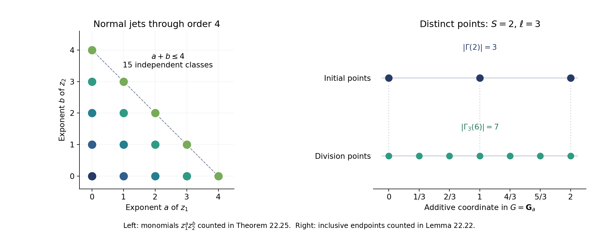
Figure 22.1. The left panel lists the fifteen monomials of total degree at most four in two normal variables, the sharp case of Theorem 22.25. The right panel shows the three points 0, 1, 2 and the seven points 0, 1/3, 2/3, 1, 4/3, 5/3, 2 in the additive group, illustrating the inclusive endpoint count in Lemma 22.22. Both panels depict exact finite sets. Reproducible figure. The local multiplicity argument is developed above from the method of Wüstholz.
From a tangent subvariety to an algebraic subgroup
For a hyperplane in the Lie algebra there is a direct geometric test for the rank appearing in Corollary 22.26. Throughout this section \(k\subset\mathbf C\) is algebraically closed of characteristic zero, \(G/k\) is a connected commutative algebraic group of dimension \(n\), and tangent spaces are identified with \(\operatorname{Lie}G\) by translation. Smoothness of \(G\) is supplied by Cartier's theorem, Theorem 4.3 of Lie algebras and smoothness. We also use the proved product-domain argument of Group schemes over a field and Smooth algebras over a field and the Jacobian criterion, Lemma 1.1, Theorem 2.1 and Corollary 2.2.
Proposition 22.27. Generating a subgroup inside a Lie subspace
Let \(W\subset\operatorname{Lie}G\) be a \(k\)-linear subspace. Suppose \(V\subset G\) is a positive-dimensional irreducible closed \(k\)-subvariety and, on a nonempty open subset of its smooth locus,
\[ T_vV\subset W \quad\text{after translation to the identity}. \tag{22.68} \]There is a positive-dimensional connected closed algebraic subgroup \(H\subset G\), defined over \(k\), such that
\[ \operatorname{Lie}H\subset W. \tag{22.69} \]Proof. We first explain a differential fact used in the argument. For a dominant morphism \(X\to Y\) of irreducible varieties in characteristic zero, its differential has rank \(\dim Y\) on a nonempty open subset of the smooth loci. Choose a transcendence basis \(t_1,\ldots,t_d\) of \(k(Y)/k\), and extend it to one of \(k(X)/k\). In characteristic zero the remaining algebraic extensions of the rational function fields are separable. Differentiation with respect to any chosen basis element extends to a separable algebraic extension: differentiating a minimal polynomial \(P(a)=0\) determines the derivative of \(a\), since \(P'(a)\ne0\). Consequently \(dt_1,\ldots,dt_d\) remain independent in the function field of \(X\). This is the generic rank assertion. Clearing the finitely many denominators and the nonzero minor gives the required open set. The smooth loci are nonempty for these characteristic-zero varieties; the same separating transcendence basis and Jacobian criterion give this fact.
Consider the image \(X=V-V\) as a set, and let \(Z_j\) be the Zariski closure of the image of
\[ V^{2j}\longrightarrow G,\qquad (v_1,w_1,\ldots,v_j,w_j)\longmapsto \sum_{i=1}^j(v_i-w_i),\qquad j\ge1. \tag{22.70} \]Each \(Z_j\) is irreducible, is defined over \(k\), contains the identity, and is invariant under inversion. The sets form an increasing chain, because a further pair can be chosen equal. Also \(\dim Z_1\ge\dim V>0\): fixing a point \(w\in V(k)\) puts the translate \(V-w\) in \(Z_1\).
We claim that, at a general smooth point of every \(Z_j\), its translated tangent space lies in \(W\). Use (22.70) as a dominant map onto its image closure. At a general tuple of smooth points of \(V\), its differential is the sum of the translated tangent vectors with the indicated plus and minus signs. This follows by differentiating addition and inversion; translation identifies the differential of addition with vector addition in the Lie algebra of a commutative group. Hypothesis (22.68) puts that image in \(W\). The differential fact just proved makes it the entire tangent space of \(Z_j\) at a general image point, proving the claim.
The dimensions of the increasing irreducible \(Z_j\) are bounded by \(n\), so for some \(j\) they agree in two consecutive places. Then \(Z_j=Z_{j+1}\). For \(x\in X\), translation gives \(x+Z_j\subset Z_{j+1}=Z_j\); both sides are irreducible closed subvarieties of equal dimension, so \(x+Z_j=Z_j\). Repeating this equality shows that every element of the set \(jX\) stabilizes \(Z_j\).
For any fixed \(z\in Z_j\), the set \(\{g\in G:g+z\in Z_j\}\) is closed and contains \(jX\). It therefore contains its closure \(Z_j\). Thus \(Z_j+Z_j\subset Z_j\). We already know that \(-Z_j=Z_j\) and \(0\in Z_j\). Hence \(H=Z_j\), with its reduced structure, is a closed algebraic subgroup. It is connected because it is irreducible, and it has positive dimension. Characteristic-zero smoothness and translation now identify every tangent space of \(H\) with \(\operatorname{Lie}H\). The claim about the generic tangent space yields (22.69). \(\square\)
Corollary 22.28. Full normal rank when no subgroup lies in a hyperplane
Suppose \(W\) is a hyperplane in \(\operatorname{Lie}G\) and contains the Lie algebra of no positive-dimensional connected algebraic subgroup defined over \(k\). Let \(V\subset G\) be an irreducible \(k\)-subvariety of codimension \(r\), with \(1\le r<n\). For a basis \(\Delta_1,\ldots,\Delta_{n-1}\) of the invariant derivatives associated to \(W\), the matrix of derivatives of generators of the ideal of \(V\) has generic rank
\[ \rho(V)=r. \tag{22.71} \]For a point, of codimension \(n\), the rank is \(n-1\).
Proof. At a smooth point \(v\in V\), the differentials of generators of its ideal have common kernel \(T_vV\); this is the definition of the Zariski tangent space. Their restriction to \(W\) consequently has rank
\[ \dim W-\dim(W\cap T_vV). \tag{22.72} \]Since \(\dim T_vV=n-r\), this rank is \(r\) if \(T_vV\not\subset W\), and \(r-1\) if \(T_vV\subset W\). Generic rank is well-defined: the minors of a derivative matrix are regular functions on an affine open, and its largest nonzero minor stays nonzero on a dense open subset. If that generic rank were less than \(r\), Proposition 22.27 would produce a positive-dimensional subgroup with Lie algebra in \(W\), a contradiction. This proves (22.71). At a point, its tangent space as a reduced subvariety is zero, so (22.72) is \(\dim W=n-1\). \(\square\)
Combined with Corollary 22.26, this gives a precise local obstruction. Under the hypothesis of Corollary 22.28, a primary component supported in codimension \(r<n\) that absorbs all derivatives through order \(T\) has length at least \(\binom{T+r}{r}\). A component supported at a point has length at least \(\binom{T+n-1}{n-1}\). Theorem 22.32 compares these lengths with the degrees of the successive derivative ideals, using the projective degree calculation in Lemmas 22.29–22.30.
A global multiplicity estimate for a Lie hyperplane
We now turn the local length bound into a global estimate. The argument needs a projective embedding on which the invariant derivatives extend regularly. We state that geometric hypothesis explicitly. The estimate proved here will apply to such an embedding once its construction and its arithmetic properties have been supplied. Its constants depend on the embedding and the chosen Lie directions, not on the polynomial or the finite set of points.
The local-to-global method is developed in Wüstholz's freely accessible Multiplicity Estimates on Group Varieties, Sections 3–4. For the hyperplane case, Corollary 22.28 supplies full normal rank at every positive-dimensional component. This permits the following direct construction by successive derivatives.
Lemma 22.29. Degree and the cycle of a hypersurface
Let \(Y\subset\mathbf P^N_k\) be an integral projective variety of dimension \(d\), over an algebraically closed field. Its degree is the positive integer \(\deg Y\) defined by
\[ \dim_k A_t=\frac{\deg Y}{d!}t^d+O(t^{d-1}), \qquad A=k[X_0,\ldots,X_N]/I(Y), \tag{22.73} \]for sufficiently large \(t\). When \(d=0\), the assertion means that this Hilbert function is eventually the constant \(\deg Y\).
If \(d\ge1\) and a homogeneous form \(F\) of degree \(e\ge1\) is not identically zero on \(Y\), then
\[ \sum_Z m_Z\deg Z=e\deg Y, \qquad m_Z=\operatorname{length}_{\mathcal O_{Y,\eta_Z}} \bigl(\mathcal O_{Y,\eta_Z}/(F)\bigr). \tag{22.74} \]Here \(Z\) ranges over the irreducible components of \(Y\cap V(F)\), and \((F)\) means any local trivialization of the homogeneous equation.
Proof. We use the proved Hilbert–Serre theorem, Theorem 3.1 of Graded modules and Hilbert–Samuel functions, the dimension formula, Theorem 6.1 of Krull dimension and Noether normalization, and the Hilbert–Samuel dimension theorem, Corollary 2.2 of Dimension theory of Noetherian local rings. We give the passage from those affine statements to (22.74).
Hilbert–Serre says that \(\dim_k A_t\) is eventually a polynomial. Put \(\mathfrak m=A_{>0}\). Since \(A\) is generated in degree one, \(A/\mathfrak m^s=\bigoplus_{t<s}A_t\). Localizing this quotient at \(\mathfrak m\) does not change it: a denominator with nonzero constant term has an inverse by a finite geometric series. Thus its vector-space dimension is the Hilbert–Samuel function of \(A_{\mathfrak m}\). Its degree is \(\dim A_{\mathfrak m}=\dim A=d+1\).
For completeness, the last equality follows on a nonempty chart \(X_j\ne0\). The degree-zero part of \(A[X_j^{-1}]\) is the coordinate ring of that chart, and \(A[X_j^{-1}]\) is that ring with the invertible indeterminate \(X_j\) adjoined. Independence of powers of \(X_j\) follows from the grading, after clearing homogeneous denominators. The fraction field therefore has transcendence degree \(d+1\). Noether normalization and the cited dimension formula give the asserted dimensions, including the dimension at the closed vertex \(\mathfrak m\).
Taking a first difference of the Hilbert–Samuel polynomial shows that the Hilbert polynomial of \(A\) has degree \(d\) and positive leading coefficient. Its \(d\)-th finite difference is a positive integer, since the polynomial takes integer values at sufficiently large integers. This proves (22.73) with \(\deg Y\) a positive integer.
We also need additivity with generic multiplicities. A finite graded module over a Noetherian graded ring has a filtration with factors \((A/\mathfrak p)(b)\), for homogeneous primes \(\mathfrak p\) and grading shifts \(b\). Here is the usual filtration argument in this setting. Choose a nonzero homogeneous element whose annihilator is maximal among annihilators of nonzero homogeneous elements. Its homogeneous annihilator is prime: for homogeneous \(a,b\), if \(ab\) annihilates the element and \(b\) does not, maximality applied to the element multiplied by \(b\) forces \(a\) into the annihilator. A homogeneous ideal with this property is prime, as is seen by taking the first nonzero homogeneous terms of two products in its graded quotient. The generated cyclic submodule gives one factor. Repeat in the graded quotient; the ascending chain condition on submodules makes the process terminate.
Hilbert functions add in these exact sequences. Grading shifts do not change leading coefficients. Among the factors of largest support dimension, the number with a given minimal prime \(\mathfrak p\) is the length of the original module localized at \(\mathfrak p\): localizing the filtration kills every other factor, and the surviving factors are its residue field. Thus the leading coefficient is the sum of the component degrees weighted by these generic lengths. The same observation on an affine projective chart identifies the cone multiplicity with the local length on the projective component: adjoining and inverting the grading variable only extends the generic residue field and leaves the length unchanged.
Multiplication by \(F\) is injective in the domain \(A\). Consequently the exact sequence
\[ 0\longrightarrow A(-e)\xrightarrow{\ F\ }A \longrightarrow A/(F)\longrightarrow0 \tag{22.75} \]gives the Hilbert polynomial \(h_A(t)-h_A(t-e)\), with leading term \(e\deg Y\,t^{d-1}/(d-1)!\). The principal ideal theorem and the finite-type dimension formula show that every minimal component of the hypersurface has dimension \(d-1\). The leading-coefficient additivity just proved now gives exactly (22.74). Embedded components of smaller dimension have no contribution to that coefficient. \(\square\)
Lemma 22.30. A degree bound on a smooth open subset
Let \(U\) be a smooth dense open subset of an integral projective variety \(X\subset\mathbf P^N_k\) of dimension \(n\) and degree \(\delta\). Let \(Q_1,\ldots,Q_r\) be homogeneous forms of positive degrees \(e_1,\ldots,e_r\). Suppose their successive zero schemes on \(U\) are cut out by regular sequences, and \(Q_{i+1}\) vanishes identically on no irreducible component of the preceding zero scheme. Then every component of the final zero scheme has codimension \(r\) in \(U\), and
\[ \sum_V\lambda_V\deg\overline V \le\delta\prod_{i=1}^r e_i, \qquad \lambda_V=\operatorname{length}_{\mathcal O_{U,\eta_V}} \bigl(\mathcal O_{U,\eta_V}/(Q_1,\ldots,Q_r)\bigr). \tag{22.76} \]The closures are taken in \(X\). In particular, for \(r=n\) the sum of the lengths at all remaining points is at most the right side.
Proof. The needed commutative algebra is Regular sequences, depth and Cohen–Macaulay modules, Theorems 4.1, 5.1 and 6.1 and Corollary 6.2: regular local rings are Cohen–Macaulay, their regular-sequence quotients are Cohen–Macaulay, and such quotients have no embedded associated primes. Together with the dimension formula, these results give the codimension assertion.
We justify the multiplicities in the induction, rather than assuming that the projective closure is itself a complete intersection. Let \(Y\) be a new component after adjoining the next equation \(f\), and work at its generic point. If \(R=\mathcal O_{U,\eta_Y}\) and \(J\) is the preceding ideal, then \(M=R/J\) is a one-dimensional Cohen–Macaulay module and \(f\) is a nonzerodivisor on it. Moreover \(M/fM\) has finite length. For any subquotient \(N\) of \(M\), both the kernel and cokernel of multiplication by \(f\) have finite length. Indeed, away from the maximal ideal of \(R\), every point of its support is a minimal point of \(\operatorname{Supp}M\), and \(f\) is invertible there.
Define
\[ \chi_f(N)=\operatorname{length}(N/fN) -\operatorname{length}(0:_N f). \tag{22.77} \]The kernel–cokernel exact sequence for multiplication by \(f\) in a short exact sequence shows that \(\chi_f\) is additive. A finite-length module has \(\chi_f=0\), because an endomorphism of such a module has kernel and cokernel of equal length. Apply a prime filtration of \(M\), constructed by the maximal-annihilator argument used above without gradings. Its one-dimensional factors are \(R/\mathfrak p\) for the minimal primes of \(M\); all other factors have finite length. On a one-dimensional domain factor, the kernel of \(f\) is zero. Localization of the filtration counts its occurrences. Hence
\[ \operatorname{length}(M/fM) =\sum_{\mathfrak p\in\operatorname{Min}M} \operatorname{length}(M_{\mathfrak p}) \operatorname{length}\bigl(R/(\mathfrak p,f)\bigr). \tag{22.78} \]The last factors are precisely the generic intersection multiplicities of the preceding reduced components with the hypersurface.
Apply Lemma 22.29 to the projective closure of each preceding component, with its weight \(\lambda_V\). Equation (22.78) identifies the resulting weights at every new component meeting \(U\). Components contained in \(X\setminus U\) have nonnegative degrees and weights and can be omitted from an upper bound. Each step therefore multiplies the upper bound by at most the degree of the new equation. Starting with \([X]\) proves (22.76). At a closed point over \(k\), the projective degree is one, which gives the last assertion. \(\square\)
Lemma 22.31. Homogeneous derivatives with controlled degree
Let \(X\subset\mathbf P^N_k\) be integral and let \(\Delta\) be a regular vector field on \(X\). On each nonempty standard affine chart \(X_j\ne0\), choose polynomial representatives
\[ \Delta(X_l/X_j)=P_{j,l}(X/X_j)\quad(l\ne j), \qquad \deg P_{j,l}\le a, \qquad a\ge2. \tag{22.79} \]There is a common such integer \(a\) for any fixed finite family of vector fields. If \(Q\) is homogeneous of degree \(e\), put
\[ \mathcal D_{j,e}Q =\sum_{l\ne j}X_j^aP_{j,l}(X/X_j) \frac{\partial Q}{\partial X_l}. \tag{22.80} \]This is a homogeneous polynomial of degree \(e+a-1\), and on the \(j\)-th chart its dehomogenization is \(\Delta(Q/X_j^e)\). On any other chart \(X_h\ne0\), write \(\xi=X_j/X_h\) and \(q=Q/X_h^e\). Then
\[ \frac{\mathcal D_{j,e}Q}{X_h^{e+a-1}} =\xi^{a-1}\Delta q-e\xi^{a-2}(\Delta\xi)q. \tag{22.81} \]In particular, if \(\Delta\) is an invariant direction in \(W\), applying (22.80) lowers order of vanishing along \(W\) by at most one at every point of \(G\subset X\), including points where \(X_j=0\). A word of length \(t\) gives degree \(e+(a-1)t\) and order loss at most \(t\).
Proof. A vector field acts as a derivation on the coordinate ring of every affine chart. That ring is a quotient of a polynomial ring in the ratios \(X_l/X_j\), so representatives \(P_{j,l}\) exist. There are only finitely many charts and vector fields; increase their degree bound to an integer \(a\ge2\).
Each \(X_j^aP_{j,l}(X/X_j)\) is a homogeneous polynomial of degree \(a\), so (22.80) has the stated degree. The chain rule on the \(j\)-th chart gives its first assertion. On the overlap with the \(h\)-th chart its normalization is \(\xi^{e+a-1}\Delta(q/\xi^e)\); the product rule gives (22.81). Both coefficients on the right are regular on the entire \(h\)-th chart because \(a\ge2\) and \(\Delta\) is regular on \(X\). Thus the identity extends from the overlap to the whole chart. If a coordinate \(X_j\) is identically zero on \(X\), its empty chart is simply unused.
Order along \(W\) means that all words in the invariant derivatives of length less than that order vanish at the point. Differentiation in a direction of \(W\) lowers it by at most one. Multiplication by any regular function does not lower it, by the iterated product rule. Formula (22.81) proves the assertion at all points. Iteration uses the updated homogeneous degree at each step. On the chosen \(j\)-th chart, it gives exactly the corresponding word of derivatives of the original dehomogenization. \(\square\)
Theorem 22.32. The hyperplane multiplicity estimate
Let \(k\subset\mathbf C\) be algebraically closed, and let \(G/k\) be a connected commutative algebraic group of dimension \(n\ge2\). Suppose \(G\) is a dense open subset of an integral projective variety \(X\subset\mathbf P^N_k\) of degree \(\delta\). Let \(W\subset\operatorname{Lie}G\) be a hyperplane whose invariant vector fields extend regularly to \(X\). Suppose \(W\) contains the Lie algebra of no positive-dimensional connected algebraic subgroup over \(k\).
Choose a basis of \(W\), and let \(a\ge2\) be a common bound as in Lemma 22.31. The following positive integers depend only on these fixed data:
\[ \begin{split} c_1&=1,\qquad B_r=\delta\prod_{i=1}^r c_i,\qquad K_r=r!B_r+1,\qquad c_{r+1}=c_r+(a-1)K_r\quad(1\le r<n),\\ L&=\sum_{r=1}^{n-1}K_r,\qquad C_{\mathrm{mult}}=2^{n-1}(n-1)!B_n. \end{split} \tag{22.82} \]Let \(P\) be a homogeneous form of degree \(D\ge1\) that is not identically zero on \(G\), and let \(\Sigma\subset G(k)\) be finite. If \(P\) vanishes along \(W\) to order at least an integer \(T\) at every point of \(\Sigma\), and \(T\ge2LD\), then
\[ |\Sigma|T^{n-1}\le C_{\mathrm{mult}}D^n. \tag{22.83} \]Proof. The case \(\Sigma=\varnothing\) is immediate, so assume it is nonempty. We construct homogeneous forms \(Q_1=P,Q_2,\ldots,Q_n\), with \(\deg Q_i=c_iD\). On \(G\), their successive ideals \(J_r\) will define nonempty complete intersections of pure codimension \(r\). Every generator of \(J_r\) will have order at least
\[ T-D\sum_{h<r}K_h \tag{22.84} \]along \(W\) at \(\Sigma\). The first step holds because \(G\) is smooth and integral and \(P\) is nonzero on it. Lemma 22.30 gives, at every step already constructed,
\[ \sum_{V\in\operatorname{Irr}V(J_r)} \lambda_V\deg\overline V\le B_rD^r. \tag{22.85} \]Suppose \(r<n\) and fix one of these components \(V\). Its positive dimension and Corollary 22.28 imply that the invariant derivatives in \(W\) have full normal rank \(r\) at its generic point. Work on a standard chart meeting \(V\), then localize at that generic point. The ideal \(J_r\) becomes primary for the maximal ideal of this local ring; its quotient has length \(\lambda_V\le B_rD^r\), because \(\deg\overline V\ge1\).
Put \(t_r=K_rD\). The choice (22.82) gives
\[ \binom{t_r+r}{r}\ge\frac{t_r^r}{r!}>B_rD^r\ge\lambda_V. \tag{22.86} \]If every derivative of every dehomogenized generator of \(J_r\), through order \(t_r\), belonged to the prime ideal of \(V\), the localization and product-rule argument of Lemma 22.24 would give the same assertion for every element of the localized ideal. Normalize an invertible \(r\times r\) minor of the normal derivative matrix, exactly as in Corollary 22.26. Theorem 22.25 would force its length to be at least \(\binom{t_r+r}{r}\), contradicting (22.86). Therefore some word of at most \(t_r\) derivatives of one generator is nonzero at the generic point of \(V\).
Apply the homogeneous operators of Lemma 22.31 on that chart. The resulting polynomial \(R_V\) does not vanish identically on \(V\), has degree at most \(c_rD+(a-1)t_r=c_{r+1}D\), and has order at least (22.84) minus \(t_r\) at every point of \(\Sigma\). The assertion about all points, even those outside the chosen chart, is exactly the reason for formula (22.81).
There are finitely many components. Choose a linear form \(H\) nonzero at every one of their generic points. Such a form exists: each forbidden condition is a proper linear subspace of the finite-dimensional space of linear forms, and a finite union of proper linear subspaces over an infinite field cannot cover that space. To see the last fact, choose a nonzero linear functional vanishing on each subspace. Their product is a nonzero polynomial; induction on the number of variables shows that a nonzero polynomial over an infinite field cannot vanish at every point.
Multiply each \(R_V\) by the needed power of \(H\) to give it degree \(c_{r+1}D\). This preserves its nonvanishing on \(V\) and its lower bound for order at \(\Sigma\). A linear combination of the resulting finitely many polynomials can be chosen nonzero on every component: for each component, the coefficients giving zero in its function field form a proper linear subspace, since its own \(R_V\) is nonzero. The same finite-subspace argument applies. Call the chosen combination \(Q_{r+1}\).
The preceding complete intersection is Cohen–Macaulay and has no embedded associated primes. Avoiding its irreducible components therefore makes \(Q_{r+1}\) a nonzerodivisor wherever its new zero scheme is nonempty. The cited regular-sequence results and dimension formula give pure codimension \(r+1\). Its order at \(\Sigma\) is at least \(T-D\sum_{h\le r}K_h\), so it still contains \(\Sigma\): this integer is at least \(T-LD\ge T/2\ge1\). Lemma 22.30 supplies (22.85) for the new ideal. This completes the induction.
The zero scheme of \(J_n\) on \(G\) is finite. Set \(T_0=T-LD\). At \(s\in\Sigma\), every word of length at most \(T_0-1\) sends every element of \((J_n)_s\) into the maximal ideal; use (22.84) and the product rule, including localization. The normal rank at a point is \(n-1\). Theorem 22.25 and the same normalization of a nonzero minor give
\[ \operatorname{length}_{\mathcal O_{G,s}} \bigl(\mathcal O_{G,s}/(J_n)_s\bigr) \ge\binom{T_0+n-2}{n-1} \ge\frac{T_0^{n-1}}{(n-1)!} \ge\frac{T^{n-1}}{2^{n-1}(n-1)!}. \tag{22.87} \]Sum this inequality over \(\Sigma\), and bound the sum of all point lengths by \(B_nD^n\) using (22.85). This is (22.83). \(\square\)
Corollary 22.33. The geometric contradiction after extrapolation
Use the notation of Proposition 22.21: \(n\ge2\), \(m\ge1\), \(k\ge5\), \(S=\ell^{2n+1}\), \(1\le q\le S+1\), \(A=2nmqS^{nk}\), and \(D=A/S^k\). Suppose the hypotheses on \(G,X,W\) in Theorem 22.32 hold. Suppose a nonzero form of degree \(D\) has order at least an integer \(T'\ge A/8\) along \(W\) at a set of at least \(\ell q/2\) distinct division points. These conditions are impossible when
\[ S^k\ge16L, \qquad \ell>4nm\,8^{n-1}C_{\mathrm{mult}}. \tag{22.88} \]Proof. First \(T'/D\ge S^k/8\ge2L\). Furthermore
\[ \frac{|\Sigma|(T')^{n-1}}{D^n} \ge\frac{\ell q}{2}\frac{(A/8)^{n-1}}{(A/S^k)^n} =\frac{\ell}{4nm\,8^{n-1}} >C_{\mathrm{mult}}, \tag{22.89} \]contradicting (22.83). \(\square\)
Theorem 22.45 supplies the group compactification with regular invariant fields, and Theorem 22.43 supplies the division-field degree. The height and denominator estimates are proved in22.47–56, the normalized entire lift and its jet estimates in22.58–61, and the auxiliary-section construction in22.62. Theorem22.63 combines these with the multiplicity estimate, retaining the dyadic torsion factor from Lemma22.53.
Example 22.34. A derivative cut and its point at infinity
Take \(G=\mathbf G_a\times\mathbf G_m\), with coordinates \((x,y)\), and the invariant derivative \(\Delta=\partial_x+y\partial_y\). Its Lie line contains no positive-dimensional algebraic subgroup, by the classification in Theorem 22.4. The Segre compactification is
\[ (x,y)\longmapsto[1:x:y:xy],\qquad X_0X_3-X_1X_2=0\quad\text{in }\mathbf P^3. \tag{22.90} \]Its degree is two: the exact sequence for its single quadratic equation in the polynomial ring gives Hilbert function \(\binom{t+3}{3}-\binom{t+1}{3}=(t+1)^2\).
Let \(F=y-1-x\). Then \(\Delta F=y-1\), so their common zero on \(G\) is \((0,1)\), with length one: the ideal \((y-1-x,y-1)\) is \((x,y-1)\). On the analytic curve \((x,y)=(t,e^t)\), the function \(F\) has order two at zero, since \(F(0)=F'(0)=0\) and \(F''(0)=1\). Thus the derivative cuts the curve even though the original curve and the Lie direction are tangent at that point.
The two affine equations have the linear homogeneous extensions \(F_h=X_2-X_0-X_1\) and \(H_h=X_2-X_0\). Their intersection on the quadric consists of
\[ [1:0:1:0]\quad\text{and}\quad[0:0:0:1]. \tag{22.91} \]Indeed, subtracting the equations gives \(X_1=0\), then \(X_2=X_0\), and the quadric equation becomes \(X_0X_3=0\). The first point is the affine point already found. For the second, use the chart \(X_3=1\), with \(p=X_1/X_3\), \(q=X_2/X_3\), so \(X_0=pq\). The equations become \(q-pq-p\) and \(q-pq\). Their difference gives \(p\), and the second then gives \(q\); the quotient again has length one. This point is outside \(G\). Thus the projective degree count is \(2=1+1\), while the sum retained on \(G\) is only one, exactly as in Lemma 22.30.
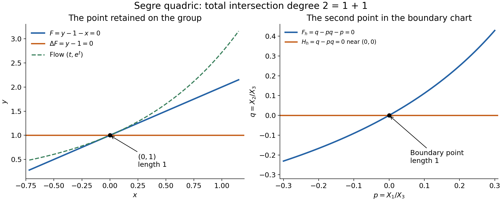
*Figure 22.2. Exact equations from Example 22.34, drawn on real slices of the two affine charts. Left: \(F=0\), \(\Delta F=0\), and the analytic flow \((t,e^t)\). Right: near the boundary point, \(F_h=0\) is \(q=p/(1-p)\) and \(H_h=0\) is \(q=0\). Each marked point has algebraic intersection length one. The picture represents these chart slices; the degree calculation is the algebraic computation above. *
Period lattices and the field of a division point
The division-field bound used in extrapolation has a direct explanation in terms of the exponential kernel. It does not require a bound on the coefficients of the multiplication map. We distinguish analytic connectedness, used for the exponential, from the algebraic statements about its finite fibres.
Proposition 22.35. The exponential of a connected commutative complex Lie group
Let \(H\) be a connected commutative complex Lie group of complex dimension \(n\). Its exponential is a surjective holomorphic homomorphism
\[ \exp_H:\mathbf C^n\longrightarrow H, \qquad H\simeq\mathbf C^n/\Lambda, \qquad \Lambda\simeq\mathbf Z^r, \qquad 0\le r\le2n. \tag{22.92} \]The chosen identification of the tangent space with \(\mathbf C^n\) is the only choice in this notation. The kernel \(\Lambda\) is discrete. For every positive integer \(b\), multiplication by \(b\) is surjective and each of its fibres has exactly \(b^r\) points.
Proof. The parameter-dependent flow and exponential construction are proved for arbitrary real Lie groups in Local tools for bundles and transport, Theorem 2.1, Lemma 2.2 and Proposition 2.3. In particular invariant vector fields have solutions on every finite time interval, by translating a single identity chart and restarting a bounded number of times. Compactness is not required.
Apply that construction to the underlying real group. Let \(\gamma_v(t)\) be the identity-starting solution with invariant initial velocity \(v\). The differential of addition, after translating tangent spaces to the identity, is vector addition. Thus \(\gamma_v(t)+\gamma_w(t)\) solves the same invariant equation as \(\gamma_{v+w}(t)\). Uniqueness makes the curves equal. At time one this proves that \(E(v)=\gamma_v(1)\) is a homomorphism. The cited smooth-dependence theorem and time rescaling give \(dE_0=\operatorname{id}\). Differentiating the homomorphism identity yields \(dE_v=dL_{E(v)}\circ dE_0\). These derivatives are complex-linear, because translations in a complex Lie group are holomorphic. Therefore the smooth map \(E\) is holomorphic. It is a local biholomorphism at zero and, by translation, everywhere.
Its image is an open subgroup. The complement, being a union of other open cosets, is open as well. Connectedness makes the image all of \(H\). Local injectivity gives discreteness of \(\Lambda=\ker E\). The homomorphism consequently induces a bijection \(\mathbf C^n/\Lambda\to H\). A small ball whose difference set meets \(\Lambda\) only at zero supplies quotient charts; the bijection and its inverse are holomorphic in these charts, proving the analytic isomorphism.
The elementary discrete-subgroup theorem, proved as Lemma 6.22 of Abelian varieties, applies to any finite-dimensional real vector space, without a compact quotient hypothesis. It gives a real-linearly independent integral basis of \(\Lambda\). Its size \(r\) is at most the real dimension \(2n\). One can see the finiteness step directly: select real-linearly independent elements spanning \(\Lambda\) over \(\mathbf R\); their compact fundamental parallelepiped contains only finitely many lattice points, by uniform separation of distinct points of a discrete subgroup. The full subgroup is therefore a finite extension of the subgroup they generate; the integer subgroup-basis argument in that lemma gives the asserted free basis.
For \(h=E(v)\), the point \(E(v/b)\) maps to \(h\) under multiplication by \(b\). Its fibre is a translate of the kernel. The map \(\Lambda/b\Lambda\to H[b]\), \(\lambda\mapsto E(\lambda/b)\), is a bijection: its kernel is \(b\Lambda\), and any \(E(w)\in H[b]\) has \(bw\in\Lambda\). This quotient has \(b^r\) elements in a lattice basis. \(\square\)
Corollary 22.36. Division-field degree
Let \(G\) be a smooth commutative algebraic group of dimension \(n\) over a number field \(K\subset\mathbf C\), and suppose \(G(\mathbf C)\) is connected in its analytic topology. Let \(\gamma\in G(K)\), and let \(\eta\in G(\mathbf C)\) satisfy \([b]\eta=\gamma\), with \(b\ge1\). Then \(\eta\) is algebraic over \(K\), and
\[ [K(\eta):K]\le b^r\le b^{2n}, \qquad [K(\eta):\mathbf Q]\le[K:\mathbf Q]b^{2n}, \tag{22.93} \]where \(r\) is the rank of the exponential kernel in Proposition 22.35. All integer multiples of \(\eta\) are defined over the same field \(K(\eta)\).
Proof. The differential of \([b]\), translated to the identity, is multiplication by \(b\) on the tangent space: differentiate the sum of \(b\) copies of the variable. It is invertible in characteristic zero. Therefore the tangent space of each geometric fibre of \([b]\) is zero. A local ring at a geometric point of such a fibre is Noetherian and has \(\mathfrak m/\mathfrak m^2=0\); Nakayama gives \(\mathfrak m=0\). In particular the finite-type fibre is zero-dimensional and reduced. A finite-type zero-dimensional scheme over a field is a finite disjoint union of spectra of finite field extensions: cover it by finitely many affine opens, use the zero-dimensional Noetherian-ring theorem and the field case of the Nullstellensatz, and note that its finitely many points are open. The needed results are proved in Noetherian and Artinian rings and The Nullstellensatz and Jacobson rings.
Apply this to the fibre over the \(K\)-rational point \(\gamma\). Every complex point of the fibre is therefore algebraic over \(K\). Its degree \([K(\eta):K]\) is the number of its distinct conjugate geometric points, since number fields have characteristic zero. Proposition 22.35 counts the entire fibre as \(b^r\) points, so the degree cannot exceed that number. The absolute-degree bound follows from the tower formula. Finally every multiplication-by-an-integer morphism is defined over \(K\); applying it to a \(K(\eta)\)-point keeps its coordinates in that field. \(\square\)
For the division point \(\eta=\exp_G(u/\ell)\) in Lemma 22.22, formula (22.93) supplies the factor \(\ell^{2n}\) in the field-degree part of the norm estimate. Theorem 22.42 below proves analytic connectedness for irreducible complex varieties; Corollary 22.43 therefore supplies this division-field bound for every smooth geometrically connected commutative algebraic group. Bounds for heights, denominators and homogeneous normalization remain distinct inputs.
Affine factors and a compactification over an abelian variety
The zero estimate in Theorem 22.32 needs a projective ambient variety on which the invariant vector fields are regular. An arbitrary projective closure does not supply that property. We first describe the affine factors of a commutative group, then construct an ambient variety from an extension by those factors. Throughout this section \(k=\overline{\mathbf Q}\subset\mathbf C\). A vector subgroup means a linear subspace with its additive group law.
Proposition 22.37. Several additive coordinates
Let \(W\subset\mathbf C^u\times\mathbf C^v\) be a complex linear subspace. Write its coordinate projections as \(p:W\to\mathbf C^u\) and \(z:W\to\mathbf C^v\). Put
\[ V=p(W),\qquad L=\{m\in\mathbf Z^v:m\cdot z(w)=0\text{ for every }w\in W\}. \tag{22.94} \]Then \(L\) is saturated and
\[ \overline{\{(p(w),e^{z_1(w)},\ldots,e^{z_v(w)}):w\in W\}}^{\rm Zar} =V\times T_L. \tag{22.95} \]Consequently every connected closed algebraic subgroup of \(\mathbf G_a^u\times\mathbf G_m^v\) is the product of a vector subgroup and a subtorus. When the subgroup is defined over \(k\), both factors and their product decomposition are defined over \(k\).
Proof. Saturation follows by dividing a vanishing linear form by a nonzero integer. A regular function on the ambient group has the finite Laurent expansion
\[ F(x,y)=\sum_m P_m(x)y^m. \]Group its terms by the cosets \(c\) of \(L\) that meet the support, and write \(P_c=\sum_{m\in c}P_m\). The linear forms \(m\cdot z|_W\), one for each such coset, are distinct; call them \(\lambda_c\). Suppose \(F\) vanishes on the exponential image. Choose \(a\in W\) on which the finitely many \(\lambda_c\) have distinct values. Such a choice exists by the finite-hyperplane argument following Lemma 22.1. If there is only one coset, any \(a\), including zero, suffices. For every fixed \(b\in W\), substitution of \(w=b+ta\) gives
\[ \sum_c e^{\lambda_c(b)}P_c(p(b)+t p(a))e^{t\lambda_c(a)}=0 \qquad(t\in\mathbf C). \]Lemma 22.1 implies that every polynomial coefficient in \(t\) vanishes. Setting \(t=0\) gives \(P_c(p(b))=0\) for all \(b\), hence \(P_c|_V=0\). This argument includes \(W=0\): there is a single coset and the assertion is evaluation at the identity.
Conversely those restrictions imply that \(F\) vanishes on the exponential image. They also say precisely that \(F\) vanishes on \(V\times T_L\). Indeed, after quotienting the polynomial ring by the linear ideal of \(V\), the monomial-coordinate change in Lemma 22.2 makes the Laurent monomials indexed by distinct cosets a basis over \(\mathbf C[V]\). Thus the vanishing ideals of the two sets agree, proving (22.95).
Now let \(H\) be a connected closed subgroup over \(\mathbf C\), and take \(W=\operatorname{Lie}H\). We justify the inclusion of its exponential image without assuming that \(H(\mathbf C)\) is analytically connected. For \(w=(a,z)\in W\), the ambient invariant derivation is
\[ D_w=\sum_{i=1}^u a_i\partial_{x_i} +\sum_{j=1}^v z_jy_j\partial_{y_j}. \]Its tangent vector at every point of \(H\) is tangent to \(H\), by translation. The defining ideal of the smooth reduced group \(H\) is therefore preserved by \(D_w\): the derivative of a function vanishing on \(H\) is zero at every point of \(H\), and the Nullstellensatz puts it back in that ideal. All iterates have the same property. The entire function \(t\mapsto F(ta,e^{tz})\), for \(F\) in this ideal, has all Taylor coefficients zero at the origin. Hence it is identically zero, proving \(\exp(W)\subset H\).
Let \(Z\) be the closure in (22.95). It is smooth, connected and contained in \(H\). The exponential curves give \(W\subset\operatorname{Lie}Z\), while the inclusion \(Z\subset H\) gives the reverse inclusion. Smoothness makes their dimensions equal. Since \(H\) is irreducible, by the programme group-component theorem used before Lemma 22.1, a closed subset of the same dimension must equal \(H\). This proves the product classification over \(\mathbf C\).
If \(H\) is defined over \(k\), then \(W=W_k\otimes_k\mathbf C\) for its \(k\)-Lie algebra, and \(V\) is the scalar extension of the \(k\)-linear image of \(W_k\). The lattice \(L\) is defined by integer equations and the same linear tests on \(W_k\). Both factors therefore descend to \(k\). Equality of their defining ideals with the ideal of \(H\) follows from the equality over \(\mathbf C\), since scalar extension by a field is faithfully flat. \(\square\)
Theorem 22.38. A connected commutative affine group splits
Every connected commutative affine algebraic group \(L_0\) over \(k\) is isomorphic over \(k\) to
\[ L_0\simeq\mathbf G_a^a\times\mathbf G_m^b \tag{22.96} \]for some nonnegative integers \(a,b\).
Proof. The faithful representation theorem, proved in Group schemes, actions and Hopf algebras, Theorem 5.2, supplies a closed embedding \(L_0\hookrightarrow\operatorname{GL}_N\). Its proof takes a finite-dimensional subcomodule of the coordinate algebra containing a set of algebra generators; the matrix coefficients then generate that algebra, so the representation is a closed embedding, not merely injective on points.
Let \(R\subset\operatorname{Mat}_N(k)\) be the unital \(k\)-algebra generated by \(L_0(k)\). It is finite-dimensional and commutative. Commutativity follows from the group law, and finite dimension follows from the ambient matrix space. Every element of \(R\) which is invertible as a matrix has its inverse in \(R\), by its characteristic polynomial with nonzero constant term. Consequently \(R^\times=R\cap\operatorname{GL}_N\), and \(L_0\) is a closed subgroup of this unit group. These are scheme-theoretic inclusions: all groups in characteristic zero are reduced, and their algebraically closed field points are dense, so the linear equations defining \(R\) vanish on \(L_0\).
The finite-dimensional commutative algebra \(R\) is Artinian. The decomposition and nilpotent-radical theorem, proved in Noetherian and Artinian rings, Lemma 4.1 and Theorem 4.2, gives
\[ R=\prod_{i=1}^r R_i,\qquad R_i=k\oplus\mathfrak m_i, \qquad J=\prod_i\mathfrak m_i,\qquad J^s=0 \tag{22.97} \]for some \(s\ge1\). Here each \(R_i\) is local. Its residue field is a finite extension of the algebraically closed field \(k\), hence is \(k\). The displayed copy of \(k\) consists of scalar multiples of the identity of \(R_i\).
An element of \(R_i\) is a unit exactly when its scalar coordinate is nonzero: after factoring out that scalar, the inverse of \(1+j\) is the finite geometric series in \(-j\). Therefore multiplication gives an algebraic-group isomorphism
\[ (\mathbf G_m)^r\times(1+J)\longrightarrow R^\times, \qquad ((t_i),1+j)\longmapsto (t_i)(1+j). \]Both this map and its inverse are regular, since division by each \(t_i\ne0\) is regular on the torus.
There is also an algebraic-group isomorphism from the vector space \(J\), with addition, to \(1+J\), with multiplication:
\[ \exp(j)=\sum_{q=0}^{s-1}\frac{j^q}{q!},\qquad \log(1+j)=\sum_{q=1}^{s-1}\frac{(-1)^{q+1}j^q}{q}. \tag{22.98} \]For completeness the formal identities here do not require a choice of analytic logarithm. In \(\mathbf Q[[T]]\), differentiating the formal series gives \((\exp T)'=\exp T\) and \((\log(1+T))'=1/(1+T)\). The chain rule and the constant coefficients show that the two series are compositional inverses: each relevant composition has derivative \(1\) or agrees with \(1+T\) after division by it, and has the required constant coefficient. In two commuting variables the binomial theorem gives \(\exp(S+T)=\exp(S)\exp(T)\). Substitution of nilpotent elements of the commutative ideal \(J\) turns these identities into finite polynomial identities. They hold after every scalar extension. This proves (22.98).
We have embedded \(L_0\) as a connected closed subgroup of \(\mathbf G_a^{\dim J}\times\mathbf G_m^r\). Proposition 22.37 makes it a product of a \(k\)-vector subgroup and a subtorus. A \(k\)-basis identifies the vector subgroup with \(\mathbf G_a^a\), and the saturated-lattice basis of Lemma 22.2 identifies the subtorus with \(\mathbf G_m^b\). This proves (22.96). \(\square\)
Theorem 22.39. Compactification of an affine-by-abelian extension
Suppose a smooth connected commutative algebraic group \(G\) over \(k\) fits into an exact sequence
\[ 0\longrightarrow L_0\longrightarrow G\xrightarrow{q} A\longrightarrow0, \qquad L_0\simeq\mathbf G_a^a\times\mathbf G_m^b, \tag{22.99} \]where \(A\) is an abelian variety and \(q\) is an fppf \(L_0\)-torsor. There is a smooth projective variety \(X\supset G\), with \(G\) dense and open, on which the translation action of \(G\) extends to a regular algebraic action. In particular every invariant vector field of \(G\) extends to a regular vector field on \(X\).
Proof. We give the local construction and its descent, including why the torsor is Zariski-locally trivial. The vector-bundle descent used below is proved in Quotients and torsors, Theorem 8.1. It applies to fpqc torsors, hence to the fppf torsor in (22.99).
For each additive coordinate of \(L_0\), use the representation \(c\mapsto\left(\begin{smallmatrix}1&c\\0&1\end{smallmatrix}\right)\) on \(k^2\), with all other factors acting trivially. The associated rank-two bundle \(E_i\) on \(A\) has a distinguished section \(e_1\), and a quotient map given in each torsor frame by the second coordinate. They form an exact sequence \(0\to\mathcal O_A e_1\to E_i\to\mathcal O_A\to0\). The affine hyperplane in \(E_i\) where that quotient coordinate equals \(1\) is an additive torsor. It has a section on a Zariski open cover: locally a surjective map of finite free modules onto the rank-one free module has a lift of \(1\). Translation by \(e_1\) then identifies the hyperplane with the trivial additive torsor on that open.
For each multiplicative coordinate use \(t\mapsto\operatorname{diag}(t,1)\). The associated bundle is \(E_i=M_i\oplus\mathcal O_A\) for a line bundle \(M_i\). The points \((v,1)\) with \(v\ne0\) form its frame torsor \(M_i^\times\), which is Zariski-locally trivial. The natural map from \(G\) to the product over \(A\) of these additive and multiplicative torsors is an isomorphism: it becomes the coordinate isomorphism of \(L_0\) after an fppf trivializing cover, and the local inverses descend. Refining the finitely many individual Zariski covers therefore trivializes \(q\) itself.
Choose such a cover \(U_\alpha\). On an overlap the fibre coordinates change by
\[ x_{i,\alpha}=x_{i,\beta}+c_{i,\alpha\beta},\qquad y_{j,\alpha}=t_{j,\alpha\beta}y_{j,\beta}, \quad t_{j,\alpha\beta}\in\mathcal O^\times. \tag{22.100} \]The additive transition functions add on triple overlaps, and the multiplicative ones multiply. These changes extend to each projective line. In homogeneous coordinates \([u:v]\), with affine coordinate \(u/v\), they are given by the actual invertible matrices \(\left(\begin{smallmatrix}1&c\\0&1\end{smallmatrix}\right)\) and \(\operatorname{diag}(t,1)\). Their cocycle identities hold in \(\operatorname{GL}_2\), not only in \(\operatorname{PGL}_2\).
Use the convention that \(\mathbf P(E_i)\) parametrizes lines in the fibres of \(E_i\), and form
\[ X=\mathbf P(E_1)\times_A\cdots\times_A\mathbf P(E_{a+b}). \tag{22.101} \]If \(a+b=0\), this means \(X=A=G\). The coordinate charts above identify \(X|_{U_\alpha}\) with \(U_\alpha\times(\mathbf P^1)^{a+b}\). The additive open in each factor is \(v\ne0\). Its complement is the single section at infinity. The multiplicative open is \(uv\ne0\), with the two complementary zero and infinity sections. Their product open is exactly \(G\), by the torsor identification. It is dense because it is dense in every local product. The local product also proves smoothness, since \(A\) and the projective lines are smooth.
Here is a concrete projectivity argument. Fix an ample line bundle \(M\) on the projective variety \(A\). For a sufficiently large integer \(d\), each \(E_i^\vee\otimes M^d\) is generated by finitely many global sections, by Serre's theorems on projective schemes, Theorem 2.2. Dualizing the resulting locally split surjection gives a subbundle \(E_i\otimes M^{-d}\hookrightarrow\mathcal O_A^{N_i}\). It induces a closed immersion \(\mathbf P(E_i)=\mathbf P(E_i\otimes M^{-d})\hookrightarrow A\times\mathbf P^{N_i-1}\): in a local splitting it is cut out by the linear coordinates of the complementary summand. Taking all factors gives a closed immersion of \(X\) into \(A\times\prod_i\mathbf P^{N_i-1}\). A projective embedding of \(A\) followed by the Segre embedding makes the latter product projective. Thus \(X\) is projective over \(k\).
It remains to check equivariance. Let \(F=(\mathbf P^1)^{a+b}\), with the coordinatewise action just described. The construction identifies \(X\) with the associated bundle \(G\times^{L_0}F\). For a right torsor we use the relation \((g+\ell,z)\sim(g,\ell\cdot z)\). For \(h\in G\), define \(h\cdot[g,z]=[h+g,z]\). This respects the relation. It is regular: after pulling back along the fppf trivializing cover \(G\to A\), it is induced by the regular addition map and the regular action on \(F\); the compatible morphisms descend. Its group identities can be checked on the same cover. On the dense open associated to \(L_0\subset F\), the map \([g,\ell]\mapsto g+\ell\) identifies this action with translation on \(G\).
Finally differentiate the action at the identity in its first variable. Algebraically, a tangent vector \(v\in\operatorname{Lie}G\) is an identity-valued point over \(k[\epsilon]/(\epsilon^2)\). Pulling a local function back along its action gives \(f+\epsilon D_v f\); multiplicativity gives the Leibniz identity. These derivations agree on overlaps and hence define a regular vector field on all of \(X\). Its restriction to \(G\) is precisely the invariant field with initial value \(v\). \(\square\)
Corollary 22.40. Analytic connectedness and division degrees for the extension
Under the hypotheses of Theorem 22.39, \(G(\mathbf C)\) is connected in the analytic topology. Consequently its exponential has the description in Proposition 22.35. If the group and a point \(\gamma\) are defined over a number field \(K\), every point \(\eta\) with \([b]\eta=\gamma\) satisfies the degree bound (22.93).
Proof. The connectedness of \(A(\mathbf C)\) is proved in Abelian varieties, Theorem 6.23. That proof uses the equality of algebraic and analytic global functions on the projective \(A\): an analytic decomposition would give a nonconstant locally constant holomorphic function, whereas the algebraic global functions are constants. The fibres of \(q(\mathbf C)\) are analytically connected, since they are isomorphic to \(\mathbf C^a\times(\mathbf C^\times)^b\). The complex plane is path connected, and the ordinary complex exponential maps it onto \(\mathbf C^\times\), so each factor is connected.
The Zariski local trivializations proved in Theorem 22.39 are also analytic local trivializations. Therefore \(q(\mathbf C)\) is surjective and open. A complex manifold is locally path connected; its connected components are open. Each connected fibre is contained in a single component of \(G(\mathbf C)\). Thus the images of distinct components under \(q\) are disjoint open sets, and they cover \(A(\mathbf C)\). The connectedness of \(A(\mathbf C)\) allows only one nonempty such set. Since every component has a nonempty image, \(G(\mathbf C)\) has only one component. Proposition 22.35 and Corollary 22.36 now apply with their analytic connectedness hypothesis verified. \(\square\)
The sequence (22.99) is an explicit hypothesis of the last two results. Theorem 22.45 below supplies that sequence for every connected commutative algebraic group, using the programme's commutative structure theorem. We first give a separate proof of analytic connectedness, which does not need the sequence.
Analytic connectedness without the structure theorem
For division fields, the connectedness assertion can in fact be proved before constructing an affine-by-abelian sequence. We give the argument for any irreducible complex variety. Its essential observation is that an analytic separation of the sheets of a finite algebraic cover would produce a polynomial factor.
Lemma 22.41. Removing a polynomial hypersurface
Let \(f\in\mathbf C[t_1,\ldots,t_d]\) be nonzero. A holomorphic function on \(\mathbf C^d\setminus V(f)\) which is locally bounded near every point of \(V(f)\) extends uniquely to an entire function. If it satisfies
\[ |h(t)|\le C(1+\|t\|)^M \tag{22.102} \]off \(V(f)\), for fixed finite \(C,M\ge0\), the extension is a polynomial of total degree at most \(\lfloor M\rfloor\).
Proof. Fix a point of \(V(f)\), move it to the origin and make an invertible linear coordinate change so that \(f(0,\ldots,0,t_d)\) is not identically zero. Such a direction exists: a nonzero lowest homogeneous part of \(f\) is nonzero in some direction. Choose a sufficiently small radius \(r>0\) on whose last-coordinate circle this one-variable polynomial has no zero. For \(t'=(t_1,\ldots,t_{d-1})\) in a sufficiently small polydisc, continuity keeps \(f(t',\zeta)\ne0\) on \(|\zeta|=r\). On that polydisc times \(|t_d|<r\), define
\[ H(t',t_d)=\frac{1}{2\pi i} \int_{|\zeta|=r}\frac{h(t',\zeta)}{\zeta-t_d}\,d\zeta. \tag{22.103} \]The integrand is holomorphic near the compact integration circle and in the parameter variables. Cauchy's formula, or differentiation under this compact integral, makes \(H\) holomorphic in all its variables. For each fixed \(t'\), the polynomial \(f(t',\zeta)\) has only finitely many zeros inside the circle and is nonzero on the circle. Local boundedness makes each singularity removable: at a puncture \(a\), the function \(g(z)=(z-a)^2h(z)\), extended by \(g(a)=0\), is complex differentiable there with derivative zero, and is holomorphic elsewhere. Its Taylor series has a double zero, so division by \((z-a)^2\) extends \(h\). Apply this to each singularity of \(h(t',\zeta)\). One-variable Cauchy's formula therefore identifies \(H\) with \(h\) wherever the latter is defined in this polydisc.
The local extensions agree: the complement of \(V(f)\) is dense in every open polydisc, since a nonzero polynomial cannot vanish on an open set, and holomorphic functions are continuous. They consequently glue to an entire extension, uniquely. The argument also covers \(d=1\), with no parameter variables; for \(d=0\) the assertion is just a function on a point. The one-variable Cauchy formula and Taylor expansion used here are proved in Cauchy's theorem for cycles and its consequences, Theorems 2.3 and 3.2.
The bound (22.102) persists on the hypersurface by continuity. On the polydisc \(|t_i|\le R\), the iterated Cauchy coefficient estimate bounds the Taylor coefficient of \(t^\alpha\) at zero by
\[ C(1+\sqrt d\,R)^M R^{-|\alpha|}. \]Here is the several-variable formula used in that estimate. Apply the one-variable Cauchy formula successively in the \(d\) coordinates; the integrand is continuous on the compact product of circles, so the integrations may be interchanged. For \(|t_j|<R\) this gives
\[ h(t)=\frac{1}{(2\pi i)^d} \int_{|\zeta_1|=R}\cdots\int_{|\zeta_d|=R} h(\zeta)\prod_{j=1}^d\frac{d\zeta_j}{\zeta_j-t_j}. \]On every smaller closed polydisc, expand each denominator as its uniformly absolutely convergent geometric series and integrate term by term. This proves the convergent multivariable Taylor expansion and the coefficient estimate above. That estimate tends to zero as \(R\to\infty\) when \(|\alpha|>M\). All such coefficients vanish, so the expansion is a polynomial of the stated degree. \(\square\)
Theorem 22.42. An irreducible complex variety is analytically connected
If \(Y\) is an irreducible reduced variety of finite type over \(\mathbf C\), then \(Y(\mathbf C)\), with its analytic topology, is connected.
Proof. First let \(Y=\operatorname{Spec}R\) be affine. Its coordinate ring is a finite-type domain. Krull dimension and Noether normalization, Corollary 3.2, gives a polynomial subring \(B=\mathbf C[t_1,\ldots,t_d]\subset R\) over which \(R\) is finite. Put \(K=\operatorname{Frac}B\) and \(L=\operatorname{Frac}R\). If \(d=0\), the finite domain \(R\) over the algebraically closed field \(\mathbf C\) is \(\mathbf C\), and the assertion follows.
For \(d>0\), the finite extension \(L/K\) is separable, since the characteristic is zero. We recall the finite primitive-element argument here. Choose finitely many algebra generators \(r_1,\ldots,r_m\) of \(R\). There are exactly \(e=[L:K]\) embeddings of \(L\) into an algebraic closure of \(K\): adjoining the generators one at a time, every embedding extends in as many ways as there are distinct roots of the next minimal polynomial, and those numbers multiply to the field degree. Distinct embeddings differ on some generator. Avoiding the finitely many linear equations
\[ \sum_i c_i\bigl(\sigma(r_i)-\tau(r_i)\bigr)=0 \qquad(\sigma\ne\tau) \]with \(c_i\in\mathbf C\) is possible over an infinite field. For example choose the coefficients successively by evaluating the nonzero product of these linear polynomials; induction on the number of variables shows that it cannot vanish on all of \(\mathbf C^m\), even though its coefficients lie in a larger field. The element \(\theta=\sum_i c_i r_i\in R\) then has \(e\) distinct conjugates. Its minimal polynomial has degree \(e\), so \(L=K(\theta)\).
Let \(P(t,T)\) be that monic minimal polynomial. Its coefficients belong to \(B\). Indeed \(\theta\) is integral over \(B\); all its conjugates, and hence their elementary symmetric functions, are integral over \(B\). These coefficients lie in \(K\), and the polynomial ring \(B\) is integrally closed. The required closure of integral elements under ring operations and normality of a polynomial ring are proved in Integral extensions: lying over, going up and going down, Theorem 1.2 and Proposition 2.3. Monic division and linear independence of \(1,\theta,\ldots,\theta^{e-1}\) over \(K\) give \(B[\theta]=B[T]/(P)\).
Express each \(r_i\) in that \(K\)-basis, and invert a common nonzero polynomial denominator. Also invert the nonzero discriminant of \(P\). For their product \(f\in B\setminus\{0\}\), this gives
\[ R_f=B_f[\theta]=B_f[T]/(P),\qquad Y_f(\mathbf C)\longrightarrow U=\mathbf C^d\setminus V(f). \tag{22.104} \]This map is an analytic covering with \(e\) sheets. At every \(t\in U\), the polynomial \(P(t,T)\) has exactly \(e\) distinct roots; the holomorphic inverse-function theorem gives one holomorphic root near each, and these account for all the roots. The real smooth inverse-function theorem is proved in Local tools for bundles and transport, Theorem 1.2. Applied to a holomorphic map with invertible complex differential, it has a holomorphic inverse: the derivative of the smooth inverse is the inverse complex-linear differential. The implicit form used here follows by applying this to \((t,T)\mapsto(t,P(t,T))\).
The base \(U\) is path connected. For any two distinct points \(a,b\in U\), the complex affine line through them meets \(V(f)\) in only finitely many points, because the restricted polynomial is nonzero at \(a\). The complex line with finitely many points removed is path connected: a polygonal path can detour around each of its finitely many intersections with small disjoint circles. This joins \(a\) to \(b\) inside \(U\).
Suppose the cover in (22.104) were disconnected, and let \(C_0\) be one of its connected components. A covering of a manifold is locally path connected, so its components are open. On every sufficiently small connected trivializing ball, each sheet is connected and is either contained in \(C_0\) or disjoint from it. The number \(s\) of roots belonging to \(C_0\) is therefore locally constant on \(U\), hence constant. Since the cover is disconnected, \(0<s<e\). Multiplying the corresponding linear factors gives
\[ Q(t,T)=\prod_{\substack{P(t,\alpha)=0\\(t,\alpha)\in C_0}}(T-\alpha). \tag{22.105} \]Its coefficients are globally well-defined holomorphic functions on \(U\): local root labels can permute, but membership in \(C_0\) and the elementary symmetric functions do not change.
Write \(P=T^e+\sum_{j<e}a_j(t)T^j\). Every root satisfies
\[ |\alpha|\le 1+\max_{j<e}|a_j(t)|. \tag{22.106} \]For if \(|\alpha|>1+A\), where \(A=\max_j|a_j(t)|\), then \(A\sum_{j<e}|\alpha|^j<|\alpha|^e\), contradicting \(P(t,\alpha)=0\). This bound gives polynomial growth in \(\|t\|\) for each coefficient of \(Q\), and local boundedness near \(V(f)\). Lemma 22.41 makes every coefficient a polynomial. The complementary product over the other roots has the same properties and hence also polynomial coefficients. On \(U\), their product is \(P\); polynomial identity then gives a nontrivial factorization of \(P\) in \(B[T]\), contrary to its irreducibility over \(K\). Thus \(Y_f(\mathbf C)\) is connected.
The nonempty Zariski open \(Y_f\) is analytically dense in \(Y\). Here one must use the analytic topology, not just Zariski density. The exact comparison is proved after Theorem 4.1 of Complex analytic spaces and analytification: algebraic and analytic local rings have the same completion, and their map is faithfully flat. In the present reduced affine situation its injectivity already suffices. If an analytic open set were contained in \(V(f)\), the nonzero regular function \(f\in R\) would have zero analytic germ at a point of that open. The injection from its algebraic local ring would force its algebraic germ to be zero, impossible in the domain \(R\). Hence every nonempty analytic open meets \(Y_f\). The closure of a connected set is connected, proving the affine assertion.
Finally cover \(Y\) by nonempty affine opens. Each is irreducible and has connected analytification by what was just proved. Any two of these opens intersect, by irreducibility; their intersection has a complex point by the Nullstellensatz. Their analytifications therefore form a cover by pairwise intersecting connected sets. Such a union is connected: a separation of the union would put each connected set on one side, and any intersection forces the same side for every set. This proves the theorem. \(\square\)
Corollary 22.43. The division-field bound for arbitrary connected groups
Let \(G/K\) be a smooth geometrically connected commutative algebraic group of dimension \(n\), where \(K\) is a number field with a chosen embedding into \(\mathbf C\). For every \(\gamma\in G(K)\), every integer \(b\ge1\), and every complex point \(\eta\) satisfying \([b]\eta=\gamma\), one has
\[ [K(\eta):K]\le b^{2n}. \tag{22.107} \]Such division points exist. All their integer multiples are defined over \(K(\eta)\).
Proof. The connected smooth algebraic group \(G_{\mathbf C}\) is irreducible by the group-component theorem used at the start of this lesson. Theorem 22.42 makes its complex Lie group analytically connected. Proposition 22.35 then supplies the division points and counts each fibre, and Corollary 22.36 proves their algebraicity, the degree bound and the field assertion. No compactification or affine-by-abelian sequence is used in this deduction. \(\square\)
Lemma 22.44. Two line-bundle facts for smooth varieties
Let \(Y\) be a smooth integral separated variety over an algebraically closed field of characteristic zero.
- The complement of a dense affine open of \(Y\) is the support of an effective Cartier divisor, with the zero divisor allowed.
- If \(V\subset\mathbf A^d\) is a nonempty open and \(\mathcal E\) is a line bundle on \(Y\times V\), then its restrictions to \(Y\times\{v\}\) and \(Y\times\{w\}\) are isomorphic for any \(v,w\in V(k)\).
Proof. We use the Cartier–Weil comparison, with its proof, in Weil divisors and the class group, Theorem 2.1. The local rings here are regular and hence UFDs by Regular local rings, Theorem 5.3. Thus Weil divisors have Cartier local equations. We also use the codimension-one intersection formula for a Noetherian normal domain \(B\),
\[ B=\bigcap_{\operatorname{ht}\mathfrak p=1}B_{\mathfrak p} \quad\text{inside }\operatorname{Frac}B, \tag{22.108} \]proved in Discrete valuation rings, normal rings and Serre's criterion, Theorem 3.3.
For the first assertion let \(U\subset Y\) be the dense affine open. Remove from \(Y\) all codimension-one irreducible components of \(Y\setminus U\), obtaining \(Y'\). Its remaining complement of \(U\) has codimension at least two. If \(W\subset Y'\) is affine, then \(W\cap U\) is affine: the intersection of two affine opens in a separated scheme is the inverse image of its closed diagonal in their product. By (22.108), every regular function on \(W\cap U\), viewed as a rational function on the integral \(W\), extends to \(W\), since no codimension-one point was removed. Thus the open immersion \(W\cap U\to W\) induces an isomorphism of coordinate rings. Both schemes are affine, so it is an isomorphism. Consequently \(W\subset U\) for every such \(W\), and \(Y'=U\). The whole boundary is therefore the union of its finitely many prime divisors. Their sum is an effective Cartier divisor by local factoriality, with exactly that support.
For the second assertion we can shrink \(V\) to a principal open containing both \(v\) and \(w\). To see this, choose polynomials in the ideal of \(\mathbf A^d\setminus V\) nonzero at \(v\) and at \(w\), respectively. A general linear combination is nonzero at both points. Its principal open lies in \(V\). If \(V=\mathbf A^d\), take the polynomial \(1\).
Write this principal open as \(D(f)\), and choose a nonzero rational section of \(\mathcal E\). It has a Weil divisor \(D\) on the smooth product \(Y\times D(f)\). On the generic fibre over \(Y\), the coordinate ring is \(k(Y)[t_1,\ldots,t_d,1/f]\), a UFD. Every Weil divisor there is principal, since its height-one primes are generated by irreducible elements. Hence there is a rational function \(g\) on the product such that \(D-\operatorname{div}(g)\) has no component dominating \(Y\).
Every remaining prime divisor is \(P\times D(f)\) for a prime divisor \(P\) of \(Y\). Here is the codimension check. On an affine open of \(Y\) meeting its generic image, the corresponding height-one prime of \(B[t,1/f]\) contracts to a nonzero prime of \(B\). Choose a nonzero element \(h\) in that contraction. The minimal primes of \((h)\) in the normal domain \(B\) have height one. Extending a finite intersection of their ideals to the polynomial localization preserves the intersection, and the extended quotient by each prime remains a domain. The extended radical ideal is radical because a polynomial ring over a reduced ring, and any localization of it, is reduced. Thus the minimal primes above \(h\) in the product are exactly those extensions. Our height-one prime must be one of them. This identifies its divisor with \(P\times D(f)\); the local uniformizer of \(P\) has multiplicity one after this product extension.
It follows that \(D-\operatorname{div}(g)\) is the pullback of a Weil divisor \(D_Y\) on \(Y\). Local factoriality makes \(D_Y\) Cartier. The injective Cartier–Weil comparison on the normal product identifies \(\mathcal E\) with the pullback of \(\mathcal O_Y(D_Y)\). Restricting at either \(v\) or \(w\) therefore gives the same line bundle on \(Y\). \(\square\)
Theorem 22.45. The geometric inputs for every connected commutative group
Let \(G\) be a connected commutative algebraic group over \(k=\overline{\mathbf Q}\). Then there is an exact sequence (22.99), with connected affine kernel and abelian-variety quotient. Consequently \(G\) has a smooth projective equivariant compactification \(X\), and all its invariant vector fields extend regularly to \(X\). Its complex exponential is surjective with discrete kernel of rank at most \(2\dim G\).
Proof. The commutative structure theorem is proved as Proposition A.6 in the auxiliary argument of Néron models. Its hypotheses are precisely a smooth connected commutative group over an algebraically closed field. Characteristic-zero smoothness was established at the start of this lesson.
We spell out how the geometric prerequisites fit this use. Group schemes over a field, Theorem 6.2, proves quasi-projectivity of a smooth connected group by taking an effective Cartier divisor with affine complement, translating it over a finite étale cover of an open of affine space, and taking the norm of that divisor. The resulting fibre divisors all have isomorphic line bundles and their affine complements cover the group. The two line-bundle facts needed in that proof are exactly Lemma 22.44; the norm and covering argument are written out in the cited theorem. Its Lemma 6.1 proves ampleness from this affine-open cover, and the immersion supplied by an ample line bundle is proved in Serre's theorems on projective schemes, Lemma 1.3. No descent of ampleness from a larger field is needed in our algebraically closed setting.
The auxiliary Lemmas A.1–A.5 of Néron models then give the boundary argument. They extend rational group homomorphisms, detect affineness from a faithful rational action fixing a point through its finite local neighbourhoods, extract a divisorial image by its valuation, and construct a boundary divisor with a dominant rational action. The dominance check is part of Lemma A.4: precomposing with \((b,a,y)\mapsto(b,ay)\) changes the action map into \((b,a,y)\mapsto(b^{-1},(ba)y)\), which is dominant by a group-coordinate change. Thus no equivariance of an arbitrary projective closure is assumed. Lemma A.5 concludes that every nonproper smooth connected group has a positive-dimensional connected affine subgroup.
For clarity, the final deduction in Proposition A.6 is short. Choose a connected affine subgroup \(L_0\subset G\) of maximum dimension; the trivial subgroup ensures existence of a choice. It is normal since \(G\) is commutative. The scheme quotient and its torsor map are proved in Quotients and torsors, Theorem 11.1b. If \(G/L_0\) were nonproper, Lemma A.5 would give a positive-dimensional connected affine subgroup of that quotient. Its inverse image in \(G\) is connected and affine: it is a torsor under the smooth connected affine \(L_0\) over a connected affine base, and affineness descends along its faithfully flat trivializing cover. Its dimension is strictly larger than \(\dim L_0\), a contradiction. Hence \(G/L_0\) is proper. It is smooth and connected, and quasi-projectivity just proved makes it projective. It is therefore an abelian variety.
Theorem 22.38 identifies \(L_0\) with \(\mathbf G_a^a\times\mathbf G_m^b\). Theorem 22.39 gives the smooth projective equivariant compactification and the extended vector fields. The exponential assertion follows either from Corollary 22.40 or independently from Theorem 22.42 and Proposition 22.35. \(\square\)
In particular, the geometric hypotheses about the ambient projective variety and invariant fields in Theorem 22.32 are now available for every connected commutative \(G/\overline{\mathbf Q}\). The height and denominator estimates are established in22.47–56; the entire lift and jet propagation are proved in22.58–61. These lead to the auxiliary-section construction and analytic subgroup theorem in22.62–64.
Example 22.46. Two roots in one connected cover
Consider \(Z=\{(t,z)\in\mathbf C^\times\times\mathbf C:z^2=t\}\), projected onto its first coordinate. The parameter \(z\ne0\) identifies \(Z\) with \(\mathbf C^\times\), so the cover is connected even though each fibre has two points. Over the loop \(t=e^{is}\), the lift starting at \(z=1\) is
\[ t(s)=e^{is},\qquad z(s)=e^{is/2},\qquad 0\le s\le4\pi. \tag{22.109} \]After one base circuit it ends at \(z=-1\); after two it returns to \(1\). Thus there cannot be a globally continuous choice of one of the two roots on \(\mathbf C^\times\). A putative separation of this cover into its individual roots would give just such a choice.
Algebraically, \(T^2-t\) is irreducible over \(\mathbf C(t)\): a root \(r(t)\) would satisfy \(2v_t(r)=1\), impossible for the integer order \(v_t\) of a rational function at zero. This is the degree-two case of the mechanism in Theorem 22.42. The finite fibre size does not imply that the covering space has that many connected components.
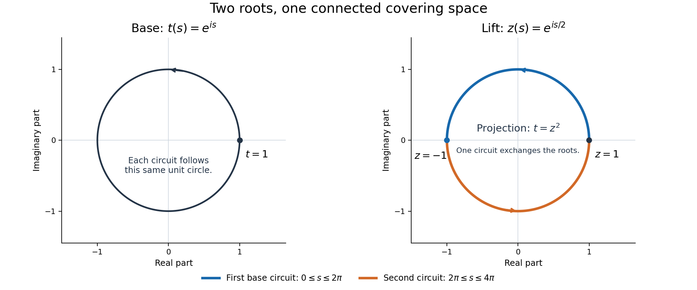
Figure 22.3. Both panels are unit circles with their actual complex coordinates. In the base the two circuits trace the same circle. On the covering circle the first circuit traces the blue upper semicircle from \(1\) to \(-1\), and the second traces the orange lower semicircle back to \(1\). The projection is exactly \(z\mapsto z^2\); no branch cut separates the total space.
The equivariant compactification in Theorem 22.39 can be compared with Serre's freely accessible Quelques propriétés des groupes algébriques commutatifs, Section 1. For a free exposition of the structural theorem, see Milne's A Proof of the Barsotti–Chevalley Theorem on Algebraic Groups. The programme proof and its exact hypotheses used here are specified in Theorem 22.45.
Heights of division points and translated derivatives
Fix a connected commutative algebraic group \(G/\overline{\mathbf Q}\). All algebraic data in a finite construction descend to a number field: choose a field containing their finitely many coefficients and the finitely many coefficients in the identities between them. We may therefore enlarge a fixed number field \(K\) to include the compactification of Theorem 22.45, its split affine kernel, the embeddings and the vector fields that we use. Constants below may depend on these fixed choices. They never depend on the field of definition of a variable point.
Lemma 22.47. Projective height and the product formula
For a nonzero tuple \(x=(x_0,\ldots,x_N)\) in a number field \(E\) of degree \(d_E\), put
\[ h([x])=\frac1{d_E}\left( \sum_{\sigma:E\hookrightarrow\mathbf C}\log\max_i|\sigma x_i| -\sum_{\mathfrak p}\min_i v_{\mathfrak p}(x_i)\log N\mathfrak p \right). \tag{22.110} \]Here \(v_{\mathfrak p}(0)=+\infty\), and the second sum runs over the nonzero prime ideals of \(\mathcal O_E\). The valuation of a nonzero element is its exponent in the principal fractional ideal. The expression is finite, is independent of scaling \(x\) and of enlarging \(E\), and is nonnegative. Write \(h(a)=h([1:a])\). For \(a\ne0\) and any specified embedding \(\sigma:E\hookrightarrow\mathbf C\),
\[ h(a^{-1})=h(a),\qquad \log|\sigma a|\ge-d_Eh(a). \tag{22.111} \]Proof. We use the proved norm and ramification formulas in Number fields: Proposition 1.2 on conjugates and towers, Proposition 4.1 on ideal norms, and Theorem 5.2 on the fundamental identity. Together they give, for \(a\in E^\times\),
\[ \sum_\sigma\log|\sigma a| =\log|N_{E/\mathbf Q}(a)| =\sum_{\mathfrak p}v_{\mathfrak p}(a)\log N\mathfrak p . \tag{22.112} \]The middle equality with the ideal sum holds first for integral elements and then for fractions, by multiplicativity of the ideal norm. This is the product formula in the normalization needed here. Scaling the tuple by \(a\) adds the two equal sides of (22.112) with opposite signs in (22.110).
For an extension \(F/E\), every complex embedding of \(E\) extends to \([F:E]\) embeddings of \(F\). At a prime \(\mathfrak P\) above \(\mathfrak p\), the valuation of an element of \(E\) is multiplied by \(e(\mathfrak P/\mathfrak p)\), and \(\log N\mathfrak P=f(\mathfrak P/\mathfrak p)\log N\mathfrak p\). The identity \(\sum_{\mathfrak P\mid\mathfrak p}ef=[F:E]\) therefore multiplies both sums in the numerator by \([F:E]\). The denominator is multiplied by the same integer. Comparison in a compositum proves independence of arbitrary containing fields.
Normalize one nonzero coordinate to \(1\). Every infinite-place logarithm is then nonnegative, and every minimum valuation is nonpositive. This proves nonnegativity. Scaling \([1:a^{-1}]\) by \(a\), and permuting coordinates, gives \(h(a^{-1})=h(a)\). Each nonnegative term \(\log\max(1,|\sigma a^{-1}|)\) is at most \(d_Eh(a^{-1})\); negating this bound proves (22.111). \(\square\)
We will use local maximum estimates with precisely the normalization in (22.110). At a prime \(\mathfrak p\), write \(\|a\|_{\mathfrak p}=(N\mathfrak p)^{-v_{\mathfrak p}(a)}\); it is multiplicative and ultrametric. At infinity sum over all embeddings, so both members of a complex-conjugate pair occur. If a finite tuple of fixed coefficients has local maximum at most \(C_v\), take \(C_v\ge1\). All but finitely many finite-place constants equal \(1\). The normalized sum of their logarithms remains unchanged on field extension, by the calculation just made.
Lemma 22.48. Polynomial evaluation and morphisms
Let \(F_0,\ldots,F_M\) be homogeneous forms of degree \(d\) in \(N+1\) variables over \(K\), and suppose their tuple is nonzero at \(x\). There is a constant \(C\), independent of \(x\), such that
\[ h([F_0(x):\cdots:F_M(x)])\le d\,h(x)+C. \tag{22.113} \]Consequently, if \(V\subset\mathbf P^N\) is a locally closed variety and \(\psi:V\to\mathbf P^M\) is a morphism, there are \(c,d\ge1\) such that \(h(\psi(x))\le c+d\,h(x)\) on \(V(\overline{\mathbf Q})\). For a morphism \(V\times V\to\mathbf P^M\), one can use a bound \(c+d(h(x)+h(y))\).
Proof. At a finite place, each value has norm at most the largest coefficient norm times \(\max_i\|x_i\|_v^d\). At an infinite embedding, the triangle inequality gives the same estimate with an additional factor equal to the maximum number of monomials in a form. Sum logarithms as in (22.110). The coefficient and monomial factors have a finite, field-independent contribution \(C\), proving (22.113).
We justify the passage to a morphism even when \(V\) is not projective. Near a point choose a source affine chart \(X_j\ne0\) and a target affine chart containing its image. Regular functions on a locally closed affine variety are locally fractions in its affine coordinate ring. On a smaller principal open, all the target coordinate functions therefore have polynomial numerators with a common polynomial denominator that is nonzero there. Include that denominator as the target homogeneous coordinate. Homogenize all these polynomials to a common degree using \(X_j\). This gives a homogeneous tuple representing \(\psi\), nonzero throughout that open. Quasi-compactness supplies finitely many such opens and tuples. Apply (22.113) to whichever tuple is valid at the point and take the maximum of the finitely many constants and degrees.
On a product, carry out the same construction on pairs of affine charts and homogenize separately in \(X\) and \(Y\). A tuple of bidegree \((a,b)\) has height bound \(a h(x)+b h(y)+C\), by the identical local estimate. A finite cover gives the last assertion. \(\square\)
For later use, if \(R\) is a homogeneous polynomial of degree \(d\), \(x_j\ne0\), and \(c(R)\) denotes its coefficient tuple, the same proof, now including the constant \(1\) among the coefficients, gives
\[ h\bigl(R(x/x_j)\bigr) \le d\,h(x)+h([1:c(R)])+\log\binom{N+d}{N}. \tag{22.114} \]Including \(1\) is essential for a scalar value: projectively rescaling all coefficients changes that value.
Proposition 22.49. Heights of line bundles on a projective variety
Let \(X/K\) be projective. To each line bundle \(\mathcal L\) one can associate a real function \(h_{\mathcal L}\) on \(X(\overline{\mathbf Q})\), well-defined up to a bounded function, with
\[ \begin{split} h_{\mathcal L\otimes\mathcal M}&=h_{\mathcal L}+h_{\mathcal M}+O(1),\\ h_{f^*\mathcal L}&=h_{\mathcal L}\circ f+O(1). \end{split} \tag{22.115} \]The second assertion is for a fixed morphism \(f:Y\to X\) between projective varieties. If a finite family of global sections generates \(\mathcal L\), its evaluation map \(\phi:X\to\mathbf P^r\) gives \(h_{\mathcal L}=h\circ\phi+O(1)\). Isomorphic line bundles have heights differing by \(O(1)\). If \(D\) is an effective Cartier divisor, then
\[ h_{\mathcal O(D)}(x)\ge-C_D\qquad(x\notin D) \tag{22.116} \]for a constant independent of \(x\) and its field of definition.
Proof. First suppose that two finite generating families \(S,T\) belong to the same line bundle. Their union \(U\) defines a morphism to projective space with closed image \(Z\), because \(X\) is projective. On \(Z\), the coordinates belonging to \(S\) have no common zero. The strong Nullstellensatz, proved in The Nullstellensatz and Jacobson rings, Theorem 2.2, applied to the affine cone shows that for each coordinate \(U_j\) some power belongs to the homogeneous ideal generated by the coordinates in \(S\) and \(I(Z)\). Increasing to a common exponent \(r\) and taking homogeneous components gives
\[ U_j^r=\sum_{i\in S}U_i A_{ij}(U)\pmod{I(Z)}, \qquad \deg A_{ij}=r-1. \tag{22.117} \]The identities may be taken over \(K\): after fixing their finite degrees, their coefficients solve linear equations over \(K\); a solution over an extension implies consistency and hence a solution over \(K\).
At any place, choose \(j\) with maximum \(|U_j|\) and apply the corresponding identity. It gives \(\max_j|U_j|^r\le C_v\max_{i\in S}|U_i|\max_j|U_j|^{r-1}\). Cancel the nonzero last factor. At finite places \(C_v=1\) except for finitely many primes; at infinity incorporate the number of terms. Since \(S\) is a subtuple, the reverse inequality \(\max_S\le\max_U\) is automatic. Summing logarithms proves \(0\le h_U-h_S\le C\). Apply the same argument to \(T\). Thus any two generating families define heights differing by a bounded constant.
If \(S\) generates \(\mathcal L\) and \(T\) generates \(\mathcal M\), the products \(s_i t_j\) generate \(\mathcal L\otimes\mathcal M\). Their local maximum is exactly \(\max_i|s_i|\max_j|t_j|\). Their height is therefore exactly \(h_S+h_T\). Pulling back a generating family also gives the same projective evaluation map composed with \(f\). These observations prove both identities for globally generated bundles.
Fix a very ample bundle \(H\) with a generating family. For every \(\mathcal L\), choose \(r\ge0\) so that \(\mathcal L\otimes H^r\) is globally generated; this is Serre's global-generation theorem in its ample form. Define
\[ h_{\mathcal L}=h_{\mathcal L\otimes H^r}-r h_H. \tag{22.118} \]This is independent up to a bounded function of \(r\), of the generating families and of \(H\). Indeed, two presentations \(\mathcal L=\mathcal A\otimes\mathcal B^{-1}=\mathcal C\otimes\mathcal D^{-1}\), with all four bundles globally generated, give isomorphic globally generated bundles \(\mathcal A\otimes\mathcal D\) and \(\mathcal C\otimes\mathcal B\). The preceding comparison and product calculation show \(h_{\mathcal A}+h_{\mathcal D}=h_{\mathcal C}+h_{\mathcal B}+O(1)\). This also proves additivity, invariance under isomorphism and functoriality for arbitrary line bundles, by expressing each as such a difference. The constants in this proof are uniform over all algebraic points, by (22.117) and the field-independence in Lemma 22.47.
Finally let \(s_D\) be the canonical section of \(\mathcal O(D)\). Choose \(r\) with \(\mathcal O(D)\otimes H^r\) globally generated. Among a finite generating family include all products \(s_D t_i\), where the \(t_i\) generate \(H^r\). Outside \(D\) this subtuple is nonzero and represents the same projective point as \((t_i)\). Enlarging a nonzero tuple can only increase its height, since its local maxima increase in every place. Hence \(h_{\mathcal O(D)\otimes H^r}\ge h_{H^r}\) for these chosen families outside \(D\). Subtract and use (22.115) to obtain (22.116). \(\square\)
Proposition 22.50. Doubling and the boundary
Use the compactification \(q:X\to A\) of Theorem 22.39. Let \(B_a\) be the sum of its additive infinity divisors, and \(B_m\) the sum of its multiplicative zero and infinity divisors. Empty sums mean the zero divisor. Then \([2]:G\to G\) extends to a morphism \(p:X\to X\), covering \([2]:A\to A\), and
\[ p^*B_a=B_a,\qquad p^*B_m=2B_m. \tag{22.119} \]There is a symmetric very ample line bundle \(M\) on \(A\) and a positive integer \(a\) such that \(\mathcal L=\mathcal O(B_a+B_m)\otimes q^*M^a\) is ample on \(X\).
Proof. Write \(X=G\times^{L_0}F\), where \(L_0=\mathbf G_a^a\times\mathbf G_m^b\) as in Theorem 22.39; the exponent \(a\) in the assertion is unrelated to this dimension. On \(F=(\mathbf P^1)^{a+b}\), use \([u:v]\mapsto[2u:v]\) on each additive factor and \([u:v]\mapsto[u^2:v^2]\) on each multiplicative factor. Denote their product by \(p_F\). It satisfies \(p_F(\ell\cdot z)=[2]\ell\cdot p_F(z)\). Consequently
\[ [g,z]\longmapsto[[2]g,p_F(z)] \tag{22.120} \]respects the associated-bundle relation, descends to a morphism on \(X\), and agrees with doubling on the dense open \(G\).
On an additive factor the infinity equation \(v=0\) pulls back with multiplicity one; on a multiplicative factor each equation \(u=0\) or \(v=0\) pulls back with multiplicity two. These are scheme-theoretic Cartier-divisor computations in local frames. The factors changing those frames are units. Thus they give exactly (22.119), with no extra component over the base.
Choose a very ample bundle \(H_A\) on \(A\). The tensor product \(M=H_A\otimes[-1]^*H_A\) is symmetric and very ample: the product of the two embeddings followed by the Segre embedding is an embedding with this bundle. The identity \([2]^*M\simeq M^4\) is Abelian varieties, Theorem 5.1, proved there from the cube theorem.
For ampleness on \(X\), keep the line convention for \(\mathbf P(E_i)\) used in Theorem 22.39, and let \(H_i=\mathcal O_{\mathbf P(E_i)}(1)\), pulled back to \(X\). In an additive factor the projection \(E_i\to\mathcal O_A\) gives the infinity divisor, whose bundle is \(H_i\). In a multiplicative factor \(E_i=M_i\oplus\mathcal O_A\), the two projections give the infinity and zero divisor bundles \(H_i\) and \(H_i\otimes q^*M_i\), respectively. Hence
\[ \mathcal O(B_a+B_m) \simeq\left(\bigotimes_i H_i^{d_i}\right)\otimes q^*Q, \quad d_i=1\text{ or }2,\quad Q=\bigotimes_{\text{multiplicative }i}M_i. \tag{22.121} \]As in Theorem 22.39, choose \(r\) such that all \(E_i^\vee\otimes M^r\) are globally generated. The resulting closed immersion into \(A\times\prod_i\mathbf P^{N_i-1}\), followed on the projective factors by their degree-\(d_i\) Veronese maps and their Segre map, has relative hyperplane bundle \((\bigotimes_i H_i^{d_i})\otimes q^*M^{r\sum_i d_i}\). Choose \(a\) so that \(Q\otimes M^{a-r\sum_i d_i}\) is very ample on \(A\). Such an \(a\) exists: Serre gives global generation after a sufficiently high twist, and tensoring a globally generated line bundle with a very ample bundle is very ample, by the product-map and Segre argument. Embedding the base by this bundle and taking the final Segre map proves ampleness, in fact very ampleness, of \(\mathcal L\). If there are no affine factors, simply take \(\mathcal L=M^a\) on \(A\). \(\square\)
Theorem 22.51. Heights along repeated division by two
Fix a projective embedding \(\iota:G\hookrightarrow\mathbf P^N\) and \(\gamma\in G(\overline{\mathbf Q})\). There is a constant \(C_\gamma\ge1\) such that for every integer \(e\ge0\) and every point \(\eta\) with \([2^e]\eta=\gamma\),
\[ h(\iota(\eta))\le C_\gamma(1+e). \tag{22.122} \]The bound holds for every division point, regardless of its degree.
Proof. First construct the one scaling property of a canonical height that is needed. For the symmetric very ample \(M\) of Proposition 22.50, choose its embedding height \(h_M\ge0\). By (22.115) and \([2]^*M\simeq M^4\), there is a fixed \(C_0\) with \(\left|h_M([2]z)-4h_M(z)\right|\le C_0\). Successive terms of \(4^{-r}h_M([2^r]z)\) differ by at most \(C_0\,4^{-r-1}\), uniformly in \(z\). The geometric series proves convergence and gives
\[ \widehat h_M(z)=\lim_{r\to\infty}4^{-r}h_M([2^r]z)\ge0,\quad |\widehat h_M-h_M|\le C_0/3,\quad \widehat h_M([2]z)=4\widehat h_M(z). \tag{22.123} \]No quadratic pairing or positivity theorem for nontorsion points is needed for these assertions.
Use a projective embedding of \(X\) given by a sufficiently large power of the ample bundle \(\mathcal L\) in Proposition 22.50; divide its height by that power and denote the resulting nonnegative height by \(h_{\mathcal L}\). Equations (22.115), (22.119) and (22.123) give, uniformly on \(G\),
\[ h_{\mathcal L}([2]x)-h_{\mathcal L}(x) =h_{\mathcal O(B_m)}(x)+3a\,\widehat h_M(qx)+O(1)\ge-C_1. \tag{22.124} \]Indeed \(B_m\) is effective and disjoint from \(G\), so (22.116) bounds its height below. The remaining displayed term is nonnegative.
All points \(\eta,[2]\eta,\ldots,[2^e]\eta\) lie in \(G\). Iterating (22.124) gives \(h_{\mathcal L}(\eta)\le h_{\mathcal L}(\gamma)+eC_1\). Finally compare the morphism \(\iota\) with the embedding induced by a power of \(\mathcal L\), using Lemma 22.48 on the locally closed \(G\). Absorb its fixed degree and constant into \(C_\gamma\), obtaining (22.122). \(\square\)
Corollary 22.52. Heights of multiples with a uniform polynomial exponent
For a fixed projective embedding of \(G\), there are constants \(C\ge1\) and an integer \(\kappa\ge1\) such that
\[ h([s]x)+1\le C(s+1)^\kappa\bigl(h(x)+1\bigr) \qquad(s\ge0,\ x\in G(\overline{\mathbf Q})). \tag{22.125} \]In particular, put \(b=2^e\), let \([b]\eta=\gamma\), and suppose \(1\le b\le S\) and \(0\le s\le bS\). For a fixed integer \(B\) and a fixed constant \(C_\gamma'\),
\[ h([s]\eta)\le C_\gamma'S^B. \tag{22.126} \]One may take \(B=2\kappa+1\), increasing \(C_\gamma'\) as needed.
Proof. Lemma 22.48 applied to addition gives \(h(x+y)+1\le A(h(x)+h(y)+2)\) for some \(A\ge1\). Set \(M_r=\max_{0\le s\le2^r}(h([s]x)+1)\). Every integer \(s\le2^{r+1}\) is a sum of two nonnegative integers at most \(2^r\), so \(M_{r+1}\le2A M_r\). Also \(M_0\le C_2(h(x)+1)\), because \(h(0)\) is fixed. Choose an integer \(\kappa\) with \(2^\kappa\ge2A\). For \(s\ge1\), take \(r=\lceil\log_2 s\rceil\), so \(2^r\le2s\); iteration proves (22.125). Increasing \(C\) covers \(s=0\).
By Theorem 22.51, \(h(\eta)+1\le C_\gamma(1+e)\). Since \(b\le S\), \(1+e\le C_3 S\) for \(S\ge1\), and \(s+1\le S^2+1\le2S^2\). Insert these in (22.125) to obtain (22.126). \(\square\)
Lemma 22.53. Distinct points obtained by dyadic division
Let \(u\ne0\) in \(\operatorname{Lie}G(\mathbf C)\), let \(\gamma=\exp_G(u)\) be algebraic, and put \(\eta_e=\exp_G(u/2^e)\). There is an integer \(c\ge1\), depending on \(u\) but not on \(e,S\), such that for every sufficiently large \(e\) and every integer \(S\ge1\),
\[ \#\{[s]\eta_e:0\le s\le2^e S\} \ge\frac{2^e}{2c}\,\#\{[s]\gamma:0\le s\le S\}. \tag{22.127} \]Moreover, if \(G,\gamma\) are defined over \(K\) and \(n=\dim G\), all these points lie in one number field \(K(\eta_e)\) with \([K(\eta_e):\mathbf Q]\le[K:\mathbf Q]\,2^{2ne}\).
Proof. Algebraicity and the degree bound are Theorem 22.43, applied to \([2^e]\eta_e=\gamma\); the group law puts every multiple in the same field. If \(\gamma\) is nontorsion, so is \(\eta_e\). The two cardinalities are \(2^eS+1\) and \(S+1\), respectively. Their ratio is at least \(2^e/2\), so take \(c=1\).
Suppose instead that \(\gamma\) has exact order \(M\). The vector \(v=Mu\) is a nonzero element of the period lattice \(\Lambda=\ker\exp_G\), which is a free abelian group of finite rank by Proposition 22.35. Write \(v=\sum_i a_i\lambda_i\) in a lattice basis, and let \(g=\gcd_i|a_i|>0\). Exactness of the order \(M\) implies \(\gcd(g,M)=1\): a common prime divisor would make \((M/p)u=v/p\) a period.
The order of \(\eta_e\) is the least positive \(t\) for which every \(ta_i/(M2^e)\) is an integer. Bézout's identity for the integers \(a_i\) therefore gives the exact order
\[ \operatorname{ord}(\eta_e) =\frac{M2^e}{\gcd(g,M2^e)} =\frac{M2^e}{2^\nu} \quad(e\ge\nu),\qquad \nu=v_2(g). \tag{22.128} \]Put \(c=2^\nu\). The initial number of distinct multiples is \(q=\min(S+1,M)\), and the divided number is \(\min(2^eS+1,M2^e/c)\). Since \(S\ge(S+1)/2\ge q/2\) and \(M\ge q\), both entries in this minimum are at least \(2^e q/(2c)\). This proves (22.127), including \(M=1\), the case of a nonzero period \(u\). \(\square\)
Proposition 22.54. The height cost of a translated derivative
Choose finitely many bihomogeneous tuples \(E_\alpha(X,Y)\) representing the addition map on open subsets covering \(G\times G\), as in Lemma 22.48. Fix an affine neighborhood of the identity with algebraic coordinates \(y=(y_1,\ldots,y_r)\), realized as a closed affine variety, and polynomial lifts of fixed invariant derivations there as in Lemma 22.11. If an extra principal localization is necessary, include its inverse as an additional coordinate. In these coordinates the projective coordinates \(Y(y)\) on a chart containing the identity are polynomials; one homogeneous coordinate is \(1\).
Let \(P\in\mathbf Z[Z_0,\ldots,Z_N]\) be homogeneous of degree \(D\ge1\), with coefficients of absolute value at most \(H\ge1\). For a derivative word \(I\) of length \(t\), define
\[ J_{\alpha,I}(X)= \left.D_I\bigl(P(E_\alpha(X,Y(y)))\bigr)\right|_{y=y(0)}. \tag{22.129} \]There are constants \(a,C\ge1\), independent of \(P,D,H,t\), such that each \(J_{\alpha,I}\) is homogeneous of degree \(a_\alpha D\le aD\) in \(X\), has coefficients in \(K\), and satisfies
\[ h([1:c(J_{\alpha,I})]) \le \log H+C(D+t)\log(D+t+2). \tag{22.130} \]Zero polynomials are permitted, with coefficient height zero. For \(x\in G(E)\), normalize a nonzero homogeneous coordinate \(x_j\) to \(1\). If \(J_{\alpha,I}(x/x_j)\ne0\), then
\[ \log\left|\sigma J_{\alpha,I}(x/x_j)\right| \ge-[E:\mathbf Q]\! \left(\log H+C(D+t)\log(D+t+2)+aD\,h(x)\right). \tag{22.131} \]Here \(E\) contains \(K\), and \(C\) has been enlarged to include the monomial count. The point-height term is multiplied by \(D\), not by \(t\).
Proof. Let the bidegree of \(E_\alpha\) be \((a_\alpha,b_\alpha)\). Before differentiation, substitution into \(P\) gives degree exactly \(a_\alpha D\) in \(X\), unless the polynomial is zero, and degree at most \(c_0D\) in \(y\), for a fixed \(c_0\). The derivations act only on \(y\), so homogeneity and degree in \(X\) are preserved.
The fixed addition and coordinate polynomials have a fixed common integer denominator and bounded coefficient norms at every embedding of \(K\). Expanding \(P\) shows that its substituted polynomial has common denominator at most \(q_0^D\) and coefficient norm at most \(H(D+1)^N A_0^D\), after increasing fixed \(q_0,A_0\ge1\). Propositions 22.12–22.13, with \(D_Y=c_0D\) and the fixed algebraic evaluation point \(y(0)\), consequently give a positive integer \(Q_{D,t}\) and a real \(R_{D,t}\ge1\) such that
\[ \begin{split} Q_{D,t}J_{\alpha,I}&\in\mathcal O_K[X],\\ \log Q_{D,t}&\le C_4(D+t),\\ \max_\sigma\|J_{\alpha,I}^\sigma\|_1&\le R_{D,t},\\ \log R_{D,t}&\le\log H+C_5(D+t)\log(D+t+2). \end{split} \tag{22.132} \]At a finite prime the coefficient tuple \([1:c(J)]\) has local maximum at most that of \(1/Q_{D,t}\) if this exceeds \(1\); its total normalized finite contribution is at most \(\log Q_{D,t}\), by (22.112) for this rational integer. Its infinite contribution is at most \(\log R_{D,t}\). This proves (22.130).
Apply (22.114) to the normalized tuple \(x/x_j\), then (22.111) to the nonzero resulting algebraic number. Since \(\log\binom{N+aD}{N}\le C_6D\log(D+2)\), it is absorbed in (22.130). This proves (22.131). In particular, evaluating a derivative at a moving point directly is unnecessary: differentiating the second argument of the addition law at the fixed identity keeps the moving-point degree bounded by \(aD\). \(\square\)
Corollary 22.55. Extrapolation with any fixed polynomial growth exponent
Fix \(n\ge2\), \(m\ge1\), positive constants \(C_a,C_b\), and real numbers \(B,\rho\ge1\). Choose an integer \(k\ge\max(5,B,2\rho)\), and put \(K=nk+2+12nm\), \(C_0=2K+1\). Choose \(b=2^e>16C_0(C_a+C_b)\), let \(S=b^{2n+1}\), and use the parameters \(A,D,T,M,V\) of (22.50), with any \(1\le q\le S+1\). Suppose \(f\) is entire and vanishes to order at least \(M\) at \(0,\ldots,S\). Suppose also that
\[ \begin{split} \log\max_{|z|\le S^2}|f(z)| &\le C_a\{V+D(S^B+S^{2\rho})\},\\ f(s/b)\ne0\quad&\Longrightarrow\quad \log|f(s/b)|\ge-C_b b^{2n}\{V+DS^B\} \quad(0\le s\le bS). \end{split} \tag{22.133} \]Then \(f(s/b)=0\) for all these integers \(s\).
Proof. The zero function causes no difficulty. As in Proposition 22.21, \(V\le2KA\log S\), \(M\ge A/8\), and \(D=A/S^k\). The new restrictions on \(k\) give \(DS^B\le A\) and \(DS^{2\rho}\le A\). Since \(\log S\ge2\), each expression in braces in (22.133) is at most \(C_0A\log S\). Lemma 22.19 bounds the logarithm at a nonzero \(f(s/b)\) above by \(A\log S(C_a C_0-S/16)\). Combining this with its lower bound yields \(S\le16C_0(C_a+C_b b^{2n})\), contrary to \(S=b^{2n+1}\) and the chosen lower bound on \(b\). This is the same integer comparison as in (22.53), with the larger fixed exponents absorbed by \(k\). \(\square\)
Thus the extrapolation argument can use any proved finite growth order \(\rho\). A claimed order, without a construction and its estimates, does not supply the first line of (22.133).
Lemma 22.56. Clearing point denominators without a derivative-order penalty
Let \(x=[x_0:\cdots:x_N]\in\mathbf P^N(K)\), choose \(x_j\ne0\), and write \(z_i=x_i/x_j\). There is a positive rational integer \(b_x\) such that
\[ b_xz_i\in\mathcal O_K,\qquad \log b_x\le m h(x),\qquad \max_{\sigma,i}\log\max(1,|\sigma z_i|)\le m h(x), \quad m=[K:\mathbf Q]. \tag{22.134} \]For the coefficient functions \(J_{\alpha,I}\) obtained by applying (22.129) to a single degree-\(D\) monomial \(P\), their values at \(z\) can consequently be expanded in a fixed integral basis of \(\mathcal O_K\) after multiplication by a positive integer. The resulting integer coefficients have absolute value at most
\[ \exp\!\left(C\{(D+t)\log(D+t+2)+D h(x)\}\right), \tag{22.135} \]where \(C\) depends only on the fixed data and \(K\). The same denominator works for all monomials and derivative words of order at most \(t\) at this point. Different points may use different denominators.
Proof. Put \(r_{\mathfrak p}=\max(0,-\min_i v_{\mathfrak p}(z_i))\) and \(\mathfrak d=\prod_{\mathfrak p}\mathfrak p^{r_{\mathfrak p}}\). Because \(z_j=1\), the finite part of \(m h(x)\) is exactly \(\log N\mathfrak d\); the infinite part is nonnegative. Set \(b_x=N\mathfrak d\). The finite abelian group \(\mathcal O_K/\mathfrak d\) has this order, so multiplication by \(b_x\) kills it, proving \(b_x\mathcal O_K\subset\mathfrak d\). It follows that \(v_{\mathfrak p}(b_xz_i)\ge r_{\mathfrak p}+v_{\mathfrak p}(z_i)\ge0\) at every prime. This proves integrality and the bound for \(b_x\). Each nonnegative infinite summand in (22.110) is individually at most \(m h(x)\), proving the last bound in (22.134).
For a monomial \(P\), (22.132) holds with \(H=1\). Choose its denominator uniformly in the monomial, the chart index and all words of length at most \(t\), using the fixed denominators in the proof of Propositions 22.12–22.13; a fixed integer raised to \(C_1(D+t)\) suffices. Multiply further by \(b_x^{aD}\). Every evaluated coefficient is now integral, since its degree in \(z\) is at most \(aD\). At any embedding, its absolute value is bounded by
\[ Q_{D,t}\,b_x^{aD}R_{D,t} \bigl(\max_i\max(1,|\sigma z_i|)\bigr)^{aD}. \tag{22.136} \]Taking logarithms and using (22.132)–(22.134) gives (22.135), initially for conjugate absolute values.
To pass to integer coordinates, let \(\omega_1,\ldots,\omega_m\) be an integral basis. The matrix \((\sigma_i\omega_j)_{i,j}\) is nonsingular: its determinant squared is the nonzero field discriminant, as proved in Discriminants and integral bases, Proposition 2.1. Its fixed inverse bounds each coordinate of an algebraic integer by a fixed multiple of the maximum absolute value of its conjugates. Absorb this factor in \(C\). This proves the integer coefficient bound. Multiplying one linear equation by its own nonzero denominator preserves its solution set; there is no need to multiply together denominators from distinct points. \(\square\)
Example 22.57. Additive and multiplicative division have different heights
Embed \(\mathbf G_a\) in \(\mathbf P^1\) by \(x\mapsto[1:x]\), and divide the point \(1\) by \(2^e\). In the primitive integer coordinates \([2^e:1]\), formula (22.110) gives
\[ h([1:2^{-e}])=e\log2. \tag{22.137} \]Thus a bound uniform in \(e\), independent of the division point, would already fail for the additive group.
For \(\mathbf G_m\), divide \(2\) by \(2^e\) and choose any root \(\alpha_e\) of \(X^{2^e}-2\). Height satisfies \(h(a^r)=r h(a)\) for \(r\ge1\): in the normalized tuple \([1:a]\), both every infinite maximum and every negative valuation are multiplied by \(r\). Hence
\[ h([1:\alpha_e])=2^{-e}\log2. \tag{22.138} \]All choices of the root obey this identity. The positive real root is only one representative for drawing it. In the Segre embedding of \(\mathbf G_a\times\mathbf G_m\), local maxima multiply, so the height of \((2^{-e},\alpha_e)\) is exactly \((e+2^{-e})\log2\). These formulas illustrate both the growth allowed by Theorem 22.51 and the distinction between a small complex absolute value and a small arithmetic height.
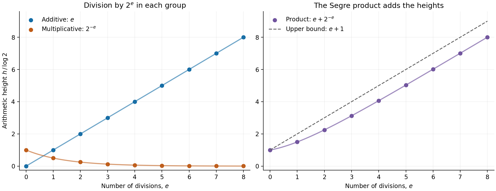
Figure 22.4. Dots are the actual division points' heights, divided by \(\log2\), at integer \(e\). The connecting curves interpolate the explicit formulas \(e\), \(2^{-e}\), and \(e+2^{-e}\). They do not assert that the groups have a division operation indexed by nonintegers.
Theorem 22.51 and Corollary 22.52 give the point heights for (22.131), while Lemma 22.53 controls the field degree and the number of distinct divided points. Lemma 22.56 supplies the integer row bounds used to construct the auxiliary polynomial. To turn them into an analytic subgroup theorem one must also prove the analytic growth and normalization estimates and propagate all the required jets; the height inequalities alone do not assert that conclusion.
For comparison with the classical geometric height construction, see Serre's freely accessible Quelques propriétés des groupes algébriques commutatifs, Sections 1–2. The projective-height and line-bundle arguments needed above have been proved here from the specified programme results.
An entire lift with controlled normalization
An algebraic value estimate applies to normalized projective coordinates. An analytic zero estimate applies to an entire function. Passing between them introduces a scalar, and an upper bound for that scalar does not give the lower bound required by Liouville's inequality. We construct a homogeneous entire lift whose norm is bounded in both directions. A finite growth order suffices, by Corollary 22.55.
Lemma 22.58. A polynomially bounded solution of a closed \(\bar\partial\) equation
Let \(a=\sum_{j=1}^n a_j\,d\bar z_j\) be a smooth \((0,1)\)-form on \(\mathbf C^n\), with \(\bar\partial a=0\). Suppose \(n\ge1\), \(s\ge0\) is an integer, and the coefficients and their first real derivatives satisfy
\[ |a(z)|+|Da(z)|\le C(1+|z|)^s. \tag{22.139} \]There is a smooth function \(g\) with
\[ \bar\partial g=a,\qquad |g(z)|\le C'(1+|z|)^{n+s+3}. \tag{22.140} \]Proof. We derive the weighted estimate and its domain extension directly. Orthogonal projection and the Riesz representation theorem are proved in Hilbert spaces and compact operators.
Set \(N=n+s+3\), \(\varphi=N\log(1+|z|^2)\), and \(\lambda=N/(1+|z|^2)^2\). Direct differentiation gives
\[ \varphi_{j\bar k} =N\frac{(1+|z|^2)\delta_{jk}-\bar z_j z_k}{(1+|z|^2)^2}, \qquad \sum_{j,k}\varphi_{j\bar k}v_j\bar v_k\ge\lambda|v|^2. \tag{22.141} \]The last inequality is Cauchy–Schwarz. Use the same weight \(e^{-\varphi}\) on functions, \((0,1)\)-forms and \((0,2)\)-forms. Let \(T=\bar\partial\) on functions and \(S=\bar\partial\) on \((0,1)\)-forms, with their distributional maximal domains; when \(n=1\) the last space is zero.
For a smooth compactly supported form \(v=\sum_jv_j\,d\bar z_j\), put \(A_j=\partial/\partial\bar z_j\). Integration by parts against the weight gives \(A_j^*=-\partial/\partial z_j+\varphi_j\), so \(T^*v=\sum_j A_j^*v_j\). The coefficients of \(Sv\) are \(A_jv_k-A_kv_j\), for \(j<k\). Expanding their squared norms gives the sum of \(\|A_kv_j\|_\varphi^2\) minus \(\sum_{j,k}\langle A_kv_j,A_jv_k\rangle_\varphi\). In the expansion of \(\|T^*v\|_\varphi^2\), move \(A_k^*\) from the second factor to the first. The identity
\[ A_kA_j^*=A_j^*A_k+\varphi_{j\bar k} \]then cancels exactly those cross terms. Thus
\[ \|T^*v\|_\varphi^2+\|Sv\|_\varphi^2 =\sum_{j,k}\|A_kv_j\|_\varphi^2 +\int\sum_{j,k}\varphi_{j\bar k}v_j\bar v_k e^{-\varphi}. \]Dropping the first, nonnegative sum and using (22.141) yields
\[ \int\lambda|v|^2e^{-\varphi} \le\|T^*v\|_\varphi^2+\|Sv\|_\varphi^2. \tag{22.142} \]It extends to \(\operatorname{Dom}T^*\cap\operatorname{Dom}S\). First multiply by \(\chi(z/R)\), where \(\chi\) is smooth, compactly supported, and one near the origin. The commutators with \(S\) and the weighted adjoint of \(T\) are multiplication by first derivatives of the cutoff, bounded by \(C/R\); their weighted norms tend to zero. Testing against \(\operatorname{Dom}T\) proves the cutoff identity for the Hilbert-space adjoint itself. Thus these cutoffs converge in the joint graph norm.
For a compactly supported form, convolve each coefficient with a smooth probability mollifier \(\rho_\epsilon\) supported in a radius-\(\epsilon\) ball. All weights on a fixed compact neighbourhood of the support are bounded above and below. The constant-coefficient operator \(S\) commutes with convolution. So does the principal part \(-\sum_j\partial v_j/\partial z_j\) of \(T^*\), which belongs to \(L^2\) there because \(T^*v\) and \(\sum_j\varphi_jv_j\) do. For its multiplication term, the difference
\[ \varphi_j(x)(v_j*\rho_\epsilon)(x) -(\varphi_jv_j)*\rho_\epsilon(x) =\int[\varphi_j(x)-\varphi_j(x-y)]v_j(x-y)\rho_\epsilon(y)\,dy \]has \(L^2\)-norm at most \(\omega_j(\epsilon)\|v_j\|_2\), where \(\omega_j\) is the modulus of continuity of \(\varphi_j\) on that compact neighbourhood. This bound follows by integrating the translation-invariant \(L^2\)-norm against \(\rho_\epsilon\), and tends to zero. Convolution approximates each remaining \(L^2\) term, proving convergence in the joint graph norm. Finally \(\lambda\) is bounded, so the left side of (22.142) converges as well.
The quantity
\[ A=\int_{\mathbf C^n}\frac{|a|^2}{\lambda}e^{-\varphi}\,dV \tag{22.143} \]is finite. At large radius its radial majorant is a constant times \(r^{2s+4-2N+2n-1}=r^{-3}\). In particular \(a\in L^2(\varphi)\) and \(a\in\ker S\).
The subspace \(\ker S\) is closed: convergence in the weighted space implies local \(L^2\) convergence and hence convergence as distributions, so a limit of forms with zero distributional \(\bar\partial\) still has zero \(\bar\partial\). For \(v\in\operatorname{Dom}T^*\), decompose \(v=v_0+v_\perp\) by orthogonal projection onto \(\ker S\). Since \(\operatorname{Im}T\subset\ker S\), \(v_\perp\) belongs to \(\operatorname{Dom}T^*\) and \(T^*v_\perp=0\). Thus \(v_0\in\operatorname{Dom}T^*\cap\ker S\). Weighted Cauchy–Schwarz and (22.142) show
\[ |\langle a,v\rangle_\varphi| =|\langle a,v_0\rangle_\varphi| \le A^{1/2}\left(\int\lambda|v_0|^2e^{-\varphi}\right)^{1/2} \le A^{1/2}\|T^*v\|_\varphi . \tag{22.144} \]Consequently the functional on \(\operatorname{Im}T^*\) defined by the left pairing is well-defined and bounded. Extend it continuously to its closure and by zero on the orthogonal complement. The Hilbert-space Riesz representation theorem gives \(g\in L^2(\varphi)\) with norm at most \(A^{1/2}\) and \(Tg=a\) in distributions.
Here are the local regularity and pointwise estimates. In real dimension \(d=2n\), the equation implies \(\Delta g=4\sum_j\partial a_j/\partial z_j=:F\). On a ball of radius two about \(z_0\), \(F\) is smooth and bounded by \(C_1(1+|z_0|)^s\). Choose a smooth cutoff equal to one on the ball of radius \(3/2\), supported in that radius-two ball. The Laplace fundamental solution is
\[ \Gamma_d(x)= \begin{cases} (2\pi)^{-1}\log|x|,&d=2,\\ ((2-d)|\mathbf S^{d-1}|)^{-1}|x|^{2-d},&d>2. \end{cases} \tag{22.145} \]It is harmonic off zero, locally integrable, and its outward flux through any centered sphere is one. Integration by parts on the complement of a radius-\(\epsilon\) ball and then letting \(\epsilon\downarrow0\) proves \(\Delta\Gamma_d=\delta_0\). Convolve it with the cut-off \(F\). This gives a smooth function \(v\) with \(\Delta v=F\) on the radius-\(3/2\) ball and \(\sup_{|z-z_0|\le1}|v(z)|\le C_2(1+|z_0|)^s\). Smoothness follows by moving derivatives to the smooth compactly supported factor; the supremum bound follows from local integrability of \(\Gamma_d\) on a ball of fixed radius.
The distribution \(g-v\) is harmonic there and therefore has a smooth harmonic representative. For completeness, mollify it on a smaller ball. The mollifications are smooth and harmonic. The spherical-mean identity for a smooth harmonic function follows by differentiating its spherical average and applying the divergence theorem to its zero Laplacian. Hence convolution with any fixed smooth radial probability kernel of sufficiently small support leaves each mollification unchanged on a still smaller ball. Pass to distributions to see that the original distribution equals its convolution with that fixed smooth kernel. It is therefore smooth and harmonic. This also proves the local assertion without an unproved regularity assumption.
The mean-value identity and Cauchy–Schwarz now bound \(|g(z_0)-v(z_0)|\) by a fixed constant times \(\|g-v\|_{L^2(B(z_0,1))}\). The global weighted bound gives
\[ \|g\|_{L^2(B(z_0,1))} \le C_3(1+|z_0|)^N\|g\|_\varphi. \tag{22.146} \]Combine this with the bound for \(v\). As \(N>s\), the result is (22.140). The local smooth representatives agree as distributions on overlaps, so \(g\) is globally smooth. \(\square\)
Theorem 22.59. A homogeneous entire lift with two-sided finite-order bounds
Let \(G/\mathbf C\) be a connected commutative algebraic group of dimension \(n\ge1\), and let \(G\subset X\hookrightarrow\mathbf P^N\) be the smooth projective equivariant compactification of Theorem 22.45 with a fixed projective embedding. Identify \(\operatorname{Lie}G(\mathbf C)\) with \(\mathbf C^n\). There is an entire map \(\Phi:\mathbf C^n\to\mathbf C^{N+1}\setminus\{0\}\) representing the composite exponential map into \(\mathbf P^N\), and a constant \(C\), such that
\[ e^{-C(1+|z|)^\rho}\le \left(\sum_{j=0}^N|\Phi_j(z)|^2\right)^{1/2} \le e^{C(1+|z|)^\rho}, \qquad \rho=n+4. \tag{22.147} \]Proof. On the line bundle \(L=\mathcal O_X(1)\), use the metric induced by the projective embedding: if \(s_0,\ldots,s_N\) are the coordinate sections, then \(\sum_j|s_j(x)|_L^2=1\). Explicitly, in a holomorphic frame with \(s_j=f_j e\), set \(|e|_L^2=(\sum_j|f_j|^2)^{-1}\). The coordinate sections have no common zero, so this defines a smooth positive Hermitian metric on all of \(X\).
We recall and check the connection formulas we need. In a holomorphic line-bundle frame with metric \(h=|e|^2\), put \(\nabla e=(\partial\log h)e\). Under \(e'=f e\) with \(f\) holomorphic and nowhere zero, \(\partial\log h'=\partial\log h+f^{-1}df\), exactly the transformation law for a connection. Its \((0,1)\) part is the holomorphic \(\bar\partial\) operator. The identity \(d h=h(\partial\log h+\overline{\partial\log h})\) proves metric compatibility. Its curvature is \(d\partial\log h=\bar\partial\partial\log h\), a smooth closed form of type \((1,1)\).
Pull this connection and metric back by \(\exp_G:\mathbf C^n\to G\subset X\). Its curvature coefficients and their first real derivatives are bounded uniformly on \(\mathbf C^n\). Indeed, the differential of \(\exp_G\) sends each constant real coordinate vector to the corresponding real or imaginary part of an invariant holomorphic vector field. Theorem 22.39 extends these fields smoothly to the compact \(X\). A curvature coefficient is therefore the pullback of the smooth function obtained by evaluating the curvature on two such fields. Its derivative in another constant direction is the pullback of the derivative of that function along a third extended field. These functions are bounded on compact \(X\).
Choose a unit vector in the fibre over \(0\). Parallel transport it along \(t\mapsto tz\), \(0\le t\le1\), to obtain a smooth unit frame \(e_0(z)\) of the pulled-back smooth line bundle. Existence and smooth dependence are the ordinary linear differential equation with parameters proved in Local tools for bundles and transport, Section 2. Metric compatibility keeps its norm equal to one. In this frame write \(\nabla e_0=\alpha e_0\). If \(x_1,\ldots,x_{2n}\) are real coordinates, radial parallelism says \(\sum_jx_j\alpha_j(x)=0\), and \(d\alpha=F\), the pulled-back curvature. Differentiating this radial identity gives the explicit formula
\[ \alpha_j(x)=\sum_i x_i\int_0^1 t F_{ij}(tx)\,dt. \tag{22.148} \]For example it follows by integrating \(\frac{d}{dt}(t\alpha_j(tx))=t\sum_i x_iF_{ij}(tx)\); the lower endpoint is zero by smoothness. The bounded curvature and first derivatives just established imply
\[ |\alpha(x)|+|D\alpha(x)|\le C_4(1+|x|). \tag{22.149} \]Put \(a=\alpha^{0,1}\). Its \(\bar\partial\) is zero, because \(d\alpha\) has no \((0,2)\) part. Lemma 22.58 with \(s=1\) gives a smooth \(g\) with \(\bar\partial g=a\) and \(|g(z)|\le C_5(1+|z|)^{n+4}\). The section \(e_h=e^{-g}e_0\) is holomorphic and nowhere zero: its \(\bar\partial\) is \(e^{-g}(-\bar\partial g+a)e_0=0\). In a local holomorphic frame this is the usual Cauchy–Riemann equation for a smooth function, hence gives holomorphic coefficients.
Define \(\Phi_j=(\exp_G^*s_j)/e_h\). These are entire functions and have no common zero. They represent the required projective map. Since \(|e_h|=e^{-\operatorname{Re}g}\) and the squared norms of the pulled-back coordinate sections sum to one,
\[ \sum_j|\Phi_j(z)|^2=e^{2\operatorname{Re}g(z)}. \tag{22.150} \]The estimate for \(g\) proves both sides of (22.147). \(\square\)
The order in this construction is a bound, not an asserted optimal order. Its role is to make the comparison in Corollary 22.55 available while controlling the homogeneous normalization from below as well as from above.
Proposition 22.60. Translated jets are entire and preserve the prescribed zeros
Fix a \(K\)-defined subspace \(W\subset\operatorname{Lie}G\), a basis of its invariant derivations, and \(0\ne u\in W_{\mathbf C}\). Let \(\Phi\) be the lift of Theorem 22.59 for the chosen embedding. Use the addition tuples and polynomials \(J_{\alpha,I}\) of Proposition 22.54, and put
\[ f_{\alpha,I}(z)=J_{\alpha,I}(\Phi(zu)). \tag{22.151} \]Each is entire. For \(|I|=t\), \(D\ge1\), \(H\ge1\), and \(R\ge1\),
\[ \log\max_{|z|\le R}|f_{\alpha,I}(z)| \le\log H+C\{(D+t)\log(D+t+2)+DR^\rho\} \tag{22.152} \]unless the function is zero, where \(\rho=n+4\). If the section \(P\) has order at least \(T\) along \(W\) at \(\exp_G(su)\), then \(f_{\alpha,I}\) has order at least \(T-t\) at \(s\), for \(t\le T\), for every addition tuple \(\alpha\), including tuples that vanish at that pair of points.
Conversely, at \(z_0\) choose \(\alpha\) whose addition tuple is nonzero at \((\exp_G(z_0u),0)\). If \(f_{\alpha,I}(z_0)=0\) for all \(|I|<T'\), then \(P\) has order at least \(T'\) along \(W\) at \(\exp_G(z_0u)\).
Proof. Polynomial composition proves that the functions are entire. Equation (22.132) bounds the coefficient norm of \(J_{\alpha,I}\), its degree is at most \(aD\), and (22.147) bounds the coordinates of \(\Phi(zu)\). Their product gives (22.152), after absorbing the fixed \(u,a\) and constant terms in \(C\).
For the order statements, write \(v=\sum_i v_i w_i\in W_{\mathbf C}\) near zero and use the algebraic affine coordinates \(Y(v)\) of \(\exp_G(v)\) near the identity from Proposition 22.54. Locally near \((s,0)\), there is a holomorphic scalar \(c_\alpha(z,v)\) with
\[ E_\alpha(\Phi(zu),Y(v)) =c_\alpha(z,v)\Phi(zu+v). \tag{22.153} \]To see this even at a zero of the addition tuple, choose a coordinate \(\Phi_j(zu+v)\) that is nonzero nearby and define \(c_\alpha\) as the quotient of the \(j\)-th coordinates. All the other component identities follow from the projective cross-multiplication identities for the addition law. Those identities hold on its nonempty open domain and hence everywhere on the irreducible \(G\times G\); restriction to these analytic variables preserves them. Thus the scalar is holomorphic even when it is zero.
By homogeneity, \(P(E_\alpha)=c_\alpha^D P(\Phi(zu+v))\). If \(P\) has order at least \(T\) at \(\exp_G(su)\) along \(W\), the Taylor expansion of \(w\mapsto P(\Phi(su+w))\) has no term of degree less than \(T\). Substitute \(w=(z-s)u+v\), which lies in \(W_{\mathbf C}\). Its Taylor series in \((z-s,v)\) still has this property. Multiplication by the holomorphic \(c_\alpha^D\) cannot lower the order. Differentiate \(t\) times in \(v\), then set \(v=0\); the resulting function has order at least \(T-t\) in \(z-s\).
Differentiation in \(v_i\) is the invariant derivative \(w_i\) on the identity argument of the addition law. Lemma 22.11 ensures that its polynomial lifts give the same evaluated derivatives. The resulting function is exactly (22.151), proving the forward assertion.
For the converse, validity of the tuple at \((\exp_G(z_0u),0)\) says \(c_\alpha(z_0,0)\ne0\). Vanishing of every derivative of order less than \(T'\) of \(P(E_\alpha(\Phi(z_0u),Y(v)))\) then implies the same vanishing for \(P(\Phi(z_0u+v))\), since multiplication by the holomorphic unit \(c_\alpha(z_0,v)^D\) preserves order by Lemma 22.18. This is exactly the asserted order of the section. \(\square\)
Proposition 22.61. The arithmetic lower bound for the entire jets
Retain the preceding data with \(G,\gamma=\exp_G(u)\) defined over \(K\), \(m=[K:\mathbf Q]\), and \(n=\dim G\). Let \(b=2^e\), \(S\ge b\), and \(0\le s\le bS\). Enlarge the fixed integer \(B\) of Corollary 22.52 so that \(B\ge\rho\). For every nonzero value of (22.151) with \(t=|I|\), one has
\[ \log|f_{\alpha,I}(s/b)| \ge-C b^{2n} \{\log H+(D+t)\log(D+t+2)+DS^B\}. \tag{22.154} \]Proof. Let \(\eta=\exp_G(u/b)\). By Theorem 22.43 the point \(x=[s]\eta\) belongs to \(E=K(\eta)\) with \([E:\mathbf Q]\le m b^{2n}\). Corollary 22.52 gives \(h(x)\le C_1 S^B\).
Choose a coordinate \(j\) for which \(|\Phi_j((s/b)u)|\) is maximal. By the lower bound in (22.147),
\[ \log|\Phi_j((s/b)u)|\ge-C_2(1+S^\rho). \tag{22.155} \]Indeed the maximum is at least the Euclidean norm divided by \(\sqrt{N+1}\). The tuple \(\beta=\Phi((s/b)u)/\Phi_j((s/b)u)\) is a set of normalized coordinates of \(x\), so its entries are in the specified complex embedding of \(E\). Homogeneity gives
\[ f_{\alpha,I}(s/b) =\Phi_j((s/b)u)^{a_\alpha D}J_{\alpha,I}(\beta). \tag{22.156} \]A nonzero left side has a nonzero algebraic last factor. Apply (22.131) to that factor and (22.155) to the first one. The extra cost \(C_2aD(1+S^\rho)\) is absorbed by \(C b^{2n}DS^B\), since \(B\ge\rho\) and \(S,b\ge1\). This proves (22.154), with all constants independent of \(b,s,D,t,H\). \(\square\)
Proposition 22.62. An auxiliary section with the required coefficient bound
Let \(G/K\) have dimension \(n\ge2\), let \(W\) be a \(K\)-defined hyperplane in its Lie algebra, and let \(\gamma\in G(K)\). Fix the preceding projective embedding and addition formulas. Let \(S\ge1\) be an integer and put \(q=\#\{[s]\gamma:0\le s\le S\}\). If integers \(D\ge1,T\ge0\) satisfy
\[ D^n\ge2nmq(T+n)^{n-1},\qquad m=[K:\mathbf Q], \tag{22.157} \]there is a homogeneous integer polynomial \(P\) of degree \(D\), nonzero on \(G\), whose section has order at least \(T+1\) along \(W\) at every \([s]\gamma\), \(0\le s\le S\). Its coefficient maximum \(H\ge1\) satisfies
\[ \log H\le C\{(D+T)\log(D+T+2)+DS^\kappa\}, \tag{22.158} \]where \(C,\kappa\) are fixed independently of \(S,D,T\).
Proof. On a nonempty affine coordinate chart \(X_j\ne0\), the functions \(X_i/X_j\) generate \(K(G)\). Choose \(n\) of them that are algebraically independent, by taking a maximal algebraically independent subset of this finite set of generators. Its size is \(\dim G=n\), by the dimension–transcendence-degree theorem proved in Krull dimension and Noether normalization, Section 3. Homogenizing the monomials of total degree at most \(D\) in these \(n\) functions gives \(N_D=\binom{D+n}{n}\) degree-\(D\) coordinate monomials that are linearly independent on \(G\).
Use integer unknowns for their coefficients in \(P\). At each of the \(q\) distinct points choose one addition tuple valid at that point and the identity, and normalize one nonzero coordinate of the point to \(1\). Impose the vanishing of (22.129) for every multi-index of total order at most \(T\). The converse in Proposition 22.60, or its local unit computation alone, identifies these conditions with order at least \(T+1\) for \(P\) along \(W\). There are at most \(q\binom{T+n-1}{n-1}\) equations over \(K\).
By Corollary 22.52 applied to the fixed \(\gamma\), all these points have height at most \(C_1 S^\kappa\). Lemma 22.56 clears each equation's coefficients and expands them in an integral basis, producing at most \(m q\binom{T+n-1}{n-1}\) integer equations, with entries of absolute value at most the ceiling of \(\exp(C_2\{(D+T)\log(D+T+2)+DS^\kappa\})\). The common denominator for an individual equation is independent of its monomial unknown, so this multiplication does preserve the entire equation.
Condition (22.157) is exactly the sufficient dimension inequality (22.42). Lemma 22.17 gives a nonzero integer solution with maximum at most \(3N_D\) times the largest integer entry. Since \(N_D\le(D+1)^n\), its additional logarithm is absorbed in (22.158). Independence of the chosen monomials ensures that \(P\) is not identically zero on \(G\). \(\square\)
Theorem 22.63. The hyperplane form of the analytic subgroup theorem
Let \(G/\overline{\mathbf Q}\) be a connected commutative algebraic group, let \(W\subset\operatorname{Lie}G\) be an algebraic hyperplane, and suppose
\[ 0\ne u\in W_{\mathbf C},\qquad \exp_G(u)\in G(\overline{\mathbf Q}). \tag{22.159} \]There is a connected positive-dimensional algebraic subgroup \(H\subset G\) with \(\operatorname{Lie}H\subset W\). The assertion includes the case where \(\exp_G(u)\) is the identity.
Proof. Suppose no such subgroup exists. Since \(W\) contains a nonzero vector, \(n=\dim G\ge2\). Descend all the fixed algebraic data, including \(\gamma=\exp_G(u)\) and a basis of \(W\), to a number field \(K\), and put \(m=[K:\mathbf Q]\). Theorem 22.45 supplies a projective equivariant compactification with regular invariant fields, so the hypotheses of Theorem 22.32 hold under our supposition.
Let \(L,C_{\mathrm{mult}}\) be its fixed constants. Theorem 22.59 supplies a homogeneous lift with exponent \(\rho=n+4\). Choose a fixed integer \(B\) at least \(\rho\) and at least the exponent in (22.126), and then an integer \(k\ge\max(5,B,2\rho)\).
Let \(b=2^e\) and \(S=b^{2n+1}\), to be chosen sufficiently large. Put \(q=\#\{[s]\gamma:0\le s\le S\}\), so \(1\le q\le S+1\), and set
\[ A=2nmqS^{nk},\quad D=A/S^k,\quad T=A-n,\quad M=\lfloor T/2\rfloor,\quad V=(D+T)\log(D+T+2). \tag{22.160} \]These are integers and satisfy \(D^n=2nmq(T+n)^{n-1}\). Proposition 22.62 therefore gives \(P\), nonzero on \(G\), of degree \(D\), with order at least \(T+1\) along \(W\) at all the initial points and with \(\log H\le C_1(V+DS^\kappa)\). Take \(B\ge\kappa\) as well; this is already true for \(B\ge2\kappa+1\) in Corollary 22.52.
For every addition tuple \(\alpha\) and every \(|I|\le M\), consider \(f_{\alpha,I}\) from (22.151). At each integer \(s\in\{0,\ldots,S\}\) it has order at least \(T+1-|I|\ge M\), by Proposition 22.60. This holds even if several integers give the same point of \(G\); they are still distinct arguments of the entire function.
Equations (22.152), (22.154) and (22.158) give constants \(C_a,C_b>0\), independent of \(b,P,\alpha,I\), such that
\[ \begin{split} \log\max_{|z|\le S^2}|f_{\alpha,I}(z)| &\le C_a\{V+D(S^B+S^{2\rho})\},\\ f_{\alpha,I}(s/b)\ne0\quad&\Longrightarrow\quad \log|f_{\alpha,I}(s/b)| \ge-C_b b^{2n}\{V+DS^B\}. \end{split} \tag{22.161} \]The first line is needed only for nonzero entire functions. All estimates are uniform in the words of length at most \(M\), by their bounds in terms of \(T\).
Choose \(e\) large enough that Corollary 22.55 applies. It forces \(f_{\alpha,I}(s/b)=0\) for every \(\alpha\), every \(|I|\le M\), and every \(0\le s\le bS\). At each resulting point of \(G\), choose a valid addition tuple and apply the converse in Proposition 22.60. The order of \(P\) along \(W\) is at least \(T'=M+1\) there.
By Lemma 22.53, these divided points form a set \(\Sigma\) with \(|\Sigma|\ge bq/(2c)\), for a fixed \(c\ge1\) and all sufficiently large \(e\). The inequalities in Proposition 22.21 give \(T'\ge A/8\). Increase \(e\), if necessary, so that \(S^k\ge16L\) and \(b>4c\,nm\,8^{n-1}C_{\mathrm{mult}}\). Then \(T'\ge2LD\), while
\[ \frac{|\Sigma|(T')^{n-1}}{D^n} \ge\frac{bq}{2c}\frac{(A/8)^{n-1}}{(A/S^k)^n} =\frac{b}{4c\,nm\,8^{n-1}} >C_{\mathrm{mult}}. \tag{22.162} \]This contradicts Theorem 22.32. All lower bounds on \(e\) involve fixed constants, so they can be met simultaneously. The contradiction proves the theorem. \(\square\)
Theorem 22.64. The full analytic subgroup theorem and the algebraic Lie hull
Let \(G/\overline{\mathbf Q}\) be connected and commutative, and let \(0\ne u\in\operatorname{Lie}G(\mathbf C)\) satisfy \(\exp_G(u)\in G(\overline{\mathbf Q})\). For every \(\overline{\mathbf Q}\)-linear subspace \(W\subset\operatorname{Lie}G\) with \(u\in W_{\mathbf C}\), there is a connected positive-dimensional algebraic subgroup \(H\subset G\) with
\[ u\in\operatorname{Lie}H(\mathbf C),\qquad \operatorname{Lie}H\subset W. \tag{22.163} \]More precisely, if \(V_u\) is the smallest \(\overline{\mathbf Q}\)-linear subspace whose complexification contains \(u\), there is a unique connected algebraic subgroup \(H_u\) with \(\operatorname{Lie}H_u=V_u\). It is contained in every algebraic subgroup whose Lie algebra contains \(u\).
Proof. First let \(W\) be a hyperplane. Among connected algebraic subgroups \(H\) with \(\operatorname{Lie}H\subset W\), choose one of maximum dimension; the trivial subgroup makes the collection nonempty and the dimensions are integers at most \(\dim G-1\). We show \(u\in\operatorname{Lie}H(\mathbf C)\).
Otherwise use the quotient \(\pi:G\to Q=G/H\), which exists with its smooth torsor map by Quotients and torsors, Theorem 11.1b. Its differential identifies \(\operatorname{Lie}Q\) with \(\operatorname{Lie}G/\operatorname{Lie}H\). Thus \(\bar W=W/\operatorname{Lie}H\) is a hyperplane containing the nonzero vector \(\bar u=d\pi(u)\). Functoriality of the exponential, proved in Proposition 22.35, gives \(\exp_Q(\bar u)=\pi(\exp_G(u))\), an algebraic point. Theorem 22.63 produces a connected positive-dimensional \(J\subset Q\) with \(\operatorname{Lie}J\subset\bar W\).
The inverse image \(H'=\pi^{-1}(J)\) is connected. Indeed it maps smoothly and surjectively to the connected \(J\) with connected fibres, all translates of \(H\). A smooth surjective morphism is open; if its source were a disjoint union of two nonempty open and closed parts, connectedness of each fibre would put the entire fibre in one part, and the two open images would separate \(J\). Its Lie algebra is the inverse image of \(\operatorname{Lie}J\) under \(d\pi\), hence lies in \(W\), and its dimension is \(\dim H+\dim J>\dim H\). This contradicts maximality. Therefore \(u\in\operatorname{Lie}H(\mathbf C)\), proving (22.163) for hyperplanes.
If \(W\) is the full Lie algebra, take \(H=G\). Otherwise write \(W\) as the intersection of finitely many hyperplanes over \(\overline{\mathbf Q}\), using a basis of its annihilator. For each hyperplane the preceding argument supplies a connected subgroup \(H_i\) whose Lie algebra contains \(u\) and lies in that hyperplane. Take the identity component of their scheme-theoretic intersection. Groups of finite type in characteristic zero are smooth by the programme result already used in Theorem 22.4. The tangent-space definition over the dual numbers shows \(\operatorname{Lie}(\bigcap_iH_i)=\bigcap_i\operatorname{Lie}H_i\); passing to the identity component does not change that tangent space. The resulting \(H\) satisfies (22.163). Its dimension is positive because its Lie algebra contains \(u\ne0\).
Finally \(V_u\) is defined by all algebraic linear forms vanishing on \(u\); a finite basis of this annihilator suffices. Apply (22.163) with \(W=V_u\). Minimality of \(V_u\) gives the reverse inclusion \(V_u\subset\operatorname{Lie}H\), so equality holds. If \(J\) is any algebraic subgroup whose Lie algebra contains \(u\), the same minimality gives \(V_u\subset\operatorname{Lie}J\). The identity component of \(H\cap J\) then has Lie algebra \(V_u\), hence dimension \(\dim H\). A closed subgroup of that dimension in the connected smooth \(H\) is all of \(H\), since \(H\) is irreducible. Thus \(H\subset J\), proving both minimality and uniqueness. \(\square\)
In particular, nonzero periods are included throughout: the proof never replaces the hypothesis \(u\ne0\) by the stronger assertion that \(\exp_G(u)\) is nontorsion.
Algebraic and transcendental parts of an analytic homomorphism
Theorem 22.65. Splitting an analytic homomorphism with algebraic differential
Let \(G,G'\) be connected commutative algebraic groups over \(\overline{\mathbf Q}\). Let \(\phi:G(\mathbf C)\to G'(\mathbf C)\) be a holomorphic group homomorphism whose differential at the identity is the complexification of a \(\overline{\mathbf Q}\)-linear map. There are a vector group \(V_{\mathrm{tr}}\) and a connected algebraic subgroup \(G_{\mathrm{alg}}\subset G\), defined over \(\overline{\mathbf Q}\), such that
\[ G\simeq V_{\mathrm{tr}}\times G_{\mathrm{alg}}, \qquad \phi|_{G_{\mathrm{alg}}}\text{ is an algebraic homomorphism over }\overline{\mathbf Q}. \tag{22.164} \]The subgroup \(G_{\mathrm{alg}}\) is uniquely characterized by
\[ \{x\in G(\overline{\mathbf Q}):\phi(x)\in G'(\overline{\mathbf Q})\} =G_{\mathrm{alg}}(\overline{\mathbf Q}). \tag{22.165} \]In particular,
\[ \phi(V_{\mathrm{tr}}(\overline{\mathbf Q})) \cap G'(\overline{\mathbf Q})=\{0\}, \quad \ker(\phi|_{V_{\mathrm{tr}}(\overline{\mathbf Q})})=\{0\}. \tag{22.166} \]The splitting need not be unique. The restriction in (22.166) is to algebraic inputs, not to all complex points.
Proof. Put \(W=\{(v,d\phi(v)):v\in\operatorname{Lie}G\}\), an algebraic subspace of \(\operatorname{Lie}(G\times G')\). Choose a connected algebraic subgroup \(B\subset G\times G'\) of maximum dimension among those with \(\operatorname{Lie}B\subset W\). This subgroup contains every other such connected subgroup \(C\): the image \(B+C\) of addition is a connected algebraic subgroup, with Lie algebra \(\operatorname{Lie}B+\operatorname{Lie}C\subset W\). Maximality of the dimension and connectedness force \(B+C=B\). Here the algebraic image and its smooth quotient are Group schemes over a field, Proposition 5.8, and their Lie-algebra assertion follows by differentiating the smooth quotient map.
Functoriality of the analytic exponential gives \(\exp_{G'}(d\phi(v))=\phi(\exp_G(v))\). Every complex point of the connected commutative \(B\) is an exponential, by Proposition 22.35. Since its Lie algebra lies in \(W\), \(B(\mathbf C)\) lies in the analytic graph of \(\phi\). Thus the first projection \(B\to G\) has trivial kernel. In characteristic zero this is also a trivial scheme-theoretic kernel. The smooth image-quotient theorem identifies it with its algebraic image \(H\subset G\): a torsor under the trivial group is an isomorphism. The second projection therefore identifies \(\phi|_H\) with an algebraic homomorphism. In particular \(H\) is connected and defined over \(\overline{\mathbf Q}\).
We prove (22.165) with \(G_{\mathrm{alg}}=H\). The inclusion from right to left follows from algebraicity of \(\phi|_H\). Conversely, take an algebraic \(x\) with algebraic \(\phi(x)\). The identity point already lies in \(H\). Otherwise choose a logarithm \(u\) of \(x\). Then \(w=(u,d\phi(u))\ne0\) belongs to \(W_{\mathbf C}\) and has algebraic exponential \((x,\phi(x))\). Theorem 22.64 gives a connected algebraic subgroup \(C\) with \(w\in\operatorname{Lie}C(\mathbf C)\subset W_{\mathbf C}\). It is contained in \(B\), by maximality. Exponentiating shows \((x,\phi(x))\in B\), so \(x\in H\). This proves the equality. It also makes \(H\) unique: over an algebraically closed field, closed subvarieties are determined by their algebraic points, by the Nullstellensatz.
We next show that \(Q=G/H\) is a vector group. Let \(\Lambda_G=\ker\exp_G\). For every nonzero \(\lambda\in\Lambda_G\), the vector \((\lambda,d\phi(\lambda))\) has exponential \((0,0)\). Theorem 22.64 applied to this vector and \(W\), followed by maximality of \(B\), gives \(\lambda\in\operatorname{Lie}H(\mathbf C)\). The zero period satisfies this too.
For any quotient of connected commutative complex groups with connected kernel, the map of period lattices onto the quotient period lattice is surjective. Indeed, lift a quotient period \(v\) to a vector \(u\) in the source Lie algebra. Its exponential lies in the kernel. Choose a logarithm \(h\) of that point in the connected kernel, using surjectivity of its exponential. Then \(u-h\) is a source period lifting \(v\). Apply this to \(G\to Q\). All source periods have zero image, so \(\Lambda_Q=0\).
Use the structure sequence of Theorem 22.45 for \(Q\), with connected split affine kernel \(L_Q\) and abelian quotient \(A_Q\). The same period-lifting argument gives \(\Lambda_{A_Q}=0\). Its exponential is therefore a bijective local biholomorphism \(\mathbf C^{\dim A_Q}\to A_Q(\mathbf C)\), hence a homeomorphism. Since \(A_Q(\mathbf C)\) is compact, \(\dim A_Q=0\). Thus \(Q=L_Q\simeq\mathbf G_a^a\times\mathbf G_m^b\). A multiplicative factor has the nonzero period \(2\pi i\), so \(\Lambda_Q=0\) forces \(b=0\). Hence \(Q\) is a vector group.
It remains to split \(G\to Q\) algebraically. In the structure sequence \(0\to L\to G\to A\to0\), write \(L=\mathbf G_a^a\times\mathbf G_m^b\). The image of \(L\) in the vector group \(Q\) is a vector subspace: a homomorphism from a torus to an additive group is zero, as comparison of Laurent monomials in \(f(xy)=f(x)+f(y)\) shows, and an additive polynomial in characteristic zero is linear, by differentiating this identity in the second variable at zero. The quotient of \(Q\) by that image is again a vector group. The induced map from \(A\) to it is zero. To see this directly, each coordinate is holomorphic on compact connected \(A(\mathbf C)\), hence constant by the maximum principle, and a group homomorphism takes the identity to zero.
Therefore \(\mathbf G_a^a\to Q\) is a surjective linear map. Choose a linear right inverse over \(\overline{\mathbf Q}\); its image in \(G\) is a vector subgroup \(V_{\mathrm{tr}}\). If \(s:Q\to G\) is this section and \(\pi:G\to Q\) the quotient, the algebraic maps
\[ V_{\mathrm{tr}}\times H\longrightarrow G,\ (v,h)\longmapsto v+h, \qquad G\longrightarrow V_{\mathrm{tr}}\times H,\ g\longmapsto\bigl(s(\pi g),\,g-s(\pi g)\bigr) \tag{22.167} \]are inverse. This proves (22.164). Finally an algebraic \(v\in V_{\mathrm{tr}}\) with algebraic \(\phi(v)\) lies in \(H\) by (22.165), and \(V_{\mathrm{tr}}\cap H=\{0\}\). This proves both assertions of (22.166). \(\square\)
Example 22.66. Why algebraic inputs must be specified
Consider
\[ \phi:\mathbf G_a(\mathbf C)\times\mathbf G_m(\mathbf C) \longrightarrow\mathbf G_m(\mathbf C),\qquad \phi(x,y)=e^x y. \tag{22.168} \]Its differential in invariant coordinates is \((a,b)\mapsto a+b\), defined over \(\mathbf Q\). In \(\mathbf G_a\times\mathbf G_m^2\), the Lie algebra of its graph is \(c=a+b\). By Theorem 22.37, a connected algebraic subgroup splits into its additive and torus parts. No nonzero additive part lies in this graph, since \((a,0,0)\) satisfies its equation only when \(a=0\). The largest torus part is the diagonal \(b=c\). Consequently \(G_{\mathrm{alg}}=\{0\}\times\mathbf G_m\), and we may take \(V_{\mathrm{tr}}=\mathbf G_a\times\{1\}\).
Theorem 22.65 says that for algebraic \(x,y\), with \(y\ne0\), the number \(e^x y\) is algebraic exactly when \(x=0\). In contrast, on all complex inputs the exponential maps \(\mathbf C\) onto \(\mathbf C^\times\): for a nonzero complex number choose its real logarithmic modulus and one argument. Thus the complex image \(\phi(V_{\mathrm{tr}}(\mathbf C))\) contains every algebraic nonzero number. There is no conflict with (22.166), which specifies algebraic inputs.
For the analytic-homomorphism statement, compare Huber and Wüstholz's freely accessible Transcendence and Linear Relations of 1-Periods, Theorem 6.3 and Remark 6.4. The full graph, period and splitting argument has been given above.
The construction of the holomorphic frame uses the elementary line-bundle connection formula and the weighted \(L^2\) method. A freely accessible reference for these methods is Demailly's Complex Analytic and Differential Geometry, Chapters V and VIII. The precise integration identity used here is proved in the programme lesson linked in Lemma 22.58; its polynomial-growth specialization and the two-sided lift estimate are proved above. The overall auxiliary-function argument can be compared with Wüstholz's free MPIM preprint 84–7, Sections 4–6.
Linear relations among abelian logarithms
Put \(k=\overline{\mathbf Q}\subset\mathbf C\). A logarithm of an algebraic point of an abelian variety \(A/k\) means a vector \(u\in\operatorname{Lie}A(\mathbf C)\) with \(\exp_A(u)\in A(k)\). A period is such a vector with exponential zero. Coordinates always refer to a \(k\)-basis of the Lie algebra. Changing that basis changes coordinates by an invertible algebraic matrix, so their \(k\)-span and linear independence have an intrinsic meaning.
The endomorphisms below are defined over \(k\). We write \(D_A=\operatorname{End}_k(A)\otimes_{\mathbf Z}\mathbf Q\). It acts on the left on logarithm vectors by its differential. Thus \(D_A\)-linear independence of \(u_1,\ldots,u_r\) means that
\[ \sum_{j=1}^r d_j u_j=0,\quad d_j\in D_A \quad\Longrightarrow\quad d_1=\cdots=d_r=0. \tag{22.169} \]This convention matters when the endomorphism algebra is not commutative.
Lemma 22.67. Endomorphisms and the rational period lattice
Let \(A/k\) be a simple abelian variety of positive dimension \(g\). Its period lattice \(\Lambda_A=\ker\exp_A\) has rank \(2g\), its rational span is a left vector space over the division algebra \(D_A\), and, on writing \(e_A=\dim_{\mathbf Q}D_A\),
\[ e_A\mid 2g,\qquad \dim_{D_A}(\Lambda_A\otimes_{\mathbf Z}\mathbf Q)=\frac{2g}{e_A}. \tag{22.170} \]The set of all logarithms of algebraic points is also a left \(D_A\)-vector space.
Proof. The lattice assertion, including the full real span, is proved in Abelian varieties, Theorem 6.23. Alternatively Proposition 22.35 gives the discrete exponential kernel, and compactness of \(A(\mathbf C)\) forces its real span to be the whole Lie algebra: a nonzero real linear functional vanishing on a proper span would descend to an unbounded continuous function on the compact quotient. The discrete-subgroup basis argument then gives rank \(2g\).
A nonzero endomorphism \(f\) has a connected image, which is an abelian subvariety by properness and the group image theorem. Simplicity makes the image all of \(A\). Its kernel has dimension zero, so it is an isogeny. Choose a positive integer \(N\) killing its finite kernel. This can be done on geometric points because finite group schemes in characteristic zero are reduced. The map \([N]:A\to A\) is constant on the fibres of \(f\). Faithfully flat descent along the isogeny produces \(h:A\to A\) with \(hf=[N]\). Surjectivity of \(f\) then gives \(fh=[N]\) as well. These are exactly the quotient and descent constructions in Quotients and torsors, Theorems 8.1 and 11.1b. Hence \(N^{-1}h\) is the inverse of \(f\) in \(D_A\). Every nonzero element of \(D_A\) is a nonzero endomorphism divided by an integer, so \(D_A\) is a division algebra.
Functoriality of the exponential gives \(df(\Lambda_A)\subset\Lambda_A\). This action is faithful: a derivative killing the lattice kills its full real span, and a homomorphism with zero derivative is zero by surjectivity of the exponential. We obtain an injection
\[ D_A\hookrightarrow \operatorname{End}_{\mathbf Q}(\Lambda_A\otimes\mathbf Q). \tag{22.171} \]In particular \(e_A\) is finite. A \(D_A\)-independent list is \(\mathbf Q\)-independent, so the usual basis construction by adjoining vectors stops. If its length is \(r\), expansion of coefficients in a \(\mathbf Q\)-basis of \(D_A\) gives a \(\mathbf Q\)-basis of length \(r e_A\). Since the lattice has rational dimension \(2g\), (22.170) follows.
Logarithms of algebraic points are closed under addition. For \(d=f/N\in D_A\) and such a logarithm \(u\),
\[ [N]\exp_A(du)=f(\exp_A(u)). \tag{22.172} \]Multiplication by \(N\ne0\) is finite; its fibre over an algebraic point is a finite scheme over the algebraically closed field \(k\). Every complex point of that fibre is a \(k\)-point. Thus \(du\) is again a logarithm of an algebraic point. This also proves stability of the rational period space, either by (22.171) or by clearing the integer denominators. \(\square\)
Lemma 22.68. A proper subgroup gives an endomorphism relation
Let \(A_1,\ldots,A_s\) be pairwise nonisogenous simple abelian varieties over \(k\), and let \(r_i\ge1\). If \(H\) is a proper connected algebraic subgroup of \(P=\prod_i A_i^{r_i}\), there are an index \(i\) and homomorphisms \(f_1,\ldots,f_{r_i}\in\operatorname{End}_k(A_i)\), not all zero, such that
\[ q:P\longrightarrow A_i,\qquad q((x_{j\ell}))=\sum_{\ell=1}^{r_i}f_\ell(x_{i\ell}), \qquad q|_H=0. \tag{22.173} \]Proof. The subgroup \(H\) is smooth in characteristic zero and proper as a closed subgroup of \(P\), hence is an abelian subvariety. Abelian varieties, Theorem 6.20 proves Poincaré reducibility over the given field: it constructs a complement \(B\subset P\) using the kernel of the ample dual map restricted to \(H\), and shows that \(\phi:H\times B\to P\), \((h,b)\mapsto h+b\), is an isogeny. Since \(H\) is proper, \(\dim B>0\).
The descent argument in Lemma 22.67 works for any isogeny, without simplicity. It gives \(\psi:P\to H\times B\) with \(\psi\phi=[N]\) for some \(N>0\). At least one coordinate projection \(a:B\to A_i\) is nonzero, since \(B\hookrightarrow P\) is an inclusion. Set \(q=a\,p_B\psi\). Then \(q|_H=0\), whereas \(q\phi(0,b)=[N]a(b)\) is nonzero as a homomorphism. Indeed a nonzero map from the connected \(B\) cannot have finite image.
A homomorphism from a product of commutative groups is the sum of its restrictions to the factors. A nonzero map \(A_j\to A_i\) between simple abelian varieties is an isogeny: its image is all of \(A_i\), and its connected kernel, being an abelian subvariety of \(A_j\), is either zero or all of \(A_j\). The latter would make the map zero. Such a map cannot exist for \(i\ne j\). Therefore only the \(A_i\)-factors occur in \(q\), giving (22.173). \(\square\)
Theorem 22.69. Endomorphism independence implies coordinate independence
For each \(A_i\) in Lemma 22.68, choose \(D_{A_i}\)-linearly independent logarithms of algebraic points \(u_{i1},\ldots,u_{ir_i}\). Write \(g_i=\dim A_i\). All the \(\sum_i g_i r_i\) scalar coordinates of these vectors are linearly independent over \(k\).
Proof. Form \(u=(u_{i\ell})\in\operatorname{Lie}P(\mathbf C)\). Its exponential is algebraic, and \(u\ne0\). Theorem 22.64 says that the smallest \(k\)-linear subspace whose complexification contains \(u\) is the Lie algebra of a connected algebraic subgroup \(H\subset P\). If \(H\ne P\), Lemma 22.68 gives a nonzero \(q\) killing \(H\). Applying its differential to \(u\) gives
\[ \sum_{\ell=1}^{r_i}df_\ell(u_{i\ell})=0, \tag{22.174} \]contradicting the stipulated \(D_{A_i}\)-independence. Thus \(H=P\). A nontrivial \(k\)-linear relation among the scalar coordinates would put \(u\) in a proper \(k\)-hyperplane, which is impossible. \(\square\)
Corollary 22.70. The dimension for any finite collection of logarithms
For each \(i\), let \(S_i\) be a finite collection of logarithms of algebraic points of \(A_i\), let \(U_i=D_{A_i}S_i\), and put \(r_i=\dim_{D_{A_i}}U_i\). Let \(V\subset\mathbf C\) be the \(k\)-span of all scalar coordinates of the vectors in all \(S_i\). Then
\[ \dim_k V=\sum_i g_i r_i. \tag{22.175} \]Proof. A basis of the \(D_{A_i}\)-span can be selected from its finite generating list \(S_i\), by retaining successive vectors outside the span of their predecessors. Coordinates of this basis therefore belong to \(V\). Conversely every vector of \(S_i\) is a \(D_{A_i}\)-linear combination of the basis vectors, and each differential matrix of an element of \(D_{A_i}\) has entries in \(k\). All its scalar coordinates are \(k\)-linear combinations of the basis coordinates. Theorem 22.69 makes those \(\sum_i g_i r_i\) coordinates independent. Empty sets and zero spans contribute zero. \(\square\)
Combining affine logarithms and abelian logarithms
Lemma 22.71. Subgroups of an affine factor times an abelian variety
Let \(L=\mathbf G_a^a\times\mathbf G_m^b\), and let \(A/k\) be an abelian variety. Every connected algebraic subgroup \(H\subset L\times A\) is of the form
\[ H=K\times J \tag{22.176} \]for a connected subgroup \(K\subset L\) and an abelian subvariety \(J\subset A\).
Proof. The image \(J\) of \(H\to A\) is a closed connected algebraic subgroup by the group image theorem, hence is an abelian subvariety. Let \(F\) be the kernel and \(K=F^0\). These are subgroups of \(L\); characteristic zero makes them smooth. Proposition 22.37 writes \(K\) as a vector subgroup times a subtorus. A linear change of additive coordinates and the integral character-basis construction of Lemma 22.2 show that \(L/K\) is again a product of a vector group and a torus. In particular it is affine.
The group quotient \(H/K\) exists by the quotient theorem used in Theorem 22.64. Its surjective map to \(J\) has finite kernel \(F/K\). It is a torsor under that finite group, so is finite: after the faithfully flat cover given by the torsor it becomes the projection of a product with a finite scheme, and finiteness descends. Consequently \(H/K\) is proper over \(k\).
The first coordinate of \(H\) induces a morphism \(H/K\to L/K\). Every such morphism is constant. To see this, embed the affine target in affine space. Each coordinate function pulls back to a regular function on the connected proper smooth group \(H/K\). On its connected compact complex manifold it is holomorphic and therefore constant by the maximum principle; equality on complex points gives algebraic constancy. The analytic connectedness is Proposition 22.42. Since our map is a group homomorphism, its constant value is the identity. Hence \(H\subset K\times J\). Both groups are connected and have dimension \(\dim K+\dim J\); smoothness and irreducibility force equality. This also shows that the original kernel \(F\) is connected. \(\square\)
Theorem 22.72. Joint linear independence
Let \(\ell_1,\ldots,\ell_t\) be \(\mathbf Q\)-linearly independent complex logarithms of nonzero algebraic numbers. With the hypotheses and vectors of Theorem 22.69, the following numbers are linearly independent over \(k\):
\[ 1,\quad \ell_1,\ldots,\ell_t,\quad \text{all scalar coordinates of all }u_{ij}. \tag{22.177} \]The assertion allows \(t=0\) and an empty collection of abelian factors.
Proof. Apply Theorem 22.64 to
\[ z=(1,\ell_1,\ldots,\ell_t,(u_{ij})) \in\operatorname{Lie}\left( \mathbf G_a\times\mathbf G_m^t\times\prod_iA_i^{r_i}\right)(\mathbf C). \tag{22.178} \]The exponential of this vector is algebraic, including its additive coordinate \(1\). Let \(H\) be its minimal algebraic Lie hull. By Lemma 22.71, \(H=K\times J\). The proof of Theorem 22.69, applied to the projection \(J\), forces \(J=\prod_i A_i^{r_i}\). Proposition 22.37 writes \(K=W\times T\), with \(W\) a vector subgroup of \(\mathbf G_a\) and \(T\) a subtorus. The first coordinate of \(z\) forces \(W=\mathbf G_a\). A proper \(T\) would give a nonzero integral character whose differential vanishes on \((\ell_1,\ldots,\ell_t)\), contradicting their rational independence. Thus \(H\) is the whole group, and its coordinates have no algebraic linear relation. \(\square\)
Taking \(t=1\) and \(\ell_1=2\pi i\) is legitimate: its exponential is \(1\), and this logarithm is nonzero. The theorem treats periods without excluding the identity as an algebraic endpoint.
Holomorphic periods and their dimension
For an abelian variety \(A/k\), define its holomorphic-period space by
\[ \mathcal P_{\mathrm{hol}}(A) =\operatorname{span}_k \left\{\int_\gamma\omega: \omega\in H^0(A,\Omega^1_{A/k}),\ \gamma\text{ a closed piecewise smooth path in }A(\mathbf C) \right\}. \tag{22.179} \]Here all differential forms are defined over \(k\). These are periods of forms of the first kind.
Theorem 22.73. The holomorphic-period formula
Suppose
\[ A\sim_k\prod_{i=1}^s A_i^{m_i},\qquad m_i\ge1, \tag{22.180} \]where the \(A_i\) are pairwise nonisogenous simple abelian varieties, \(g_i=\dim A_i\), and \(e_i=\dim_{\mathbf Q}D_{A_i}\). Then
\[ \dim_k\mathcal P_{\mathrm{hol}}(A) =\sum_{i=1}^s\frac{2g_i^2}{e_i}, \qquad k+ k(2\pi i)+\mathcal P_{\mathrm{hol}}(A) =k\oplus k(2\pi i)\oplus\mathcal P_{\mathrm{hol}}(A). \tag{22.181} \]In particular, every nonzero holomorphic period is transcendental.
Proof. Translation trivializes the cotangent bundle of a smooth algebraic group: translate a basis of the cotangent space at zero, using the algebraic group law, to obtain an invariant frame. A global regular one-form on \(A\) is a linear combination of that frame with global regular functions as coefficients. Properness makes these functions constant, by the argument in Lemma 22.71. Thus every global regular one-form is invariant, and the invariant forms identify with \((\operatorname{Lie}A)^\vee\).
For such a form \(\omega\), functoriality of translations makes \(\exp_A^*\omega\) the constant one-form on \(\operatorname{Lie}A(\mathbf C)\) with value \(\omega\) at zero. A closed path based anywhere lifts to a path whose endpoints differ by a vector \(\lambda\in\Lambda_A\). Integration of a constant one-form gives
\[ \int_\gamma\omega=\omega(\lambda). \tag{22.182} \]Conversely, the image under the exponential of the segment from \(0\) to any \(\lambda\in\Lambda_A\) is a closed path realizing that value. This argument directly identifies the period numbers; no unproved comparison isomorphism for de Rham cohomology is being used.
For simple \(A_i\), choose a \(D_{A_i}\)-basis of \(\Lambda_{A_i}\otimes\mathbf Q\). Lemma 22.67 gives its length \(2g_i/e_i\). Rational periods are logarithms of torsion algebraic points, so Theorem 22.69 applies. The scalar coordinates of this basis are \(k\)-linearly independent. They span the same space as the scalar coordinates of the whole lattice, because the differential matrices of endomorphisms are algebraic and rational denominators do not alter a \(k\)-span. The dual basis of invariant forms and (22.182) identify this coordinate span with \(\mathcal P_{\mathrm{hol}}(A_i)\). Theorem 22.69 also makes the contributions from different \(i\) independent. Their dimensions are \(g_i(2g_i/e_i)\).
An isogeny \(f:B\to A\) has invertible algebraic differential, and \(df(\Lambda_B)\) has finite index in \(\Lambda_A\). For the latter assertion, the reverse-isogeny construction in Lemma 22.67 gives \(h\) with \(fh=[N]\); hence \(N\Lambda_A\subset df(\Lambda_B)\subset\Lambda_A\). Equivalently one may use the proved index formula in Abelian varieties, Theorem 6.25. Invariant forms pull back by the dual of \(df\). Formula (22.182) and the finite-index inclusion show equality of the two period spaces as subspaces of \(\mathbf C\), not just equality of their dimensions.
For a product, the Lie algebra, lattice and invariant forms are direct products or sums of the corresponding objects. Consequently its period space is the sum of the factor period spaces. Repeated copies of the same factor repeat the same scalar span. This proves the dimension formula in (22.181). The decomposition (22.180) itself follows by induction on dimension from Poincaré reducibility: split off a proper abelian subvariety when a factor is not simple, then group the resulting simple factors by isogeny.
Finally Theorem 22.72, with \(2\pi i\) and the chosen rational-period bases, proves the directness in (22.181). If a nonzero holomorphic period were algebraic, it would lie in both \(k\) and \(\mathcal P_{\mathrm{hol}}(A)\), contrary to that directness. \(\square\)
The factor \(2g_i^2/e_i\) in this theorem concerns holomorphic forms. The period space formed from the entire first algebraic de Rham cohomology also involves forms of the second kind. The two spaces have different definitions; (22.181) does not identify them. For the transcendence statement for closed holomorphic paths, compare Huber and Wüstholz, Transcendence and linear relations of 1-periods, free author manuscript, §10.4, Corollary 10.7. The proof here derives that assertion directly from Theorem 22.64.
Example 22.74. A square period lattice with one algebraic period direction
Consider \(E:y^2=x^3-x\), with origin the point at infinity. The cubic is nonsingular: an affine singularity would satisfy \(y=0\), \(3x^2=1\) and \(x^3-x=0\), which is impossible; the projective equation \(Y^2Z=X^3-XZ^2\) has nonzero \(Z\)-derivative at \([0:1:0]\). The projective linear transformation
\[ \iota:[X:Y:Z]\longmapsto[-X:iY:Z] \tag{22.183} \]preserves the cubic, lines and its origin, hence preserves the chord-and-tangent group law. For the nonzero regular differential \(\omega=dx/y\), it satisfies \(\iota^*\omega=i\omega\). Regularity at finite branch points follows from \(\omega=2\,dy/(3x^2-1)\); at infinity, with \(u=X/Y\), \(v=Z/Y\), the equation \(v=u^3-uv^2\) gives \(\omega=-2\,du+O(u^4)\,du\). Thus this is a legitimate algebraic invariant differential.
Use \(\omega\) to identify \(\operatorname{Lie}E(\mathbf C)\) with \(\mathbf C\). The action of \(\iota\) is multiplication by \(i\), so \(D_E\) contains \(\mathbf Q(i)\). Lemma 22.67 says that \(\dim_{\mathbf Q}D_E\) divides \(2\); consequently
\[ D_E=\mathbf Q(i),\qquad \dim_k\mathcal P_{\mathrm{hol}}(E)=1. \tag{22.184} \]One can also determine the shape of the lattice without assigning a numerical value to any period. It is a module over \(\mathbf Z[i]\). Choose a nonzero vector \(\Omega_0\) in its rational span, a one-dimensional \(\mathbf Q(i)\)-space. Clear the denominators of the two integral lattice generators to obtain a nonzero ideal \(I=N\Lambda_E/\Omega_0\subset\mathbf Z[i]\). Every ideal of \(\mathbf Z[i]\) is principal: choose a nonzero element \(\delta\) of smallest norm; division of any Gaussian integer by \(\delta\), followed by rounding the real and imaginary parts to nearest integers, leaves a remainder of norm at most \(|\delta|^2/2\). Applied to an element of \(I\), minimality forces the remainder to be zero. Thus \(I=\delta\mathbf Z[i]\).
Putting \(\Omega=\delta\Omega_0/N\) gives
\[ \Lambda_E=\Omega(\mathbf Z+i\mathbf Z),\qquad \mathcal P_{\mathrm{hol}}(E)=k\Omega,\qquad -i\,\Omega+(i\Omega)=0. \tag{22.185} \]The two displayed lattice generators are independent over \(\mathbf R\), but have an algebraic linear relation. Theorem 22.72 says that \(1,2\pi i,\Omega\) are linearly independent over \(k\); in particular \(\Omega\) is transcendental.
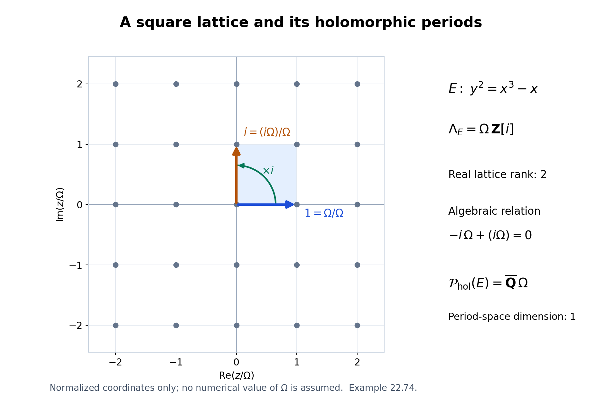
Figure 22.5. The normalized coordinate is \(z/\Omega\); the plotted lattice points are exactly Gaussian integers in the displayed window. Multiplication by \(i\) rotates the real basis vector \(1\) to \(i\). Equation (22.185) explains why real lattice rank two gives algebraic period-space dimension one. No numerical value of \(\Omega\) is assumed.
Corollary 22.75. Elliptic logarithms and changes of branch
Let \(E/k\) be an elliptic curve, and choose a nonzero invariant differential to identify its Lie algebra with \(\mathbf C\). Then \(D_E\) acts by a subfield of \(\mathbf C\) that is either \(\mathbf Q\) or an imaginary quadratic field. Given logarithms \(u_1,\ldots,u_n\) of algebraic points, choose a \(D_E\)-basis \(v_1,\ldots,v_r\) of their span. Every algebraic linear relation among the \(u_j\) is obtained by substituting their \(D_E\)-linear expressions in the \(v_a\) and setting the resulting algebraic coefficients to zero. Moreover \(1,v_1,\ldots,v_r\) are linearly independent over \(k\).
The intrinsic version that includes all choices of branch is
\[ U=D_Eu_1+\cdots+D_Eu_n+(\Lambda_E\otimes_{\mathbf Z}\mathbf Q), \qquad \dim_k\operatorname{span}_k U=\dim_{D_E}U. \tag{22.186} \]Replacing any \(u_j\) by another logarithm of the same point leaves \(U\) unchanged.
Proof. The derivative is a faithful homomorphism \(D_E\to\mathbf C\), so \(D_E\) is commutative. Lemma 22.67 gives rational dimension \(1\) or \(2\). If it is \(2\), it is a quadratic field. It cannot be real: a real scalar \(c\) acting on the real plane has matrix \(cI_2\) in every real basis. If it preserves the rational period lattice, that matrix has rational entries in an integral lattice basis, so \(c\in\mathbf Q\). A real quadratic subfield would contradict this observation. Thus the quadratic case is imaginary.
Theorems 22.69 and 22.72 give the asserted independence of a basis and of \(1\) together with that basis. On writing \(u_j=\sum_a d_{aj}v_a\), a relation \(\sum_j b_j u_j=0\), with \(b_j\in k\), becomes \(\sum_a(\sum_j b_jd_{aj})v_a=0\). Its coefficients vanish exactly when the original relation holds. This is a description of all such relations, not just a sufficient family.
For (22.186), add a finite rational basis of the period lattice to the initial list and apply Corollary 22.70 with \(g=1\). Two logarithms of the same point differ by a lattice vector, by the exponential covering. This changes neither of the two containments defining \(U\). \(\square\)
Exercise 22.76. Relations in a CM example
Let \(E,\Omega\) be as in Example 22.74. Choose \(u\) with \(\exp_E(u)\in E(k)\) and \(u\notin\mathbf Q(i)\Omega\). Determine all triples \((a,b,c)\in k^3\) such that
\[ a u+b(iu+\Omega)+c\Omega=0. \tag{22.187} \]Then determine the dimension of the span of \(1,2\pi i,u,iu+\Omega,\Omega\). Explain which hypothesis on the point \(\exp_E(u)\) guarantees the stipulated condition on \(u\).
Solution. The vectors \(u,\Omega\) are independent over \(\mathbf Q(i)\): a nonzero coefficient of \(u\) in a relation would express it as a multiple of \(\Omega\), and a relation with zero coefficient of \(u\) has zero remaining coefficient because \(\Omega\ne0\). Theorem 22.69 therefore makes them independent over \(k\). Equation (22.187) is
\[ (a+ib)u+(b+c)\Omega=0. \tag{22.188} \]Consequently the entire relation space consists of \((a,b,c)=b(-i,1,-1)\), \(b\in k\). Theorem 22.72 makes \(1,2\pi i,u,\Omega\) independent, and the fifth listed number \(iu+\Omega\) is in their span. The dimension is four.
The point \(P=\exp_E(u)\) is nontorsion if and only if \(u\notin\Lambda_E\otimes\mathbf Q=\mathbf Q(i)\Omega\). Indeed, if \([N]P=0\), then \(Nu\in\Lambda_E\); conversely a rational period has a nonzero integer multiple in the lattice and therefore exponentiates to a torsion point. This proves the precise endpoint condition, and it is unchanged by a change of logarithm branch. \(\square\)
Vector extensions of an abelian variety
Let \(k=\overline{\mathbf Q}\), let \(A/k\) be an abelian variety, and put \(W_A=H^1(A,\mathcal O_A)\). A vector group means a finite-dimensional \(k\)-vector space with its additive algebraic group structure. An extension by a vector group \(V\) is an exact sequence of commutative algebraic groups
\[ 0\longrightarrow V\longrightarrow E\longrightarrow A\longrightarrow0. \tag{22.189} \]Two extensions are equivalent if their isomorphism induces the identity on both \(V\) and \(A\). The notation \(\operatorname{Ext}^1(A,V)\) denotes these equivalence classes, with the addition described below.
Proposition 22.77. The torsor class determines the group extension
For every vector group \(V\), passage to the underlying \(V\)-torsor gives a natural isomorphism
\[ \operatorname{Ext}^1(A,V)\simeq W_A\otimes_k V \simeq\operatorname{Hom}_k(W_A^\vee,V). \tag{22.190} \]Pullback along \(f:B\to A\) acts by \(f^*\otimes1\), and pushout along a linear map \(V\to V'\) acts on the second tensor factor.
Proof. A vector-group torsor is trivial on an affine scheme. The affine descent argument in the proof of Proposition 22.39 proves this directly: the additive transition cocycle in a faithfully flat trivialization is a boundary in the augmented Amitsur complex. Thus a finite affine open cover of \(A\) trivializes any such torsor. Its changes of coordinates are translations
\[ t_j=t_i+c_{ij},\qquad c_{ij}+c_{j\ell}=c_{i\ell}, \quad c_{ij}\in\mathcal O_A(U_i\cap U_j)\otimes_kV. \tag{22.191} \]Changing the local origins changes \(c\) by a Čech boundary. Conversely these translations glue the products \(U_i\times V\) to a torsor; coboundaries give its isomorphisms. Affine intersections are acyclic for quasi-coherent sheaves, so the Čech complex computes \(H^1\). This precise comparison, and the product-cover Künneth calculation, are proved in Abelian varieties, Lemma 6.11. Hence torsor classes are \(W_A\otimes V\).
Every such class \(c\) is primitive under addition \(m:A\times A\to A\):
\[ m^*c=p_1^*c+p_2^*c. \tag{22.192} \]Indeed, the same Künneth calculation identifies \(H^1(A\times A,\mathcal O)\) with the direct sum of the two copies of \(W_A\). Restriction to either axis is the corresponding projection. The restrictions of \(m\) to both axes are the identity, proving (22.192).
Let \(P\to A\) represent \(c\), and choose an origin \(e\in P_0(k)\). The sum of the two pulled-back torsors on \(A^2\) has class \(p_1^*c+p_2^*c\). In local coordinates its transition functions are the sums of the two transition functions. Equivalently it is the quotient of \(P\times P\) by \((p,q)\mapsto(p+v,q-v)\). Equation (22.192) gives an isomorphism from this torsor to \(m^*P\), hence an algebraic operation \(\mu:P\times P\to P\) satisfying
\[ \mu(p+v,q+w)=\mu(p,q)+v+w. \tag{22.193} \]The maps \(p\mapsto\mu(p,e)-p\) and \(p\mapsto\mu(e,p)-p\) descend to regular maps \(A\to V\). They are constant, since \(A\) is connected and proper, and their values agree at \(p=e\). Subtract that common value from \(\mu\). Both unit identities now hold.
The difference between \(\mu(\mu(p,q),r)\) and \(\mu(p,\mu(q,r))\) is a vector in their common fibre. Equation (22.193) makes it independent of translations in all three variables, so it descends to a regular map \(A^3\to V\). It is constant by properness and zero at \((e,e,e)\). Thus \(\mu\) is associative. The commutator difference similarly descends to a constant map \(A^2\to V\) and vanishes at \((e,e)\), proving commutativity.
For \(p\) over \(a\), there is a unique \(q\) over \(-a\) such that \(\mu(p,q)=e\): translation in \(q\) changes the result by exactly the same vector. This inverse depends algebraically on \(p\), as follows immediately in local trivializations over an open cover and its images under \([-1]\); uniqueness glues those local inverse maps. Thus \(P\), with identity \(e\), is a commutative algebraic group extension. Its kernel is \(V\) by (22.193). It is smooth and connected because its base and its vector-group fibres are smooth and connected.
Two normalized operations on the same torsor differ by a regular map \(A^2\to V\), constant and zero at the origin, hence are equal. A torsor isomorphism can be translated by a constant vector to send the chosen origins to one another. After that translation it respects the uniquely normalized group operations. This proves that the torsor class classifies extensions.
For completeness, addition of extension classes is the following operation: take \(E_1\times_AE_2\) and quotient its kernel \(V\times V\) by the kernel of addition \(V\times V\to V\). Its local transition functions are \(c^{(1)}_{ij}+c^{(2)}_{ij}\). Scalar multiplication and a general pushout apply the scalar or linear map to these functions. Pullback composes the cocycles with the base morphism. These descriptions prove the linearity and naturality asserted in (22.190). \(\square\)
Theorem 22.78. The universal vector extension
Put \(V_A=W_A^\vee\). There is a commutative algebraic group \(A^\natural\), unique up to a unique isomorphism over \(A\), with an extension
\[ 0\longrightarrow V_A\longrightarrow A^\natural \xrightarrow{\pi_A}A\longrightarrow0 \tag{22.194} \]whose class in \(\operatorname{Hom}_k(V_A,V_A)\) is the identity. For any vector extension \(E\to A\), there is exactly one algebraic group homomorphism \(A^\natural\to E\) over \(A\). If \(\dim A=g\), then
\[ \dim V_A=g,\qquad \dim A^\natural=2g. \tag{22.195} \]Proof. Proposition 22.77 constructs the extension associated with \(\operatorname{id}_{V_A}\). Let \(E\) be an extension by \(V\), and let \(\beta:V_A\to V\) be its classifying map. Pushing out (22.194) by \(\beta\) gives the class \(\beta\), hence an extension equivalent to \(E\). The pushout map supplies the asserted homomorphism.
Any homomorphism over \(A\) restricts on the kernels to a homomorphism \(V_A\to V\). Such a homomorphism is linear: its coordinate polynomials satisfy \(P(x+y)=P(x)+P(y)\); differentiating in \(y\) at zero shows that all first partial derivatives are constant in characteristic zero. Proposition 22.77 therefore makes that restriction equal to \(\beta\). The difference between two maps with this restriction descends to a homomorphism \(A\to V\), which is zero by properness. This proves uniqueness, including the uniqueness of the universal extension itself. Finally Abelian varieties, Theorem 6.15 proves \(\dim W_A=g\). Smoothness of the torsor gives the dimension formula. \(\square\)
Proposition 22.79. No affine quotient and no smaller subgroup above the base
Every algebraic group homomorphism from \(A^\natural\) to a connected commutative affine group is zero. If a connected algebraic subgroup \(H\subset A^\natural\) maps onto \(A\), then \(H=A^\natural\).
Proof. First consider \(h:A^\natural\to\mathbf G_a\), and let \(\ell:V_A\to k\) be its restriction. In the pushout of (22.194) by \(\ell\), the function induced by \(h(x)+t\) on \(A^\natural\times k\) is well-defined: replacing \((x,t)\) by \((x+v,t-\ell(v))\) does not change it. It is a homomorphism to \(\mathbf G_a\) whose restriction to the kernel is the identity. Its kernel gives a splitting of that extension; equivalently subtracting this function from the kernel coordinate identifies the extension with \(A\times\mathbf G_a\). By Proposition 22.77 its class is zero. But the pushout class is exactly \(\ell\in V_A^\vee=W_A\), so \(\ell=0\). Now \(h\) descends to \(A\), and is zero by properness.
A homomorphism \(A^\natural\to\mathbf G_m\) is trivial on \(V_A\), since an invertible polynomial on affine space is constant and a group homomorphism takes zero to one. It too descends to \(A\), hence is trivial. The affine classification in Theorem 22.38 proves the assertion for any connected commutative affine target.
Suppose \(H\to A\) is surjective. The quotient \(Q=A^\natural/H\) exists by the commutative group quotient theorem. The map \(V_A\to Q\) is surjective: subtract a point of \(H\) with the same image in \(A\) from any point of \(A^\natural\). The same assertion holds as a surjection of group schemes, by the image theorem over the algebraically closed field. Every closed subgroup of a vector group in characteristic zero is a vector subspace. For its identity component this is Proposition 22.37; if a subgroup had a further component, a positive multiple of any point in that component would lie in the identity component, forcing the point itself into the same vector subspace. Hence \(Q\), as a quotient of \(V_A\), is a vector group. If it were nonzero, a nonzero linear functional on it would contradict the first assertion. Thus \(Q=0\) and \(H=A^\natural\). \(\square\)
Proposition 22.80. Functoriality, products and isogenies
Every homomorphism \(f:A\to B\) lifts uniquely to a homomorphism \(f^\natural:A^\natural\to B^\natural\) over \(f\). Its map on vector kernels is the dual of \(f^*:W_B\to W_A\). The lifts preserve addition, composition and identities. Moreover,
\[ (A\times B)^\natural\simeq A^\natural\times B^\natural, \qquad [N]^\natural=[N]. \tag{22.196} \]An isogeny induces an isogeny of universal extensions.
Proof. Pull back \(B^\natural\to B\) along \(f\) and apply the universal property of \(A^\natural\). The tensor description in (22.190) identifies the kernel map with the stated dual. Uniqueness proves compatibility with composition and identities.
The sum of two lifts is a homomorphism over the sum of the base maps, and therefore is its unique lift. Here the sum is defined by the group law on the target. This proves additivity and the assertion for integer multiplication. For the product, Künneth identifies \(W_{A\times B}=W_A\oplus W_B\). The class of \(A^\natural\times B^\natural\) is the identity on the dual direct sum, so Theorem 22.78 gives the first isomorphism in (22.196).
If \(f:A\to B\) is an isogeny, choose \(h:B\to A\) with \(hf=[N]\) and \(fh=[N]\), as in Lemma 22.67. The lifted maps satisfy the same identities. On every connected commutative group in characteristic zero, multiplication by \(N\ne0\) is surjective with finite kernel: surjectivity follows from the exponential of Proposition 22.35, and its differential \(N\operatorname{id}\) makes the kernel zero-dimensional. The image theorem turns surjectivity on complex points into algebraic surjectivity. Thus \(f^\natural\) is surjective, and its kernel is contained in the finite kernel of \([N]\). A surjective homomorphism with finite kernel is a finite torsor under that kernel, hence an isogeny. \(\square\)
Proposition 22.81. Periods lift uniquely to the universal extension
The differential of \(\pi_A\) induces an isomorphism of abelian groups
\[ \Lambda_{A^\natural}\xrightarrow{\ \sim\ }\Lambda_A. \tag{22.197} \]It is compatible with every homomorphism of abelian varieties and, after tensoring with \(\mathbf Q\), with their rational endomorphisms.
Proof. A period in the kernel of this map lies in \(\operatorname{Lie}V_A\). The exponential of a vector group is the identity, so that period is zero. Conversely, let \(\lambda\in\Lambda_A\). Lift it to \(w\in\operatorname{Lie}A^\natural(\mathbf C)\). By functoriality of the exponential, \(\exp_{A^\natural}(w)\) lies in \(V_A(\mathbf C)\). Regard this point as the vector \(v\in\operatorname{Lie}V_A(\mathbf C)\). Then \(w-v\) is a period above \(\lambda\), proving surjectivity. Uniqueness makes the lift additive.
Functoriality follows from Proposition 22.80 and the exponential identity. Integer denominators give the rational statement. In particular, for simple \(A\) with \(e=\dim_{\mathbf Q}D_A\),
\[ \operatorname{rank}_{\mathbf Z}\Lambda_{A^\natural}=2g,\qquad \dim_{D_A}(\Lambda_{A^\natural}\otimes\mathbf Q)=\frac{2g}{e}. \tag{22.198} \]Although \(A^\natural\) has complex dimension \(2g\), its period lattice has rank \(2g\), not \(4g\). Its analytic quotient is not compact. \(\square\)
Linear relations among periods of the universal extension
Define \(\mathcal P_\natural(A)\subset\mathbf C\) to be the \(k\)-span of the scalar coordinates of the vectors in \(\Lambda_{A^\natural}\), in any \(k\)-basis of \(\operatorname{Lie}A^\natural\). Algebraic changes of basis preserve this space.
Theorem 22.82. The period-coordinate dimension
If \(A\sim_k\prod_i A_i^{m_i}\), where the \(A_i\) are pairwise nonisogenous simple abelian varieties of dimensions \(g_i\) and endomorphism-algebra dimensions \(e_i\), then
\[ \dim_k\mathcal P_\natural(A)= \sum_i\frac{4g_i^2}{e_i}. \tag{22.199} \]Multiplicity \(m_i\ge1\) does not change the summand.
Proof. Choose a \(D_{A_i}\)-basis \(u_{i1},\ldots,u_{ir_i}\) of \(\Lambda_{A_i^\natural}\otimes\mathbf Q\), where \(r_i=2g_i/e_i\). Its projection is a \(D_{A_i}\)-basis of the rational period lattice of \(A_i\), by Proposition 22.81. Rational periods exponentiate to torsion algebraic points: an integer multiple is a period, and the finite multiplication fibre is defined over \(k\). Thus the analytic subgroup theorem applies to their tuple
\[ u=(u_{ij})\in \operatorname{Lie}G(\mathbf C),\qquad G=\prod_i(A_i^\natural)^{r_i}. \tag{22.200} \]Let \(H\subset G\) be its minimal algebraic Lie hull. Project to \(P=\prod_i A_i^{r_i}\). If the image of \(H\) were proper, Lemma 22.68 would give a nonzero endomorphism relation among the projected basis vectors, a contradiction. Its image is therefore all of \(P\).
By Proposition 22.80, \(G=P^\natural\). Proposition 22.79 now forces \(H=G\). Theorem 22.64 consequently says that all \(\dim G=\sum_i2g_i r_i\) scalar coordinates of the tuple \(u\) are linearly independent over \(k\). They span all the period coordinates: every rational period is a \(D_{A_i}\)-linear combination of the chosen basis vectors, and the differential matrices of the lifted rational endomorphisms have entries in \(k\). This proves (22.199) for the product of distinct simple factors.
Products concatenate their period-coordinate lists, so repeated factors contribute the same scalar span. Finally Proposition 22.80 lifts an isogeny to an isogeny of universal extensions. Its invertible algebraic differential carries one rational period lattice onto the other: reverse isogenies give finite-index inclusions exactly as in Theorem 22.73. Hence isogenous abelian varieties have equal spaces \(\mathcal P_\natural\) as subspaces of \(\mathbf C\). This proves the general assertion. \(\square\)
Theorem 22.83. The additive and multiplicative contributions
Let \(\ell_1,\ldots,\ell_t\) be rationally independent logarithms of nonzero algebraic numbers. Then
\[ k+\sum_{j=1}^t k\ell_j+\mathcal P_\natural(A) =k\oplus\bigoplus_{j=1}^t k\ell_j\oplus\mathcal P_\natural(A). \tag{22.201} \]In particular,
\[ \dim_k\bigl(k+k(2\pi i)+\mathcal P_\natural(A)\bigr) =2+\sum_i\frac{4g_i^2}{e_i}. \tag{22.202} \]Proof. Use the tuple of period basis vectors in (22.200), and form \(z=(1,\ell_1,\ldots,\ell_t,u)\) in the Lie algebra of \(L\times G\), where \(L=\mathbf G_a\times\mathbf G_m^t\). Let \(H\) be its algebraic Lie hull. The argument of Theorem 22.82 forces the projection \(H\to G\) to be surjective. Put \(K=(\ker(H\to G))^0\). Proposition 22.37 makes \(L/K\) a connected commutative affine group. The induced map \(f:H/K\to G\) is an isogeny.
The reverse-isogeny descent in Lemma 22.67 applies to this isogeny of commutative algebraic groups: kill its finite kernel by an integer \(N\), and descend multiplication by \(N\) along \(f\). We obtain \(h:G\to H/K\) with \(hf=[N]\). The first projection induces \(q:H/K\to L/K\). Since \(G=P^\natural\), Proposition 22.79 gives \(qh=0\). Thus \(q[N]=qhf=0\). Surjectivity of \([N]\) gives \(q=0\).
It follows that \(H\subset K\times G\); both sides have the same dimension and are connected, so equality holds. The additive coordinate \(1\) forces the additive factor of \(K\) to be all of \(\mathbf G_a\). Rational independence of the \(\ell_j\) rules out every proper torus factor, by the integral-character argument of Theorem 22.72. Therefore \(H=L\times G\). The analytic subgroup theorem gives linear independence of all coordinates of \(z\), proving (22.201). Set \(t=1\), \(\ell_1=2\pi i\), to obtain (22.202). \(\square\)
For an elliptic curve, \(g=1\) and \(e\) is \(1\) or \(2\), by Corollary 22.75. The dimensions just proved are therefore:
| Endomorphism algebra | \(\dim_k\mathcal P_{\mathrm{hol}}(E)\) | \(\dim_k\mathcal P_\natural(E)\) | Dimension after adjoining \(1,2\pi i\) |
|---|---|---|---|
| \(\mathbf Q\) | \(2\) | \(4\) | \(6\) |
| An imaginary quadratic field | \(1\) | \(2\) | \(4\) |
The first column of dimensions uses holomorphic integrals as defined in (22.179). The second uses the period vectors of the group (22.194). Each definition specifies both the algebraic coordinate structure and the paths or exponential kernel involved.
Algebraic differential forms and period vectors
For a smooth separated variety \(X/k\), write \(H^q_{\mathrm{dR}}(X/k)=\mathbb H^q(X,\Omega^\bullet_{X/k})\). One computes this group with the total Čech–de Rham complex of a finite affine cover. Intersections in this cover are affine, and differential-form sheaves are quasi-coherent; the affine acyclicity and Čech comparison used in Proposition 22.77 apply degree by degree.
In degree one a cocycle consists of regular one-forms \(\alpha_i\) on \(U_i\) and regular functions \(f_{ij}\) on intersections, with
\[ d\alpha_i=0,\qquad \alpha_j-\alpha_i=df_{ij},\qquad f_{ij}+f_{j\ell}=f_{i\ell}. \tag{22.203} \]A boundary has the form \((dg_i,g_j-g_i)\). Refining the cover gives the same cohomology.
Lemma 22.84. Vector torsors preserve algebraic de Rham cohomology
If \(p:Y\to X\) is a torsor under a vector bundle on a smooth separated variety over a field of characteristic zero, then pullback induces isomorphisms
\[ p^*:H^q_{\mathrm{dR}}(X/k)\xrightarrow{\;\sim\;} H^q_{\mathrm{dR}}(Y/k)\qquad(q\ge0). \tag{22.204} \]Proof. Choose a finite affine cover trivializing both the vector bundle and the torsor. The latter is possible by the additive affine-descent argument of Proposition 22.39. The preimage of every intersection is a product with affine space, and is therefore affine.
On such an intersection write the coordinate ring of the base as \(R\) and the fibre coordinates as \(t_1,\ldots,t_r\). The complex of absolute differentials of \(R[t_1,\ldots,t_r]/k\) is the tensor product of the differential complexes of \(R/k\) and \(k[t_1,\ldots,t_r]/k\), with the total-degree signs. Give each \(t_j\) and \(dt_j\) weight one and each base form weight zero. Let
\[ D=\sum_{j=1}^r t_j\frac{\partial}{\partial t_j}. \]Contraction \(\iota_D\) is a derivation of form degree \(-1\), vanishes on base forms and satisfies \(\iota_D(dt_j)=t_j\). On a homogeneous form \(\beta\) of fibre weight \(m\), direct application of the product rule gives
\[ (d\iota_D+\iota_Dd)\beta=m\beta. \tag{22.205} \]Indeed the identity holds on functions from \(R\), their differentials, and on \(t_j,dt_j\); both sides are degree-zero derivations, so it holds on every product. For \(m>0\), division by \(m\) contracts that weight subcomplex. Weight zero is exactly the complex of base forms. Thus pullback is a quasi-isomorphism on each affine intersection.
These pullbacks commute with restrictions, although the chosen contractions need not. Apply them to the two Čech–de Rham double complexes. Filtering the mapping cone by Čech degree gives acyclic columns by the preceding calculation. This implies that its total complex is acyclic: for a total cocycle, remove its component of smallest Čech degree by a primitive in that column; subtract the resulting total boundary and continue to the next column. The finite cover bounds the number of columns. Consequently the map on total cohomology is an isomorphism, proving (22.204). \(\square\)
Theorem 22.85. Invariant forms on the universal extension
There is a natural \(k\)-linear isomorphism
\[ \Theta_A:\operatorname{Lie}(A^\natural)^\vee \xrightarrow{\;\sim\;}H^1_{\mathrm{dR}}(A/k). \tag{22.206} \]It sends an invariant one-form \(\theta\) on \(A^\natural\) to the unique class whose pullback is \([\theta]\). Under this isomorphism, the subspace of forms pulled back from \(A\) is \(H^0(A,\Omega^1_{A/k})\).
Proof. A covector at the identity of a smooth group extends uniquely to an invariant regular one-form: at a point \(x\), transport it by the differential of translation by \(-x\). The group law makes this construction algebraic. On a commutative group every invariant one-form is closed. To see this, evaluate \(d\theta\) on invariant vector fields \(X,Y\):
\[ d\theta(X,Y)=X(\theta(Y))-Y(\theta(X))-\theta([X,Y])=0. \]The first two functions are constant and the bracket is zero. Invariant vector fields span every tangent space, proving the assertion.
Lemma 22.84 applies to \(\pi_A:A^\natural\to A\), so \(\Theta_A=(\pi_A^*)^{-1}[\theta]\) is defined. We first prove injectivity. If the class of a global closed one-form is zero in the Čech–de Rham complex, then it is \(dF\) for a global regular function \(F\): a total degree-zero primitive is a list of local functions, and its vanishing Čech component says precisely that they glue.
Suppose therefore that \(\theta=dF\) is invariant on \(A^\natural\). For every \(x\in A^\natural(k)\),
\[ d\bigl(F(x+z)-F(z)\bigr)=0. \tag{22.207} \]A regular function with zero differential on a connected smooth variety over \(k\) is constant. Indeed, on an irreducible component, a nonconstant rational function \(F\) is transcendental over the algebraically closed field \(k\). Extend \(F\) to a transcendence basis of its function field. The derivation that sends \(F\) to \(1\) and the other basis elements to zero extends through the remaining finite separable extension: for an algebraic generator with minimal polynomial \(P\), the forced value is \(-D(P)(a)/P'(a)\), where \(D(P)\) differentiates coefficients. Since \(P'(a)\ne0\), this defines the extension and rules out \(dF=0\). Connected smooth algebraic groups are irreducible, as in Proposition 22.35. Evaluating (22.207) at \(z=0\) therefore gives
\[ F(x+z)-F(0)=(F(x)-F(0))+(F(z)-F(0)). \]Equality on algebraic points is equality of morphisms over the algebraically closed field. Thus \(F-F(0)\) is a homomorphism \(A^\natural\to\mathbf G_a\). Proposition 22.79 makes it zero, so \(\theta=0\).
Both sides of (22.206) have dimension \(2g\). For the left side this is Theorem 22.78. For the right side, Abelian varieties, Propositions 6.40–6.41 prove
\[ 0\longrightarrow H^0(A,\Omega^1_{A/k}) \longrightarrow H^1_{\mathrm{dR}}(A/k) \longrightarrow H^1(A,\mathcal O_A)\longrightarrow0, \tag{22.208} \]whose outer terms have dimension \(g\). In characteristic zero the degeneration step also follows directly from the integer weights in Proposition 6.40: on the Hodge spectral sequence \([2]^*\) has weight \(2^{p+q}\) at \((p,q)\), whereas a differential raises total degree by one. Commutation with \([2]^*\) forces every differential to vanish, inductively from the first page. Injectivity and equality of dimensions prove (22.206).
Every global regular one-form on \(A\) is invariant: translation trivializes its cotangent bundle, and its coefficient functions are constant by properness. Pullback to \(A^\natural\) is invariant and represents its ordinary de Rham class. This proves the subspace assertion. Pullback of forms, the torsor isomorphism (22.204), and the unique lifted homomorphisms of Proposition 22.80 commute, proving naturality. \(\square\)
Proposition 22.86. The integral is the lifted period coordinate
For \(\lambda\in\Lambda_A\), let \(\lambda^\natural\) be its unique lift in \(\Lambda_{A^\natural}\), and let \(\gamma_\lambda(t)=\exp_A(t\lambda)\), \(0\le t\le1\). Then
\[ \int_{\gamma_\lambda}\Theta_A(\theta) =\theta(\lambda^\natural). \tag{22.209} \]The left side is the integral of a de Rham class, defined from (22.203).
Proof. Subdivide a closed piecewise smooth path into arcs \(\gamma_j\) contained in \(U_{i_j}(\mathbf C)\). Put \(i_{s+1}=i_1\), and denote the endpoint of \(\gamma_j\) by \(x_j\). For a cocycle (22.203), its integral is
\[ \sum_{j=1}^s\int_{\gamma_j}\alpha_{i_j} +\sum_{j=1}^s f_{i_j i_{j+1}}(x_j). \tag{22.210} \]The plus sign in the second sum is essential. For a boundary \((dg_i,g_j-g_i)\), the arc integrals telescope to the negative of that second sum, giving zero.
Refining an arc does not change the answer. Replacing its index \(i\) by \(j\) changes the arc integral by \(f_{ij}(\mathrm{end})-f_{ij}(\mathrm{start})\); the changes at its two transitions cancel these terms, using the cocycle identity. A common refinement therefore proves independence of all cover choices. The same calculation proves compatibility with pullback.
The integral depends only on the homotopy class of the loop. Subdivide a homotopy square into small rectangles mapped into members of the cover. A closed one-form has zero integral around each such rectangle: in coordinates this is the fundamental theorem of calculus applied to the equality of the mixed coefficients of \(d\alpha=0\). Sum over the rectangles. Interior edge integrals cancel, and changing indices along edges introduces endpoint terms that cancel by the Čech identity. This leaves equality of the two boundary-loop integrals.
The loop \(\gamma^\natural(t)=\exp_{A^\natural}(t\lambda^\natural)\) projects to \(\gamma_\lambda\). By (22.206), the pullback of \(\Theta_A(\theta)\) is represented by the global form \(\theta\). The pullback of \(\theta\) to \(\operatorname{Lie}A^\natural(\mathbf C)\) under the exponential is the constant one-form with value \(\theta\), since it is translation invariant and the exponential has differential the identity at zero. Its integral along the segment \(t\lambda^\natural\) is \(\theta(\lambda^\natural)\). Pullback compatibility of (22.210) proves (22.209).
Every based loop in \(A(\mathbf C)\) is homotopic to one of the loops \(\gamma_\lambda\). Lift it through the exponential covering of Proposition 22.35; its endpoints differ by \(\lambda\), and a linear homotopy in the covering vector space joins that lift to \(t\lambda\), fixing endpoints. An unbased loop is conjugate to a based loop by a path, whose forward and reverse integrals cancel. Finally any finite one-cycle can be decomposed into loops by joining its finitely many vertices to a base point; the auxiliary paths cancel in the resulting sum. Thus (22.209) accounts for all closed one-cycle integrals. \(\square\)
Theorem 22.87. The full pure abelian period dimension
Let \(\mathcal P_{\mathrm{dR}}(A)\) be the \(k\)-span of all integrals of classes in \(H^1_{\mathrm{dR}}(A/k)\) over closed integral one-cycles in \(A(\mathbf C)\). If \(A\sim_k\prod_iA_i^{m_i}\), with simple pairwise nonisogenous \(A_i\), then
\[ \mathcal P_{\mathrm{dR}}(A)=\mathcal P_\natural(A),\qquad \dim_k\mathcal P_{\mathrm{dR}}(A) =\sum_i\frac{4g_i^2}{e_i}, \tag{22.211} \]and
\[ \dim_k\bigl(k+k(2\pi i)+\mathcal P_{\mathrm{dR}}(A)\bigr) =2+\sum_i\frac{4g_i^2}{e_i}. \tag{22.212} \]More generally the direct-sum assertion (22.201) holds with \(\mathcal P_{\mathrm{dR}}(A)\) in place of \(\mathcal P_\natural(A)\).
Proof. By Theorem 22.85 every de Rham class is \(\Theta_A(\theta)\). Proposition 22.86 identifies its integrals with the values of \(\theta\) on lifted lattice vectors. Conversely every scalar coordinate of such a vector is its value under a coordinate covector defined over \(k\), hence is an integral. This proves equality of the two scalar spaces. Theorems 22.82–22.83 give their dimensions and the direct-sum assertion. \(\square\)
The factor \(4g_i^2/e_i\) includes both the holomorphic part and the other degree-one de Rham classes. Restricting to holomorphic forms gives the smaller formula \(2g_i^2/e_i\) of Theorem 22.73. Repeated isogeny factors still do not add new scalar periods.
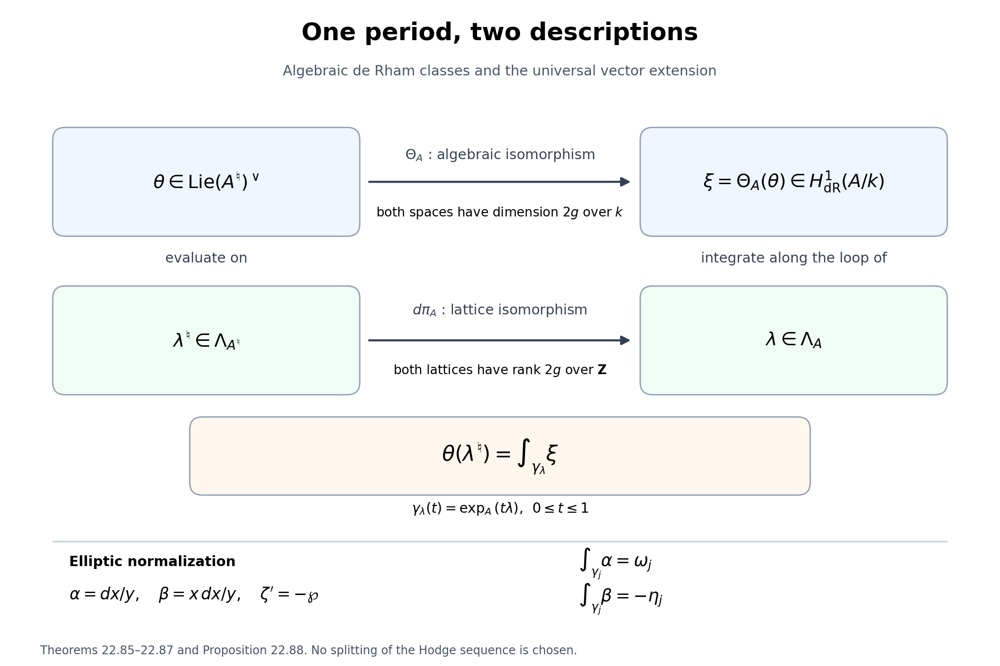
Figure 22.6. Theorem 22.85 identifies algebraic de Rham classes with invariant covectors on the universal extension. Proposition 22.86 identifies their integrals with evaluation on the uniquely lifted period lattice. The vector-group fibre has dimension \(g\), while both period lattices have rank \(2g\). For an elliptic curve in the normalization of Proposition 22.88, the two rows of the integral matrix are the periods and the negative quasi-periods. The diagram records maps and dimensions, without choosing a splitting of (22.208).
Proposition 22.88. First- and second-kind elliptic differentials
Let
\[ E:\quad y^2=4x^3-g_2x-g_3,\qquad g_2,g_3\in k,\quad g_2^3-27g_3^2\ne0, \qquad \alpha=\frac{dx}{y},\quad \beta=x\frac{dx}{y}. \tag{22.213} \]The classes of \(\alpha,\beta\) form a \(k\)-basis of \(H^1_{\mathrm{dR}}(E/k)\). Here \(\beta\), which has a pole at the identity \(O\), represents a class by cancelling its local principal part. For a period basis \(\omega_1,\omega_2\) and the quasi-periods \(\eta_j=\zeta(z+\omega_j)-\zeta(z)\) in the Weierstrass normalization \(\zeta'=-\wp\), the corresponding integral matrix is
\[ \begin{pmatrix} \int_{\gamma_1}\alpha&\int_{\gamma_2}\alpha\\ \int_{\gamma_1}\beta&\int_{\gamma_2}\beta \end{pmatrix} = \begin{pmatrix}\omega_1&\omega_2\\-\eta_1&-\eta_2\end{pmatrix}. \tag{22.214} \]Consequently
\[ \dim_k\langle\omega_1,\omega_2,\eta_1,\eta_2\rangle_k =\frac4{\dim_{\mathbf Q}\operatorname{End}^0(E)}. \tag{22.215} \]Proof. The affine form \(dx/y\) is regular even where \(y=0\): differentiating the cubic gives \(dx/y=2\,dy/(12x^2-g_2)\), whose denominator is nonzero at those points by nonsingularity.
At \(O=[0:1:0]\) use \(q=X/Y,r=Z/Y\). The equation is \(r=4q^3-g_2qr^2-g_3r^3\), so \(q\) is a local parameter and \(r=4q^3+\cdots\). Put \(t=-2q=-2x/y\). Substituting \(y=-2x/t\) into the affine equation yields
\[ t^{-2}=x-\frac{g_2}{4x}-\frac{g_3}{4x^2}. \]It follows that
\[ x=t^{-2}+O(t^2),\quad y=-2t^{-3}+O(t),\quad \alpha=(1+O(t^4))\,dt,\quad \beta=(t^{-2}+O(t^2))\,dt. \tag{22.216} \]Thus \(\alpha\) is regular everywhere and \(\beta\) has just a double pole at \(O\), of residue zero.
Set \(h=-1/t=y/(2x)\). On a sufficiently small affine Zariski neighbourhood \(V\) of \(O\), excluding the other poles of \(h\), the form \(\beta-dh\) is regular. On \(U=E\setminus\{O\}\), the form \(\beta\) is regular. The data
\[ \alpha_U=\beta,\qquad \alpha_V=\beta-dh,\qquad f_{UV}=-h \tag{22.217} \]satisfy (22.203), so define its de Rham class. This is the local construction for any differential of the second kind on a smooth curve: integrate each finite negative Laurent principal part, which is possible exactly when the residue term vanishes; subtract its differential and use those rational principal parts as the Čech functions.
The two classes are independent. If \(a[\alpha]+b[\beta]=0\), its restriction to the affine \(U\) says that \(a\alpha+b\beta=df\) for a regular function \(f\) on \(U\). A pole of a rational function of order \(n>0\) gives a pole of order \(n+1\) in its differential, in characteristic zero. Thus if \(b\ne0\), \(f\) has a simple pole at \(O\) and no other pole. But every regular function on \(U\) has a unique expression \(P(x)+yQ(x)\), with \(P,Q\in k[x]\). The possible nonconstant pole orders of \(P(x)\) are even and at least two; those of \(yQ(x)\) are odd and at least three. Their leading poles cannot cancel. A simple pole is impossible. If \(b=0\), \(df=a\alpha\) has no poles, so \(f\) has none, and properness gives \(f\in k\). Hence \(a=0\). Dimension two from (22.208) proves the basis assertion.
The Weierstrass uniformization and the identities \((x,y)=(\wp(z),\wp'(z))\), \(\zeta'=-\wp\), with constant additive quasi-periods, are proved in Weierstrass functions, elliptic values and periods, Sections 1–3 and 5. Their pullbacks give \(\alpha=dz\) and \(\beta=\wp(z)\,dz=-d\zeta(z)\). Choose representatives of the two cycles avoiding \(O\); their integrals are \(\omega_j\) and \(-\eta_j\). Formula (22.210), with (22.217), makes these the integrals of the de Rham classes, independently of representatives. This proves (22.214). Theorem 22.87 gives (22.215). \(\square\)
Exercise 22.89. A CM curve and its second-kind direction
For \(E:y^2=4x^3-4x\), let \(\iota(x,y)=(-x,iy)\). Choose a lattice generator \(\Omega\) with \(\Lambda_E=\Omega\mathbf Z[i]\), and put \(Q=\int_{\gamma_\Omega}\beta\). Determine all linear relations over \(k\) among the four entries of (22.214), and the dimension after adjoining \(1,2\pi i\).
Solution. The square-lattice assertion follows from the Gaussian-lattice argument of Example 22.74, which is unchanged by this algebraic scaling of the cubic. Direct calculation gives
\[ \iota^*\alpha=i\alpha,\qquad \iota^*\beta=-i\beta. \tag{22.218} \]The image of \(\gamma_\Omega\) under \(\iota\) represents \(\gamma_{i\Omega}\). Hence the four matrix entries, in row order, are
\[ (\Omega,i\Omega,Q,-iQ). \tag{22.219} \]This curve has \(\operatorname{End}^0(E)=\mathbf Q(i)\), by Corollary 22.75 and the displayed automorphism. Theorem 22.87 gives dimension two, so \(\Omega,Q\) are linearly independent over \(k\). Thus the complete relation space consists of \((a,b,c,d)\in k^4\) satisfying \(a+ib=0\), \(c-id=0\), and has basis \((-i,1,0,0)\), \((0,0,i,1)\). Equation (22.212) shows that \(1,2\pi i,\Omega,Q\) are linearly independent and span the enlarged period space, of dimension four. The relations concern linear dependence; no assertion of algebraic independence is needed.
The algebraic identification in (22.206) and its integration normalization are also described in Tiago J. Fonseca and Nils Matthes, A note on the Gauss–Manin connection for abelian schemes, Sections 2.2–2.4. Here the degree-one comparison follows from the explicit torsor contraction, the absence of additive quotients and the period-lifting argument above.
Lattices, semiabelian groups and relative periods
A semiabelian variety over \(k=\overline{\mathbf Q}\) is a commutative algebraic group in an exact sequence
\[ 0\longrightarrow T\longrightarrow G\longrightarrow A\longrightarrow0, \qquad T\simeq\mathbf G_m^t, \tag{22.220} \]with \(A\) an abelian variety. A 1-motive is a homomorphism \(M=[L\xrightarrow{u}G]\), where \(L\) is a free abelian group of finite rank and \(u(L)\subset G(k)\). A morphism consists of compatible homomorphisms on the lattice and on the algebraic group. We also allow rational multiples of these morphisms, or, equivalently, work up to isogeny. A finite-index change of lattice or an isogeny of groups then gives the same object.
Here \(L\) records endpoints of paths as well as relations between them. It need not inject into \(G(k)\).
Lemma 22.90. Vector extensions of a torus split uniquely
Every extension of a torus \(T\) by a vector group \(V\) has a unique splitting. Moreover \(\operatorname{Hom}(T,V)=0\).
Proof. The affine torsor argument of Proposition 22.39 gives an algebraic section of the underlying vector torsor. Translate it so that its value at \(1\) is the identity. In the resulting coordinates the group operation is
\[ (x,v)(y,w)=(xy,v+w+c(x,y)), \tag{22.221} \]where \(c\) is a vector-valued Laurent polynomial on \(T^2\), zero when either argument is \(1\). Associativity says
\[ c(x,y)+c(xy,z)=c(y,z)+c(x,yz). \tag{22.222} \]Let \(F(x)\) be the coefficient of \(z^0\) in \(c(x,z)\). Taking that coefficient in (22.222) gives
\[ c(x,y)=F(x)+F(y)-F(xy). \tag{22.223} \]Indeed the constant coefficient of \(c(x,yz)\), as a Laurent polynomial in \(z\), is \(F(x)\). Also \(F(1)=0\). The change of fibre coordinate \(v'=v+F(x)\) turns (22.221) into the product operation.
A homomorphism \(T\to\mathbf G_a\) is a Laurent polynomial \(P\) satisfying \(P(xy)=P(x)+P(y)\). For every nonzero character exponent \(m\), comparison of the monomial \(x^my^m\) forces its coefficient in \(P\) to be zero. The constant coefficient is zero too. Coordinatewise this proves \(\operatorname{Hom}(T,V)=0\), which also proves uniqueness of a splitting. \(\square\)
Proposition 22.91. The universal vector extension of a semiabelian group
For (22.220), pullback induces
\[ \operatorname{Ext}^1(A,V)\simeq\operatorname{Ext}^1(G,V). \tag{22.224} \]Consequently
\[ G^\natural=G\times_A A^\natural,\qquad 0\longrightarrow V_A\longrightarrow G^\natural \longrightarrow G\longrightarrow0 \tag{22.225} \]is universal for vector extensions of \(G\). There is no nonzero homomorphism from \(G\), or from \(G^\natural\), to a vector group.
Proof. If \(E\) is a vector extension of \(G\), its restriction to \(T\) has a unique group section by Lemma 22.90. Quotient \(E\) by the image of that section. The result is a vector extension of \(A\), and its pullback to \(G\) is \(E\). To verify the latter assertion, the natural map
\[ E\longrightarrow G\times_A(E/T) \]is the identity on the vector kernel and on the quotient \(G\); in local vector-torsor charts it is therefore an isomorphism. Conversely the pullback of an extension of \(A\) has its canonical section over \(T\). Uniqueness of that section makes the two operations inverse also on isomorphisms. This proves (22.224), compatibly with Baer sums and pushout.
A map \(G\to V\) is zero on \(T\) by Lemma 22.90, hence descends to the proper variety \(A\) and is zero. The classification (22.224), followed by Proposition 22.77, gives the universal property of (22.225). The argument of Proposition 22.79 for a map to \(\mathbf G_a\) applies unchanged: its restriction to \(V_A\) is a linear functional, the associated pushout has a retraction and is split, and (22.224) makes that functional zero. The map then descends to \(G\). Apply this coordinatewise for any vector target. \(\square\)
Theorem 22.92. A universal extension that remembers the endpoints
There is a vector extension \(E(M)\to G\) with a specified lift \(\widetilde u:L\to E(M)(k)\), universal among vector extensions of \(G\) equipped with such a lift. The lift \(\widetilde u\) is injective. If \(r=\operatorname{rank}L\), \(g=\dim A\), and \(t=\dim T\), then
\[ \dim E(M)=r+2g+t,\qquad \dim\ker(E(M)\to G)=r+g. \tag{22.226} \]Proof. Put \(L_k=L\otimes_{\mathbf Z}k\). Choose lifts to \(G^\natural(k)\) of the images of a basis of \(L\), and extend additively to \(v:L\to G^\natural(k)\). Define
\[ E(M)=G^\natural\times L_k,\qquad \widetilde u(\ell)=(v(\ell),\ell\otimes1). \tag{22.227} \]Its projection to \(G\) uses the first factor. Its kernel is \(V_A\oplus L_k\), and its lattice lift is injective by the second coordinate.
Let \(E'\to G\) be a vector extension by \(V\), with a lift \(u':L\to E'(k)\). There is a unique homomorphism \(\psi:G^\natural\to E'\) over \(G\), by Proposition 22.91. The difference \(u'(\ell)-\psi(v(\ell))\) lies in \(V(k)\) and is additive in \(\ell\). It extends uniquely to a \(k\)-linear map \(\delta:L_k\to V\). Then
\[ (x,a)\longmapsto\psi(x)+\delta(a) \tag{22.228} \]is the required map \(E(M)\to E'\). Every such map must equal \(\psi\) on \(G^\natural\), and its restriction to \(L_k\) is linear and forced by the values on the lattice. This proves uniqueness. It also gives a unique isomorphism between constructions made with different choices of \(v\). The dimensions follow from (22.225).
For a morphism \(f:M\to N\), pull back \(E(N)\) along its group map and use its lattice lift. The same universal property gives a unique \(E(f):E(M)\to E(N)\). Uniqueness proves composition, identities and additivity. Thus the construction is functorial, even though the product description (22.227) depends on choices. \(\square\)
Proposition 22.93. Exactness of the universal extensions
Suppose
\[ 0\longrightarrow M_1\longrightarrow M \longrightarrow M_2\longrightarrow0 \tag{22.229} \]is represented by exact lattice and semiabelian-group sequences, with free lattice quotient and connected group kernel. Then
\[ 0\longrightarrow E(M_1)\longrightarrow E(M) \longrightarrow E(M_2)\longrightarrow0 \tag{22.230} \]is exact. The same assertion holds up to isogeny.
Proof. We first justify the vanishing of affine-group maps to an abelian variety used below. A morphism from \(\mathbf A^1\) or \(\mathbf G_m\) to an abelian variety extends across the missing points to \(\mathbf P^1\), by properness and the valuative criterion at the discrete valuation rings of those points. Every regular one-form on \(\mathbf P^1\) is zero: on the affine chart it is \(P(z)\,dz\), whose expression at infinity has a pole unless \(P=0\). The invariant forms of an abelian variety span every cotangent space. Their pullbacks therefore force the differential of the extended map to be zero, so the map is constant in characteristic zero. One can verify the last implication on rational functions by the derivation argument in Theorem 22.85. Consequently a homomorphism from a connected commutative affine group to an abelian variety is zero, using the product classification of Theorem 22.38.
Now consider a connected semiabelian subgroup \(G_1\subset G\). Its torus is \(T_1=(G_1\cap T)^0\): an affine connected subgroup maps trivially to the proper abelian quotient, and a vector subgroup cannot map nontrivially to either a torus or an abelian variety. These facts follow from Theorems 22.37–22.38 and the properness argument in Proposition 22.91. Thus its abelian quotient \(A_1\) maps to \(A\) with finite kernel and image an abelian subvariety \(B\). The kernel is the finite group \((G_1\cap T)/T_1\).
For the quotient \(G_2=G/G_1\), the image of \(T\) is a torus, and the quotient by that image is \(A/B\). Hence \(G_2\) is semiabelian. Its abelian quotient is \(A/B\), and its torus is the image of \(T\); any larger connected affine subgroup would give a nonzero connected affine subgroup in \(A/B\). We obtain, up to the displayed finite kernel, an exact sequence of abelian varieties \(0\to A_1\to A\to A_2\to0\).
Poincaré reducibility, in Abelian varieties, Theorem 6.20, splits this sequence up to isogeny. The product calculation and reverse isogenies in Proposition 22.80 therefore give an exact sequence
\[ 0\longrightarrow V_{A_1}\longrightarrow V_A \longrightarrow V_{A_2}\longrightarrow0. \tag{22.231} \]This establishes injectivity and surjectivity, not only an equality of dimensions.
In product coordinates (22.227), a morphism \(f=(f_L,f_G)\) has the form
\[ (x,a)\longmapsto \bigl(f_G^\natural(x)+\delta_f(a),\ f_L\otimes1(a)\bigr), \tag{22.232} \]where \(\delta_f:L_k\to V_{A'}\) is the linear map measuring the difference between the chosen lattice lifts. In particular its map on vector kernels is block triangular, with diagonal maps \(V_A\to V_{A'}\) and \(L_k\to L'_k\).
For the first map of (22.230), both diagonal maps are injective. A point in its kernel must first map to zero in \(G_1\), since \(G_1\to G\) is injective, and then is zero by the vector-kernel injection. Thus this map is an inclusion.
For the second map, both diagonal maps are surjective. A point of \(E(M_2)\) lifts first in the semiabelian quotient; correcting its remaining difference by a vector-kernel lift gives a preimage in \(E(M)\). Its kernel maps onto \(G_1\): a lift of a point of \(G_1\) can be corrected in the same way. The kernel of this projection is a vector space, so the kernel is connected. Its dimension is \(\dim E(M)-\dim E(M_2)=r_1+2g_1+t_1\). Functoriality makes it contain \(E(M_1)\), of that same dimension. They are equal. Finite kernels and finite-index lattice changes disappear after tensoring morphisms with \(\mathbf Q\), giving the isogeny assertion. \(\square\)
Theorem 22.94. The two realizations and their comparison
Define
\[ \begin{gathered} T_B(M)=\{(\ell,z)\in L\times\operatorname{Lie}G(\mathbf C): \exp_G(z)=u(\ell)\},\\ V_B(M)=T_B(M)\otimes_{\mathbf Z}\mathbf Q,\quad V_{\mathrm{dR}}(M)=\operatorname{Lie}E(M). \end{gathered} \tag{22.233} \]There is a natural injection \(T_B(M)\to\operatorname{Lie}E(M)(\mathbf C)\), which extends to an isomorphism
\[ V_B(M)\otimes_{\mathbf Q}\mathbf C \xrightarrow{\;\sim\;} V_{\mathrm{dR}}(M)\otimes_k\mathbf C. \tag{22.234} \]Both realizations are exact for (22.229). For every \(\sigma\in V_B(M)\), its image under (22.234) exponentiates to an algebraic point of \(E(M)\).
Proof. Given \((\ell,z)\), lift \(z\) to a vector \(w\) in \(\operatorname{Lie}E(M)(\mathbf C)\). The difference \(\exp_{E(M)}(w)-\widetilde u(\ell)\) lies in the vector kernel. Subtract that same vector from \(w\). The result is the unique lift of \(z\) with exponential \(\widetilde u(\ell)\), because the exponential on a vector group is the identity. Uniqueness proves additivity and naturality. If the lift is zero, injectivity of \(\widetilde u\) gives \(\ell=0\), and then \(z=0\).
This construction gives
\[ 0\longrightarrow\Lambda_G\longrightarrow T_B(M) \longrightarrow L\longrightarrow0. \tag{22.235} \]Surjectivity uses the exponential surjectivity of Proposition 22.35. Similarly, \(0\to\Lambda_T\to\Lambda_G\to\Lambda_A\to0\): lift a period of \(A\) to \(\operatorname{Lie}G\), then subtract a logarithm in \(T\) of its exponential. Hence \(T_B(M)\) is free of rank \(t+2g+r\). Freeness follows by lifting a basis of each free quotient, which splits the corresponding sequence of abelian groups.
For an exact sequence (22.229), exactness of the \(T_B\) sequence follows by the same lifting argument. Lift the lattice coordinate from \(L_2\) to \(L\), lift the Lie coordinate from \(G_2\) to \(G\), and correct the discrepancy of exponentials using a logarithm in the connected kernel \(G_1\). Exactness of the Lie realizations follows from (22.230) and smoothness in characteristic zero.
It remains to prove that the injection becomes an isomorphism over \(\mathbf C\). Exactness reduces this to \(M=[L\to0]\), \(M=[0\to T]\), and \(M=[0\to A]\), by the successive sequences for the lattice and torus parts. In the first case the map is \(L\to L_k\), and in the second it is \((2\pi i\mathbf Z)^t\to\mathbf C^t\). Both are isomorphisms after complexification.
Here is the required argument for \(A\). Put \(\Lambda=\Lambda_A\) and \(U=\Lambda\otimes_{\mathbf Z}\mathbf C\). The map \(j:U\to\operatorname{Lie}A(\mathbf C)\) extending the lattice inclusion is surjective. Otherwise a nonzero linear functional annihilating its image would descend to a nonconstant holomorphic function on the compact complex torus \(A(\mathbf C)\), which is impossible by the maximum principle. Thus
\[ 0\longrightarrow\ker j\longrightarrow U/\Lambda \longrightarrow A(\mathbf C)\longrightarrow0 \tag{22.236} \]is a holomorphic vector extension. Its kernel is exactly \(\ker j\): any vector mapping to a lattice point can be shifted by that lattice point, and \(\Lambda\cap\ker j=0\). Local sections follow from a linear splitting of \(j\) and local sections of the exponential covering.
This holomorphic extension is universal. In any holomorphic vector extension \(F\to A(\mathbf C)\), each \(\lambda\in\Lambda\) has a unique period lift, by the vector-kernel argument above. Extend these lifts complex-linearly from \(\Lambda\) to \(U\), and then exponentiate. The resulting map descends to \(U/\Lambda\to F\) over \(A(\mathbf C)\). A difference between two such homomorphisms takes values in the vector kernel; its differential vanishes on \(\Lambda\), which spans \(U\) over \(\mathbf C\), so the difference is zero.
The analytification of \(A^\natural_{\mathbf C}\) is universal in the same holomorphic category. Indeed holomorphic vector torsors are classified by \(H^1(A^{\mathrm{an}},\mathcal O)\otimes V\), by their additive transition functions. The primitive-class and normalized-group-law proof of Proposition 22.77 works holomorphically as well: holomorphic maps from \(A^n\) to a vector space are constant. Serre's comparison theorems and Chow's theorem, Theorem 3.1 identifies this \(H^1\) with algebraic \(H^1(A_{\mathbf C},\mathcal O)\), compatibly with pullbacks. Algebraic field extension in the finite affine Čech complex identifies the latter with \(W_A\otimes_k\mathbf C\). Thus the identity class of \(A^\natural\) remains the universal class. The two universal holomorphic extensions are uniquely isomorphic. Their differentials identify \(U\) with \(\operatorname{Lie}A^\natural(\mathbf C)\) by precisely the period-lift map. This proves (22.234).
Finally choose \(N>0\) with \(N\sigma\in T_B(M)\). Its exponential is \(\widetilde u(\ell)\in E(M)(k)\). The exponential of \(\sigma\) lies in the multiplication-by-\(N\) fibre over that point. This fibre is finite: the kernel on \(G\) maps to the finite group \(A[N]\), with each nonempty fibre a translate of the finite group \(T[N]\); the kernel on \(E(M)\) injects into that kernel because multiplication by \(N\) is an automorphism of its vector kernel. A nonempty multiplication fibre is a translate of the kernel. It is defined over the algebraically closed field \(k\), so all its complex points belong to \(k\). \(\square\)
Proposition 22.95. An algebraic subgroup determines a sub-1-motive
Let \(H\subset E(M)\) be a connected algebraic subgroup. Up to isogeny there is an exact sequence (22.229) such that
\[ E(M_1)\subset H\subset E(M),\qquad V_B(M_1)=V_B(M)\cap\operatorname{Lie}H(\mathbf C). \tag{22.237} \]The quotient map \(E(M)\to E(M)/H\) factors through a surjection from \(E(M_2)\).
Proof. Write \(V=\ker(E(M)\to G)\). The intersection \(V_1=H\cap V\) is a vector subspace, including all its components, by the argument of Proposition 22.79. Let \(G_1\) be the image of \(H\) in \(G\). Then \(H\to G_1\) is a vector extension. The group \(G_1\) is connected and semiabelian, by the subgroup argument in Proposition 22.93. Put \(G_2=G/G_1\).
Define \(L_1=\{\ell\in L:\widetilde u(\ell)\in H\}\). This is a free subgroup of \(L\), but \(L/L_1\) can have torsion. Let \(L_1^{\mathrm{sat}}\) be its saturation. Choose \(N>0\) with \(NL_1^{\mathrm{sat}}\subset L_1\), and replace \(L\) by \(NL\). Now
\[ NL\cap L_1=NL_1^{\mathrm{sat}}, \]so the resulting lattice quotient is free. This replacement is an isogeny of 1-motives and induces an isomorphism of universal extensions: formula (22.232) has invertible diagonal maps, the identity on \(V_A\) and multiplication by \(N\) on \(L_k\). It also leaves the rational realization unchanged. Hence we may assume \(L/L_1\) free.
Let \(L_2=L/L_1\), \(M_1=[L_1\to G_1]\), and \(M_2=[L_2\to G_2]\). The lattice maps are induced by \(u\), since membership in \(H\) forces the image in \(G\) to lie in \(G_1\). The inclusion \(L_1\to H(k)\) is a specified lift, so Theorem 22.92 gives \(E(M_1)\to H\). Its composition into \(E(M)\) is the injective map of Proposition 22.93.
If a lifted integral vector of \(T_B(M)\) belongs to \(\operatorname{Lie}H\), its exponential lies in \(H\), so its lattice coordinate belongs to \(L_1\); its projection to \(\operatorname{Lie}G\) belongs to \(\operatorname{Lie}G_1\). It therefore gives an element of \(T_B(M_1)\). Conversely the canonical lift of every element of \(T_B(M_1)\) lies in \(\operatorname{Lie}E(M_1)\subset\operatorname{Lie}H\), and is the same lift as in \(E(M)\), by uniqueness. Multiplying rational vectors by integers proves (22.237).
Since \(E(M_1)\subset H\), quotienting (22.230) gives the asserted surjection \(E(M_2)\to E(M)/H\). \(\square\)
The finite-index step can be necessary. For \(M=[\mathbf Z\to\mathbf G_m]\) with \(u(1)=-1\), one has \(E(M)=\mathbf G_m\times\mathbf G_a\) and \(\widetilde u(n)=((-1)^n,n)\). The connected subgroup \(H=\{1\}\times\mathbf G_a\) meets this lifted lattice in \(2\mathbf Z\). Thus \(L/L_1=\mathbf Z/2\mathbf Z\), although \(H\) is connected. Replacing \(L\) by \(2\mathbf Z\) gives the free quotient required in Proposition 22.95 and leaves \(V_B(M)\) unchanged.
All linear relations between periods of 1-motives
For a 1-motive \(M\), its period pairing is
\[ V_B(M)\times V_{\mathrm{dR}}(M)^\vee\longrightarrow\mathbf C, \qquad(\sigma,\omega)\longmapsto \langle\sigma,\omega\rangle_M=\omega(\sigma), \tag{22.238} \]where \(\sigma\) is viewed in the complexified Lie algebra by (22.234). For an integral vector the pairing is an ordinary integral:
\[ \omega(\sigma)=\int_{\gamma_\sigma}\omega,\qquad \gamma_\sigma(t)=\exp_{E(M)}(t\sigma),\quad0\le t\le1. \tag{22.239} \]Here the covector is extended to the invariant form with that value at the identity. Its pullback under the exponential is constant, as in Proposition 22.86. The endpoint of the path is algebraic. Rational vectors give rational multiples of these integrals.
Theorem 22.96. The subgroup theorem for a 1-motive
For \(M\) over \(k=\overline{\mathbf Q}\) and \(\sigma\in V_B(M)\), there is a sub-1-motive \(M_1\) and quotient \(M_2\), unique up to isogeny as subobject and quotient of \(M\), such that
\[ \sigma\in V_B(M_1),\qquad \operatorname{Ann}_k(\sigma) =p^*V_{\mathrm{dR}}(M_2)^\vee. \tag{22.240} \]In this formula \(0\to M_1\to M\xrightarrow p M_2\to0\) is exact and \(\operatorname{Ann}_k(\sigma)=\{\omega\in V_{\mathrm{dR}}(M)^\vee: \omega(\sigma)=0\}\).
Proof. By Theorem 22.94 the exponential of \(\sigma\) in \(E(M)\) is algebraic. Apply the analytic subgroup theorem, Theorem 22.64. It identifies the smallest \(k\)-linear subspace containing \(\sigma\) with \(\operatorname{Lie}H\) for a connected algebraic subgroup \(H\subset E(M)\). Apply Proposition 22.95 to this \(H\). It gives
\[ E(M_1)\subset H,\qquad \sigma\in V_B(M_1)\subset\operatorname{Lie}E(M_1)(\mathbf C). \tag{22.241} \]Minimality of the \(k\)-linear subspace forces \(\operatorname{Lie}E(M_1)=\operatorname{Lie}H\), hence \(E(M_1)=H\), since both groups are connected. Exactness (22.230) identifies the annihilator of this Lie algebra with the pullback of \(V_{\mathrm{dR}}(M_2)^\vee\). It is also exactly the annihilator of \(\sigma\), again by minimality. This proves (22.240).
For uniqueness, every subobject with these properties has universal-extension Lie algebra equal to the annihilator of \(\operatorname{Ann}_k(\sigma)\), so its universal extension has image \(H\). Its semiabelian image is therefore the image \(G_1\) of \(H\) in \(G\). Its lattice is contained, up to finite index, in the lattice intersection used in Proposition 22.95. Formula (22.226), with this fixed semiabelian image and the fixed dimension of \(H\), forces equality of lattice ranks. The two lattices are commensurable. Thus the subobjects agree up to isogeny, and so do their quotients. \(\square\)
Corollary 22.97. A vanishing period factors through an exact sequence
If \(\omega(\sigma)=0\), there are an exact sequence \(0\to M_1\xrightarrow i M\xrightarrow p M_2\to0\) and vectors \(\sigma_1\in V_B(M_1)\), \(\omega_2\in V_{\mathrm{dR}}(M_2)^\vee\) such that
\[ \sigma=i_*\sigma_1,\qquad \omega=p^*\omega_2. \tag{22.242} \]Proof. Theorem 22.96 puts \(\sigma\) in the first realization and \(\omega\) in the pullback of the second dual realization. Their exactness in Theorem 22.94 supplies the stated vectors. Conversely any pair of the form (22.242) has zero period, since \(pi=0\). \(\square\)
Theorem 22.98. Bilinearity and functoriality generate every relation
All \(k\)-linear relations between periods of 1-motives over \(k\) follow from bilinearity and
\[ \langle f_*\sigma,\omega'\rangle_N =\langle\sigma,f^*\omega'\rangle_M \qquad(f:M\to N). \tag{22.243} \]For periods coming from a fixed \(M\), only finite direct sums of \(M\), their subquotients, and morphisms between those objects are needed.
Proof. Make the assertion precise by introducing symbols \([M;\sigma,\omega]\). Take their \(k\)-linear span, impose \(\mathbf Q\)-linearity in \(\sigma\), \(k\)-linearity in \(\omega\), and the formal counterpart of (22.243). Evaluation by (22.238) respects these relations. We must prove its kernel zero.
Let a finite sum evaluate to zero: \(\sum_{j=1}^n c_j\omega_j(\sigma_j)=0\), with data on \(M_j\) and \(c_j\in k\). Set \(M=\bigoplus_jM_j\). For its inclusions \(a_j\) and projections \(b_j\), put
\[ \sigma=\sum_j(a_j)_*\sigma_j,\qquad \omega=\sum_j c_j b_j^*\omega_j. \tag{22.244} \]In the formal symbol space, bilinearity expands \([M;\sigma,\omega]\) into the double sum of terms \(c_j[M;(a_i)_*\sigma_i,b_j^*\omega_j]\). Functoriality changes such a term into \(c_j[M_i;\sigma_i,(b_ja_i)^*\omega_j]\). For \(i\ne j\), \(b_ja_i=0\), so the term is zero by linearity. For \(i=j\) it is the original \(j\)-th term. Thus the original formal sum equals the single symbol \([M;\sigma,\omega]\).
Its numerical value is zero. Corollary 22.97 gives (22.242), so functoriality reduces this symbol to
\[ [M;i_*\sigma_1,p^*\omega_2] =[M_1;\sigma_1,(pi)^*\omega_2]=0. \tag{22.245} \]Every numerical relation is therefore already a formal relation. When all \(M_j\) are copies of one motive, the direct sum and the two objects in (22.242) belong to the stated subquotient category. \(\square\)
This is the 1-motive period-relation theorem. Its statement concerns linear relations. It does not assert that algebraic relations of higher degree between arbitrary periods are known.
Corollary 22.99. Which individual periods are algebraic
Let \(M=[L\to G]\), \(\sigma\in V_B(M)\), and \(\omega\in V_{\mathrm{dR}}(M)^\vee\). Then \(\omega(\sigma)\in k\) if and only if
\[ \omega=\phi+\psi,\qquad \psi(\sigma)=0,\qquad \phi|_{\operatorname{Lie}G^\natural}=0. \tag{22.246} \]The last condition says that \(\phi\) comes from the lattice quotient \([L\to0]\).
Proof. The exact sequence \(0\to[0\to G]\to M\to[L\to0]\to0\), together with Theorem 22.94, identifies the covectors vanishing on \(\operatorname{Lie}G^\natural\) with the covectors on \(L_k\). Their values on \(V_B([L\to0])=L\otimes\mathbf Q\) belong to \(k\). Thus (22.246) implies algebraicity.
Conversely put \(\alpha=\omega(\sigma)\in k\). If \(\alpha=0\), take \(\phi=0\), \(\psi=\omega\). Suppose \(\alpha\ne0\), and put \(I=[\mathbf Z\to0]\), so \(E(I)=\mathbf G_a\), with period \(1\) on the form \(dt\). On \(M\oplus I\), the vector \((\sigma,1)\) and form \((\omega,-\alpha\,dt)\) pair to zero. Corollary 22.97 gives a quotient \(q:M\oplus I\to N\) and form \(\eta\) on \(V_{\mathrm{dR}}(N)\) such that
\[ q_*(\sigma,1)=0,\qquad q^*\eta=(\omega,-\alpha\,dt). \tag{22.247} \]Write \(q_M,q_I\) for the two restrictions. Since \(q_I^*\eta\ne0\), the morphism \(q_I:I\to N\) is nonzero.
Every nonzero map from \(I\) into a 1-motive splits off a copy of \(I\), up to isogeny. Indeed it chooses a nonzero rational lattice vector whose image in the semiabelian group is zero after clearing denominators and killing any torsion. Extend that vector to a rational lattice basis. The chosen line maps to zero, so the resulting direct-sum decomposition is also a decomposition of 1-motives. In particular there is \(r:N\to I\) with \(rq_I=\operatorname{id}_I\).
Decompose \(\eta=r^*(q_I^*\eta)+\eta_0\), so \(q_I^*\eta_0=0\). Put \(\phi=q_M^*r^*(q_I^*\eta)\) and \(\psi=q_M^*\eta_0\). The map \(rq_M:M\to I\) is zero on the semiabelian group, hence \(\phi\) satisfies the last condition of (22.246). Finally \(q_{M*}\sigma=-q_{I*}1\) by (22.247), so \(\psi(\sigma)=\eta_0(-q_{I*}1)=0\). The first component of the second equality in (22.247) gives \(\omega=\phi+\psi\). \(\square\)
In particular, for \([0\to G]\), every individual period is either zero or transcendental. A nonzero algebraic period can enter through lattice data; it need not be excluded merely because the same motive also has transcendental periods.
Exercise 22.100. A relative period matrix with two endpoints
Let \(M=[\mathbf Z^2\to\mathbf G_m]\) send the standard basis to \(2\) and \(3\). Give its universal extension, compute its period matrix, and determine every \(k\)-linear relation between the nine matrix entries.
Solution. Lemma 22.90 gives \(G^\natural=\mathbf G_m\). The construction (22.227) is
\[ E(M)=\mathbf G_m\times\mathbf G_a^2,\qquad (a,b)\longmapsto(2^a3^b,a,b). \tag{22.248} \]Use the invariant forms \(dx/x,dy_1,dy_2\). A basis of \(T_B(M)\), in the Lie algebra of this group, is
\[ (2\pi i,0,0),\qquad(\log2,1,0),\qquad(\log3,0,1), \tag{22.249} \]where both real logarithms are positive. The first is a closed loop; the others lead from the identity to the two specified lifted endpoints. Thus the matrix, with forms indexing rows and paths indexing columns, is
\[ \begin{pmatrix} 2\pi i&\log2&\log3\\ 0&1&0\\ 0&0&1 \end{pmatrix}. \tag{22.250} \]The three logarithms \(2\pi i,\log2,\log3\) are rationally independent. An integer relation has zero imaginary part only when the coefficient of \(2\pi i\) is zero. Exponentiating what remains gives \(2^a3^b=1\), so unique prime factorization gives \(a=b=0\). The additive–multiplicative independence proved in Theorem 22.72 therefore makes \(1,2\pi i,\log2,\log3\) linearly independent over \(k\).
The period space has dimension four. Every relation between the nine entries is generated by the four zero entries and the equality of the two entries equal to \(1\). These five relations are independent, so they give the entire relation space. They also have direct formal explanations: the zero entries pair a vector in one factor with a form pulled back from another, and the two equal entries are the same period of \(I=[\mathbf Z\to0]\).
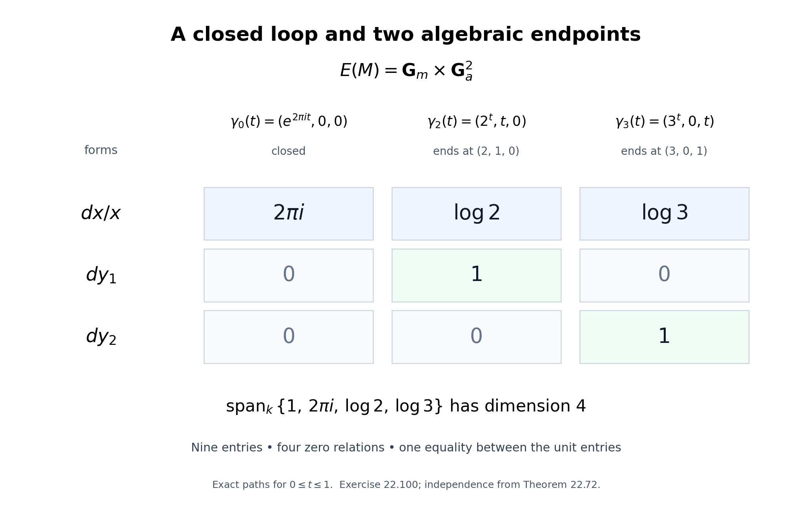
Figure 22.7. Exercise 22.100. The columns are the exact paths \((e^{2\pi it},0,0)\), \((2^t,t,0)\), and \((3^t,0,t)\) in \(\mathbf G_m(\mathbf C)\times\mathbf C^2\), for \(0\le t\le1\). The four zero entries express cross-factor pairings; the two unit entries give one additional relation. The four remaining scalar directions are independent by Theorem 22.72.
For the construction and relation theorem, see Annette Huber and Gisbert Wüstholz, Transcendence and linear relations of 1-periods, Chapters 8–9.
Relative curve integrals: an explicit comparison
Let \(k=\overline{\mathbf Q}\). Consider
\[ C=\mathbf A^1_k\setminus\{a_1,\ldots,a_s\},\qquad D=\{b,d_1,\ldots,d_r\}\subset C(k), \]where the punctures are distinct and the endpoints are distinct. Either \(s\) or \(r\) may be zero. A relative one-cycle is a finite integral combination of oriented, piecewise smooth paths in \(C(\mathbf C)\) whose boundary is supported on \(D\). Boundaries of two-chains and chains supported on \(D\) give the relative homology group \(H_1(C,D;\mathbf Z)\).
Lemma 22.101. Forms and endpoints in relative degree one
Put \(R=k[x,1/\prod_i(x-a_i)]\), with the empty product interpreted as \(1\). The relative algebraic de Rham group is
\[ H^1_{\mathrm{dR}}(C,D) =\frac{R\,dx\oplus k^D} {\{(df,f|_D):f\in R\}}. \tag{22.251} \]Its pairing with a relative cycle is
\[ \bigl\langle[\omega,\eta],[\gamma]\bigr\rangle =\int_\gamma\omega-\eta(\partial\gamma). \tag{22.252} \]For \(1\le j\le r\), let \(q_j\in k[x]\) be the Lagrange polynomial with value \(1\) at \(d_j\) and value \(0\) at all other points of \(D\). A basis of (22.251) is
\[ [\xi_i,0]\quad(1\le i\le s),\qquad [dq_j,0]\quad(1\le j\le r),\qquad \xi_i=\frac{dx}{x-a_i}. \tag{22.253} \]Proof. The relative de Rham complex is the shifted mapping cone of restriction from \(C\) to \(D\). In degrees zero and one its global complex is \(R\to R\,dx\oplus k^D\), with the differential in (22.251); there are no terms of higher degree. It computes the sheaf complex because \(C\) and \(D\) are affine and its terms are quasi-coherent, by the affine Čech acyclicity used in Proposition 22.84.
The fundamental theorem of calculus shows that \((df,f|_D)\) pairs to zero. A one-form on a smooth curve is closed. Stokes' formula on each subdivided smooth two-simplex therefore makes its integral over a boundary zero; the endpoint term also vanishes because \(\partial^2=0\). A path supported on the finite set \(D\) is constant. Thus (22.252) is well defined.
Interpolate any \(\eta\in k^D\) by a polynomial \(h\). Subtracting \((dh,h|_D)\) replaces \((\omega,\eta)\) by \((\omega-dh,0)\). Partial fractions, integrated term by term except at simple poles, give
\[ \omega-dh=df+\sum_i c_i\xi_i,\qquad f\in R,\quad c_i\in k. \]More explicitly, a polynomial has a polynomial primitive, and \((x-a)^{-m}dx=d((x-a)^{1-m}/(1-m))\) for \(m\ge2\). Now put \(g=f-f(b)-\sum_j(f(d_j)-f(b))q_j\). It vanishes on \(D\), so \((dg,0)\) is a relative coboundary. This proves spanning by (22.253).
For independence, suppose \(\sum_i c_i\xi_i+\sum_j e_jdq_j=df\), with \(f|_D=0\). An exact rational differential has residue zero at every point: differentiation of its Laurent series has no coefficient of \((x-a)^{-1}dx\). Taking residues gives \(c_i=0\) for every \(i\). Consequently \(\sum_j e_jq_j-f\) has derivative zero and is constant. Its value at \(b\) is zero, and its value at \(d_j\) is \(e_j\). Hence every \(e_j=0\). \(\square\)
Theorem 22.102. The relative curve pairing is a 1-motive pairing
Define
\[ M_{C,D}=[\mathbf Z^r\xrightarrow{u}\mathbf G_m^s], \qquad u(e_j)_i=\frac{d_j-a_i}{b-a_i}. \tag{22.254} \]There are isomorphisms
\[ H_1(C,D;\mathbf Z)\simeq T_B(M_{C,D}),\qquad H^1_{\mathrm{dR}}(C,D)\simeq V_{\mathrm{dR}}(M_{C,D})^\vee \]under which (22.252) is exactly the period pairing (22.238).
Proof. The universal extension from Theorem 22.92 is \(E(M_{C,D})=\mathbf G_m^s\times\mathbf G_a^r\). There is an explicit algebraic map
\[ \Phi:C\longrightarrow E(M_{C,D}),\qquad x\longmapsto \left(\left(\frac{x-a_i}{b-a_i}\right)_{i=1}^s, (q_j(x))_{j=1}^r\right). \tag{22.255} \]It sends \(b\) to the identity and \(d_j\) to \(\widetilde u(e_j)\). If \(X_i,Y_j\) denote the multiplicative and additive coordinates, then \(\Phi^*(dX_i/X_i)=\xi_i\) and \(\Phi^*(dY_j)=dq_j\). Lemma 22.101 therefore gives the asserted de Rham isomorphism.
Here is the integral homology calculation. A punctured plane has the homotopy type of a graph with one circle around each puncture. One can see this by choosing disjoint small closed discs about the punctures inside a large disc, retracting the punctured small discs to their boundary circles and the exterior of the large disc to its boundary. Join the small boundary circles by disjoint arcs forming a tree, and join that tree to the large boundary. Cutting along these arcs leaves a disc. Triangulate that disc and collapse it toward the arcs and the small boundary circles, leaving a graph with exactly \(s\) independent circles. The resulting loops \(\lambda_i\), based at \(b\) by paths, form a basis of \(H_1(C;\mathbf Z)\). The case \(s=0\) is the contractible plane.
Choose paths \(\rho_j\) from \(b\) to \(d_j\). Every relative cycle has a unique boundary \(\sum_jm_j(d_j-b)\). Subtracting \(\sum_jm_j\rho_j\) gives an absolute cycle. The exact sequence of the relative chain complex makes \(H_1(C)\to H_1(C,D)\) injective, since \(H_1(D)=0\). Thus the \(\lambda_i\)'s and \(\rho_j\)'s form a basis of \(H_1(C,D;\mathbf Z)\).
For a relative cycle \(\gamma\) with that boundary, set \(z_i=\int_\gamma\xi_i\) and \(\ell=\sum_jm_je_j\). Continuation of the elementary logarithm along each path gives
\[ \exp(z_i)=\prod_j \left(\frac{d_j-a_i}{b-a_i}\right)^{m_j}=u(\ell)_i. \tag{22.256} \]When intermediate endpoints are not in \(D\), their factors cancel in the product, since their coefficients in \(\partial\gamma\) are zero. Hence \((\ell,z)\in T_B(M_{C,D})\). Its canonical lift to the Lie algebra of \(E(M_{C,D})\) is \((z,m)\), because the additive integrals are \(\int_\gamma dq_j=q_j(\partial\gamma)=m_j\).
On \(\lambda_i\) this construction gives the period \(2\pi i\) in the \(i\)-th torus coordinate and zero elsewhere. Indeed the integral around its small circle is \(2\pi i\); the other forms have primitives on that disc, and the two traversals of each joining path cancel. On \(\rho_j\) it gives a lift of the lattice basis vector \(e_j\). These vectors form a basis of \(T_B(M_{C,D})\), by (22.235). This proves the integral Betti isomorphism. Equality of the pairings follows on each basis form from the computed integrals, hence on every class by Lemma 22.101.
For clarity, the matrix of the comparison is
\[ \begin{pmatrix} 2\pi i\,I_s & L\\ 0&I_r \end{pmatrix}, \qquad L_{ij}=\int_{\rho_j}\frac{dx}{x-a_i}. \tag{22.257} \]Its determinant is \((2\pi i)^s\ne0\), including the empty-block cases. This also verifies directly that the comparison becomes an isomorphism over \(\mathbf C\). \(\square\)
For \(C=\mathbf G_m\) and \(D=\{1,2,3\}\), the interpolation polynomials are
\[ q_1=(x-1)(3-x),\qquad q_2=\frac{(x-1)(x-2)}2. \]Formula (22.255) is \(\Phi(x)=(x,q_1(x),q_2(x))\), and (22.257) is exactly the matrix in Exercise 22.100. Its curved lifts of paths in \(C\) have the same invariant-form integrals as the exponential paths displayed in Figure 22.7, since their torus coordinates and additive endpoint differences agree.
Corollary 22.103. All relative period relations for punctured rational curves
Every \(k\)-linear relation between the periods of \((C,D)\) follows from bilinearity and morphisms between subquotients of finite sums of \(M_{C,D}\). For finitely many such pairs one uses their direct sum.
Proof. Theorem 22.102 identifies each entire pairing, including its rational and algebraic vector spaces, with a 1-motive pairing. Theorem 22.98 applies to these identified symbols. It gives the stated generators and the specified category of subquotients. \(\square\)
This statement describes relations through 1-motives. It does not identify those generators with a smaller list consisting only of maps between curves.
Theorem 22.104. Algebraicity of a rational differential integral
Let \(\omega=R(x)\,dx\), with \(R\in k(x)\), and let \(\gamma\) be a finite integral combination of paths in the complex affine line avoiding its poles and having boundary supported on finitely many algebraic points. Write the partial-fraction decomposition in the form
\[ \omega=dF+\sum_{i=1}^s c_i\frac{dx}{x-a_i}, \qquad F\in k(x),\quad c_i=\operatorname{res}_{a_i}\omega, \tag{22.258} \]where \(a_i\) includes all finite poles. Then
\[ \int_\gamma\omega\in k \quad\Longleftrightarrow\quad \sum_i c_i\int_\gamma\frac{dx}{x-a_i}=0. \tag{22.259} \]When these conditions hold, the integral is \(F(\partial\gamma)\). In particular, a nonzero integral over a closed cycle is transcendental.
Proof. Partial fractions give (22.258) by the explicit integration used in Lemma 22.101. The primitive \(F\) has no finite poles outside the poles of \(\omega\), so it is defined at the boundary points. Its endpoint contribution \(F(\partial\gamma)\) lies in \(k\); nonalgebraic intermediate endpoints cancel.
Put \(z_i=\int_\gamma dx/(x-a_i)\). Formula (22.256), or the same cancellation argument without a selected base point, proves \(e^{z_i}\in k^*\). Select a rational basis \(v_1,\ldots,v_m\) of the span of the \(z_i\)'s. Each \(v_j\) can be selected from the \(z_i\)'s themselves, so it is a logarithm of an algebraic number. Theorem 22.72 says that \(1,v_1,\ldots,v_m\) are linearly independent over \(k\). Therefore the \(k\)-linear combination \(\sum_i c_iz_i\) is algebraic only when it is zero. The same conclusion is immediate if \(m=0\). Combining this with (22.258) proves (22.259).
If \(\partial\gamma=0\), the exact-form contribution vanishes. The integral is then either zero or transcendental. \(\square\)
The condition depends on the chosen paths: changing a path by a loop changes its logarithms by integral multiples of \(2\pi i\). Both the formula and the criterion retain those multiples.
Exercise 22.105. A rational integral of the third kind
Compute
\[ I=\int_0^1\frac{dx}{1+x^3} \tag{22.260} \]and prove that it is transcendental.
Solution. Partial fractions give
\[ \frac1{1+x^3} =\frac1{3(x+1)} +\frac{2-x}{3(x^2-x+1)}. \tag{22.261} \]An antiderivative on the real interval is
\[ \frac13\log(x+1)-\frac16\log(x^2-x+1) +\frac1{\sqrt3} \arctan\left(\frac{2x-1}{\sqrt3}\right). \tag{22.262} \]The two arctangent values at the endpoints are \(\pi/6\) and \(-\pi/6\); the quadratic has value \(1\) at both endpoints. Consequently
\[ I=\frac{\log2}{3}+\frac{\pi}{3\sqrt3}. \tag{22.263} \]The rational differential has only simple finite poles and no polynomial part, so its primitive \(F\) in (22.258) can be taken to be zero. Its integral is positive, because the integrand is positive on \([0,1]\). Theorem 22.104 therefore makes \(I\) transcendental. Equivalently, its displayed value is a nonzero algebraic linear combination of \(\log2\) and the logarithm \(i\pi\) of \(-1\), to which Theorem 22.72 applies.
The relative pairing and its comparison with 1-motives are discussed in Huber and Wüstholz, Transcendence and linear relations of 1-periods, Sections 12.2–12.3. Their Section 13.2 discusses rational differential integrals, including (22.260).
Jacobians and the periods of a curve
Let \(\overline C\) be a smooth projective connected curve over \(k=\overline{\mathbf Q}\), let \(S\subset\overline C(k)\) be finite, and put \(U=\overline C\setminus S\). Fix \(b\in U(k)\). Write \(g=\dim H^1(\overline C,\mathcal O_{\overline C})\).
We use the scheme-theoretic construction in The Picard functor and the Picard scheme of a curve, Theorem 2.1 and Sections 5–7. It supplies the Jacobian \(J=\operatorname{Pic}^0(\overline C)\), its universal line bundle \(\mathcal P\) normalized along \(b\times J\), and the projective-bundle description of the Abel map in degree \(n>2g-2\). These are functorial statements about line bundles, including families.
Proposition 22.106. The Abel map identifies rational first homology
The map
\[ \iota:\overline C\longrightarrow J,\qquad x\longmapsto[\mathcal O_{\overline C}(x-b)] \tag{22.264} \]induces an isomorphism \(H_1(\overline C;\mathbf Q)\simeq H_1(J;\mathbf Q)\).
Proof. We first compute the first cohomology of a symmetric power. Triangulate the compact surface \(\overline C(\mathbf C)\). The product cell decomposition on its \(n\)-fold product is preserved by permutations. Barycentric subdivision makes every element stabilizing a simplex fix that simplex pointwise: a simplex is a chain of product faces, whose distinct dimensions force every face in the chain to be fixed.
Thus the quotient has cells given by the simplex orbits, with the same face identifications. Pullback identifies its cellular cochains with the permutation-invariant cochains of the product. Taking invariants over \(\mathbf Q\) commutes with cohomology. Indeed averaging over the finite group commutes with the differential; an invariant coboundary has an invariant primitive obtained by averaging, and an invariant cohomology class has an invariant representative by the same operation. Consequently
\[ H^1(\operatorname{Sym}^n\overline C;\mathbf Q) \simeq H^1(\overline C^n;\mathbf Q)^{\mathfrak S_n} \simeq H^1(\overline C;\mathbf Q). \tag{22.265} \]For the last step, degree-one product cohomology is the direct sum of the pullbacks from the factors. This follows directly from the cellular product complex: in total degree one exactly one factor has degree one and the other factors have degree zero; connectedness leaves one copy of \(\mathbf Q\) in each degree-zero cohomology group. Permutation invariants are therefore the diagonal tuples \((\alpha,\ldots,\alpha)\). In particular, pullback by \(j(x)=x+(n-1)b\) is the isomorphism in (22.265), with no factor of \(n\).
Choose \(n\ge\max(2,2g-1)\). The cited Picard construction proves that
\[ a_n:\operatorname{Sym}^n\overline C\longrightarrow J,\qquad D\longmapsto[\mathcal O(D-nb)] \tag{22.266} \]is a projective bundle with fibre \(\mathbf P^{n-g}\). Its analytic map is locally a product. A connected, simply connected fibre makes the induced fundamental-group map an isomorphism: lift a loop through successive product charts and join its two endpoint lifts inside the fibre; a null-homotopy lifts after subdivision into such charts, and any resulting fibre loop contracts. Complex projective space is simply connected, as its cell decomposition has one zero-cell and only cells of positive even dimension; its one-skeleton is a point. A point fibre satisfies the same assertion. Abelianizing the fundamental groups gives the first-homology isomorphism for \(a_n\), hence also the first-cohomology isomorphism.
Since \(a_nj=\iota\), (22.265) now makes \(\iota^*\) an isomorphism. Dualizing finite-dimensional rational homology and cohomology proves the assertion. This proof includes \(g=0\), when both first homology groups are zero. \(\square\)
Lemma 22.107. De Rham comparison in the three geometries used here
Integration gives a natural isomorphism
\[ H^m_{\mathrm{dR}}(X/k)\otimes_k\mathbf C \simeq H^m(X(\mathbf C);\mathbf C) \tag{22.267} \]in each of the following cases:
- \(X\) is smooth projective;
- \(X\) is a smooth projective curve with finitely many points removed;
- \(X\) is a torsor under a split torus over a smooth projective variety.
In particular the pairing in degree one is ordinary integration of forms, with the Čech endpoint terms when a class needs more than one chart.
Proof. For a smooth projective \(X\), the cohomological GAGA theorem used in Theorem 22.94 applies to every coherent sheaf \(\Omega_X^p\). The spectral sequences of the algebraic and analytic de Rham complexes therefore agree after complexification. The analytic de Rham complex resolves the constant sheaf: on a coordinate polydisc, integration along radial segments gives the Poincaré homotopy for closed holomorphic forms. More explicitly, contraction with the radial vector field, integrated after the dilation \(z\mapsto tz\), satisfies \(dh+hd=1-\operatorname{ev}_0\). It is holomorphic by integration of convergent power series on smaller polydiscs.
The cohomology of the constant sheaf on a manifold is singular cohomology. This identification can be obtained from a good cover: its finite intersections contract to points, the singular cochain complexes on them have only degree-zero cohomology, and the Čech double complex reduces to the nerve complex of constants. Subdivision makes singular chains subordinate to this cover, so the same double complex computes singular cohomology. These comparisons send a local primitive difference to its integral along the intervening path. Thus they give integration, with the sign convention of (22.252) and the Čech formula of Proposition 22.86.
For a curve \(\overline X\) with punctures \(S\), use the coherent logarithmic complex
\[ \mathcal O_{\overline X}\longrightarrow \Omega^1_{\overline X}(S). \tag{22.268} \]It has the same algebraic hypercohomology as the de Rham complex on \(X=\overline X\setminus S\). To verify this locally at a puncture, choose a uniformizer \(t\). A rational function with a pole has a finite principal part \(\sum_{j<0}c_jt^j\). Differentiation maps these principal parts bijectively onto the polar parts of differentials of order at least two, since \(d(t^j)=jt^{j-1}dt\) and the characteristic is zero. Hence the quotient of the meromorphic de Rham complex by (22.268) is acyclic. The open immersion is affine on these charts, so its direct image has no higher quasi-coherent cohomology on affine charts. This proves the asserted hypercohomology identification.
Analytically the logarithmic complex on a disc has one constant class in degree zero and the class \(dt/t\) in degree one at the puncture. A convergent power series integrates termwise except for that logarithmic term. On the punctured disc, Laurent series give the same calculation; dividing nonzero integer exponents does not destroy normal convergence on compact annuli. Integration of \(dt/t\) around a positive circle is \(2\pi i\). Thus this local comparison agrees with the cohomology of the punctured disc and its restriction maps. It identifies the analytic logarithmic complex with the derived direct image of the constant sheaf on \(X\). GAGA applied to the two coherent terms of (22.268) finishes the curve case.
For a torsor \(X\to B\) under \(\mathbf G_m^t\), the \(t\) coordinate characters give line bundles \(N_1,\ldots,N_t\) on \(B\), and
\[ X=N_1^\times\times_B\cdots\times_BN_t^\times \ \subset\ \overline X=\prod_B\mathbf P(\mathcal O_B\oplus N_i). \tag{22.269} \]Here \(N_i^\times\) is the complement of the zero section. This description follows by gluing the multiplicative transition functions of the torsor. The compactification is smooth projective, with boundary the coordinate zero and infinity sections. On a bundle chart its logarithmic forms are base forms and \(dt_i/t_i\).
The algebraic logarithmic complex on this chart includes into the complex with Laurent-polynomial fibre coefficients. Its quotient is a sum of weights \(m=(m_1,\ldots,m_t)\) with at least one negative coordinate. On such a weight choose \(m_j\ne0\). Cartan's identity gives
\[ d\bigl(m_j^{-1}\iota_{t_j\partial/\partial t_j}\bigr) +\bigl(m_j^{-1}\iota_{t_j\partial/\partial t_j}\bigr)d=1. \tag{22.270} \]This contraction includes base forms, whose fibre weight is zero. It makes the quotient acyclic. The assertion is local, so the contractions need not agree on overlaps. The open immersion is affine on the bundle charts, giving the algebraic hypercohomology comparison as above.
On analytic charts the same power-series argument removes all nonzero weights and the ordinary coordinate directions. The remaining classes are the exterior products of the logarithmic forms at those boundary components passing through the point. Small punctured polydiscs retract to products of circles; integration sends those exterior products to their cohomology bases, with factor \(2\pi i\) for each circle. Thus the analytic logarithmic complex computes the derived direct image of the constant sheaf from \(X\). Applying GAGA termwise to the coherent logarithmic complex on \(\overline X\) proves (22.267). All inclusions, pullbacks and integration maps used in this construction are natural. \(\square\)
Proposition 22.108. A generalized Jacobian from framed line bundles
There are a semiabelian variety \(G=J(U)\) and a map \(a:U\to G\), with \(a(b)=0\), fitting into
\[ 0\longrightarrow T\longrightarrow G\longrightarrow J\longrightarrow0, \qquad T=\mathbf G_m^S/\mathbf G_m,\quad \dim T=|S|-1 \tag{22.271} \]when \(S\ne\varnothing\). If \(S=\varnothing\), take \(G=J\), \(T=0\), and \(a=\iota\). The composite \(U\to G\to J\) is the restriction of (22.264).
Proof. Suppose \(S\ne\varnothing\). Over a degree-zero line bundle \(L\) on \(\overline C\), take a nonzero vector \(v_s\in L_s\) for each \(s\in S\), modulo simultaneous scalar multiplication. More generally these are relative framings over a test scheme, with isomorphisms of bundles carrying all the vectors to the specified vectors. This functor is represented over \(J\) by
\[ G=\left(\prod_{s\in S}\mathcal P_s^\times\right)/\mathbf G_m. \tag{22.272} \]To see the quotient without assuming a general quotient construction, fix \(s_0\in S\). It is the fibre product of the frame bundles of \(N_s=\mathcal P_s\otimes\mathcal P_{s_0}^{-1}\), for \(s\ne s_0\); send the frame tuple to \(v_s\otimes v_{s_0}^{-1}\). Conversely locally choose \(v_{s_0}\), recover the other vectors from those ratios, and note that another choice changes all vectors by the same unit. This proves the description on every test scheme by descent. In particular \(G\to J\) is a Zariski locally trivial torus torsor.
Tensor product of framed line bundles defines multiplication; the trivial line bundle with its constant frames is the identity, and dualizing gives the inverse. These are algebraic morphisms. Indeed the universal normalized bundle identifies the line bundle at a sum in \(J\) with the tensor product of the two bundles, uniquely after normalization at \(b\). Uniqueness is the scalar-removal assertion of the cited Picard Theorem 2.1, so these identifications satisfy associativity on all test schemes. The construction is commutative. Its kernel over \(0\in J\) is exactly the quotient torus in (22.271). Local products with this torus show that \(G\) is smooth and connected. Thus (22.271) makes \(G\) semiabelian.
The family of divisors \(x-b\), parametrized by \(x\in U\), avoids \(S\). The canonical section \(1\) of \(\mathcal O(x-b)\) therefore gives a nonzero vector in each fibre over \(S\). It defines the required morphism \(a\) by (22.272). At \(x=b\) the divisor is zero and all frames are \(1\), so \(a(b)=0\). \(\square\)
Theorem 22.109. The open-curve homology comparison
The map \(a\) induces an isomorphism
\[ a_*:H_1(U;\mathbf Q)\xrightarrow{\sim}H_1(G;\mathbf Q), \qquad a^*:H^1_{\mathrm{dR}}(G)\xrightarrow{\sim}H^1_{\mathrm{dR}}(U), \tag{22.273} \]compatible with integration.
Proof. The case \(S=\varnothing\) follows from Proposition 22.106 and the projective comparison of Lemma 22.107. Suppose \(S\ne\varnothing\). The topological exact sequence for the punctures is
\[ 0\longrightarrow \mathbf Q^S/\mathbf Q(1,\ldots,1) \longrightarrow H_1(U;\mathbf Q) \longrightarrow H_1(\overline C;\mathbf Q)\longrightarrow0. \tag{22.274} \]For completeness, excision identifies the degree-two relative group of \((\overline C,U)\) with one copy of \(\mathbf Q\) for each small puncture disc, and its degree-one relative group is zero. An oriented fundamental cycle of the compact connected surface maps to \((1,\ldots,1)\). One can check that its degree-two homology is precisely \(\mathbf Q\) on a triangulation: the boundary equation makes the coefficients of adjacent oriented triangles equal, and all triangles are connected by adjacency. The relative long exact sequence now gives (22.274). Its left-hand generators are the positively oriented puncture loops.
For (22.271), the period-lattice argument of Theorem 22.94 gives
\[ 0\longrightarrow H_1(T;\mathbf Q) \longrightarrow H_1(G;\mathbf Q) \longrightarrow H_1(J;\mathbf Q)\longrightarrow0. \tag{22.275} \]Use \(s_0\) as reference in (22.272). The map on the left of these sequences sends the loop at \(s\ne s_0\) to the \(s\)-th coordinate circle of \(T\), and the loop at \(s_0\) to minus the sum of all those circles. Here is the local calculation fixing the signs. Near \(s\), take a coordinate \(y\) on the curve and let \(t\) be the moving-point coordinate, with \(s\) given by \(y=0\). The bundle \(\mathcal O(\Delta)\) has generator \((y-t)^{-1}\), so its canonical section \(1\), restricted to \(y=0\), has coefficient \(-t\). Its frame therefore winds once positively when \(t\) winds positively. The factor \(\mathcal O(-b)\) is nonvanishing there. Other puncture frames are nonvanishing across this disc. Taking the ratio to the reference frame gives exactly the asserted coordinate windings. At \(s_0\) the common denominator winds once, giving every ratio winding \(-1\).
This is the isomorphism \(\mathbf Q^S/\mathbf Q(1,\ldots,1)\simeq H_1(T;\mathbf Q)\). The right map is the isomorphism of Proposition 22.106. The two exact sequences commute with \(a\) and \(\iota\), so a direct diagram chase proves that the middle map is an isomorphism.
Both \(U\) and \(G\) are among the cases of Lemma 22.107. Its naturality makes the complexification of \(a^*\) the dual of the homology map just proved. Extension of a field is faithful, so \(a^*\) itself is an isomorphism over \(k\). The same comparison proves compatibility with integration. \(\square\)
Proposition 22.110. Universal-extension forms represent semiabelian cohomology
For a semiabelian variety \(G\), invariant forms give an isomorphism
\[ \operatorname{Lie}(G^\natural)^\vee \xrightarrow{\sim} H^1_{\mathrm{dR}}(G). \tag{22.276} \]If a loop in \(G\) corresponds to \(\lambda\in\Lambda_G\), its integral against this class is evaluation of the covector on the unique period lift of \(\lambda\) to \(\operatorname{Lie}G^\natural\).
Proof. Pullback along the vector torsor \(G^\natural\to G\) is an isomorphism on de Rham cohomology by Proposition 22.84. Invariant forms on \(G^\natural\) are closed, because the group is commutative. The argument of Theorem 22.85 proves injectivity into cohomology: if such a form is globally exact, its primitive, minus its value at the identity, is an additive algebraic homomorphism to \(\mathbf G_a\). Proposition 22.91 makes that homomorphism zero.
Write \(\dim A=g\) and \(\dim T=t\). The source has dimension \(2g+t\). By Lemma 22.107 and the exact period lattices in Theorem 22.94, the target also has dimension \(\operatorname{rank}\Lambda_G=2g+t\). Thus the injection is an isomorphism. The integral identity follows by lifting the loop through the vector torsor and then through the exponential cover, exactly as in Proposition 22.86. Vector fibres add no periods. \(\square\)
Theorem 22.111. The full relative curve pairing
Let \(D=\{b,d_1,\ldots,d_r\}\subset U(k)\) be a finite nonempty set. Define
\[ M(U,D)= \left[\mathbf Z[D]^0\longrightarrow G\right], \qquad d_j-b\longmapsto a(d_j), \tag{22.277} \]where \(\mathbf Z[D]^0\) is the group of degree-zero divisors supported on \(D\). Then there are isomorphisms
\[ H_1(U,D;\mathbf Q)\simeq V_B(M(U,D)),\qquad H^1_{\mathrm{dR}}(U,D)\simeq V_{\mathrm{dR}}(M(U,D))^\vee \tag{22.278} \]identifying the integration pairing with the 1-motive period pairing.
Proof. Put \(M=M(U,D)\) and \(E=E(M)\). Pull back its vector extension along \(a\):
\[ X=U\times_G E,\qquad \pi:X\to U,\qquad f:X\to E. \tag{22.279} \]Choose the finite subset \(D'\subset X(k)\) consisting of \((b,0)\) and \((d_j,\widetilde u(d_j-b))\). These are distinct points. The construction does not require the points \(a(d_j)\) in \(G\) to be distinct.
The map of pairs \((X,D')\to(U,D)\) induces isomorphisms on both cohomology and homology. Algebraically, vector-torsor invariance, Proposition 22.84, gives the absolute de Rham assertion; the map \(D'\to D\) is an isomorphism, so the relative long exact sequences give the relative assertion. Topologically, this vector torsor has a continuous section: combine local sections by a partition of unity using affine combinations in each fibre. Correct the section near the finitely many points of \(D\), using disjoint local bump functions, so that it passes through \(D'\). Linear contraction in the vector fibres then gives a deformation to that section fixing \(D'\). This proves the homology assertion.
For a relative cycle in \(X\) with boundary \(\sum_jm_j((d_j,\widetilde u(d_j-b))-(b,0))\), integrate the invariant forms of \(E\) after applying \(f\). Their values define a vector \(w\in\operatorname{Lie}E(\mathbf C)\). Lifting paths through the exponential cover gives
\[ \exp_E(w)=\sum_jm_j\widetilde u(d_j-b) =\widetilde u\!\left(\sum_jm_j(d_j-b)\right). \tag{22.280} \]This also holds when the chain's individual endpoints are not in \(D'\): their contributions cancel in its boundary. Thus \(w\) is the canonical lift of a Betti vector of \(M\), by Theorem 22.94. Homologous cycles give the same vector, since invariant forms are closed. We obtain the first map in (22.278).
Compare the exact sequences with absolute groups on the left and endpoint lattices on the right. The absolute map is the isomorphism \(H_1(U;\mathbf Q)\to H_1(G;\mathbf Q)\) from Theorem 22.109, followed by the unique period lift. The endpoint map is the identity on \(\mathbf Q[D]^0\). Exactness of (22.235) and the relative homology sequence proves that the middle map is an isomorphism.
For de Rham cohomology, send an invariant covector \(\omega\) on \(E\) to the class \([f^*\omega,0]\) in \(H^1_{\mathrm{dR}}(X,D')\), and then use \(\pi^*\) to identify this with \(H^1_{\mathrm{dR}}(U,D)\). The relevant exact sequences are
\[ \begin{array}{ccccccccc} 0&\to&(\mathbf Z[D]^0\otimes k)^\vee &\to&\operatorname{Lie}E^\vee &\to&\operatorname{Lie}G^\natural{}^\vee&\to&0\\ &&\downarrow&&\downarrow&&\downarrow\\ 0&\to&k^D/k &\to&H^1_{\mathrm{dR}}(U,D) &\to&H^1_{\mathrm{dR}}(U)&\to&0 . \end{array} \tag{22.281} \]The right vertical map is (22.276) followed by (22.273). To verify it, use any product description \(E=G^\natural\times(\mathbf Z[D]^0\otimes k)\); additive-coordinate differentials are exact in absolute cohomology, so the absolute class of \(\omega\) is that of its restriction to \(G^\natural\).
On the left, a functional \(c\) on the lattice vector space gives the additive function \(F_c:E\to\mathbf G_a\). At the selected points it has values \(0,c(d_1-b),\ldots,c(d_r-b)\). The relative class \([d(f^*F_c),0]\) is \([0,-F_c|_{D'}]\), by (22.251). Hence the left vertical map sends \(c\) to the class of the endpoint function with values \(0,-c(d_1-b),\ldots,-c(d_r-b)\). This is an isomorphism and fixes the sign in the diagram. Exactness now proves that the middle vertical map is an isomorphism.
Finally, the two constructions use exactly the same invariant-form integrals on \(X\). Their pairings are equal by definition, proving (22.278) with the asserted compatibility. \(\square\)
If no endpoint set is specified, choose a single base point \(D=\{b\}\). The relative groups then equal the absolute degree-one groups and the lattice in (22.277) is zero. For a disconnected smooth curve, apply the construction component by component and take the direct sum.
It follows from Theorems 22.98 and 22.111 that every linear relation among periods of a fixed smooth curve relative to algebraic endpoints is generated by bilinearity and morphisms between subquotients of finite sums of its 1-motive (22.277). This includes differential forms of the first, second and third kinds. The claim concerns these 1-motive morphisms; converting every generator to maps between curves alone is a further statement.
Exercise 22.112. A punctured elliptic curve with relative endpoints
Let
\[ E:\ y^2=4x^3-g_2x-g_3 \]be nonsingular over \(k\), with origin \(O\). Choose \(Q=(a,b_Q)\in E(k)\) with \(b_Q\ne0\), and let \(U=E\setminus\{O,Q\}\). Choose \(P_0,P_1\in U(k)\) with distinct \(x\)-coordinates \(x_0,x_1\). Give a de Rham basis for \((U,\{P_0,P_1\})\), a compatible period-matrix shape, and the dimensions of its two realizations.
Solution. The generalized Jacobian is an extension of \(E\) by one copy of \(\mathbf G_m\). The endpoint lattice has rank one. Consequently the de Rham dimension and Betti rank of the relative motive are both \(2+1+1=4\).
Put
\[ \alpha=\frac{dx}{y},\qquad \beta=\frac{x\,dx}{y},\qquad \rho=\frac{y+b_Q}{2(x-a)y}\,dx,\qquad F=\frac{x-x_0}{x_1-x_0}. \tag{22.282} \]The form \(\rho\) has residue \(1\) at \(Q\) and residue \(-1\) at \(O\), with no other poles. At \(Q\), use \(x-a\) as a uniformizer: the numerator tends to \(2b_Q\). At \(-Q\), the numerator vanishes, cancelling \(x-a\). At other finite branch points \(dx/y\) is regular and \(x-a\ne0\). At \(O\), the uniformizer \(t=-2x/y\) of Proposition 22.88 gives \(x=t^{-2}+O(t^2)\); hence \(\rho=-dt/t+\) regular terms. These calculations prove all the residue assertions.
The classes of \(\alpha,\beta\) form the complete-curve de Rham basis from Proposition 22.88. They remain independent on \(U\). Indeed the quotient of the logarithmic complex for the punctures by the regular de Rham complex is concentrated in degree one, so its hypercohomology sequence injects \(H^1_{\mathrm{dR}}(E)\) into \(H^1_{\mathrm{dR}}(U)\). The local principal-part argument in Lemma 22.107 identifies this injection with restriction of the two classes, including the second-kind representative \(\beta\). The nonzero residue of \(\rho\) adds the third independent direction. The dimension is three by Theorem 22.109. Finally \(F(P_0)=0\), \(F(P_1)=1\); therefore \([dF,0]\) adds the independent endpoint direction. The four classes \([\alpha,0],[\beta,0],[\rho,0],[dF,0]\) form the required relative basis.
Choose two closed cycles of the complete elliptic curve, moved off \(O,Q\), a positive small loop \(\delta_Q\) around \(Q\), and a path \(\gamma:P_0\to P_1\). With periods \(\omega_j\) and quasi-periods \(\eta_j\) normalized as in Proposition 22.88, the matrix has the exact shape
\[ \begin{pmatrix} \omega_1&\omega_2&0&\int_\gamma\alpha\\ -\eta_1&-\eta_2&0&\int_\gamma\beta\\ \int_{\lambda_1}\rho&\int_{\lambda_2}\rho&2\pi i&\int_\gamma\rho\\ 0&0&0&1 \end{pmatrix}. \tag{22.283} \]The zeros and the unit follow from residues and endpoint evaluation. Its determinant is \(2\pi i\) times the determinant of the complete elliptic \(2\times2\) period matrix, which is nonzero by the de Rham comparison already proved. Dimension four here is the dimension of each realization; it does not assert that the sixteen scalar entries span a four-dimensional space over \(k\).
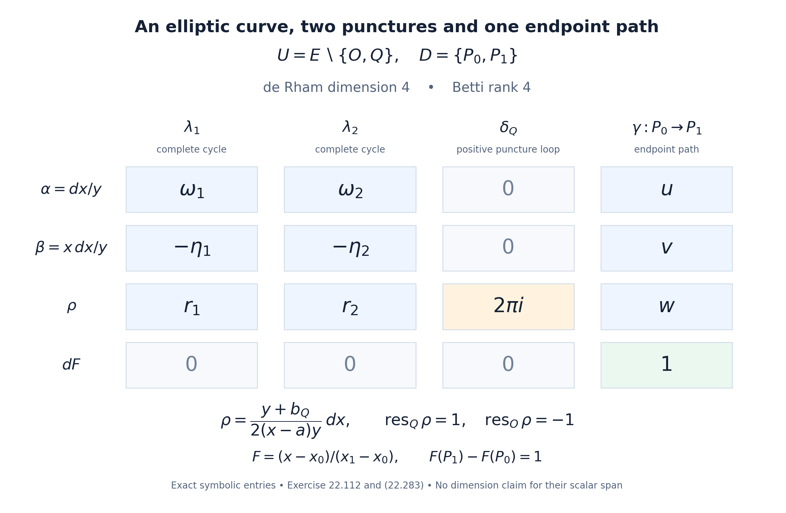
Figure 22.8. Exercise 22.112. The small positive loop around \(Q\) detects the residue \(1\) of \(\rho\); its residue at the other puncture \(O\) is \(-1\). The endpoint path detects \(F(P_1)-F(P_0)=1\). The two complete cycles retain the elliptic period and negative quasi-period entries. The symbols \(u,v,w,r_1,r_2\) denote the corresponding integrals in (22.283), with no numerical approximation.
For Jacobians and symmetric powers, see J. S. Milne's freely available author edition of Jacobian Varieties, Sections 3–5; Section 8 discusses generalized Jacobians. The curve-period comparison is treated in Huber and Wüstholz, Transcendence and linear relations of 1-periods, Sections 4.5 and 12.3.
Affine filtrations and relative cohomology
We work over \(k=\overline{\mathbf Q}\), with its fixed embedding in \(\mathbf C\). A constructible sheaf below is a sheaf of finite-dimensional \(\mathbf Q\)-vector spaces on the analytic space of a variety, locally constant on the members of a finite algebraic stratification defined over \(k\). Cohomology in this section is singular or analytic sheaf cohomology with rational coefficients. For a constant sheaf these agree by the local-cochain comparison in Lemma 22.107.
Lemma 22.113. A punctured-line calculation in families
Let \(p:\mathbf A^n\to\mathbf A^{n-1}\) be a coordinate projection. Let \(Z\subset\mathbf A^n\) be a hypersurface finite and surjective over the base. Suppose that \(F\) is locally constant on \(\mathbf A^n\setminus Z\) and has zero stalks on \(Z\). Then
\[ R^qp_*F=0\quad(q\ne1),\qquad A=R^1p_*F\ \text{is constructible}. \tag{22.284} \]If \(h:V\hookrightarrow\mathbf A^{n-1}\) is an algebraic open immersion and \(j:p^{-1}V\hookrightarrow\mathbf A^n\), then
\[ Rp_*(j_!j^*F)\simeq h_!h^*(Rp_*F). \tag{22.285} \]For a fibre with \(s\ge1\) distinct points of \(Z\), the only nonzero possible cohomology group is in degree one. Its dimension is \((s-1)\operatorname{rank}F\).
Proof. First consider a local system \(L\) on \(\mathbf C\setminus S\), where \(S\) is finite and nonempty, and extend it by zero to a sheaf \(G\) on \(\mathbf C\). On a small disc containing exactly one point of \(S\), this extension has zero cohomology in every degree. Here the possible monodromy of \(L\) must be retained. For the punctured-disc inclusion \(a\) and the central-point inclusion \(i\), the open–closed exact sequence, applied to a resolution, gives the triangle
\[ a_!L\longrightarrow Ra_*L \longrightarrow i_*i^*Ra_*L. \tag{22.286} \]The cohomology of the middle term on the disc is the cohomology of its punctured disc. The stalk of the last term is the direct limit of the same cohomology on smaller punctured discs. All restriction maps are isomorphisms: radial contraction preserves the local system and identifies each punctured disc with a circle carrying its monodromy. The map from the middle term to the last term is therefore an isomorphism on cohomology, proving the assertion.
Join the points of \(S\) by an embedded tree with vertex set \(S\). Thickening its vertices and edges gives an open disc-shaped neighbourhood. Cover this neighbourhood by small open vertex regions, each containing one puncture and the adjacent half-edges. Each region has the cohomology just computed. Regions meet only along the edges of the tree; each nonempty intersection is a contractible strip with no puncture, and there are no triple intersections. The Čech resolution therefore has zero terms in degree zero and one stalk of \(L\) for each edge in degree one. There are \(s-1\) edges. Enlarging the neighbourhood to the plane adds only an outer collar, where \(G\) is locally constant. Retraction of that collar induces the same cohomology; this can also be checked by applying (22.286) to the punctures before and after the retraction. Thus
\[ H^q(\mathbf C,G)=0\ (q\ne1),\qquad H^1(\mathbf C,G)\simeq\bigoplus_{\text{tree edges }e}L_{t_e}, \tag{22.287} \]where \(t_e\) is an interior point of the edge. The displayed isomorphism depends on the chosen tree.
We give the base-change detail needed to use this calculation in a family. A finite morphism is proper. On a sufficiently small relatively compact neighbourhood \(B\) of a base point, all points of \(Z\) lie inside a fixed disc \(|z|<R\) in the fibre. Outside a slightly smaller disc there are no singularities of \(F\). Radial contraction identifies the sheaf on this outer collar with the pullback of its restriction to the boundary circle. Restriction from \(\mathbf C\times B\) to the closed disc \(\{|z|\le R\}\times B\) consequently induces the same derived direct image. The same assertion holds after extension by zero from an open subset of \(B\), because this extension changes only the base variable.
For this compact-disc projection, cohomology commutes with restriction to a fibre. One elementary form of the required compactness argument is the following. For a compact closed set \(K\) in a locally compact metrizable space, and a sheaf \(A\), restriction gives
\[ \underset{W\supset K}{\operatorname{colim}}H^q(W,A) \simeq H^q(K,A|_K). \tag{22.288} \]To verify it, compute sheaf cohomology by the direct limit of Čech complexes over open covers. This computes derived cohomology on these paracompact spaces: apply the Čech construction to an injective resolution; its rows are exact in positive Čech degree, and refinements kill the positive local resolution cohomology. A cover of the compact set has a finite refinement. Its sets, the sections on their finite intersections, and any equalities among these sections extend to a neighbourhood of the compact set, by the definition of the inverse-image sheaf and another finite refinement. The same argument applies to cocycles and coboundaries, proving (22.288). Under a proper map, inverse images of neighbourhoods of a point are cofinal among neighbourhoods of its fibre: the image of the closed complement of such a neighbourhood is closed and misses that point. Applying (22.288) therefore gives the asserted fibre calculation for a proper map.
It follows that the stalks of \(R^qp_*F\) are exactly the groups in (22.287). This proves their vanishing outside degree one. It also proves (22.285): on the compact-disc model the natural base-change morphism is an isomorphism on every stalk. At a point of \(V\) it is the identity fibre calculation, and at a point outside \(V\) both fibre sheaves are zero.
Finally stratify the base so that the reduced finite map from \(Z\) is a finite étale cover on each stratum. Such a finite stratification is obtained by taking its étale locus over a smooth dense open of each image component and repeating on the remaining smaller closed sets; characteristic zero makes the generic field extensions separable. In a small analytic ball in a stratum the punctures can be labelled and moved continuously without collision. Disjoint small discs and bump functions extend this motion to a homeomorphism of the whole fibre, equal to the identity outside a large disc. The local system on the complement and the tree computation are therefore locally constant in that ball. This proves constructibility of \(R^1p_*F\). \(\square\)
Theorem 22.114. The affine filtration lemma
Let \(X\) be an affine variety of dimension \(n\) and \(F\) a constructible sheaf on \(X\). There is an algebraic open \(j:U\hookrightarrow X\), with \(\dim(X\setminus U)<n\), such that
\[ H^q(X,j_!j^*F)=0\qquad(q\ne n). \tag{22.289} \]All these groups are finite-dimensional. In particular, for every closed \(W\subset X\) of dimension less than \(n\), there is a closed \(Z\supset W\), also of dimension less than \(n\), such that
\[ H^q(X,Z;\mathbf Q)=0\qquad(q\ne n). \tag{22.290} \]The open \(X\setminus Z\) may be required to be smooth.
Proof. We use Krull dimension and Noether normalization, Corollary 3.2 and Theorem 4.2. They give a finite surjection \(\pi:X\to\mathbf A^n\). For a finite map, direct image is exact and its stalk at \(y\) is \(\bigoplus_{x\in\pi^{-1}(y)}F_x\). Indeed a finite fibre has disjoint neighbourhoods, and properness makes their union contain the full inverse image of a sufficiently small base neighbourhood. This identifies the stalk with that finite sum, an exact operation. The same observation gives \(\pi_*j_!j^*F=v_!v^*\pi_*F\) when \(U=\pi^{-1}(V)\). Direct image preserves constructibility: stratify the finite map into finite étale pieces, refine by the strata of \(F\), and use the local finite-sheet description on each piece. A closed subset of dimension less than \(n\) has a preimage of dimension less than \(n\) under a finite map, by dimension preservation for integral extensions. It therefore suffices to prove the theorem on \(\mathbf A^n\).
Induct on \(n\). For \(n=0\) there is a finite set of points and no positive cohomology. For \(n>0\), choose a nonzero nonconstant polynomial \(f\) such that \(F\) is locally constant on its complement. Replace \(F\) by its restriction to that complement, extended by zero. This is allowed: successive restrictions and extensions by zero along open immersions compose. It will only enlarge the final exceptional set by \(V(f)\).
A change of coordinates makes \(f\) monic of positive degree in the last coordinate; Lemma 2.1 of the cited normalization lesson proves this directly. Thus \(V(f)\to\mathbf A^{n-1}\) is finite and surjective. Lemma 22.113 says that its projection has only one nonzero higher direct image, the constructible sheaf \(A=R^1p_*F\). The cohomology spectral sequence for composition of sections and direct image reduces to
\[ H^q(\mathbf A^n,F)\simeq H^{q-1}(\mathbf A^{n-1},A). \tag{22.291} \]This spectral sequence can be obtained by an injective resolution followed by a resolution for sections; with only one cohomology row its total complex has the displayed cohomology.
Apply the induction hypothesis to \(A\). It supplies an open \(V\) of the base on which extension by zero has cohomology only in degree \(n-1\). Equation (22.285) and (22.291) show that restricting the original sheaf to \(p^{-1}V\setminus V(f)\) and extending by zero has cohomology only in degree \(n\). The excluded set is the union of \(V(f)\) and the inverse image of a set of dimension at most \(n-2\), so has dimension less than \(n\). Finite-dimensionality follows at each step from (22.287), ending with finitely many finite-dimensional stalks in dimension zero. This proves (22.289).
For (22.290), take \(F=a_!\mathbf Q_{X\setminus W}\). The resulting extension by zero is the constant sheaf on \(U\setminus W\), extended by zero to \(X\). Its cohomology is relative cohomology for the closed complement \(Z=W\cup(X\setminus U)\): the exact sequence \(0\to j_!\mathbf Q\to\mathbf Q_X\to\mathbf Q_Z\to0\) identifies its resolved sections with the shifted relative cone. Enlarge \(W\) first by the singular locus and all components of dimension less than \(n\), if smoothness is desired. These added sets have dimension less than \(n\); the remaining open is smooth. \(\square\)
Proposition 22.115. Compatible filtrations and the degree-one complex
For an affine variety \(X\) of dimension \(n\) and a closed subvariety \(Y\), there are compatible filtrations
\[ \varnothing=X_{-1}\subset X_0\subset\cdots\subset X_n=X, \qquad \varnothing=Y_{-1}\subset Y_0\subset\cdots\subset Y_n=Y, \qquad Y_i\subset X_i, \tag{22.292} \]with \(\dim X_i,\dim Y_i\le i\), smooth differences, and \(H^q(X_i,X_{i-1})=H^q(Y_i,Y_{i-1})=0\) for \(q\ne i\). The cohomology of \(X\) is computed by
\[ C(X_\bullet)= [H^0(X_0)\longrightarrow H^1(X_1,X_0) \longrightarrow H^2(X_2,X_1)\longrightarrow\cdots], \tag{22.293} \]with the connecting maps of triples as differentials. The shifted cone of \(C(X_\bullet)\to C(Y_\bullet)\) computes \(H^*(X,Y)\). In particular \(H^1(X,Y)\) is a subquotient of
\[ H^1(X_1,X_0)\oplus H^0(Y_0). \tag{22.294} \]Proof. Apply Theorem 22.114 successively to construct the filtration of \(Y\) downwards, padding by repetitions whenever its dimension is smaller than the index. Construct that of \(X\) downwards next. In choosing \(X_{i-1}\) inside \(X_i\) of dimension \(i\), require it to contain \(Y_{i-1}\), the singular locus of \(X_i\), and its smaller-dimensional components. This is an allowed closed set of dimension at most \(i-1\). If \(\dim X_i<i\), take \(X_{i-1}=X_i\). Its relative group is zero in every degree, and it still contains \(Y_{i-1}\). The construction gives all stated properties.
Filter the singular cochain complex by restriction to the successive closed sets. The long exact sequences of successive pairs form the exact couple whose first page is \(E_1^{i,j}=H^{i+j}(X_i,X_{i-1})\). The vanishing just proved leaves only \(j=0\). Its first differential is the connecting map in (22.293); every higher differential enters or leaves a zero row. Hence its cohomology is naturally \(H^*(X)\). This argument is also seen directly by successively taking the cones for the restriction maps and cancelling the acyclic degrees of each relative complex.
Apply the same filtered construction to the map from the cochain complex of \(X\) to that of \(Y\). Equivalently take its double complex and then the shifted cone. The degree-zero, degree-one and degree-two terms of the resulting complex are
\[ H^0(X_0),\quad H^1(X_1,X_0)\oplus H^0(Y_0),\quad H^2(X_2,X_1)\oplus H^1(Y_1,Y_0). \tag{22.295} \]The signs are those of the shifted cone. Its degree-one cohomology is a kernel modulo an image inside the middle term, giving (22.294). \(\square\)
Proposition 22.116. An affine replacement by affine-space bundles
Every quasiprojective variety \(X\) has a diagram
\[ T\longrightarrow X'\longrightarrow X \tag{22.296} \]in which \(T\) is affine and both arrows are Zariski locally trivial affine-space bundles with affine-linear transition functions. On analytic spaces both arrows are homotopy equivalences, including for pairs obtained by inverse image of a closed subset. If \(X\) is smooth, the arrows also induce isomorphisms on algebraic de Rham cohomology.
Proof. Embed \(X\) as a locally closed subvariety of \(\mathbf P^N\). Consider pairs \((\ell,H)\) of a line \(\ell\subset k^{N+1}\) and a hyperplane not containing that line. This incidence complement \(J\) is affine. Explicitly, it is the closed affine variety of \((N+1)\)-square matrices whose two-by-two minors vanish and whose trace is one: send a line vector \(x\) and covector \(a\), with \(a(x)\ne0\), to \(xa/a(x)\). Conversely a rank-one matrix of trace one has an image line and a kernel hyperplane which are complementary. These maps are regular on the usual nonzero-coordinate charts and inverse to each other.
The projection \(J\to\mathbf P^N\) has fibre \(\mathbf A^N\). On a chart where a coordinate of \(x\) is one, normalize \(a(x)=1\); the other \(N\) covector coordinates are free. Changing charts gives affine-linear changes in those coordinates. Its pullback \(X'\to X\) is such a bundle. Moreover \(X'\) is locally closed in the affine variety \(J\), so is an open subset of its affine closure \(V\).
Let \(f_1,\ldots,f_m\) generate the ideal of \(V\setminus X'\) in \(V\). If the complement is empty, use \(m=1,f_1=1\). The variety
\[ T=\{(v,t_1,\ldots,t_m)\in V\times\mathbf A^m: \textstyle\sum_i f_i(v)t_i=1\} \tag{22.297} \]is affine and maps into \(X'\). Over the open set \(f_i\ne0\), solve for \(t_i\); this gives a trivial affine-space bundle of rank \(m-1\). Differences of two solutions form the kernel vector bundle of the surjection \(\mathcal O_{X'}^m\to\mathcal O_{X'}\) given by the \(f_i\). Thus the transitions are affine-linear.
For either arrow, local continuous sections can be combined using a partition of unity, since affine combinations in each fibre are defined independently of coordinates. Contraction towards the resulting section is a homotopy equivalence. It preserves the inverse image of any closed subset of the base, proving the assertion for pairs. For smooth \(X\), both total spaces are smooth and Proposition 22.84 applies to their vector-bundle torsors. One can see the de Rham assertion on each trivializing chart by integrating polynomial fibre forms, and then use the Čech double complex to glue these local quasi-isomorphisms. \(\square\)
Exercise 22.117. An affine surface with one relative degree-two class
In \(X=\mathbf A^2_{t,z}\), let
\[ Y=V\bigl((z^2-t)(t-1)\bigr). \tag{22.298} \]Compute \(H^q(X,Y;\mathbf Q)\), and give a compatible filtration exhibiting the class in degree two.
Solution. Write \(P=V(t-z^2)\) and \(L=V(t-1)\). Each is an affine line, hence analytically contractible, and their intersection consists of \(A=(1,-1)\) and \(B=(1,1)\). For the closed cover \(Y=P\cup L\), the sheaf sequence
\[ 0\longrightarrow\mathbf Q_Y \longrightarrow\mathbf Q_P\oplus\mathbf Q_L \longrightarrow\mathbf Q_{\{A,B\}}\longrightarrow0 \tag{22.299} \]is exact on every stalk; the last arrow is the difference of restrictions. Its map on degree-zero cohomology sends \((a,b)\) to \((a-b,a-b)\). Its kernel and cokernel both have dimension one. Higher cohomology of the three pieces is zero. Thus \(H^0(Y)=\mathbf Q\), \(H^1(Y)=\mathbf Q\), and all other groups vanish. Since \(X(\mathbf C)\) is contractible and \(Y\) is connected, the relative sequence gives
\[ H^q(X,Y;\mathbf Q)= \begin{cases}\mathbf Q,&q=2,\\0,&q\ne2.\end{cases} \tag{22.300} \]Take \(X_2=X\), \(X_1=Y\), and \(X_0=\{A,B\}\). The open \(Y\setminus\{A,B\}\) is smooth, as is \(X\setminus Y\). The pair \((Y,\{A,B\})\) has only degree-one cohomology, of dimension two: its relative sequence has one endpoint difference and one loop class. The complex (22.293) is therefore \(\mathbf Q^2\to\mathbf Q^2\to\mathbf Q\). The first map has rank one and the second is surjective; its kernel is the first image. This follows either from the exact sequence of the triple or from the contractibility of \(X\) just used. Its only cohomology is one copy of \(\mathbf Q\) in degree zero, as required.
The relative generator is detected by a loop in \(Y\) travelling from \(A\) to \(B\) on \(P\) and back on \(L\). No nonzero class in \(H^1(X,Y)\) results from this loop: the boundary map places it in degree two.
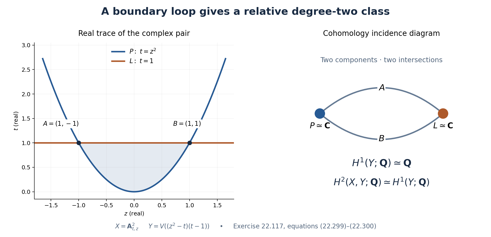
Figure 22.9. Exercise 22.117. The left panel shows the real trace inside the complex affine surface; point labels use the coordinate order \((t,z)\). The right panel records the two contractible components and their two intersection points. The loop represents the one-dimensional \(H^1(Y)\); the relative sequence identifies it with \(H^2(X,Y)\).
The filtration argument is due to Nori. A freely accessible account is Huber and Müller-Stach, Periods and Nori Motives, author edition, Section 2.5.3. The affine replacement above is an explicit form of the affine-space bundle construction commonly called Jouanolou's construction.
Comparison on open varieties, descent, and degree-one periods
In this section a variety is a reduced quasiprojective scheme over \(k=\overline{\mathbf Q}\). Products and inverse images are given their reduced structures. This convention does not change the analytic spaces or their singular cohomology. A comparison object consists of finite-dimensional spaces over \(k\) and \(\mathbf Q\), together with an isomorphism between their extensions to \(\mathbf C\). Maps respect both rational structures and this isomorphism. Kernels and cokernels are taken over the two respective fields. Extension of scalars is exact, so these again are comparison objects.
Lemma 22.118. Removing poles from the logarithmic complex
Let \(U\) be smooth. There is a natural isomorphism
\[ H^q_{\mathrm{dR}}(U/k)\otimes_k\mathbf C \simeq H^q(U(\mathbf C),\mathbf Q)\otimes_{\mathbf Q}\mathbf C. \tag{22.301} \]It is integration on classes represented by differential forms. Both spaces before extension of scalars are finite dimensional.
Proof. Choose a smooth projective compactification \(P\) of \(U\) whose boundary \(D=P\setminus U\) is a divisor with simple normal crossings. This is Corollary 5.2 of the resolution course. Its quasiprojective case starts with projective closure, resolves that closure away from \(U\), and principalizes the boundary away from \(U\). Write \(j:U\hookrightarrow P\).
Here is the algebraic comparison with the logarithmic complex, including the local contraction. Near a point of \(D\), choose étale coordinates \(t_1,\ldots,t_d\) with \(D=V(t_1\cdots t_r)\). The complex \(L=\Omega^\bullet_P(\log D)\) has exterior generators \(dt_i/t_i\) for \(i\le r\), and \(dt_i\) for \(i>r\). Invert the boundary coordinates one at a time. At the step involving \(t=t_i\), other already inverted coordinates are included in the coefficient ring. For every \(m>0\), the quotient
\[ t^{-m}L/t^{-(m-1)}L \simeq (L/tL,\ \bar d-m\theta\wedge-),\qquad \theta=dt/t, \tag{22.302} \]is an isomorphism of complexes of \(k\)-vector spaces, with the differential displayed on the right. Put \(e=t\partial/\partial t\). The coordinate derivation extends through the étale coordinate map. On \(L/tL\), Cartan's identity gives \(\bar d\,\iota_e+\iota_e\bar d=0\): the Lie derivative kills the exterior generators and sends each coefficient into \(tL\). Also \(\theta\wedge\iota_e+\iota_e\theta\wedge=1\). Consequently the differential \(D_m\) on the right of (22.302) satisfies
\[ D_m(-\iota_e/m)+(-\iota_e/m)D_m=1. \tag{22.303} \]The quotient is contractible. Induction on the finite pole order, followed by the union over \(m\), proves \(L\simeq L[t_i^{-1}]\). Doing this for all \(i\le r\) proves
\[ \Omega^\bullet_P(\log D)\simeq j_*\Omega^\bullet_U. \tag{22.304} \]This argument uses pole-order quotients; it requires no expansion of an algebraic coefficient as a Laurent polynomial. The immersion \(j\) is affine: on a boundary chart it is the principal open set \(t_1\cdots t_r\ne0\). Thus its higher direct images on the quasi-coherent terms vanish, and (22.304) computes \(H^*_{\mathrm{dR}}(U/k)\).
On a complex polydisc, the analytic logarithmic complex has local cohomology the exterior algebra on the constant classes \(dt_1/t_1,\ldots,dt_r/t_r\). To verify this, first use the holomorphic Poincaré contraction in the nonboundary coordinates. Expand the remaining holomorphic coefficients into convergent power series in the boundary coordinates. A nonconstant monomial of multiweight \(\nu\in\mathbf N^r\) is contracted by \(\iota_{t_i\partial/\partial t_i}/\nu_i\), choosing the first \(i\) with \(\nu_i>0\). The denominators have absolute value at least one, so these operations preserve convergence on every smaller polydisc. Constant coefficients leave exactly the stated exterior algebra. The punctured polydisc retracts onto \((S^1)^r\); integration of the indicated generators around its coordinate circles is \(2\pi i\). Their exterior products therefore give all its cohomology. This proves that the analytic logarithmic complex computes \(Rj_*\mathbf C_U\). The holomorphic Poincaré argument and the local singular-cochain resolution are the ones used in Lemma 22.107.
Each term of the logarithmic complex is coherent on the projective variety \(P\). The coherent cohomology comparison theorem, applied term by term and then to the bounded hypercohomology spectral sequence, identifies its algebraic and analytic hypercohomology after scalar extension. Coherent cohomology on \(P\) is finite dimensional. Combining the two logarithmic comparisons proves (22.301) and finiteness.
The map just proved to be an isomorphism is the canonical map from algebraic forms to analytic forms, followed by the analytic de Rham comparison. Hence it is independent of \(P\) and is natural for morphisms between smooth varieties. In particular the proof does not require a chosen morphism to extend to the chosen compactifications. \(\square\)
Lemma 22.119. Descent for a proper Čech cover
Let \(p:V\to X\) be proper and surjective, and set \(V_n=V\times_X\cdots\times_XV\), with \(n+1\) factors. Then the augmentation induces a quasi-isomorphism
\[ R\Gamma(X(\mathbf C),\mathbf Q) \simeq \operatorname{Tot}_{n\ge0}R\Gamma(V_n(\mathbf C),\mathbf Q). \tag{22.305} \]The differential in the new degree is the alternating sum of the pullbacks along the maps omitting one factor. The assertion holds after every algebraic base change.
Proof. Use the nonnegative sheaf resolutions for singular cohomology from Lemma 22.107 and form the augmented complex of derived direct images on \(X(\mathbf C)\). Its totalization has only finitely many terms on each diagonal. By the compact-fibre base-change argument (22.288), its stalk at \(x\) is computed by the augmented cosimplicial cochain complex of
\[ F,\ F^2,\ F^3,\ldots,\qquad F=p^{-1}(x)(\mathbf C). \tag{22.306} \]In this calculation the augmentation is the cochain complex of one point. Every map \(V_n\to X\) is proper, so the same base-change argument applies in every degree, compatibly with the face maps.
The compact space \(F\) is nonempty. Fix \(a\in F\). Insertion of \(a\) as the first coordinate gives \(F^n\to F^{n+1}\), including the map from a point to \(F\). On cochains its pullback \(h\) satisfies \(\delta h+h\delta=1\) in the augmented cosimplicial direction. Indeed the term deleting the inserted coordinate is the identity; every other deletion cancels the corresponding term with the opposite sign. This calculation also applies to cohomology in each vertical degree. Thus the augmented first-page rows of the double-complex spectral sequence are exact. The total augmentation is a quasi-isomorphism.
A morphism of sheaf complexes inducing isomorphisms on all stalk cohomology is a quasi-isomorphism. Taking derived global sections proves (22.305). Properness and surjectivity persist under base change, proving the last assertion. The chosen point is used only on a fibre; no local section of \(p\) is assumed. \(\square\)
Lemma 22.120. From Čech descent to hypercover descent
Suppose that a presheaf \(K^\bullet\) of complexes on a site vanishes in all degrees below one fixed integer. Suppose that for every covering and its base changes, the augmented Čech totalization computes \(K^\bullet\) on the covered object. Then every hypercover \(U_\bullet\to X\) computes it:
\[ K^\bullet(X)\simeq \operatorname{Tot}K^\bullet(U_\bullet). \tag{22.307} \]For a family of objects, the expression on the right uses the product over its members.
Proof. Let \(aK^\bullet\) be the associated complex of sheaves. Sheafification is exact. Choose a quasi-isomorphism \(aK^\bullet\to I^\bullet\), with \(I^\bullet\) a bounded-below complex of injective sheaves. Regard its sections as a presheaf complex and form \(A^\bullet=\operatorname{Cone}(K^\bullet\to I^\bullet)\). The complexes \(A^\bullet\) have a uniform lower bound. Their cohomology presheaves have zero associated sheaves, because sheafification of this cone is acyclic.
Injective sheaves have exact augmented Čech complexes: the augmented free abelian sheaf complex of a covering is exact, and applying \(\operatorname{Hom}(-,I^q)\) is exact. Thus \(I^\bullet\), and hence also \(A^\bullet\), satisfies the stated Čech descent condition. We prove by induction that \(H^n(A^\bullet(T))=0\) for every object \(T\). Start below the uniform lower bound. Suppose the assertion is known in all degrees below \(n\), on every object. For a cover \(T_\bullet\to T\), the Čech spectral sequence has first page \(H^q(A^\bullet(T_p))\). All rows with \(q<n\) vanish. Its edge map is therefore injective in degree \(n\):
\[ H^n(A^\bullet(T)) \hookrightarrow H^n(A^\bullet(T_0)). \tag{22.308} \]Any chosen class on the left becomes zero after some cover, since its cohomology presheaf has zero associated sheaf. Apply (22.308) to that cover. The original class is zero, which completes the induction. Consequently \(K^\bullet(T)\to I^\bullet(T)\) is a quasi-isomorphism for every \(T\).
For a hypercover, the augmented free abelian sheaf complex is again exact. This follows by filling a finite simplicial boundary locally and coning each finite-support cycle; the complete construction is Theorem 3.3 of the hypercovering lesson. Applying the injectives \(I^q\) shows \(I^\bullet(X)\simeq\operatorname{Tot}I^\bullet(U_\bullet)\), exactly as in Theorem 4.1 there. Replace each evaluated \(I^\bullet\) by \(K^\bullet\). The resulting total maps are quasi-isomorphisms: after a fixed shift the double complexes lie in the first quadrant, so the spectral sequences converge with finite diagonals. This proves (22.307). \(\square\)
Apply this lemma on the category of varieties with the pretopology whose coverings are the single proper surjective morphisms. They contain identities and are stable under composition and base change. Take for \(K^\bullet(T)\) a functorial singular cochain complex of \(T(\mathbf C)\). Lemma 22.119 supplies Čech descent. We obtain
\[ H^*(X(\mathbf C),\mathbf Q) \simeq H^*\!\left(\operatorname{Tot} R\Gamma(U_\bullet(\mathbf C),\mathbf Q)\right) \tag{22.309} \]for every proper hypercover. This application uses the associated complex \(aK^\bullet\); it does not identify that complex with the constant sheaf on the proper-cover site.
Theorem 22.121. De Rham comparison for varieties and pairs
Every variety \(X\) has algebraic de Rham cohomology defined by a smooth proper hypercover. It is independent of that choice, is contravariantly functorial, and agrees with the usual de Rham cohomology for smooth \(X\). For a closed subvariety \(Y\subset X\), the relative complex is the shifted cone of restriction. There are natural comparison isomorphisms
\[ H^q_{\mathrm{dR}}(X,Y)\otimes_k\mathbf C \simeq H^q(X(\mathbf C),Y(\mathbf C);\mathbf Q) \otimes_{\mathbf Q}\mathbf C. \tag{22.310} \]They respect the long exact sequences of pairs and triples, and finite closed filtrations. All these groups are finite dimensional.
Proof. We first give the construction and its refinements. A proper hypercover has a proper surjective map to the matching object in each degree. In degree zero resolve the irreducible components of \(X\) and take their disjoint union. Resolution is supplied by Theorem 4.8 of the resolution course. Suppose the smooth levels below \(n\) have been constructed. Their matching object is a finite limit of varieties proper over \(X\). Resolve its reduced irreducible components and use their disjoint union as the new nondegenerate part of level \(n\). Add a copy of each earlier nondegenerate part for every surjection \([n]\twoheadrightarrow[j]\), \(j<n\). These are the prescribed degenerate simplices. Their face maps are determined by factoring compositions of increasing maps as a surjection followed by an injection. This factorization is unique, so the simplicial identities hold. The map from the new level to the matching object is proper and surjective. This constructs a split smooth proper hypercover \(U_\bullet\to X\).
There is a relative version of the construction. Given a hypercover \(V_\bullet\to Z\) and \(f:X\to Z\), resolve in degree \(n\) the relative matching target
\[ M_nU\times_{M_n(X\times_ZV_\bullet)} (X\times_ZV_n). \tag{22.311} \]Its projection to \(M_nU\) is proper and surjective. With the same degenerate copies, this gives a smooth hypercover of \(X\) and a map to \(V_\bullet\). In particular two smooth hypercovers of \(X\) have a common smooth refinement: apply the construction to their product over \(X\). Any two parallel maps become simplicially homotopic after a further hypercover refinement. To see this, use the path object \(V_\bullet^{\Delta^1}\to V_\bullet^{\partial\Delta^1}\); its relative matching maps are proper covers by successive filling of the finitely many simplices of the prism. Pull it back along the two maps and then make it smooth by (22.311). The filling and prism identities are proved in Theorem 6.1 of the hypercovering lesson. That proof uses only stability of coverings under finite products and base change, so applies to proper covers.
For smooth \(T\), choose the functorial cochain model of \(R\Gamma(T,\Omega^\bullet_T)\) obtained by resolving its sheaf complex. For example, the resolution by products of stalks, with its coaugmentation and successive cokernels, gives a Godement model. Pullback of germs and of forms gives the natural maps for a morphism; the cosimplicial version and its total complex preserve composition. Apply this simultaneously to all levels and set
\[ R_{\mathrm{dR}}(X) =\operatorname{Tot}_{p\ge0} R\Gamma(U_p,\Omega^\bullet_{U_p}). \tag{22.312} \]The total differential is the alternating face differential plus \((-1)^p\) times the internal differential in level \(p\). All complexes are bounded below. Termwise application of Lemma 22.118, followed by (22.309), gives comparison with the singular cochain complex of \(X(\mathbf C)\). A refinement consequently induces a quasi-isomorphism in (22.312): after tensoring with \(\mathbf C\) it does so, and \(\mathbf C/k\) is faithfully flat. The common refinements and prism homotopies just constructed prove independence, functoriality, and compatibility of compositions. For smooth \(X\), the constant hypercover \(X_\bullet=X\) is available and recovers the ordinary complex.
For a pair choose a hypercover of \(X\), and then construct a relative smooth hypercover of \(Y\) mapping to it by (22.311). Form the shifted cone of the resulting map of cochain complexes. With the convention
\[ \operatorname{Cone}(A\to B)[-1]^n=A^n\oplus B^{n-1}, \qquad d(a,b)=(da,\ f(a)-db), \tag{22.313} \]this agrees with Lemma 22.101. The same refinements and homotopies of diagrams give independence for pairs. For a finite chain of closed inclusions, start with its largest member and repeat the relative construction downwards. All restrictions then commute as actual cochain maps. The cone identities give the exact sequences for triples and the filtered exact couples. Their comparison maps are the maps of these same cones, so respect the boundary maps, not just the dimensions. This also supplies compatible models for the commutative squares used below: after choosing the top target, use relative matching targets for the two intermediate objects and their fibre product for the fourth object.
In each fixed total degree, only finitely many levels of the hypercover contribute. Each has finite-dimensional cohomology by Lemma 22.118. The resulting first-quadrant spectral sequence, and then the relative exact sequence, prove finiteness. \(\square\)
Proposition 22.122. Proper modifications and normalization of a pair
Suppose that \(p:\widetilde X\to X\) is proper and is an isomorphism outside a closed subvariety \(Z\). Set \(E=p^{-1}Z\). In both realizations the square gives an exact triangle
\[ R(X)\longrightarrow R(\widetilde X)\oplus R(Z) \longrightarrow R(E)\longrightarrow R(X)[1], \tag{22.314} \]where the middle arrow is the difference of the restrictions. In particular pullback is an isomorphism of comparison objects
\[ H^q(X,Z)\simeq H^q(\widetilde X,E). \tag{22.315} \]Proof. First use analytic sheaf cohomology. Off \(Z\), the assertion follows because \(p\) is an isomorphism. At a point of \(Z\), proper base change (22.288) identifies the asserted triangle with
\[ \mathbf Q\longrightarrow R\Gamma(F,\mathbf Q)\oplus\mathbf Q \longrightarrow R\Gamma(F,\mathbf Q), \qquad F=p^{-1}(z). \tag{22.316} \]The first map is \(a\mapsto(a|_F,a)\), and the second is \((b,a)\mapsto b-a|_F\). This is a split exact triangle, including when the fibre is empty. Thus (22.314) holds on all stalks and hence on derived global sections. The induced map between the two relative cones is a quasi-isomorphism, proving (22.315) on the Betti side. Use the compatible models from Theorem 22.121 for the algebraic square. Its map of relative cones becomes the one just proved after extension to \(\mathbf C\). Faithful scalar extension proves (22.315) algebraically as well and gives (22.314). Naturality gives the asserted compatibility of the two realizations.
In particular, let \(B\) be a reduced affine curve and let \(A\subset B\) be finite and contain its singular locus. The normalization \(C\to B\) is finite, is an isomorphism over \(B\setminus A\), and \(C\) is a disjoint union of smooth affine curves and possibly isolated points. Here is the finiteness argument. On each irreducible component, Noether normalization makes its coordinate ring \(R\) finite over \(k[t]\). Its function field \(K\) is finite separable over \(k(t)\). Choose a \(k(t)\)-basis \(a_1,\ldots,a_d\) in \(R\). The trace matrix \((\operatorname{Tr}_{K/k(t)}(a_i a_j))_{ij}\) has entries in \(k[t]\) and nonzero determinant \(\Delta\). Indeed separability splits the field algebra after a finite extension into a product of fields with the coordinatewise trace pairing, so the trace pairing is nondegenerate. Traces of integral elements are integral, and \(k[t]\) is integrally closed. If \(z\) is integral over \(k[t]\), then \(\operatorname{Tr}(z a_i)\in k[t]\) for every \(i\). Solving this trace system places \(z\) in \(\Delta^{-1}\sum_i k[t]a_i\). Its integral closure is consequently a submodule of a finite free \(k[t]\)-module, hence is finite. Transitivity of integrality identifies it with the normalization of \(R\). This proves finiteness, component by component.
The local rings of a normal curve at its closed points are regular by the DVR characterization, Theorem 1.2. Regularity is smoothness here by the characteristic-zero Jacobian criterion, Theorem 3.2. Conversely a smooth curve is normal by the same DVR characterization, so normalization is an isomorphism over the smooth locus. A finite morphism to an affine scheme is affine, and the inverse image of the finite set \(A\) is finite. Thus with \(D=p^{-1}A\), (22.315) gives
\[ H^1(B,A)\simeq H^1(C,D). \tag{22.317} \]Isolated points contribute zero to this relative group when they are included in \(A\). \(\square\)
Theorem 22.123. General cohomological one-periods come from curves
Every period of \(H^1(X,Y)\), for a variety and a closed subvariety over \(k\), is a finite \(k\)-linear combination of periods of smooth affine curves relative to finite sets of algebraic points. The converse inclusion holds. In particular every such period is a period of a 1-motive, or a finite sum of such periods.
Proof. The affine replacement in Proposition 22.116 gives a map of pairs \((T,Y_T)\to(X,Y)\) with \(T\) affine. It is a homotopy equivalence of analytic pairs. Its algebraic de Rham pullback is also an isomorphism: Theorem 22.121 identifies it after scalar extension with the Betti isomorphism, and scalar extension is faithful. This argument applies even when the base and the closed subset are singular. We may therefore assume \(X\) affine.
Choose compatible filtrations as in Proposition 22.115, and put \(X_1=X\) if \(\dim X<1\). The vanishing of the successive relative groups in degrees other than their filtration index gives
\[ H^1(X,X_1)=0,\qquad H^0(Y,Y_0)=0 \tag{22.318} \]in both realizations. For the first assertion, use the exact sequences of the triples \(X_i,X_{i-1},X_1\) successively for \(i\ge2\). For the second, the injections \(H^0(Y_i)\to H^0(Y_{i-1})\) show that \(Y_0\) meets every connected component of \(Y\). The case \(Y=\varnothing\) has zero groups throughout.
The map of pairs \((X_1,Y_0)\to(X,Y)\) gives
\[ H^1(X,Y)\hookrightarrow H^1(X_1,Y_0). \tag{22.319} \]For completeness, the relative cone of this restriction is the shifted cone of \(R(X,X_1)\to R(Y,Y_0)\). Its degree-one cohomology lies in an exact sequence between \(H^0(Y,Y_0)\) and \(H^1(X,X_1)\), so is zero by (22.318). The long exact sequence of that cone proves injectivity. This reasoning takes place in the compatible cochain models of Theorem 22.121.
Since \(Y_0\subset X_0\) are finite, \(H^1(X_0,Y_0)=0\): restriction of functions \(H^0(X_0)\to H^0(Y_0)\) is surjective, and finite sets have no higher cohomology. The exact sequence of the triple \(X_1,X_0,Y_0\) therefore gives a surjection
\[ H^1(X_1,X_0)\twoheadrightarrow H^1(X_1,Y_0). \tag{22.320} \]Equations (22.319) and (22.320) exhibit \(H^1(X,Y)\) as a subquotient of \(H^1(X_1,X_0)\) in the category of comparison objects. All maps are actual restrictions or boundary maps. In particular the argument retains the extensions in the relative comparison structure.
The open \(X_1\setminus X_0\) is smooth by construction of the filtration. Normalize its curve components. Proposition 22.122 replaces \(H^1(X_1,X_0)\) by \(H^1(C,D)\) for a disjoint union of smooth affine curves and finite endpoint sets. A component without endpoints is allowed.
Here is the linear algebra relating this assertion to periods. For an injection \(A\hookrightarrow B\) of comparison objects, a de Rham vector of \(A\) is a de Rham vector of \(B\), and a rational functional on \(A_B\) extends to \(B_B\) by extending a rational basis. Its period is therefore a period of \(B\). For a quotient \(B\twoheadrightarrow Q\), lift the de Rham vector over \(k\) and pull back the rational functional. Again the pairing is unchanged. Applying these two facts to (22.319)–(22.320) proves the claimed containment of period spaces. Disjoint unions give sums. The converse follows by taking \((X,Y)=(C,D)\).
Finally, Theorem 22.111 identifies every smooth curve-pair comparison with the realization of its relative generalized-Jacobian 1-motive. For a connected component with no endpoints, choose one algebraic point \(b\). Its relative exact sequence identifies \(H^1(C)\) with \(H^1(C,\{b\})\), so the same theorem applies with lattice rank zero. Taking their direct sum combines any finite sum of periods into one 1-motive period. \(\square\)
Theorem 22.98 consequently describes the relations between the resulting 1-motive periods by morphisms and exact sequences of 1-motives. A presentation using only morphisms and boundary maps of algebraic varieties is a further statement about generators of those relations; equality of the numerical period spaces alone does not establish it.
Exercise 22.124. A node, an exact form, and a logarithm
Let \(B\) be the affine cubic \(y^2=x^2(x+1)\), with the smooth point \((3,6)\) removed, and let \(o=(0,0)\). Compute its degree-one comparison using normalization. Exhibit an algebraic period arising from a form that is exact upstairs.
Solution. The normalization is
\[ C=\mathbf A^1_u\setminus\{2\},\qquad x=u^2-1,\quad y=u(u^2-1). \tag{22.321} \]Indeed these formulas satisfy the cubic equation, and away from the node the inverse is \(u=y/x\). The element \(u\) satisfies the monic equation \(u^2=x+1\), so the map before removing the indicated point is finite. Its smooth source is normal and has the same function field, proving the assertion. The node has inverse image \(D=\{-1,1\}\). The curve \(B\) is connected, so its relative sequence for the single point \(o\) gives
\[ H^1(B)\simeq H^1(B,\{o\})\simeq H^1(C,D). \tag{22.322} \]Put \(\xi=du/(u-2)\), \(q=(u+1)/2\). Lemma 22.101 gives the de Rham basis \([\xi,0],[dq,0]\). For relative cycles take a positive loop \(\lambda\) around \(2\), based at \(-1\), and the real segment \(\rho\) from \(-1\) to \(1\). Under normalization the latter becomes a closed loop through the node. Their period matrix is
\[ \begin{pmatrix} \displaystyle\int_\lambda\xi& \displaystyle\int_\rho\xi\\ \displaystyle\int_\lambda dq& \displaystyle\int_\rho dq \end{pmatrix} = \begin{pmatrix}2\pi i&-\log3\\0&1\end{pmatrix}. \tag{22.323} \]Along the real segment the primitive \(\log(2-u)\) has derivative \(1/(u-2)\), so its endpoint difference is \(-\log3\). The second row is the endpoint difference of \(q\); it is \((0,1)\). The determinant \(2\pi i\) proves nondegeneracy.
The form \(dq\) is exact on \(C\), but its relative class is nonzero because \(q(1)-q(-1)=1\). It cannot be killed by the differential of a function having one value at the node: the two values of \(q\) on its inverse image are different. In the relative complex the coboundary is \((dq,q|_D)\), not \((dq,0)\). This accounts for the algebraic period \(1\) in the singular curve. The associated 1-motive is \([\mathbf Z\to\mathbf G_m]\), with \(1\mapsto(1-2)/(-1-2)=1/3\).
Proposition 22.125. A geometric pair for every 1-motive
Conversely, every 1-motive period is a cohomological one-period. Thus the \(k\)-linear spaces of general cohomological one-periods, smooth curve-pair periods, and 1-motive periods coincide.
Proof. Choose an integral representative \(M=[L\to G]\) and a basis \(e_1,\ldots,e_r\) of \(L\). Let \(E=E(M)\), and put
\[ D_M=\{0,\widetilde u(e_1),\ldots,\widetilde u(e_r)\} \subset E(k). \tag{22.324} \]These points are distinct: the projection \(E=G^\natural\times L_k\to L_k\) in (22.227) sends them to \(0,e_1,\ldots,e_r\). The group \(E\) is smooth and quasiprojective, as in Theorem 22.45.
For a relative path chain in \(E\), its endpoint coefficients give an element of \(L\); integrating invariant forms gives its lift in \(\operatorname{Lie}E\). The exponential of that lift is the corresponding sum of the points \(\widetilde u(e_j)\). This defines a map
\[ H_1(E,D_M;\mathbf Q)\longrightarrow V_B(M). \tag{22.325} \]On absolute homology it is the period-lattice isomorphism for \(E\to G\), whose vector fibres are contractible. On the endpoint quotient it is the isomorphism sending the \(r\) endpoint differences to the chosen basis of \(L\). The relative homology sequence and (22.235) therefore prove that (22.325) is an isomorphism.
Every invariant one-form on the commutative group \(E\) is closed. Sending it to \([\omega,0]\) gives a \(k\)-linear map \(\operatorname{Lie}(E)^\vee\to H^1_{\mathrm{dR}}(E,D_M)\). Its integration pairing with (22.325) is exactly the pairing of Theorem 22.94, by the construction of the lift. That pairing is nondegenerate over \(\mathbf C\). The comparison in Theorem 22.121 is also nondegenerate; hence this de Rham map becomes an isomorphism over \(\mathbf C\), and is an isomorphism over \(k\). The two isomorphisms identify every period of \(M\) with a period of the displayed geometric pair. Combine this with Theorem 22.123. \(\square\)
The logarithmic and hypercover descriptions are also developed in Huber and Müller-Stach, Periods and Nori Motives, free author edition, Sections 3.2–3.3. The reduction of cohomological one-periods to curve periods appears in Huber and Wüstholz, Transcendence and linear relations of 1-periods, free author text, Proposition 12.5.
Geometric maps and relations between curve periods
Let \(\mathcal D\) have vertices \((C,Z)\), where \(C\) is a smooth affine curve over \(k=\overline{\mathbf Q}\), possibly disconnected, and \(Z\subset C(k)\) is finite. Its arrows are morphisms of pairs. Put
\[ T(C,Z)=H_1(C(\mathbf C),Z;\mathbf Q),\qquad W(C,Z)=H^1_{\mathrm{dR}}(C,Z)^\vee. \tag{22.326} \]These are covariant representations of the diagram. Their comparison identifies \(T\otimes_{\mathbf Q}\mathbf C\) with \(W\otimes_k\mathbf C\). Write \(A(C,Z)\) for the 1-motive of Theorem 22.111, taking the direct sum over connected components. A component without endpoints is handled by its rank-zero lattice and Theorems 22.109–22.110. Thus \(T(C,Z)=V_B(A(C,Z))\).
The generalized Jacobian is covariant for curve maps. Here is the construction on framed bundles. A nonconstant map extends to a finite map of smooth projective completions. It is flat, since a finite torsion-free module over each target DVR is free. The norm of a line bundle is \(\det(f_*L)\otimes\det(f_*\mathcal O)^{-1}\). Locally trivializing \(L\) shows that its transition functions are the determinants of multiplication by the original units. This proves multiplicativity of the norm and its compatibility with base change. Every inverse image of a target boundary point is a source boundary point. The prescribed source frames therefore induce norm frames there. A lift of a frame to a thickened fibre does not affect the answer: changing the lift by \(1\) plus a nilpotent changes its multiplication determinant by one. Norm takes a divisor to its pushforward, so it defines \(J(f)\) and the map on endpoint divisors. A constant map induces zero on the connected generalized Jacobian. These constructions, component by component, give \(A(f)\). Lifting paths in the Abel maps shows that \(V_B(A(f))=T(f)\), using the endpoint and integral descriptions of Theorem 22.111.
Lemma 22.126. Finite diagrams detect formal period relations
For a finite subdiagram \(F\subset\mathcal D\), let
\[ E_F=\left\{(a_v)_v: a_v\in\operatorname{End}_{\mathbf Q}T(v),\ a_wT(f)=T(f)a_v\text{ for every }f:v\to w\text{ in }F\right\}. \tag{22.327} \]Let \(P_F\) be the \(k\)-vector space of symbols \([v;\sigma,\omega]\), bilinear over \(\mathbf Q\) in \(\sigma\in T(v)\) and over \(k\) in \(\omega\in W(v)^\vee\), with the relations
\[ [w;T(f)\sigma,\omega]=[v;\sigma,W(f)^\vee\omega]. \tag{22.328} \]After extension to \(\mathbf C\), the dual of \(P_F\) is \(E_F\otimes_{\mathbf Q}\mathbf C\). The pairing is
\[ \bigl([v;\sigma,\omega],(a_u)_u\bigr) \longmapsto \omega(a_v\sigma), \tag{22.329} \]where comparison is used to view the two vectors in the same complex vector space.
Proof. Before imposing (22.328), the complexified symbol space is \(\bigoplus_v T(v)_{\mathbf C}\otimes T(v)_{\mathbf C}^{\vee}\). Its dual is the product of the endomorphism spaces, by the evaluation pairing in (22.329). A functional annihilates the relation for \(f\) precisely when \(\omega(a_wT(f)\sigma-T(f)a_v\sigma)=0\) for all \(\sigma,\omega\), that is, when the indicated endomorphisms commute with \(T(f)\). These are finitely many rational linear equations in their matrix entries. Taking their kernel commutes with extension from \(\mathbf Q\) to \(\mathbf C\). This proves the identification. In particular (22.329) separates the elements of \(P_F\otimes_k\mathbf C\). \(\square\)
Call a rational subspace \(K\subset T(v)\) preserved on a finite diagram if some finite \(F\) containing \(v\) satisfies \(a_vK\subset K\) for every \(a\in E_F\). Enlarging \(F\) preserves this property. Finite sums and intersections of such subspaces also have it: take the union of their witnessing diagrams. The image and inverse image under a diagram map have the property whenever the corresponding subspace does. The same holds for linear combinations of parallel diagram maps, and for inverses of diagram maps that induce isomorphisms on \(T\). Each assertion follows by commuting the endomorphisms through the indicated map.
Proposition 22.127. A kernel criterion for geometric relations
Suppose that for every morphism of rational 1-motives \(\alpha:A(C,Z)\to M\), the subspace
\[ K_\alpha=\ker\{T(C,Z)\xrightarrow{V_B(\alpha)}V_B(M)\} \tag{22.330} \]is preserved on a finite diagram. Then every \(k\)-linear relation between smooth affine curve-pair periods follows from bilinearity and morphisms of those pairs.
Proof. A finite sum of periods is one period of a disjoint union of the curve pairs. Indeed the homology vector is the sum of the component vectors, and the de Rham vector is the tuple of their coefficient-weighted forms. Expand in the homology variable and use the inclusions of the components in (22.328).
Suppose that this single period \(\omega(\sigma)\) is zero. Theorem 22.96 gives a sub-1-motive \(M_1\subset A(C,Z)\) containing \(\sigma\) in its Betti realization, such that \(\omega\) annihilates its de Rham realization. Apply the assumed property to the quotient \(\alpha:A(C,Z)\to A(C,Z)/M_1\). Exactness gives \(K_\alpha=V_B(M_1)\). On a witnessing finite diagram, every \(a_{(C,Z)}\) sends \(\sigma\) into \(K_\alpha\). After complexification, \(\omega\) annihilates all these images. Lemma 22.126 says that the formal symbol is zero in \(P_F\otimes_k\mathbf C\). Faithful extension of scalars gives zero already in \(P_F\). This is a finite combination of (22.328) and bilinearity, as asserted. \(\square\)
Lemma 22.128. Endpoint coordinates are geometric maps
The kernel of any morphism \(A(C,Z)\to [L\to0]\) is preserved on a finite diagram. Here the kernel means the Betti subspace (22.330).
Proof. Identify \(V_B([L\to0])\) with \(L_{\mathbf Q}\). The morphism factors through the endpoint map
\[ T(C,Z)\longrightarrow \ker\{\mathbf Q^Z\longrightarrow\mathbf Q^{\pi_0(C)}\}. \tag{22.331} \]For each \(z\in Z\), the Chinese remainder theorem in the affine coordinate ring of \(C\) gives a regular function \(f_z\) which is one at \(z\) and zero at the other points of \(Z\). This defines a morphism
\[ (C,Z)\longrightarrow(\mathbf A^1,\{0,1\}). \tag{22.332} \]Identify the target homology with \(\mathbf Q\) by the path from zero to one. Under this identification the map is the coefficient of \(z\) in the boundary: the sum of coefficients in the boundary on each connected component is zero.
Extend each coordinate of the linear map from the kernel in (22.331) to all of \(\mathbf Q^Z\). It is a rational linear combination of these coefficient maps. All maps (22.332) have the same target, whose endomorphism in any family (22.327) is a scalar. Their linear combinations therefore intertwine that same scalar with the endomorphism of \(T(C,Z)\). The common kernel is preserved. Only finitely many maps are involved. This also handles disconnected \(C\); if \(Z\) is empty the whole map is zero. \(\square\)
Lemma 22.129. Lattice images and principal divisors
For every morphism \(\beta:[L\to0]\to A(C,Z)\), its Betti image is preserved on a finite diagram.
Proof. We will express this image using finite curve diagrams and the one-dimensional space \(T(\mathbf A^1,\{0,1\})\).
We first recall the finite-quotient homology calculation with its topological justification. Let \(c:E\to B\) be a finite Galois map of smooth affine curves with group \(H\), let \(S\subset B\) be finite, and set \(F=c^{-1}S\). Then
\[ c_*:H_1(E,F;\mathbf Q)^H \xrightarrow{\ \sim\ }H_1(B,S;\mathbf Q). \tag{22.333} \]Extend to smooth projective models. Triangulate the quotient compact surface with all branch points, punctures, and points of \(S\) as vertices. Lift the triangles; the local form of a branched map is \(z\mapsto z^e\), so the lifted sectors give an equivariant cell decomposition. Remove invariant small discs about the punctures and retract their punctured collars onto the new boundary circles. After subdivision the action fixes each stabilized cell pointwise. As in (22.265), cochains on the quotient pair are the invariant cochains upstairs. Averaging over \(H\) is exact over \(\mathbf Q\). This proves the cohomological version of (22.333). Duality of the finite cellular complexes, together with averaging, gives the asserted pushforward isomorphism on invariant homology. The invariant subspace is preserved by every family (22.327) that includes the finitely many deck maps. The inverse of (22.333), on that subspace, therefore commutes with these families too.
Now assume \(C\) connected and write \(C=\overline C\setminus S_\infty\). The set \(S_\infty\) is nonempty because \(C\) is affine. The framed-line-bundle construction in Proposition 22.108 identifies a degree-zero divisor \(\ell\), supported on \(Z\), with zero in \(J(C)\) precisely when
\[ \ell=\operatorname{div}(f),\qquad f|_{S_\infty}=1 \tag{22.334} \]for a rational function \(f\) on \(\overline C\). Indeed \(\mathcal O(\ell)\) must be trivial, and the values of its trivializing function on the boundary must all coincide; multiplying by one constant normalizes them to one.
For a nonzero divisor \(\ell\) as in (22.334), put \(t=f/(f-1)\). This defines a finite map \(\overline C\to\mathbf P^1\). Its restriction
\[ E_0=\overline C\setminus t^{-1}(\infty) \longrightarrow\mathbf A^1_t \tag{22.335} \]is finite, and \(E_0\subset C\). The fibre over zero is the zero divisor of \(f\), and the fibre over one is its pole divisor, with their multiplicities. Thus their difference, fibre zero minus fibre one, is \(\ell\).
Take the normal closure of this finite function-field extension and normalize \(\mathbf A^1\) in it. Finiteness and smoothness follow from the trace and DVR arguments in Proposition 22.122. We obtain a finite Galois cover \(c:E\to\mathbf A^1\). Its conjugate maps \(f_1,\ldots,f_d:E\to E_0\subset C\) are regular everywhere. Algebraically, the integral coordinate functions of \(E_0\) map to elements of the normal coordinate ring of \(E\). Set \(F=c^{-1}\{0,1\}\); each \(f_i(F)\) lies in \(Z\).
For the invariant class \(\xi\) with \(c_*\xi=[0,1]\), consider
\[ b_\ell=-\sum_{i=1}^d(f_i)_*\xi\in H_1(C,Z;\mathbf Q). \tag{22.336} \]Its boundary is \(\ell\). To check the multiplicities, in a fibre of the Galois cover the stabilizer of a point has order equal to its ramification index. An invariant zero-chain of total coefficient one therefore has coefficient \(e_x/\deg c\) at \(x\). Summing its images under the \(d\) conjugate maps gives the fibre of \(E_0\to\mathbf A^1\) with its ramification multiplicities. This gives (22.336) the stated boundary, including at branch values.
The morphism \(\sum_i a(f_i(-)):E\to J(C)\), with \(a\) the Abel map, is constant. Its value is the class of a fibre divisor of \(t\); differences of these divisors are principal with value one at \(S_\infty\). Equivalently it descends to a morphism \(\mathbf A^1\to J(C)\), and such a morphism is constant: its abelian quotient extends to \(\mathbf P^1\) and is constant by the invariant form argument in Proposition 22.93; the remaining map to a torus has constant invertible polynomial coordinates. Integrating invariant forms on \(J(C)\) in (22.336) consequently gives zero. Under the Betti description \(V_B(A(C,Z))=\{(\ell,v):\exp(v)=u(\ell)\}\), the class \(b_\ell\) is exactly \((\ell,0)\).
A basis vector of \(L_{\mathbf Q}\), after clearing denominators and killing finite torsion, maps to a divisor of the form (22.334). The construction (22.333)–(22.336) realizes its image by diagram maps, a sum of such maps, and the inverse of the isomorphism on the invariant subspace. It thus intertwines the endomorphisms with the scalar on the single object \((\mathbf A^1,\{0,1\})\). Do this for each basis vector and each connected component. Taking the finite union of these diagrams shows that their total image is preserved. Zero divisors contribute the zero map. \(\square\)
Lemma 22.130. Families of generalized-Jacobian points are divisors
Let \(D=\overline D\setminus S\) be a connected smooth affine curve, \(b\in D(k)\), and \(B\) an affine variety. Every morphism \(\phi:B\to J(D)\) is represented by a finite correspondence from \(B\) to \(D\). More precisely, for a sufficiently large integer \(n\), there is an effective divisor \(\mathcal E\subset B\times D\), finite over \(B\), such that
\[ \phi(v)=[\mathcal E_v-nb]\quad\text{in }J(D) \quad(v\in B(k)). \tag{22.337} \]The fibre is taken with its scheme multiplicities. If \(B\) is a smooth curve, this is a finite correspondence in the usual sense of a sum of integral curves finite and surjective over its components.
Proof. By Proposition 22.108, pullback of the universal framed bundle gives a degree-zero line bundle \(\mathcal L\) on \(\overline D\times B\) with compatible frames at the points of \(S\). To make the relative framing literal, tensor by the inverse of its restriction to one fixed point \(s_0\in S\), pulled back from \(B\). The ratio frames then give trivializations along every \(s\times B\). This base twist does not change the represented point of \(J(D)\).
Let \(g\) be the genus, and choose \(n>|S|+2g-2\), with \(n\ge1\). On every fibre the line bundles \(\mathcal L(nb)\) and \(\mathcal L(nb-S)\) have vanishing \(H^1\), by Serre duality and negative degree of their dual canonical bundles. The high-degree cohomology and base-change calculation in Proposition 7.1 of the Picard lesson therefore gives vector bundles and an exact evaluation sequence on \(B\):
\[ 0\longrightarrow p_*\mathcal L(nb-S) \longrightarrow p_*\mathcal L(nb) \longrightarrow\mathcal O_B^{\,S}\longrightarrow0. \tag{22.338} \]Here the canonical section of \(\mathcal O(nb)\) is nonzero on \(S\), so the frames identify the last term as written. Since \(B\) is affine, global sections of this sequence are exact. Choose a section whose value is one in every boundary frame.
Its zero scheme \(\mathcal E\) avoids \(S\times B\) and is not an entire fibre, because \(S\ne\varnothing\). It is a relative effective Cartier divisor of degree \(n\), by the fibrewise Cartier argument in the same Picard proposition. In particular it is proper with zero-dimensional fibres and is finite over \(B\). The section identifies \(\mathcal O(\mathcal E)\) with \(\mathcal L(nb)\), respecting the frames on \(S\), which proves (22.337). Thus the finite correspondence is \(\mathcal E-n(B\times b)\). For smooth curve \(B\), flatness of this relative divisor excludes vertical components, giving the last assertion.
Taking \(B=\operatorname{Spec}k\) also proves that the Abel images of \(D(k)\) generate \(J(D)(k)\). In particular a homomorphism out of \(J(D)\) is determined by its composite with the Abel map. \(\square\)
Lemma 22.131. Splitting a correspondence into curve maps
Let \(\alpha:J(C)\to J(D)\) be a homomorphism for connected smooth affine curves, and \(Z\subset C\) finite. There is a finite surjective map of smooth affine curves \(r:C'\to C\), with \(Z'=r^{-1}Z\), and maps \(f_i:C'\to D\), such that
\[ \alpha\,J(r)=\sum_i n_iJ(f_i),\qquad n_i\in\mathbf Z. \tag{22.339} \]The map \(T(C',Z')\to T(C,Z)\) is surjective.
Proof. Choose a base point on \(C\) and apply Lemma 22.130 to the composite \(C\to J(C)\xrightarrow{\alpha}J(D)\). Split its effective finite correspondence by taking a normal closure of the generic finite algebra over \(k(C)\), then normalize \(C\) in this field. The arguments of Proposition 22.122 make the result a smooth affine curve finite over \(C\). Each generic branch extends everywhere to \(D\): the correspondence is finite over \(C\), and its coordinate functions are integral in the normal ring upstairs. Include the constant negative correspondence at \(b\) with its integer multiplicity. Thus the pulled-back correspondence is a sum of graphs of maps \(f_i\). Multiple components are counted with their integer multiplicities.
The corresponding maps to \(J(D)\) agree on Abel images up to the constant value at the chosen base point. Taking differences removes that constant. The last assertion of Lemma 22.130 then proves (22.339). Surjectivity on relative homology follows from (22.333), since the normal closure was chosen Galois. \(\square\)
In particular kernel preservation for a map \(A(C',Z')\to M\) implies it for the induced map from \(A(C,Z)\), whenever the first map is its composite with \(A(r)\). The latter kernel is the image of the former under the surjection on Betti realizations, and all maps involved belong to a finite curve diagram.
The same conclusion holds for disconnected curves. Write \(C=\coprod_a C_a\) and \(D=\coprod_b D_b\). A homomorphism \(J(C)\to J(D)\) is a finite matrix of homomorphisms \(J(C_a)\to J(D_b)\). For each \(a\), take one finite Galois extension of \(k(C_a)\) splitting all the correspondences for that row, and normalize \(C_a\) in it. Their disjoint union is a finite cover \(C'\to C\) surjective on relative homology. A branch map from one component \(C'_a\) to \(D_b\) extends to a map from all of \(C'\) to \(D\): on every other component choose a constant map to a fixed point of \(D_b\). Constant maps induce zero on generalized Jacobians. Summing these extended maps with their integer coefficients therefore gives (22.339) for the original matrix homomorphism. This construction allows the homomorphism to mix distinct components.
Exercise 22.132. A geometric origin for \(2\log2-\log4=0\)
Take \(C=\mathbf G_m\), \(Z=\{1,2,4\}\), and \(\ell=2[2]-[1]-[4]\). Construct explicitly the cover and invariant class in Lemma 22.129.
Solution. The function and its associated cover are
\[ f(x)=\frac{(x-2)^2}{(x-1)(x-4)},\qquad t=\frac{f}{f-1}=\frac{(x-2)^2}{x}. \tag{22.340} \]The values of \(f\) at zero and infinity are one, and \(\operatorname{div}(f)=\ell\). The map \(t:\mathbf G_m\to\mathbf A^1\) is a degree-two Galois map with involution \(\tau(x)=4/x\). Its fibres at zero and one are \(2[2]\) and \([1]+[4]\), respectively. The other finite branch value is \(-8\), coming from \(x=-2\).
Let \(\rho_1\) be the positive-real path from \(2\) to \(1\), and let \(\rho_4=\tau_*\rho_1\), from \(2\) to \(4\). Then \(\xi=(\rho_1+\rho_4)/2\) is invariant and \(t_*\xi\) is the path class from zero to one. Formula (22.336) becomes
\[ b_\ell=-(1+\tau_*)\xi=-\rho_1-\rho_4,\qquad \int_{b_\ell}\frac{dx}{x} =-\log(1/2)-\log2=0. \tag{22.341} \]In the basis \((\lambda,\gamma_2,\gamma_4)\) of relative homology, where \(\lambda\) is a positive loop about zero and \(\gamma_a\) is the positive-real path from \(1\) to \(a\), the matrices are
\[ \tau_*= \begin{pmatrix}-1&0&0\\0&1&0\\0&-1&-1\end{pmatrix}, \qquad t_*=\begin{pmatrix}0&-1&0\end{pmatrix}. \tag{22.342} \]The invariant line is generated by \((0,2,-1)\), representing \(b_\ell\). Thus every endomorphism commuting with the geometric involution preserves this lattice line. Its zero logarithmic period is precisely \(2\log2-\log4\).
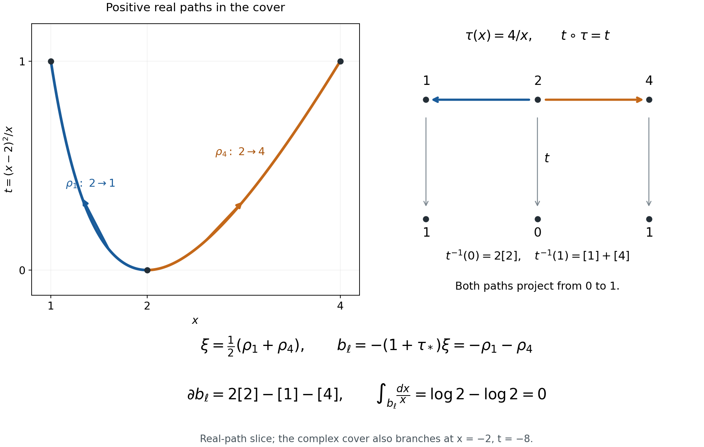
Figure 22.10. The plotted paths lie on the positive real axis of \(\mathbf G_m(\mathbf C)\); the diagram is a real slice of the complex cover. The double fibre at zero supplies the coefficient two in the principal divisor. The full calculation is (22.340)–(22.342), an explicit instance of Lemma 22.129.
Proposition 22.133. Embedding semiabelian varieties in generalized Jacobians
Every semiabelian variety over \(k\) admits a monomorphism, up to isogeny, into \(J(D)\) for a smooth affine curve \(D\), allowing a finite disjoint union.
Proof. Write \(0\to T\to G\to A\to0\). The split torus \(T\) has character lattice \(L\). Such extensions are classified by homomorphisms
\[ u:L\longrightarrow A^t(k). \tag{22.343} \]We spell out the needed classification. Pushing a \(T\)-torsor out along a basis of its characters gives line bundles on \(A\), with their zero sections removed. The group law rigidifies their fibres at zero and identifies pullback along addition with the exterior tensor product. Their translation maps vanish. By Theorem 6.32 of the abelian-variety lesson, they belong to \(A^t=\operatorname{Pic}^0(A)\). Conversely each normalized member of \(A^t\) has exactly this addition identity, by Theorem 6.19 there. It supplies multiplication on the punctured line bundle. Unit, inverse and associativity follow from the normalized identities: any discrepancy would be a unit on a power of the proper connected variety \(A\), hence a constant, and normalization sets that constant to one. Products over a character basis give the extension by \(T\). These constructions are inverse and respect pullback and changes of character basis, proving (22.343).
Let \(K\subset L\) be the kernel of the induced map to \(A^t(k)\otimes_{\mathbf Z}\mathbf Q\). It is saturated, and its image under \(u\) is a finite torsion group. Pull back along a suitable integer isogeny of \(A\) to kill this image. The addition identity multiplies the classes in (22.343) by that integer. Splitting \(L=K\oplus L_0\) now splits off a torus factor of \(G\), up to isogeny, and leaves an extension whose map \(u:L_0\to A^t(k)\) is injective. The torus factor embeds into a product of copies of \(J(\mathbf G_m)=\mathbf G_m\).
Put \(B=A^t\) for the remaining extension. If \(A=0\) there is nothing left to prove. Otherwise choose a basis of \(L_0\) and a smooth projective integral curve
\[ i:\overline D\hookrightarrow B \quad\text{through }0,\ u(e_1),\ldots,u(e_r). \tag{22.344} \]Use successive sufficiently ample sections through these distinct points. The prescribed-point Bertini and first-jet arguments are proved in Section G.8A of the quotient lesson. For \(\dim B=1\), take \(\overline D=B\). The chosen complete-intersection curve generates \(B\): if its generated abelian subvariety were proper, Poincaré reducibility would give a nonzero quotient homomorphism constant on the curve. The detecting-curve argument in that same section excludes this. It applies also to the prescribed sections, which are ample and have the same intersection property with projective divisors.
Restriction of line bundles gives a homomorphism
\[ j:A=B^t\longrightarrow J(\overline D). \tag{22.345} \]Its kernel is finite. Indeed let \(H\) be the identity component of the kernel. The normalized Poincaré bundle on \(B\times A\), restricted to \(\overline D\times H\), is trivial, by the representing property of \(J(\overline D)\). Switching its factors means that the dual of the inclusion \(H\hookrightarrow A\), a map \(B\to H^t\), vanishes on \(\overline D\). Generation makes it zero on \(B\). Canonical biduality, Theorem 6.36, then makes \(H\hookrightarrow A\) zero, so \(H=0\). The kernel is a zero-dimensional closed subgroup of a proper variety, hence finite.
Remove from \(\overline D\) the finite set \(S=\{0,u(e_1),\ldots,u(e_r)\}\), and put \(D=\overline D\setminus S\). The extension \(J(D)\to J(\overline D)\) has torus \(\mathbf G_m^S/\mathbf G_m\). Its \(r\) character line bundles are the ratios of the Poincaré fibres at \(u(e_j)\) and zero, as in (22.272). Pull them back by (22.345). Universality of the normalized Poincaré bundle identifies them with the line bundles on \(A\) classified by \(u(e_j)\in B=A^t\). Therefore the pullback of this extension is exactly \(G\), by (22.343). The map \(G\to J(D)\) has the finite kernel of (22.345), since it is the identity on the torus. It is a monomorphism in the isogeny category. Include the earlier split torus using disjoint copies of \(\mathbf G_m\). \(\square\)
Theorem 22.134. Kernels of 1-motive maps are preserved geometrically
Every subspace (22.330) is preserved on a finite curve diagram.
Proof. Multiply \(\alpha\) by a nonzero integer when necessary to represent its rational components by actual morphisms; this does not change its rational kernel. By Proposition 22.133, embed the semiabelian part of \(M\) into \(J(D)\), up to isogeny. Replacing \(M\) by \([F\to J(D)]\) along this monomorphism does not change the kernel.
Split the rational kernel of \(F\to J(D)(k)\) off the lattice. After clearing denominators and finite torsion, this expresses \(M\) as the direct sum of a pure lattice and an object \([F_0\hookrightarrow J(D)]\) with injective lattice map. Lemma 22.128 handles the former. We may assume the latter case. Such an \(M\) has no nonzero pure-lattice subobject.
Use Lemma 22.131, including its disconnected case, and its concluding kernel observation to replace the source pair by a finite cover, so that the group component of \(\alpha\) is \(\sum_i n_iJ(f_i)\) for maps of curves \(f_i:C\to D\). Choose degree-zero divisors representing the images of a lattice basis of \(F_0\), using Lemma 22.130 on each component of \(D\). Let \(S\subset D\) contain their supports and every \(f_i(Z)\). These divisors define a monomorphism
\[ \delta:M\longrightarrow A(D,S) \tag{22.346} \]which is the identity on \(J(D)\). Its lattice map is injective because its composite with the divisor-class map is the injective map of \(F_0\). Define
\[ \gamma=\sum_i n_i A(f_i):A(C,Z)\to A(D,S), \qquad \epsilon=\gamma-\delta\alpha. \tag{22.347} \]The group component of \(\epsilon\) is zero, so its image is a pure lattice.
We check the kernel identity in the rational abelian category of 1-motives. On \(\ker\gamma\), the equality \(\delta\alpha=-\epsilon\) puts the image of \(\delta\alpha\) in a pure lattice. It is also a subobject of \(\delta(M)\), which has no nonzero pure-lattice subobject. Thus \(\ker\gamma\subset\ker\alpha\). The image \(P=\gamma(\ker\alpha)=\epsilon(\ker\alpha)\) is itself a pure-lattice subobject of \(A(D,S)\). The elementary image–kernel identity consequently gives
\[ \ker\alpha=\gamma^{-1}(P). \tag{22.348} \]Indeed the inverse image of the image of \(\ker\alpha\) under \(\gamma\) is \(\ker\alpha+\ker\gamma\), which is \(\ker\alpha\).
Lemma 22.129 preserves \(V_B(P)\) on a finite diagram. The Betti map of \(\gamma\) is the integer combination \(\sum_i n_i(f_i)_*\) of actual curve-pair maps. Its inverse image is therefore preserved, by the observations after Lemma 22.126. Exactness of the Betti realization identifies this inverse image with (22.330), by (22.348). All reductions used finitely many curves, maps, deck transformations, and lattice generators. Their union is the required finite diagram. \(\square\)
Theorem 22.135. Geometric generators of all one-period relations
Every \(k\)-linear relation between periods of smooth affine curves relative to finite sets of algebraic points follows from bilinearity and morphisms of those pairs.
More generally, every relation between cohomological periods in degrees zero and one follows from bilinearity, functoriality for algebraic pairs, and the dual boundary maps of triples. In integration notation the last identity is
\[ \langle\partial\sigma,\eta\rangle =\langle\sigma,\delta\eta\rangle, \tag{22.349} \]with mutually dual boundary-sign conventions.
Proof. The curve assertion is Proposition 22.127 with its hypothesis supplied by Theorem 22.134.
For general degree-one pairs, use the proof of Theorem 22.123. Every step there is an actual map of pairs: affine replacement, restriction to \((X_1,Y_0)\), the endpoint inclusion \(Y_0\subset X_0\), and normalization. Where a cohomology map is injective, its dual rational homology map is surjective, so lift the homology vector. Where it is surjective, lift the de Rham vector. The equality of periods at each step is exactly functoriality. Disjoint unions and sums use bilinearity. Thus every degree-one symbol can be replaced by a sum of curve-pair symbols using only the stated relations.
In degree zero, relative homology is spanned by a point in each connected component of \(X\) not meeting \(Y\). Such algebraic points exist because the base is algebraically closed. Maps from these points and bilinearity reduce its periods to those of \(\operatorname{Spec}k\). These in turn are periods of \((\mathbf A^1,\{0,1\})\), using the boundary of its path from zero to one. Explicitly, for the function \(e\) on \(\{0,1\}\) with values \(0,1\), the usual cohomological connecting map in our cone coordinates is \(\delta[e]=[0,-e]=[dt,0]\). Its integral over that path is one, equal to \(e([1]-[0])\). This verifies (22.349), its sign, and the reduction of the degree-zero unit.
A relation now becomes a relation among curve-pair symbols, to which the first assertion applies. Every operation used has been a stated geometric relation. \(\square\)
The kernel method and its geometric ingredients are developed by J. Ayoub and L. Barbieri-Viale, Nori 1-motives, Section 5. The arguments above use rational coefficients and the algebraically closed base field \(k\).
The arithmetic of a local elliptic logarithm
Let
\[ E:\quad y^2=x^3+Ax+B,\qquad 4A^3+27B^2\ne0, \tag{22.350} \]over a number field \(K\). We use the invariant differential \(\omega=dx/(2y)\). Its logarithm near the identity has derivative one in the parameter \(t=-x/y\). These normalizations matter when estimating coefficients.
Proposition 22.136. Integral coordinates and logarithm coefficients
Put \(s=-1/y\). There is a unique series \(s(t)\in t^3\mathbf Z[A,B][[t]]\) satisfying
\[ s=t^3+Ats^2+Bs^3. \tag{22.351} \]The formal logarithm with \(\ell(0)=0\) and \(d\ell=\omega\) is
\[ \ell(t)= \sum_{a,b\ge0} \frac{(2a+3b)!}{a!\,b!\,(a+2b)!}\, \frac{A^aB^b\,t^{4a+6b+1}}{4a+6b+1}. \tag{22.352} \]In particular, if \(\ell(t)=\sum_{n\ge1}c_nt^n\), then \(nc_n\in\mathbf Z[A,B]\). The polynomial \(nc_n\) is homogeneous of weight \(n-1\) when \(A,B\) have weights four and six.
Proof. Substituting \(x=t/s,\ y=-1/s\) in (22.350) gives (22.351). Start with \(s_0=0\) and iterate its right-hand side. If two inputs agree modulo \(t^m\) and belong to \(t^3\mathbf Z[A,B][[t]]\), their outputs agree modulo \(t^{m+4}\). Thus each coefficient stabilizes, and the same observation gives uniqueness. The resulting projective point is \([t:-1:s(t)]\), including at \(t=0\).
Implicit differentiation of (22.351) gives
\[ (1-2Ats-3Bs^2)s'=3t^2+As^2,\qquad \omega=\frac{t s'-s}{2s}\,dt =\frac{dt}{1-2Ats-3Bs^2}. \tag{22.353} \]For the second equality, multiply its numerator by \(1-2Ats-3Bs^2\) and use (22.351); the result is \(2s\). The final denominator is a unit with constant term one. Its inverse therefore belongs to \(\mathbf Z[A,B][[t]]\). Termwise integration already proves \(nc_n\in\mathbf Z[A,B]\), without inverting either the discriminant or the integer two.
For the coefficient formula write \(s=t^3q\). Then
\[ q=1+u q^2+v q^3,\qquad u=At^4,\quad v=Bt^6, \qquad \frac{\omega}{dt}=1+\frac{tq'}{2q}. \tag{22.354} \]Here is a coefficient derivation of the required series. If \(w=\lambda\phi(w)\), formal coefficient extraction gives, for \(m\ge1\),
\[ [\lambda^m]H(w)=\frac1m[z^{m-1}]H'(z)\phi(z)^m. \tag{22.355} \]To prove it, express the left side as the residue of \(H(w)\lambda^{-m-1}d\lambda\), substitute \(\lambda=z/\phi(z)\), and integrate the formal derivative of \(H(z)\phi(z)^m z^{-m}\). A formal derivative has residue zero, leaving exactly the right side. One may first work over a rational function field where \(\phi(0)\) is invertible; the resulting coefficient identity is polynomial in the coefficients of \(\phi\), so it holds without that restriction.
Apply (22.355) to \(\phi(z)=u(1+z)^2+v(1+z)^3\) and \(H(z)=\log(1+z)\). For \(a+b=m>0\) this gives
\[ [u^av^b]\log q =\frac{(2a+3b-1)!}{a!\,b!\,(a+2b)!}. \tag{22.356} \]After substituting \(u=At^4,v=Bt^6\), the operator \(\tfrac12t\,d/dt\) multiplies this coefficient by \(2a+3b\). Equations (22.354) and (22.356), including the constant term of \(\omega/dt\), give (22.352).
Finally the local analytic logarithm is the primitive of the normalized invariant differential. The elliptic uniformization used in Theorem 22.75 has \(x=\wp(z),y=\wp'(z)/2\), so \(dx/(2y)=dz\) and \(t=z+O(z^2)\). Its inverse local series is consequently \(\ell(t)\). Thus the formal calculation has the stated analytic normalization. \(\square\)
Lemma 22.137. Denominators of bounded products
For integers \(N,d\ge1\), let
\[ \Delta_N(d)=\operatorname{lcm} \{m_1\cdots m_r:\ 0\le r\le d,\quad m_j\ge1,\quad m_1+\cdots+m_r\le N\}. \tag{22.357} \]The empty product is one. Set \(L_m=\operatorname{lcm}(1,\ldots,m)\) for \(m\ge1\) and \(L_0=1\). Then
\[ \Delta_N(d)\mid \prod_{j=1}^{\min(d,N)}L_{\lfloor N/j\rfloor}, \qquad \log\Delta_N(d)\le 2(\log2)N H_{\min(d,N)}, \tag{22.358} \]where \(H_r=\sum_{j=1}^r1/j\le1+\log r\). Also set \(\Delta_N(0)=\Delta_0(d)=1\).
Proof. Sort the positive integers in any product in (22.357) so that \(m_1\ge\cdots\ge m_r\). Then \(j m_j\le N\), hence \(m_j\mid L_{\lfloor N/j\rfloor}\). Every product divides the same integer on the right of (22.358); their least common multiple does too.
We give an elementary bound for \(L_m\). Put \(h=\lceil m/2\rceil\). For each prime \(p\), the valuation of \(L_m/L_h\) counts the powers \(p^a\) in the interval \((h,m]\); there is at most one. For such a power, the corresponding summand in
\[ v_p\binom m{\lfloor m/2\rfloor} =\sum_{a\ge1} \left(\left\lfloor\frac m{p^a}\right\rfloor -\left\lfloor\frac{\lfloor m/2\rfloor}{p^a}\right\rfloor -\left\lfloor\frac h{p^a}\right\rfloor\right) \tag{22.359} \]is one; every other summand is nonnegative. The formula itself follows by counting multiples of \(p^a\) in the factorials. Consequently \(L_m/L_h\) divides this binomial coefficient. Pascal's identity, starting with \(m=2\), gives \(\max_j\binom mj\le2^{m-1}\). Induction now gives \(\log L_m\le2(m-1)\log2\): for \(m=2h-1\) the induction bound plus \((m-1)\log2\) is exactly \(2(m-1)\log2\); for \(m=2h\) it is smaller. The assertion is also true for \(m=1\).
Apply the weaker bound \(\log L_m\le2m\log2\) to the product in (22.358) and use \(\lfloor N/j\rfloor\le N/j\). Finally compare \(1/j\), for \(j\ge2\), with \(\int_{j-1}^j dx/x\) to obtain the stated harmonic-sum bound. \(\square\)
Proposition 22.138. A change of parameters for the first nonzero jet
Let \(R\subset K\) be a ring. For \(1\le i\le g\), let
\[ \ell_i(t_i)=t_i+\sum_{n\ge2}c_{i,n}t_i^n, \qquad nc_{i,n}\in R. \tag{22.360} \]Let \(I\) be an \(R\)-submodule of \(K\), and write
\[ P(t_0,t)=\sum_{r=0}^d A_r(t)t_0^r,\qquad A_r(t)\in I[[t_1,\ldots,t_g]]. \tag{22.361} \]For every \(\beta_1,\ldots,\beta_g\in K\), each coefficient of total degree \(N\) in
\[ P\left(\sum_i\beta_i\ell_i(t_i),t\right) \tag{22.362} \]becomes an element of \(I[\beta_1,\ldots,\beta_g]_{\le d}\) after multiplication by \(\Delta_N(d)\). Here this notation denotes sums of monomials in the \(\beta_i\), of total degree at most \(d\), with coefficients in \(I\).
Suppose also that \(t_i=t_i(z_i)\) is the inverse series of \(\ell_i\), and that
\[ H(z)=P\left(\sum_i\beta_i z_i,\, t_1(z_1),\ldots,t_g(z_g)\right) \tag{22.363} \]has no terms of total degree less than \(N\). Then its homogeneous part of degree \(N\) has the same coefficients as that of (22.362).
Proof. In a contribution to a coefficient of (22.362), choose \(r\le d\) terms from the \(r\) logarithm factors and one coefficient from \(A_r\). If the chosen logarithm terms have degrees \(n_1,\ldots,n_r\), their sum is at most \(N\). Their product lies in \((n_1\cdots n_r)^{-1}R\), by (22.360). The only other factors are one element of \(I\) and a monomial of degree \(r\) in the \(\beta_i\). There are finitely many contributions to a fixed coefficient. Definition (22.357) clears all their denominators simultaneously and proves the assertion.
A formal series with linear term \(t_i\) has a unique compositional inverse with linear term \(z_i\): solve its coefficients successively, since the new coefficient has multiplier one at every step. Substituting \(z_i=\ell_i(t_i)\) in (22.363) yields (22.362). Under a change of variables equal to the identity to first order, a homogeneous polynomial of degree \(N\) keeps that homogeneous part; terms of larger degree stay larger. Since all smaller parts of \(H\) vanish, this proves the final assertion. The assertion concerns the first nonzero total degree, not an arbitrary later Taylor coefficient. \(\square\)
In particular the degree in the coefficients \(\beta_i\) is governed by the degree \(d\) in the additive coordinate, even if the jet order \(N\) is much larger. At a finite place where \(R\) is integral, if every coefficient of the \(A_r\) has absolute value at most \(Q_v\), the coefficient \(h_\nu\) of a first jet satisfies
\[ |h_\nu|_v\le |\Delta_N(d)|_v^{-1} Q_v \max(1,|\beta_1|_v,\ldots,|\beta_g|_v)^d. \tag{22.364} \]This follows directly from the ultrametric triangle inequality applied to the proof.
Corollary 22.139. Local bounds with the curve coefficients visible
For the curve (22.350), at any place \(v\) put
\[ M_v=\max(1,|A|_v^{1/4},|B|_v^{1/6}). \tag{22.365} \]Its logarithm coefficients satisfy
\[ |c_n|_v\le \begin{cases} |n|_v^{-1}M_v^{\,n-1},&v\text{ finite},\\ (\sqrt3 M_v)^{\,n-1},&v\text{ archimedean}. \end{cases} \tag{22.366} \]Here the archimedean absolute value is the ordinary modulus, and finite absolute values extend \(|p|_v=p^{-1}\).
For \(g\) curves, let \(M_v\) be the maximum of their quantities (22.365). If, at a finite place, the coefficient \(a_{r,\alpha}\) of every \(A_r\) satisfies \(|a_{r,\alpha}|_v\le Q_v C_v^{|\alpha|}\), with \(C_v\ge1\), then the bound (22.364) holds with the additional factor \(\max(C_v,M_v)^N\). Thus these parameters also give a bound at places where some curve coefficients are not integral.
Proof. Every summand in \(nc_n\) has weight \(n-1\), so its monomial in \(A,B\) has absolute value at most \(M_v^{n-1}\). Its multinomial coefficient in (22.352) is an integer. At finite places the ultrametric inequality proves the first bound.
At an archimedean place, the multinomial coefficient is at most \(3^{2a+3b}=3^{(n-1)/2}\), by expanding \((1+1+1)^{2a+3b}\). There are at most \(n\) pairs \((a,b)\) of nonnegative integers with \(4a+6b=n-1\). Division by \(n\) therefore proves the second bound, including \(n=1\).
In a coefficient of (22.362), with notation as in the preceding proof,
\[ |\alpha|+n_1+\cdots+n_r=N. \tag{22.367} \]After clearing its integer denominator, its norm is at most
\[ Q_v C_v^{|\alpha|} M_v^{\,\sum_j(n_j-1)} \max(1,|\beta_1|_v,\ldots,|\beta_g|_v)^r. \tag{22.368} \]Use \(r\le d\), \(C_v,M_v\ge1\), and (22.367), then take the ultrametric maximum over the terms. \(\square\)
Exercise 22.140. A jet whose coefficient degree is smaller than its order
On \(y^2=x^3-x\), write the logarithm through degree thirteen. For an indeterminate \(\beta\), consider
\[ P_\beta(t_0,t)=t_0^2-\beta^2t^2. \tag{22.369} \]Find the first nonzero coefficient after restricting to \(t_0=\beta z,\ t=t(z)\). Check the same coefficient using the formal logarithm variable.
Solution. Formula (22.352) gives
\[ \ell(t)=t-\frac25t^5+\frac23t^9-\frac{20}{13}t^{13} +O(t^{17}),\qquad t(z)=z+\frac25z^5+O(z^9). \tag{22.370} \]Consequently
\[ P_\beta(\beta z,t(z)) =-\frac45\beta^2z^6+O(z^{10}),\qquad P_\beta(\beta\ell(t),t) =-\frac45\beta^2t^6+O(t^{10}). \tag{22.371} \]The first coefficient is unchanged, as Proposition 22.138 predicts. Its degree in \(\beta\) is two, whereas its total jet order is six. For \(N=6,d=2\), the allowable products in (22.357) give \(\Delta_6(2)=360\), which clears the denominator five. Indeed a product of at most two positive integers of sum at most six contributes at most \(2^3,3^2,5\) to its prime-power factors, and the products \(2\cdot4,\ 3\cdot3,\ 5\) attain them. If \(\beta=0\), the entire restriction is zero; the first nonzero coefficient assertion concerns the polynomial in \(\beta\), or a specialization with \(\beta\ne0\).
The next coefficient need not be preserved. Continuing the inverse gives \(t(z)=z+\tfrac25z^5+\tfrac{2}{15}z^9+O(z^{13})\). The degree-ten coefficient in the first expression of (22.371) is \(-32\beta^2/75\); in the second it is \(112\beta^2/75\). This distinguishes the first-jet assertion from invariance of the entire Taylor series.
The use of local parameters and formal logarithms in a first nonzero jet is developed in É. Gaudron, Mesures d'indépendance linéaire de logarithmes dans un groupe algébrique commutatif, Section 6.11. Equations (22.351)–(22.371) give the arithmetic input explicitly for a product of short Weierstrass models.
Hyperplanes, small jets, and interpolation
Fix elliptic curves over a number field, with normalized logarithms \(u_1,\ldots,u_g\), and consider
\[ \Lambda=u_0-\sum_{i=1}^g\beta_i u_i,\qquad u_0,\beta_i\in L,\quad D=[L:\mathbf Q]. \tag{22.372} \]The additive coordinate on \(\mathbf G_a\times E_1\times\cdots\times E_g\) places this expression in a hyperplane \(W=\{z_0=\sum_i\beta_i z_i\}\). All heights below are absolute logarithmic heights. An embedding \(L\hookrightarrow\mathbf C\) is fixed.
Lemma 22.141. Normalization of the coefficients
Suppose that the tuple \((u_0,\beta_1,\ldots,\beta_g)\) is nonzero, and put \(H=h(1:u_0:\beta_1:\cdots:\beta_g)\). Choose a member \(x\) of the tuple with maximal complex absolute value. Dividing every member by \(x\) gives
\[ \max(|u_0/x|,|\beta_1/x|,\ldots,|\beta_g/x|)=1, \qquad h(1 : u_0/x : \beta_1/x : \cdots : \beta_g/x)\le H. \tag{22.373} \]Moreover
\[ |\log|x||\le DH,\qquad \log|\Lambda|=\log|\Lambda/x|+\log|x| \quad(\Lambda\ne0). \tag{22.374} \]Proof. Maximality gives the first assertion. The projective tuple in (22.373) is also \((x:u_0:\beta_1:\cdots:\beta_g)\). Since \(x\) is one of the other coordinates, its local maximum is at most that of \((1:u_0:\beta_1:\cdots:\beta_g)\) at every place. The product formula justifies the projective rescaling, and summing proves the height bound.
The coordinate inequality gives \(h(x)\le H\). At the specified embedding, \(\log|x|\le D h(x)\). Apply the same inequality to \(x^{-1}\), using \(h(x^{-1})=h(x)\), to obtain the lower bound. The last identity is the multiplicativity of complex absolute values. \(\square\)
Terms with \(\beta_i=0\) may be omitted. If all of them vanish, a nonzero \(\Lambda=u_0\) already satisfies \(\log|\Lambda|\ge-Dh(u_0)\). Otherwise the hyperplane is transverse to the additive direction and to every retained elliptic direction.
Lemma 22.142. A field basis of controlled height
Let \(K\subset L=K(\gamma_1,\ldots,\gamma_m)\), with \([L:K]=r\). Fix a \(\mathbf Q\)-basis \((\theta_1,\ldots,\theta_e)\) of \(K\) containing \(\theta_1=1\). There is a \(\mathbf Q\)-basis \((\xi_1,\ldots,\xi_D)\) of \(L\), containing \(\xi_1=1\), chosen from the elements
\[ \theta_j\gamma_1^{a_1}\cdots\gamma_m^{a_m}, \qquad a_i\ge0,\quad \sum_i a_i\le r-1, \tag{22.375} \]and it satisfies
\[ h(\xi_1:\cdots:\xi_D) \le h(\theta_1:\cdots:\theta_e) +(r-1)h(1:\gamma_1:\cdots:\gamma_m). \tag{22.376} \]Proof. Let \(V_s\) be the \(K\)-span of the monomials in the \(\gamma_i\) of total degree at most \(s\). If \(V_s=V_{s+1}\), multiplication by every \(\gamma_i\) preserves \(V_s\); hence \(V_s\) contains the algebra \(K[\gamma_1,\ldots,\gamma_m]\). This algebra is \(L\): it is a finite-dimensional domain over \(K\), so multiplication by any nonzero element is injective, therefore surjective, and that element has an inverse in the algebra. Thus every strict step before stabilization increases the dimension by at least one. Since \(\dim_K V_0=1\), we have \(V_{r-1}=L\).
The elements in (22.375) consequently span over \(\mathbf Q\). Starting with their nonzero member one and successively adding an element outside the current span produces the stated basis. At each place \(v\),
\[ \max_i|\xi_i|_v\le \max_j|\theta_j|_v \max(1,|\gamma_1|_v,\ldots,|\gamma_m|_v)^{r-1}. \tag{22.377} \]Both maxima on the right are at least one because the first tuple contains \(\theta_1=1\). Weighted summation of their logarithms proves (22.376). \(\square\)
Lemma 22.143. Divided jets under a change of directions
Let \(e_i=\sum_{j=1}^m a_{ij}f_j\), and put \(A_*=\sum_{i,j}|a_{ij}|\). For a holomorphic function \(F\) near \(z\), and an integer \(N\ge0\),
\[ \max_{|\alpha|=N} \left|\frac{D_e^\alpha F(z)}{\alpha!}\right| \le A_*^N \max_{|\nu|=N} \left|\frac{D_f^\nu F(z)}{\nu!}\right|. \tag{22.378} \]For \(N=0\), the factor is interpreted as one.
Proof. The divided derivatives are the coefficients of the Taylor series \(F(z+\sum_j y_jf_j)\). Replace \(y_j\) by \(\sum_i a_{ij}x_i\). Only its homogeneous part of degree \(N\) contributes to degree \(N\) in \(x\). Replace the coefficients of that part by their maximum absolute value and each \(a_{ij}\) by \(|a_{ij}|\). The sum of the resulting monomials is coefficientwise bounded by \((\sum_{i,j}|a_{ij}|x_i)^N\), since the multinomial coefficients in the latter expansion are at least one. Each of its coefficients is bounded by its value at \(x_i=1\), namely \(A_*^N\). This proves (22.378). \(\square\)
Here are two consequences needed for hyperplanes. With \(|\beta_i|\le1\), put \(\widetilde e_i=e_i+\beta_i e_0\), and give \(W\) the norm \(|\sum_i x_i\widetilde e_i|^2=\sum_i|x_i|^2\). The ambient Euclidean norm satisfies
\[ |v|\le\|v\|\le\sqrt{g+1}\,|v|\qquad(v\in W). \tag{22.379} \]This is the identity \(\|v\|^2=\sum_i|x_i|^2+|\sum_i\beta_i x_i|^2\) and Cauchy–Schwarz. A unitary change of the \(|\cdot|\)-orthonormal basis has entry sum at most \(g^{3/2}\), by Cauchy–Schwarz on its \(g^2\) entries. Thus (22.378) applies in both directions with factor \(g^{3N/2}\).
More precisely, let \(V\subsetneq W\), choose a \(|\cdot|\)-orthonormal basis \(e'_1,\ldots,e'_g\) whose first \(\dim V\) members span \(V\), and put
\[ w=\sum_i u_i\widetilde e_i=\sum_i w_i e'_i, \qquad u-w=\Lambda e_0. \tag{22.380} \]Order the remaining basis vectors so that \(|w_g|\) is largest among their coefficients. If \(\delta=\operatorname{dist}(u,V)>0\) and \(|\Lambda|<\delta/2\), then
\[ |w_g|\ge\frac{\delta}{2(g+1)}. \tag{22.381} \]Indeed choose \(v=\sum_{i\le\dim V}w_i e'_i\). Then \(\|w-v\|\le\sqrt{g+1}\sqrt{g-\dim V}\,|w_g| \le(g+1)|w_g|\), while \(\delta\le\|u-v\|\le|\Lambda|+\|w-v\|\). In particular \(f=(e'_1,\ldots,e'_{g-1},w)\) is a basis. The sums of absolute entries of its matrix and inverse, relative to \(e'\), are
\[ (g-1)+\sum_{i=1}^g|w_i|, \qquad (g-1)+\frac{1+\sum_{i<g}|w_i|}{|w_g|}. \tag{22.382} \]These formulas follow by solving the last coordinate first. They give explicit divided-jet bounds in either basis through (22.378).
There is also a useful distinction between the additive direction and the other directions. Suppose \(F\) is polynomial of degree at most \(d_0\) in \(z_0\), and holomorphic on the closed unit polydisc about \(z\), where \(|F|\le M_z\). For directions \(x_1,\ldots,x_l\), suppose \(|x_{i,0}|\le\zeta_0\), \(|x_{i,j}|\le\zeta_1\) for \(j\ge1\), with \(\zeta_0,\zeta_1\ge1\). Then
\[ \left|\frac{D_x^\alpha F(z)}{\alpha!}\right| \le \zeta_0^{\min(d_0,|\alpha|)} \{\zeta_1 l(g+1)\}^{|\alpha|}M_z. \tag{22.383} \]To see this, Cauchy's formula bounds every divided coordinate derivative at \(z\) by \(M_z\). Derivatives using \(z_0\) more than \(d_0\) times are zero. Expand each direction into coordinate directions as in the proof of (22.378). At most \(\min(d_0,|\alpha|)\) additive factors survive; the sum of the remaining combinatorial coefficients is at most \(\{l(g+1)\}^{|\alpha|}\). This proves (22.383).
Lemma 22.144. Integer vectors with small images under a matrix
Let \(U\) be a complex \(\mu\times\nu\) matrix of rank \(\rho\ge1\), and suppose that every row has sum of absolute values at most \(A\). If \(M\ge1\) is an integer, \(\varepsilon>0\), and
\[ (M+1)^\nu> \left(1+\frac{4\rho MA}{\varepsilon}\right)^{2\rho}, \tag{22.384} \]there is \(a\in\mathbf Z^\nu\setminus\{0\}\) with
\[ \max_i|a_i|\le M,\qquad \max_j|(Ua)_j|\le\varepsilon. \tag{22.385} \]For a matrix of rank zero, (22.385) holds with any coordinate unit vector.
Proof. Among the \(\rho\times\rho\) minors choose one with greatest absolute determinant. Its rows form a basis of the row space. Every other row is a linear combination of these rows with coefficients of absolute value at most one. In fact, restrict to the selected columns and apply Cramer's rule: each coefficient is a ratio whose numerator is another minor of the same size and whose denominator is the chosen determinant.
For \(b\in\{0,\ldots,M\}^\nu\), every selected coordinate of \(Ub\) has modulus at most \(MA\). Partition each of its real and imaginary coordinate intervals \([-MA,MA]\) into half-open intervals of length \(\varepsilon/(2\rho)\), including the final endpoint in its last cell. There are at most \((1+4\rho MA/\varepsilon)^{2\rho}\) cells. By (22.384), two distinct integer vectors \(b,c\) have images in the same cell. Each selected coordinate of \(U(b-c)\) has modulus at most \(\varepsilon/\rho\). The row-combination bound therefore gives modulus at most \(\varepsilon\) for every coordinate. Taking \(a=b-c\) proves (22.385). \(\square\)
For instance, if \(A\le e^m\) and
\[ (1+4\rho e^{\delta+m+p})^{2\rho} \le e^{\nu\delta}, \tag{22.386} \]take \(M=\lfloor e^\delta\rfloor\) and \(\varepsilon=e^{-p}\), with \(\delta,m,p\ge0\). The strict inequality in (22.384) follows from \(M+1>e^\delta\). Thus the integer coefficients have size at most \(e^\delta\), while their matrix image has size at most \(e^{-p}\).
Corollary 22.145. Height of an auxiliary polynomial
Let \(\xi_1=1,\xi_2,\ldots,\xi_D\) be a \(\mathbf Q\)-basis of \(L\), and let \(X^\lambda\), for \(\lambda\in\mathcal B\), be monomials linearly independent in the coordinate space under consideration. Suppose a matrix of analytic linear conditions on
\[ P=\sum_{\lambda\in\mathcal B} \left(\sum_{i=1}^D a_{\lambda i}\xi_i\right)X^\lambda \tag{22.387} \]satisfies (22.386), with its columns indexed by \((\lambda,i)\). Then a nonzero such \(P\) has all its specified condition values at most \(e^{-p}\) in absolute value and satisfies
\[ h(P)\le\delta+\log D+h(\xi_1:\cdots:\xi_D). \tag{22.388} \]Here \(h(P)\) includes the coordinate one.
Proof. Lemma 22.144 supplies a nonzero integer coefficient vector of size at most \(e^\delta\). Independence of the \(\xi_i\) over \(\mathbf Q\) makes at least one coefficient of \(P\) nonzero. Independence of the chosen monomials then makes \(P\) nonzero in the coordinate space.
At a finite place, every coefficient of \(P\) has norm at most \(\max_i|\xi_i|_v\). At an archimedean place it has norm at most \(D e^\delta\max_i|\xi_i|_v\). Both right sides are at least one because \(\xi_1=1\). Weighted summation proves (22.388). The matrix-image estimate is exactly the asserted bound on the analytic conditions. \(\square\)
Lemma 22.146. Interpolation with bounded jets
Let \(S\ge2,T\ge1\) be integers, and let \(r\ge S\), \(R\ge4r\). Suppose that \(f\) is holomorphic on a neighbourhood of \(\{|z|\le R\}\). Write
\[ M_R=\max_{|z|\le R}|f(z)|,\qquad \eta=\max_{\substack{0\le h<S\\0\le m<T}} \left|\frac{f^{(m)}(h)}{m!}\right|. \tag{22.389} \]Then
\[ \max_{|z|\le2r}|f(z)| \le 2M_R\left(\frac{4r}{R}\right)^{ST} +\eta\left(\frac{144r}{S}\right)^{ST}. \tag{22.390} \]Proof. Put \(\Omega(z)=\prod_{h=0}^{S-1}(z-h)^T\), and \(\Omega_h(z)=\Omega(z)/(z-h)^T\). Let \(b_{hj}=[w^j]\Omega_h(h+w)^{-1}\). The polynomial
\[ H(z)=\sum_{h=0}^{S-1}\Omega_h(z) \sum_{m=0}^{T-1}\frac{f^{(m)}(h)}{m!} \sum_{j=0}^{T-1-m}b_{hj}(z-h)^{m+j} \tag{22.391} \]has degree less than \(ST\), and its first \(T\) Taylor coefficients at each \(h\) equal those of \(f\). This follows by multiplying the truncated inverse series by \(\Omega_h\); terms belonging to a different node vanish to order \(T\). Uniqueness follows because a polynomial of degree less than \(ST\) divisible by \(\Omega\) is zero.
Cauchy's formula for \((f-H)/\Omega\) gives
\[ f(z)-H(z)=\frac{\Omega(z)}{2\pi i} \int_{|\zeta|=R} \frac{f(\zeta)}{\Omega(\zeta)(\zeta-z)}\,d\zeta. \tag{22.392} \]The corresponding integral with \(H\) vanishes: its rational integrand is \(O(\zeta^{-2})\) at infinity and all its finite poles are inside the contour. For \(|z|\le2r\), \(|\Omega(z)|\le(3r)^{ST}\), \(|\Omega(\zeta)|\ge(R-S)^{ST}\ge(3R/4)^{ST}\), and \(R/(R-2r)\le2\). This bounds (22.392) by the first term in (22.390).
On \(|w|=1/2\), each factor with \(k\ne h\) satisfies \(|h+w-k|\ge|h-k|/2\). Cauchy's coefficient estimate therefore gives
\[ |b_{hj}|\le \frac{2^{j+T(S-1)}}{\{h!(S-1-h)!\}^{T}}. \tag{22.393} \]Also
\[ h!(S-1-h)!\ge\frac{(S-1)!}{2^{S-1}} \ge\left(\frac{S}{2e}\right)^{S-1}. \tag{22.394} \]The first inequality follows from the binomial sum. For the second, comparison with \(\int_1^S\log x\,dx-\log S\) gives \(\log((S-1)!)\ge(S-1)(\log S-1)\).
In (22.391), there are at most \(ST^2\) terms, \(|z-h|\le3r\), and \(m+j\le T-1\). Consequently
\[ |H(z)|\le \eta ST^2(3r)^{ST-1}2^{ST} (2e/S)^{T(S-1)}. \tag{22.395} \]Use \(S/(3r)\le1/3\), \(T^2\le4^T\le2^{ST}\), and \(S^T\le2^{ST}\). The right side is at most \(\frac{\eta}{3}(48e\,r/S)^{ST}\), hence at most \(\eta(144r/S)^{ST}\), since \(e<3\). Combining this with (22.392) proves (22.390). \(\square\)
Exercise 22.147. The analytic norm term cannot be discarded
For \(S=T=2\), calculate the interpolating polynomial in (22.391) for
\[ f(z)=z^2(z-1)^2+\varepsilon(1+z). \tag{22.396} \]Explain why control of the jets at zero and one alone cannot bound \(f(2)\).
Solution. For arbitrary data \(a_0,a'_0,a_1,a'_1\), the interpolating cubic is
\[ \begin{aligned} H(z)={}&a_0(1-3z^2+2z^3)+a'_0(z-2z^2+z^3)\\ &+a_1(3z^2-2z^3)+a'_1(-z^2+z^3). \end{aligned} \tag{22.397} \]Its values and first derivatives at zero and one verify this formula, and uniqueness was proved above. In (22.396) the data are \((\varepsilon,\varepsilon,2\varepsilon,\varepsilon)\), so \(H(z)=\varepsilon(1+z)\) and \(f-H=\Omega=z^2(z-1)^2\). Even when every sampled jet is zero, \(f(2)=4\). Multiplying \(\Omega\) by an arbitrarily large constant leaves those jets zero and makes the value at two arbitrarily large. The norm term in (22.390) controls precisely this remainder.
These arithmetic and analytic preparations are used in the proof architecture of É. Gaudron, Mesures d'indépendance linéaire de logarithmes dans un groupe algébrique commutatif, Sections 6.1, 6.3 and 6.6–6.10. The explicit interpolation bound (22.390) follows from the Hermite construction above.
Subgroup degrees and the rank of the jet conditions
Put \(A=E_1\times\cdots\times E_g\), \(G=\mathbf G_a\times A\), and \(X=\mathbf P^1\times E_1\times\cdots\times E_g\). Each elliptic curve has its plane cubic embedding. For positive integers \(D_0,\ldots,D_g\), let
\[ \mathcal L_D=\mathcal O_{\mathbf P^1}(D_0) \boxtimes\mathcal O_{E_1}(D_1)\boxtimes\cdots \boxtimes\mathcal O_{E_g}(D_g). \tag{22.398} \]The hyperplane is \(W=\{z_0=\sum_{i=1}^g\beta_i z_i\}\), with every \(\beta_i\ne0\). Write \(n=g+1\).
Lemma 22.148. Subgroups inside the hyperplane
Every connected algebraic subgroup \(H\) of \(G\) with \(\operatorname{Lie}H\subset W\) is
\[ H=\{0\}\times B,\qquad B\subset A\text{ an abelian subvariety}, \qquad h=\dim B\le g-1. \tag{22.399} \]For each \(j\ge1\), the projection of \(B\) to the product of the factors other than \(E_j\) has finite kernel.
Proof. Lemma 22.71 expresses \(H\) as a product of a connected subgroup of \(\mathbf G_a\) and an abelian subvariety of \(A\). The additive subgroup is either trivial or all of \(\mathbf G_a\), and the latter has a tangent direction outside \(W\). Thus it is trivial. If \(h=g\), then \(B=A\), whose tangent space is not contained in \(W\).
The kernel of the projection that forgets \(E_j\) is \(B\cap E_j\). Its identity component is either a point or \(E_j\), since a positive-dimensional connected subgroup of an elliptic curve is the curve itself. The second possibility would put the \(j\)-th tangent direction in \(W\), contradicting \(\beta_j\ne0\). The kernel is therefore zero-dimensional and finite. \(\square\)
Proposition 22.149. The exact multidegree polynomial
For \(|I|=h\), let \(e_I\) be the degree of the projection \(B\to\prod_{i\in I}E_i\) if it is surjective, and zero otherwise. For the point \(B=\{0\}\), put \(e_\varnothing=1\). Define
\[ \mathcal H_B(t_0,\ldots,t_g) =h!\,3^h\sum_{|I|=h}e_I\prod_{i\in I}t_i. \tag{22.400} \]It is independent of \(t_0\). For positive integral \(D_i\),
\[ h^0(B,\mathcal L_D|_B)=\frac{\mathcal H_B(D)}{h!}, \qquad \deg_{\mathcal L_D}B=\mathcal H_B(D). \tag{22.401} \]The same formulas hold for any translate of \(B\) in \(G\). For every \(j\in\{0,\ldots,g\}\), the polynomial \(\mathcal H_B\) has a positive monomial that does not use \(t_j\). For the ambient product,
\[ \mathcal H_G(t)=n!\,3^g t_0t_1\cdots t_g,\qquad h^0(X,\mathcal L_D)=(D_0+1)3^g\prod_{i=1}^gD_i \ge\frac{\mathcal H_G(D)}{n!}. \tag{22.402} \]Proof. We give the multidegree calculation explicitly. The earlier Abelian varieties, Proposition 5.5 proves that, on an abelian variety of dimension \(h\), \(\chi(L^a)=a^h\chi(L)\), and that an ample line bundle has no positive-degree cohomology. It also identifies its degree with \(h!\chi(L)\).
Let \(M_i\) be the pullback of \(\mathcal O_{E_i}(1)\) to \(B\). In the group of vector-bundle classes, set \(v_i=[M_i]-1\). We have \(v_i^2=0\). Indeed choose two plane sections of \(E_i\) with disjoint zero sets. Their Koszul complex is exact, so \((1-[\mathcal O_{E_i}(-1)])^2=0\). Pullback and multiplication by \([M_i]^2\) give the assertion on \(B\). Consequently
\[ \chi\left(\bigotimes_i M_i^{D_i}\right) =\sum_{I\subset\{1,\ldots,g\}} \chi\left(\prod_{i\in I}v_i\right) \prod_{i\in I}D_i. \tag{22.403} \]This identity holds for all integers \(D_i\), because \((1+v_i)^a=1+av_i\) even for negative \(a\). Replace \(D\) by \(aD\) and use Euler homogeneity. Comparison of polynomials in the integral variables \(a,D_1,\ldots,D_g\) shows that only sets \(|I|=h\) contribute.
For such an \(I\), choose the plane sections generally. If \(B\to\prod_{i\in I}E_i\) is not surjective, their pulled back divisors have empty common intersection. Here is the genericity argument: on its proper closed image, requiring all \(h\) independent plane sections to vanish at one point imposes \(h\) independent linear conditions, since each plane linear system has no base point. The incidence variety therefore has dimension strictly less than the product of the \(h\) section parameter spaces. Its projection is closed by properness, so a tuple outside that image exists. Their Koszul complex then has zero Euler class. If the projection is surjective, it is an isogeny of degree \(e_I\). In characteristic zero it is étale, and the intersection consists, with multiplicity, of \(3^h e_I\) points. The sections form a regular sequence: on the target they are local parameters at those points, and their étale pullbacks are again parameters. The product \(\prod_{i\in I}v_i\) is the Koszul class of that intersection, tensored by \(\bigotimes_{i\in I}M_i\). A line bundle on a zero-dimensional scheme has Euler characteristic equal to its length. Hence its contribution is \(3^h e_I\).
This proves (22.400)–(22.401). The Koszul class and Euler additivity used here are the finite-resolution construction in Abelian varieties, Theorem 5.11. Translations merely replace the degree-three divisors on the target curves by translated divisors, so the calculation is unchanged.
For \(j\ge1\), Lemma 22.148 makes the differential of the projection that forgets \(j\) injective. Select \(h\) independent coordinate rows of this differential. The corresponding projection to \(h\) curves has surjective differential and hence is an isogeny; its index set avoids \(j\). For \(j=0\), select any \(h\) independent coordinate rows. The convention for \(h=0\) gives the same conclusion.
Finally sections of an exterior product form the tensor product of the section spaces. This follows by applying the affine-cover Čech complexes to each factor and taking degree zero; the splitting of complexes of vector spaces justifies the tensor calculation. A plane cubic has \(h^0(\mathcal O_E(D_i))=3D_i\), by the calculation just given with \(B=E\). On \(\mathbf P^1\) the dimension is \(D_0+1\). Applying the product formula to \(\mathcal L_D^a\) gives Hilbert polynomial \((aD_0+1)3^g a^g\prod_{i=1}^gD_i\). Its leading coefficient, multiplied by \(n!\), is (22.402).
There is a monomial basis for this entire section space. Write the cubic equation of each factor as \(X_i^3=Y_i^2Z_i-A_iX_iZ_i^2-B_iZ_i^3\). Division by this monic polynomial makes the monomials of degree \(D_i\) with \(X_i\)-exponent at most two a basis of the homogeneous coordinate quotient. There are \(3D_i\) of them for \(D_i\ge1\), by subtracting the number of monomials of degree \(D_i-3\) from that of degree \(D_i\). Their restrictions are independent, and the section dimension just proved makes them a basis. Tensor these bases with the \(D_0+1\) usual monomials on \(\mathbf P^1\). \(\square\)
Proposition 22.150. Jets along a finite union of subgroup cosets
Let \(H=\{0\}\times B\) be as above, and put \(q=g-h\). Choose a basis of \(W\) whose first \(h\) directions span \(\operatorname{Lie}B\). Let \(\mathcal A\subset\mathbf N^q\) be finite and downward closed: \(\alpha\in\mathcal A\) and \(0\le\alpha'\le\alpha\) imply \(\alpha'\in\mathcal A\).
Take any finite set of points lying in \(c\) cosets of \(H\). Consider any linear system of jet evaluations of sections of \(\mathcal L_D\) at these points, using arbitrary orders in the first \(h\) directions and normal multiindices in \(\mathcal A\). Its rank is at most
\[ c\,|\mathcal A|\,\frac{\mathcal H_B(D)}{h!}. \tag{22.404} \]In particular, total order at most \(N\) gives
\[ c\binom{N+q}{q}\frac{\mathcal H_B(D)}{h!}. \tag{22.405} \]If in addition the exponent in one of the normal directions is less than \(T_0\), the rank is at most
\[ c\,T_0\binom{N+q-1}{q-1}\frac{\mathcal H_B(D)}{h!}. \tag{22.406} \]These bounds hold for a subspace of the global section space as well, and for jets expressed in any local nonvanishing frames of \(\mathcal L_D\).
Proof. It suffices to work on one coset \(a+H\). Put
\[ R_{\mathcal A}=\mathbf C[t_1,\ldots,t_q]/ (t^\alpha:\alpha\notin\mathcal A). \tag{22.407} \]Its monomial basis is \(\{t^\alpha:\alpha\in\mathcal A\}\). Let \(v_1,\ldots,v_q\) be the remaining basis directions of \(W\). Translation and the formal exponential give a map
\[ B\times\operatorname{Spec}R_{\mathcal A}\longrightarrow G, \qquad (b,t)\longmapsto a+b+\exp_G\left(\sum_jt_jv_j\right). \tag{22.408} \]This is an algebraic map on the finite infinitesimal scheme. In the additive coordinate its formula is linear. In each elliptic coordinate, Lemma 22.136 constructs the formal logarithm with linear coefficient one, whose inverse is obtained recursively by equating coefficients. Modulo the nilpotent ideal of \(R_{\mathcal A}\), only finitely many of these coefficients are needed. The group law then supplies (22.408) over the whole of \(B\).
Pull back \(\mathcal L_D\) along this map. Filter the resulting line bundle by the powers of the ideal \((t_1,\ldots,t_q)\). The associated graded sheaves are copies of \(\mathcal L_D|_{a+B}\), one for each retained monomial. Indeed reduction at \(t=0\) is that line bundle, and a line bundle is locally free, so its tensor product with each ideal quotient is exactly the corresponding number of copies. Successive short exact sequences and left exactness of global sections imply
\[ h^0(B\times\operatorname{Spec}R_{\mathcal A}, (22.408)^*\mathcal L_D) \le |\mathcal A|\,h^0(a+B,\mathcal L_D|_{a+B}). \tag{22.409} \]If a global section maps to zero in this space, its normal coefficients indexed by \(\mathcal A\) vanish identically along \(B\). All tangent derivatives of those coefficients vanish as well. Thus it satisfies every condition in the stated jet system. Multiplication by a local unit, which changes the frame, preserves this vanishing: the omitted monomials form an ideal, exactly because \(\mathcal A\) is downward closed. The kernel of the restriction map is consequently contained in the kernel of the evaluation system. Its rank is bounded by (22.409). Sum over the \(c\) cosets and use (22.401).
There are \(\binom{N+q}{q}\) normal monomials of total degree at most \(N\): adjoining the remaining degree as one more nonnegative coordinate reduces the count to placing \(q\) separators in a row of \(N+q\) positions. When the last exponent is less than \(T_0\), there are at most \(T_0\) choices for it, and at most \(\binom{N+q-1}{q-1}\) choices for the others. This proves (22.405)–(22.406). \(\square\)
Lemma 22.151. Extremal weights have positive integral parts
Let \(C_0\ge4K\), where \(K=n!\,3^g\). Fix \(p\in G(\mathbf C)\) and an integer \(S\ge1\). For every subgroup \(H=\{0\}\times B\) in Lemma 22.148 put
\[ Q_B=\#\{sp+H:0\le s\le S\}. \tag{22.410} \]Let \(\widetilde D_i>0\), and suppose
\[ U\ge1,\qquad U\ge C_0^2\max_i\widetilde D_i,\qquad \frac{U^g Q_{\{0\}}} {C_0\mathcal H_G(\widetilde D)}\le1. \tag{22.411} \]There are \(0<x\le1\) and such a subgroup \(B_*\) for which, with \(t=x\widetilde D\),
\[ U^{g-\dim B}Q_B\mathcal H_B(t)\ge C_0\mathcal H_G(t) \quad\text{for every }B, \tag{22.412} \]with equality for \(B_*\). Every coordinate satisfies
\[ t_j\ge C_0/K\ge4,\qquad D_j:=\lfloor t_j\rfloor\ge t_j/2>0. \tag{22.413} \]Proof. For each \(B\), write \(r_B=n-\dim B\) and set
\[ A_B=\frac{U^{r_B-1}Q_B\mathcal H_B(\widetilde D)} {C_0\mathcal H_G(\widetilde D)},\qquad x=\min_B A_B^{1/r_B}. \tag{22.414} \]The minimum exists and is positive. To verify this without a compactness assertion about subgroups, fix their dimension \(h\). The coefficients \(e_I\) in (22.400) are nonnegative integers, at least one positive, and \(1\le Q_B\le S+1\). Below any fixed bound for \(A_B\), each \(e_I\) is bounded, since all the weights \(\prod_{i\in I}\widetilde D_i\) are positive. There are only finitely many coefficient vectors and values of \(Q_B\) below that bound. There are only \(g\) possible dimensions. The point subgroup supplies a nonempty bounded collection and, by (22.411), gives \(x\le1\).
Homogeneity gives (22.412), since the ratio of its two sides is \(A_B/x^{r_B}\). Choose a minimizing \(B_*\); write \(h=\dim B_*\) and \(r=n-h\ge2\). For a given \(j\), Proposition 22.149 supplies a positive monomial \(c_I\prod_{i\in I}t_i\) of \(\mathcal H_{B_*}\) with \(j\notin I\) and integer \(c_I\ge1\). Equality in (22.412) implies
\[ U^{r-1}Q_{B_*}c_I \le C_0K\prod_{i\notin I}t_i. \tag{22.415} \]There are \(r\) factors on the right, including \(t_j\). Every other factor is at most \(U/C_0^2\). Since \(Q_{B_*}c_I\ge1\), cancellation gives \(t_j\ge C_0^{2r-3}/K\ge C_0/K\). Taking integral parts proves (22.413). \(\square\)
Corollary 22.152. A small rank in both sampling patterns
Use Lemma 22.151 and its minimizing \(B_*\). Put \(h=\dim B_*\), \(q=g-h\), \(T=\lfloor U\rfloor\), \(N=2nT\), and
\[ C_g=2^n(3n)^g. \tag{22.416} \]The following two jet systems on \(H^0(X,\mathcal L_D)\) have rank at most \(C_g\mathcal H_G(D)/C_0\).
- Suppose \(Q_{B_*}=S+1\). Take the points \(sp\) for \(0\le s<S_0\), where \(1\le S_0\le(S+1)/C_0^2\), and all \(W\)-jets of total order at most \(N\).
- Choose a basis of \(W\) beginning with a basis of \(\operatorname{Lie}B_*\), and designate one of its normal directions as the last direction. Take the points \(sp\) for \(0\le s\le2nS\), and the jets of total order at most \(N\) whose last exponent is less than an integer \(1\le T_0\le U/C_0^2\).
Proof. Since \(q\le g\) and \(U\ge1\), \(N+q\le3nU\). Thus \(\binom{N+q}{q}\le(3nU)^q\) and \(\binom{N+q-1}{q-1}\le(3nU)^{q-1}\). Monotonicity of the multidegree polynomials and (22.413) give \(\mathcal H_{B_*}(D)\le\mathcal H_{B_*}(t)\) and \(\mathcal H_G(t)\le2^n\mathcal H_G(D)\).
In the first case, (22.405) bounds the rank by
\[ S_0(3nU)^q\mathcal H_{B_*}(t)/h! \le \frac{(3n)^g}{C_0}\mathcal H_G(t). \tag{22.417} \]Here equality in (22.412) supplies \(U^q Q_{B_*}\mathcal H_{B_*}(t)=C_0\mathcal H_G(t)\), and \(S_0/Q_{B_*}\le C_0^{-2}\).
For the second case the number of cosets among \(sp\), \(0\le s\le2nS\), is at most \(2nQ_{B_*}\). Indeed the cosets are successive elements of one cyclic subgroup. If its order is at most \(S+1\), both counts are bounded by that order; otherwise \(Q_{B_*}=S+1\), and there are at most \(2nS+1\le2n(S+1)\) sampled cosets. Equation (22.406) now bounds the rank by
\[ 2nQ_{B_*}T_0(3nU)^{q-1}\mathcal H_{B_*}(t)/h! \le\frac{2n(3n)^{q-1}}{C_0}\mathcal H_G(t) \le\frac{(3n)^g}{C_0}\mathcal H_G(t). \tag{22.418} \]The preceding comparison with \(\mathcal H_G(D)\) proves both assertions. \(\square\)
Exercise 22.153. A diagonal subgroup and its first normal jet
Let \(g=2\), \(E_1=E_2=E:y^2=x^3+Ax+B\), and \(W=\{z_0=z_1-z_2\}\). Let \(B\) be the diagonal of \(E\times E\). Compute \(\mathcal H_B\) and the bound for jets at any finite set of points on \(\{0\}\times B\) when the normal exponent is less than two. For \(D_0=D_1=D_2=1\), calculate the ranks of restriction and of restriction together with the first normal derivative.
Solution. Both projections of \(B\) have degree one, so \(\mathcal H_B(D)=3(D_1+D_2)\). There is one normal direction in \(W/\operatorname{Lie}B\). Equation (22.404) bounds the rank by \(6(D_1+D_2)\), regardless of how many tangent derivatives are requested.
On the affine chart use the section basis \(\{1,x,y\}\) of \(\mathcal O_E(1)\) and the invariant derivation \(\partial x=2y,\ \partial y=3x^2+A\). A basis of the ambient section space consists of \(z_0^a b(x_1,y_1)c(x_2,y_2)\), where \(a=0,1\) and \(b,c\in\{1,x,y\}\). Choose the normal direction \(v=(1,1,0)\in W\). Restriction and differentiation along \(v\) send these sections to
\[ \begin{cases} (bc,(\partial b)c),&a=0,\\ (0,bc),&a=1, \end{cases} \quad\text{in }\mathbf C[x,y]/(y^2-x^3-Ax-B). \tag{22.419} \]The span of the products \(bc\) has dimension six: \(1,x,y,x^2,xy,y^2\) are independent, since the cubic relation has no nonzero multiple of total degree at most two. Thus restriction has rank six. The \(a=1\) columns contribute a six-dimensional subspace with first component zero; the \(a=0\) columns project onto the six-dimensional first component. Hence (22.419) has rank at least twelve. Proposition 22.150 gives the upper bound twelve, so equality holds.
Proposition 22.154. Distance from a period to a subgroup
Give \(\operatorname{Lie}A=\mathbf C^g\) its standard Euclidean metric. Write its product period lattice as \(\Omega=\Omega_1\oplus\cdots\oplus\Omega_g\), and let \(v_i>0\) be the real area of a fundamental parallelogram of \(\Omega_i\subset\mathbf C\). Choose a real lattice-basis matrix \(M\) for \(\Omega\) in \(\mathbf R^{2g}\), and let \(\sigma>0\) be its smallest singular value.
For an abelian subvariety \(B\) of dimension \(h\), let \(\Omega_B=\Omega\cap\operatorname{Lie}B\), and use the Euclidean measure on \(\operatorname{Lie}B\). Then
\[ \operatorname{covol}(\Omega_B) =\sum_{|I|=h}e_I\prod_{i\in I}v_i. \tag{22.420} \]For \(h=0\), both sides are one. If \(h<g\) and \(\omega\in\Omega\setminus\operatorname{Lie}B\), then, putting \(v_*=\max(1,v_1,\ldots,v_g)\),
\[ \operatorname{dist}(\omega,\operatorname{Lie}B) \ge\frac{\sigma^{2h+1}h!\,3^h} {v_*^h\,\mathcal H_B(1,\ldots,1)}. \tag{22.421} \]Proof. The period-lattice identification of Lemma 22.67 gives \(\Omega_B\) rank \(2h\) with full real span in \(\operatorname{Lie}B\). Choose an orthonormal complex basis of this subspace, and let \(Q\) be its \(g\times h\) coordinate matrix. For \(|I|=h\), the real volume factor of projection to the coordinates \(I\) is \(|\det Q_I|^2\). If this determinant is nonzero, the projection of \(B\) is an isogeny. Its kernel identifies with \((\bigoplus_{i\in I}\Omega_i)/\pi_I(\Omega_B)\): lift a target period uniquely through the invertible Lie map and take its class modulo \(\Omega_B\). Thus the lattice index is \(e_I\), and
\[ |\det Q_I|^2\operatorname{covol}(\Omega_B) =e_I\prod_{i\in I}v_i. \tag{22.422} \]If the determinant is zero, both sides are zero. The determinant expansion of \(Q^*Q\) gives \(\sum_{|I|=h}|\det Q_I|^2=\det(Q^*Q)=1\): expand the determinant by permutations, group terms by their chosen row indices, and discard repeated indices, whose alternating sum is zero. Summing (22.422) proves (22.420).
Choose a lattice basis \(b_1,\ldots,b_{2h}\) of \(\Omega_B\). The vector \(b_1\wedge\cdots\wedge b_{2h}\wedge\omega\) is a nonzero element of \(\bigwedge^{2h+1}\Omega\). Every nonzero vector in \(\bigwedge^{2h+1}\mathbf Z^{2g}\) has norm at least one. The exterior power of \(M\) expands every norm by at least \(\sigma^{2h+1}\). For completeness, diagonalize the real positive matrix \(M^tM\) in an orthonormal basis. On the corresponding exterior basis the squared expansion factors are products of \(2h+1\) eigenvalues, each at least \(\sigma^2\). Hence
\[ \operatorname{covol}(\Omega_B) \operatorname{dist}(\omega,\operatorname{Lie}B) \ge \sigma^{2h+1}. \tag{22.423} \]The equality between the wedge norm and the product on the left is the base-times-height formula, obtained by decomposing \(\omega\) into its orthogonal projection onto \(\operatorname{Lie}B\) and its perpendicular part. Finally (22.420) and (22.400) imply \(\operatorname{covol}(\Omega_B)\le v_*^h\mathcal H_B(1)/(h!\,3^h)\). Substitution in (22.423) proves (22.421). \(\square\)
Corollary 22.155. The basis in the periodic sampling case
Use the notation of Lemma 22.151 and put
\[ c_E=\min_{0\le h\le g-1} \frac{\sigma^{2h+1}h!\,3^h}{v_*^h}>0. \tag{22.424} \]Suppose \(p=\exp_G(u)\), \(u=(u_0,u_1,\ldots,u_g)\), \(\Lambda=u_0-\sum_i\beta_i u_i\ne0\), and \(sp\in H_*=\{0\}\times B_*\) for an integer \(1\le s\le2nS\). Then
\[ \deg B_*:=\mathcal H_{B_*}(1)\le K U^g,\qquad \operatorname{dist}(u,\operatorname{Lie}H_*) \ge\frac{c_E}{2nKSU^g}. \tag{22.425} \]If also \(|\beta_i|\le1\) and
\[ |\Lambda|<\frac{c_E}{4nKSU^g}, \tag{22.426} \]the vector \(w\) of (22.380), in a suitable \(|\cdot|\)-orthonormal basis beginning with \(\operatorname{Lie}H_*\), has last coordinate satisfying
\[ |w_g|\ge\frac{c_E}{4n^2KSU^g}>0. \tag{22.427} \]Thus the basis with last direction \(w\) satisfies the second sampling pattern of Corollary 22.152, and its change-of-basis coefficients are bounded explicitly by (22.382).
Proof. Let \(h=\dim B_*\), \(q=g-h\). Every coordinate of \(t\) is at least one by (22.413). Equality in (22.412), \(Q_{B_*}\ge1\), and \(t_i\le U/C_0^2\) give
\[ \mathcal H_{B_*}(1) \le\frac{C_0\mathcal H_G(t)}{U^q Q_{B_*}} \le K C_0^{1-2n}U^{h+1} \le K U^g. \tag{22.428} \]The exponential of \(\operatorname{Lie}H_*\) is all of \(H_*(\mathbf C)\). Since \(sp\in H_*\), there is \(v\in\operatorname{Lie}H_*\) with \(su-v=\omega\in\ker\exp_G=\{0\}\times\Omega\). Moreover \(\omega\notin\operatorname{Lie}H_*\): otherwise \(u\) would lie in that space, which is contained in \(W\), contradicting \(\Lambda\ne0\). Orthogonal projection therefore gives
\[ s\,\operatorname{dist}(u,\operatorname{Lie}H_*) =\operatorname{dist}(\omega,\operatorname{Lie}H_*) \ge c_E/\deg B_*. \tag{22.429} \]This proves (22.425). Condition (22.426) implies \(|\Lambda|<\tfrac12\operatorname{dist}(u,\operatorname{Lie}H_*)\). Apply (22.381), with \(g+1=n\), to get (22.427). \(\square\)
There is a more precise degree bound that retains the separate additive weight. Write \(\widetilde D_i=U/R_i\), with \(R_i>0\), and put \(R_*=\max_{1\le i\le g}R_i\). Then
\[ \deg B_* \le \frac{C_0Kx^{n-h}}{Q_{B_*}}\, \frac{U}{R_0}\frac{R_*^h}{R_1\cdots R_g} \le C_0K\,\frac{U}{R_0}\frac{R_*^h}{R_1\cdots R_g}. \tag{22.430} \]In particular, when \(R_1,\ldots,R_g\) are fixed and \(U/R_0\) has a fixed upper bound, this degree estimate is uniform as \(R_0\) varies. The distance estimate in (22.429) can use this bound directly.
To prove (22.430), every nonadditive weight \(t_i\) is at least \(xU/R_*\). Homogeneity and positivity give \(\mathcal H_{B_*}(t)\ge(xU/R_*)^h\deg B_*\). Insert this in equality (22.412), and use \(\mathcal H_G(t)=Kx^nU^n/(R_0R_1\cdots R_g)\). Since \(q=g-h\), cancellation leaves exactly the first bound in (22.430). The second uses \(x\le1\) and \(Q_{B_*}\ge1\).
The general subgroup rank method appears in P. Philippon and M. Waldschmidt, Formes linéaires de logarithmes sur les groupes algébriques commutatifs, Lemma 6.7 and Section 6(c), and in É. Gaudron, Mesures d'indépendance linéaire de logarithmes dans un groupe algébrique commutatif, Section 6.8. The formulas here use the plane cubic embeddings and the exact section dimensions of abelian subvarieties.
A multiplicity estimate with subgroup obstructions
Let \(G=\mathbf G_a\times E_1\times\cdots\times E_g\), \(n=g+1\), and \(X=\mathbf P^1\times E_1\times\cdots\times E_g\), with the embeddings and line bundles \(\mathcal L_D\) of (22.398). Use the short Weierstrass plane embeddings, whose identity is \([0:1:0]\) and whose hyperplane line bundle is \(\mathcal O_{E_i}(3[0])\). All \(D_i\) are positive integers. A multihomogeneous polynomial of multidegree \(D\) gives a section \(P\) of \(\mathcal L_D\). Its order along a complex Lie subspace \(W\) at \(a\in G\) means the order at zero of its local expression on \(a+\exp_G(W)\). Changing a nonvanishing local frame multiplies this expression by a unit and preserves its order.
Lemma 22.156. Addition formulas of bounded degree
On each plane cubic \(E_i\), addition has a finite family of polynomial representations of bidegree \((2,2)\), with at least one representation nonzero at every pair of points. On \(\mathbf G_a\subset\mathbf P^1\), addition has a representation of bidegree \((1,1)\).
Proof. Put \(L=\mathcal O_E(1)=\mathcal O_E(3[0])\). It is symmetric: inversion preserves the identity divisor. For \(m(x,y)=x+y\) and \(d(x,y)=x-y\), the cube identity, pulled back by \((x,y)\mapsto(x,y,-y)\), gives
\[ m^*L\otimes d^*L\simeq p_1^*L^2\otimes p_2^*L^2. \tag{22.431} \]The constant fibre line is trivialized once. The identity and this treatment of its constant factor are proved in Abelian varieties, Corollary 4.2.
Let \(s_0,s_1,s_2\) be the coordinate sections of \(L\). For each \(k\), the triple \((m^*s_j\,d^*s_k)_{0\le j\le2}\), transported by (22.431), consists of sections of \(L^2\boxtimes L^2\). Each is represented by a polynomial of bidegree \((2,2)\): Proposition 22.149 gives the homogeneous monomial basis for \(H^0(E,L^2)\), and sections of the exterior product are tensor products of sections. At a pair \((x,y)\), choose \(k\) for which \(s_k(x-y)\ne0\). The resulting triple is nonzero and represents \(x+y\). The three choices of \(k\) therefore cover every pair.
For the additive group, use \([X_0:X_1]\), with coordinate \(X_1/X_0\). The pair
\[ [X_0Y_0:X_1Y_0+X_0Y_1] \tag{22.432} \]represents the sum and is nonzero on \(\mathbf G_a\times\mathbf G_a\). \(\square\)
Lemma 22.157. Translated jets with a fixed degree bound
Fix \(P\), a Lie subspace \(W\), a collection \(A_0\subset G(\mathbf C)\), and a nonnegative integer \(m\). The ideal sheaf on \(G\) generated by the \(W\)-jets through order \(m\) of \(x\mapsto P(x+a)\), for \(a\in A_0\), has generators represented by homogeneous quadrics in the embedding of \(X\) defined by \(\mathcal L_D\). The degree bound is independent of \(m\) and \(A_0\).
If \(\mathcal I^{[m]}\) denotes the ideal generated by all invariant derivatives through order \(m\) of local sections of an ideal \(\mathcal I\), then
\[ (\mathcal I^{[a]})^{[b]}=\mathcal I^{[a+b]}, \qquad (t_c^*\mathcal I)^{[a]}=t_c^*(\mathcal I^{[a]}). \tag{22.433} \]These assertions are independent of the chosen local frames, and sums of ideals commute with this operation.
Proof. Choose a basis of \(W\) and a local analytic projective lift of \(a+\exp_G(z)\). Substitute this lift as the second variable in each product of the addition formulas from Lemma 22.156, and then substitute the result into \(P\). Every Taylor coefficient in \(z\) is a polynomial in the first projective variable of multidegree
\[ (D_0,2D_1,\ldots,2D_g). \tag{22.434} \]At a given first variable, at least one addition representation is nonzero at \(z=0\). On a neighbourhood of that point, its expression differs from the section in any local frame by an invertible power series in \(z\). The coefficients through order \(m\) of a series and of its product by such a unit generate the same ideal: multiply by the inverse series and compare coefficients successively. For any other representation, its scalar relative to the true local lift is still holomorphic, possibly zero: divide one coordinate by the corresponding nonvanishing coordinate of the true lift, then use the projective cross-multiplication identities. This is the same argument as in (22.153). These representations therefore supply coefficients already in that ideal by the product rule. Thus the polynomial coefficients just constructed generate exactly the stated ideal locally at every point.
Multiply them by \(X_0^{D_0}\) in the additive factor. This is a unit on \(G\) and makes their multidegree \(2D\). Every homogeneous monomial of multidegree \(2D\) splits into a product of two monomials of multidegree \(D\), by dividing each exponent list into two lists of the prescribed total degree. Proposition 22.149 expresses each factor in the section basis of \(\mathcal L_D\). The resulting products are quadrics in that embedding. Even if \(A_0\) is infinite, these quadrics span a finite-dimensional vector space, so finitely many suffice.
For (22.433), use local functions. The product rule shows that derivatives of ideal coefficients introduce no larger derivative order of a generator. Conversely, every derivative of order at most \(a+b\) splits into two multiindices of orders at most \(a\) and \(b\). Invariant derivatives commute with translations. The same product rule proves compatibility with sums, localization and multiplication of a section by a unit; Lemma 22.24 supplies the localization statement explicitly. \(\square\)
Lemma 22.158. The finite-coset construction
Let \(\mathcal I\) be an ideal on \(G\), and let \(V\) be an irreducible component of \(Z(\mathcal I)\) of maximum dimension. Put
\[ \mathcal J=\sum_{v\in V(\mathbf C)}t_v^*\mathcal I, \qquad Y_t=Z(\mathcal J^{[t]}),\qquad H_V=\{a\in G:a+V=V\}. \tag{22.435} \]Then \(H_V\) is a closed algebraic subgroup, \(Y_0\) is a finite union of its cosets, and each \(Y_t\) is a union of some of those cosets. If \(a+V\subset Z(\mathcal I^{[t]})\), then \(a\in Y_t\).
Proof. The subgroup \(H_V\) is closed. Indeed, \(\{a:a+V\subset V\}=\bigcap_{v\in V}(V-v)\) is closed, and inclusion is equality because both \(a+V\) and \(V\) are irreducible closed varieties of the same dimension. This set contains the identity and is closed under addition and inverses.
By (22.433),
\[ Y_t=\{a\in G:a+V\subset Z(\mathcal I^{[t]})\}. \tag{22.436} \]For \(t=0\), any translate \(a+V\) occurring here is an irreducible component of \(Z(\mathcal I)\), since \(V\) has maximum dimension. There are only finitely many such components. Two translates \(a+V\) and \(b+V\) are equal exactly when \(a-b\in H_V\). Thus \(Y_0\) is a finite union of cosets of \(H_V\). Formula (22.436) makes every \(Y_t\) invariant under translation by \(H_V\), and \(Y_t\subset Y_0\). It therefore consists of whole cosets from that finite union. The last assertion is (22.436). \(\square\)
Theorem 22.159. Multiplicity and the obstructing subgroup
Let \(W\subset\operatorname{Lie}G\) be any complex linear subspace. Let \(\Sigma\subset G(\mathbf C)\) be finite and contain zero, and let \(\Sigma(j)\) be its \(j\)-fold sumset, with \(\Sigma(0)=\{0\}\). Let \(T\ge1\) be an integer. Suppose \(P\) is not identically zero on \(G\), and has order at least \(nT+1\) along \(W\) at every point of \(\Sigma(n)\).
There exists a connected proper algebraic subgroup \(H\subset G\). Put \(h=\dim H\), \(r=n-h\), and \(\rho=\dim W-\dim(W\cap\operatorname{Lie}H)\). Then
\[ \binom{T+\rho}{\rho}\, \#\{a+H:a\in\Sigma\}\, \deg_{\mathcal L_D}\overline H \le 2^r\mathcal H_G(D). \tag{22.437} \]The closure is taken in \(X\). A translate of \(H\) is contained in the zero set of \(P\).
Proof. Define \(\mathcal I_0=0\), and, for \(j\ge1\), let \(\mathcal I_j\) be generated by the translated jets of \(P\) through order \((j-1)T\), using translations in \(\Sigma(j-1)\). We have
\[ \mathcal I_0\subset\mathcal I_1\subset\cdots \subset\mathcal I_{n+1},\qquad \mathcal I_{j+1} =\sum_{a\in\Sigma}t_a^*(\mathcal I_j^{[T]}). \tag{22.438} \]The equality, for \(1\le j\le n\), follows from (22.433). The hypothesis puts zero in \(Z(\mathcal I_{n+1})\). Since \(P\ne0\), the first zero set has dimension at most \(n-1\). The nonempty decreasing zero sets therefore have two consecutive equal dimensions, say \(Z(\mathcal I_j)\) and \(Z(\mathcal I_{j+1})\), with \(1\le j\le n\). Choose a maximum-dimensional irreducible component \(V\) of the latter. It is also a maximum-dimensional component of the former: inclusion in an irreducible component of the same dimension forces equality.
Apply Lemma 22.158 to \(\mathcal I=\mathcal I_j\). Equation (22.438) gives \(a+V\subset Z(\mathcal I_j^{[T]})\) for every \(a\in\Sigma\), hence \(\Sigma\subset Y_T\). Let \(H=H_V^0\), the identity component of the stabilizer. It is smooth in characteristic zero. It is proper because \(v+H\subset V\subset Z(P)\) for any \(v\in V\), whereas \(P\) is nonzero on \(G\). Each irreducible component of \(Y_0\) is a coset of \(H\); the same holds for \(Y_T\). In particular at least \(\#\{a+H:a\in\Sigma\}\) distinct components occur in \(Y_T\).
At the generic point of a component \(C=b+H\) of \(Y_T\), the ideal \(\mathcal J\) of (22.435) is primary for the maximal ideal of the local ring: \(C\) is an isolated irreducible component of its zero set. Every derivative through order \(T\) of that localized ideal lies in the maximal ideal. The rank of the normal derivative matrix is \(\rho\). Indeed the tangent space of \(C\), translated to the identity, is \(\operatorname{Lie}H\), so restriction of the conormal map to \(W\) has rank \(\dim W-\dim(W\cap\operatorname{Lie}H)\). Normalize a nonzero \(\rho\times\rho\) minor as in Corollary 22.26 and apply Theorem 22.25. It gives
\[ \lambda_C:= \operatorname{length}_{\mathcal O_{G,C}} (\mathcal O_{G,C}/\mathcal J_C) \ge \binom{T+\rho}{\rho}. \tag{22.439} \]For \(\rho=0\), this says simply that the nonzero local quotient has length at least one.
We next bound these lengths globally. By Lemma 22.157, the ideal \(\mathcal J\) has quadratic generators in the \(\mathcal L_D\)-embedding. This uses direct translated jets of the original \(P\), now with translations in \(V+\Sigma(j-1)\); iteration does not increase their degree. Its zero set \(Y_0\) is pure of dimension \(h\). Choose successively \(r=n-h\) linear combinations of these quadratic generators. At each stage before the last, no irreducible component of the current complete intersection on \(G\) can lie in \(Y_0\), since its dimension is greater than \(h\). For each component some generator is nonzero there; avoiding finitely many proper linear conditions chooses a combination nonzero on all of them. Smoothness and the regular-sequence argument of Lemma 22.30 give a complete intersection at the next stage. It contains \(Y_0\), so it stays nonempty.
At the generic point of \(C\subset Y_0\), the resulting complete-intersection ideal is contained in \(\mathcal J_C\). Its local quotient therefore has length at least \(\lambda_C\). Lemma 22.30 applied to these \(r\) quadrics gives
\[ \sum_{C\in\operatorname{Irr}Y_T} \lambda_C\deg_{\mathcal L_D}\overline C \le 2^r\deg_{\mathcal L_D}X =2^r\mathcal H_G(D). \tag{22.440} \]Components at the boundary of \(X\) only increase the nonnegative projective intersection sum.
Finally the degrees of the closures of the cosets of \(H\) are all equal. To verify this within the present product, Lemma 22.71 writes \(H=\mathbf G_a^\varepsilon\times B\), where \(\varepsilon\in\{0,1\}\) and \(B\subset A\) is abelian. Its closure is a point or \(\mathbf P^1\) in the first factor, times \(B\). The Euler and projection calculation in Proposition 22.149 applies to every abelian subvariety; its degree formula does not require the hyperplane hypothesis used there for the additional monomial-avoidance assertion. That calculation and the product section formula give
\[ \deg_{\mathcal L_D}\overline H =h!\,3^b D_0^\varepsilon \sum_{|I|=b}e_I\prod_{i\in I}D_i,\qquad b=\dim B,\quad h=b+\varepsilon. \tag{22.441} \]Translation preserves this calculation, including when \(\varepsilon=0\). Insert (22.439), this equal degree, and the number of cosets into (22.440). This proves (22.437). \(\square\)
Corollary 22.160. Large order forces a subgroup in the hyperplane
Let \(W=\{z_0=\sum_i\beta_i z_i\}\), with every \(\beta_i\ne0\), and put \(K=n!\,3^g\). Under the hypotheses of Theorem 22.159, suppose
\[ T>2nK\max_iD_i. \tag{22.442} \]Then its subgroup \(H\) has \(\operatorname{Lie}H\subset W\), and, for \(r=n-\dim H\),
\[ T^{r-1}\#\{a+H:a\in\Sigma\}\mathcal H_H(D) \le 2^r(r-1)!\,\mathcal H_G(D). \tag{22.443} \]Here \(H=\{0\}\times B\) as in Lemma 22.148, so \(\mathcal H_H=\mathcal H_B\) and \(r\ge2\).
Proof. If \(\operatorname{Lie}H\not\subset W\), the hyperplane formula gives \(\rho=r\). Choose any positive monomial in (22.441). Its coefficient is an integer at least one, and it contains \(h\) distinct variables among \(D_0,\ldots,D_g\). Since \(\mathcal H_G(D)=K D_0\cdots D_g\),
\[ \frac{\mathcal H_G(D)} {\deg_{\mathcal L_D}\overline H} \le K(\max_iD_i)^r. \tag{22.444} \]Using \(\binom{T+r}{r}\ge T^r/r!\) and the nonempty coset set, (22.437) implies
\[ T\le2(r!K)^{1/r}\max_iD_i \le2nK\max_iD_i, \tag{22.445} \]contrary to (22.442). Thus \(\operatorname{Lie}H\subset W\), whereupon \(\rho=r-1\). Lemma 22.148 gives its stated form, and (22.443) follows from \(\binom{T+r-1}{r-1}\ge T^{r-1}/(r-1)!\). \(\square\)
Corollary 22.161. A nonzero jet for the extremal parameters
Use the parameters of Lemma 22.151, with
\[ C_0\ge\max\{4K,\ 2^{2n}(n-1)!\}, \qquad T=\lfloor U\rfloor,\qquad D_i=\lfloor x\widetilde D_i\rfloor. \tag{22.446} \]For every nonzero \(P\in H^0(X,\mathcal L_D)\), some point \(sp\), \(0\le s\le nS\), has a nonzero \(W\)-jet of total order at most \(nT\). This holds in any basis of \(W\) and any nonvanishing local frame.
Proof. Suppose all these jets were zero. Set \(\Sigma=\{sp:0\le s\le S\}\); then \(\Sigma(n)=\{sp:0\le s\le nS\}\). The section \(P\) is represented by a multihomogeneous polynomial by Proposition 22.149. Its order is at least \(nT+1\) at each sampled point.
Since \(U\ge1\), \(T\ge U/2\), while \(\max D_i\le U/C_0^2\). Thus \(T/\max D_i\ge C_0^2/2>2nK\); the last inequality follows from \(C_0\ge4K\) and \(K\ge n\). Corollary 22.160 supplies \(H\subset W\). Write \(h=\dim H\), \(r=n-h\), and \(Q_H=\#\{sp+H:0\le s\le S\}\). The extremal inequality (22.412), homogeneity, and \(D_i\ge t_i/2\), where \(t=x\widetilde D\), give
\[ \begin{aligned} T^{r-1}Q_H\mathcal H_H(D) &\ge 2^{-(r-1+h)}U^{r-1}Q_H\mathcal H_H(t)\\ &\ge 2^{-(n-1)}C_0\mathcal H_G(t)\\ &\ge 2^{-(n-1)}C_0\mathcal H_G(D). \end{aligned} \tag{22.447} \]Together with (22.443), this forces \(C_0\le2^{n-1+r}(r-1)!\le2^{2n-1}(n-1)!\), contradicting (22.446). A change of basis or local frame preserves the vanishing of all jets through a specified total order, proving the final assertion. \(\square\)
Choose the least total order \(\tau\) of any such nonzero jet, and a point where it occurs. At that point every jet of lower total order is zero. Consequently the first-jet parameter change of Lemma 22.138 applies to this jet.
Exercise 22.162. Equal dimensions with fewer components
In the additive plane with coordinates \((x,y)\), take \(W=\mathbf C\partial_y\), \(T=2\), \(\Sigma=\{(0,0),(0,1)\}\), and
\[ P=y^5(y-1)^5(y-2)^5. \tag{22.448} \]For \(j=1,2,3\), form the ideals \(\mathcal I_j\) of (22.438). Compute their zero sets, choose a common maximum-dimensional component of the first two, and determine the stabilizer and the multiplicity in the corresponding ideal \(\mathcal J\).
Solution. The initial order at every point of \(\Sigma(2)\) is five, which equals \(nT+1\) for \(n=2\). All generators depend only on \(y\). In \(\mathbf C[y]\), their greatest common divisor generates the ideal; the same remains true after adjoining \(x\), since a Bézout identity in \(\mathbf C[y]\) still holds there. Differentiation through order \(m\) lowers a root's common multiplicity from five to \(5-m\). The permitted translations are \(y\mapsto y+a\), with \(a=0,\ldots,j-1\). Intersecting their root sets gives
\[ \mathcal I_1=(y^5(y-1)^5(y-2)^5),\quad \mathcal I_2=(y^3(y-1)^3),\quad \mathcal I_3=(y). \tag{22.449} \]Thus their zero sets consist of three, two and one horizontal lines, all of dimension one. Choose \(V=\{y=0\}\). Its stabilizer is the horizontal additive subgroup \(H=\{y=0\}\). Horizontal translations leave \(P\) unchanged, so \(\mathcal J=\mathcal I_1\). Both \(Y_0\) and \(Y_2\) consist of the same three cosets of \(H\). At the generic point of each, \(\mathcal J\) has length five, at least \(\binom{2+1}{1}=3\). The set \(\Sigma\) meets two of these cosets. This explicitly shows why equality of consecutive dimensions suffices even when the zero sets differ.
The subgroup-obstruction argument is due to P. Philippon, Lemmes de zéros dans les groupes algébriques commutatifs, Theorem 2.1 and Sections 4–5; see also the Errata et addenda. The estimate above uses the plane cubic addition formulas and the local-length and intersection-degree proofs 22.24–30.
Heights of the first nonzero elliptic jet
Fix short Weierstrass curves \(E_i:y^2=x^3+A_ix+B_i\), \(1\le i\le g\), over a number field \(K\). Fix the finite families of addition tuples of Lemma 22.156 over \(K\). The cube isomorphism and its fibre trivialization can be chosen over this field: the identity is rational, and the sections and tensor-product bases in that proof are defined over \(K\). Enlarge \(K\) once if necessary.
For a containing number field \(L\), put \(e=[L:\mathbf Q]\). Use the ordinary modulus at an infinite place and the extension of \(|p|_v=p^{-1}\) at a place above \(p\). Give a place weight \(w_v=[L_v:\mathbf Q_v]/e\), where the infinite local degrees are one and two. Thus \(\sum_{v\mid\infty}w_v=1\), and Lemma 22.47 reads \(\sum_vw_v\log|b|_v=0\) for \(b\ne0\). Heights below use these weights and include the coordinate \(1\) when applied to a coefficient tuple.
Lemma 22.163. Small local coordinates with integral coefficients
Put
\[ M_v=\max_{1\le i\le g} (1,|A_i|_v^{1/4},|B_i|_v^{1/6}),\qquad \mu_E=\sum_vw_v\log M_v. \tag{22.450} \]Write \(s_i(t)\) and \(\ell_i(t)\) for the series of Proposition 22.136. At a finite place, every coefficient of degree \(m\) in \(s_i\) has modulus at most \(M_v^{m-3}\). A zero coefficient satisfies this assertion as well. At an infinite place set \(r_v=(8M_v)^{-1}\). For \(\|f\|_r=\sum_m|f_m|r^m\),
\[ \|s_i\|_{r_v}\le\frac1{256M_v^3},\qquad \|\ell_i\|_{r_v}\le\frac1{M_v(8-\sqrt3)}<1. \tag{22.451} \]In particular all three coordinates of \(V_i(t)=[-t:1:-s_i(t)]\) have this series norm at most one.
Proof. The recursion \(s=t^3+Ats^2+Bs^3\) shows that its degree-\(m\) coefficient is an integral polynomial in \(A,B\), homogeneous of weight \(m-3\) when their weights are four and six. Indeed the term \(Ats^2\) has coefficient weight \(4+(m_1-3)+(m_2-3)=m-3\) when \(m_1+m_2=m-1\); the term \(Bs^3\) gives the same conclusion. Coefficients stabilize in the successive substitutions of Proposition 22.136. This proves the finite-place assertion.
For the infinite-place assertion scale the variable by \(M_v\). The absolute values of the coefficients of \(M_v^3s_i(t/M_v)\) are bounded by the nonnegative series \(S=t^3+tS^2+S^3\). Iterate this equation from zero. At \(r=1/8\), the interval \([0,2r^3]\) is preserved, because
\[ r^3+r(2r^3)^2+(2r^3)^3 =r^3(1+4r^4+8r^6)\le2r^3. \tag{22.452} \]The coefficients increase and stabilize. Every finite partial sum at \(r\) is consequently at most \(2r^3\); their limit is also at most this number. Scaling back gives the first bound in (22.451). The second follows by summing the geometric majorant \(|[t^m]\ell_i|\le(\sqrt3 M_v)^{m-1}\) of Corollary 22.139. Series norms are submultiplicative: expand the product and sum the absolute values of its coefficients. The resulting sums converge by the bounds just proved. \(\square\)
Proposition 22.164. An arithmetic bound for a translated first jet
Let \(a,\beta_1,\ldots,\beta_g\in L\) and \(q_i\in E_i(L)\). Choose a homogeneous representative \(Q_i\) of \(q_i\) with one coordinate equal to one. Choose an addition tuple \(T_i\) nonzero at \((0,q_i)\), and write
\[ G_i(t)=T_i(V_i(t),Q_i),\qquad \mathscr H(t)=P\left(1,a+\sum_i\beta_i\ell_i(t_i), G_1(t_1),\ldots,G_g(t_g)\right). \tag{22.453} \]Here \(P\) has multidegree \((d,D_1,\ldots,D_g)\), with \(d\ge0\), and has \(N_P\ge1\) nonzero monomial coefficients. Put \(h_c(P)=h(1:\text{coefficients of }P)\).
Let \(K_{i,v}\ge1\) be the maximum modulus of the coefficients of all fixed addition tuples on \(E_i\), including one. Set
\[ C_E=\log8+\mu_E,\qquad C_i=\log36+\sum_vw_v\log K_{i,v},\qquad H_{a,\beta}=h(1:a:\beta_1:\cdots:\beta_g). \tag{22.454} \]These constants are unchanged by extending \(L\). For a coefficient \(c_\nu=[t^\nu]\mathscr H\), with \(|\nu|=N\),
\[ \begin{split} h(c_\nu)\le\mathcal A_N:={}&h_c(P)+\log N_P +d\{H_{a,\beta}+\log(g+1)\}\\ &+\sum_iD_i\{2h(q_i)+C_i\} +NC_E+\log\Delta_N(d). \end{split} \tag{22.455} \]The convention is \(h(0)=0\). For every nonzero such coefficient at the specified complex embedding,
\[ \log|c_\nu|\ge-e\mathcal A_N. \tag{22.456} \]Suppose instead that the jet is initially expressed in the analytic parameters \(z_i\), by replacing \(t_i\) in the elliptic coordinates with the inverse series \(t_i(z_i)\), and replacing \(\ell_i(t_i)\) by \(z_i\). If all terms of total degree less than \(N\) vanish, its degree-\(N\) coefficients are the same \(c_\nu\).
Proof. Write \(p_v=\max(1,|\text{coefficients of }P|_v)\), \(q_{i,v}=\max_j|Q_{i,j}|_v\).
Also put \(B_v=\max(1,|a|_v,|\beta_1|_v,\ldots,|\beta_g|_v)\). Since a coordinate of \(Q_i\) is one, \(q_{i,v}\ge1\) and \(\sum_vw_v\log q_{i,v}=h(q_i)\).
At a finite place, substitute the integral series \(V_i\) into the addition tuple. Its degree in each homogeneous variable block is two. The coefficient of degree \(m\) in any coordinate of \(G_i\) therefore has modulus at most \(K_{i,v}q_{i,v}^2M_v^m\). For example, products of coefficients of \(s_i\) have total weight at most their total degree, by Lemma 22.163 and \(M_v\ge1\). Sums introduce no factor at a finite place.
Expand an additive factor \((a+\sum_i\beta_i\ell_i)^j\), where \(j\le d\). A contribution using \(b\le j\) logarithm factors contains \(a^{j-b}\) and exactly \(b\) factors chosen from the \(\beta_i\). Its combined modulus is at most \(B_v^d\), not \(B_v^N\). If the logarithm degrees are \(m_1,\ldots,m_b\), their sum is at most \(N\). Their integer denominators divide \(m_1\cdots m_b\), which divides \(\Delta_N(d)\). Their curve-coefficient weights are at most \(\sum(m_j-1)\). The remaining elliptic coordinates use at most the remaining total degree. Thus
\[ |c_\nu|_v\le |\Delta_N(d)|_v^{-1}p_vB_v^dM_v^N \prod_i(K_{i,v}q_{i,v}^2)^{D_i} \quad(v\nmid\infty). \tag{22.457} \]Integer binomial coefficients have modulus at most one here. This coefficient argument also covers \(d=0\) and \(N=0\), with \(\Delta_N(d)=1\) in either case.
At an infinite place use the product series norm with radius \(r_v\) in every variable. There are six quadratic monomials in a block of three variables, hence at most 36 monomials in a coordinate of \(T_i\). Lemma 22.163 gives \(\|G_{i,j}\|_{r_v}\le36K_{i,v}q_{i,v}^2\). The additive coordinate has norm at most \((g+1)B_v\). Expanding the \(N_P\) monomials of \(P\) and using submultiplicativity gives
\[ |c_\nu|_v\le (8M_v)^N N_Pp_v\{(g+1)B_v\}^d \prod_i(36K_{i,v}q_{i,v}^2)^{D_i}. \tag{22.458} \]All right-hand sides in (22.457)–(22.458) are at least one. Sum their logarithms with weights \(w_v\). For the positive integer \(\Delta_N(d)\), the product formula gives \(\sum_{v\nmid\infty}w_v\log|\Delta_N(d)|_v^{-1} =\log\Delta_N(d)\). This proves (22.455), and Lemma 22.47 gives (22.456).
Finally the substitution \(z_i=\ell_i(t_i)=t_i+O(t_i^2)\) is the identity to first order. Proposition 22.138 therefore identifies the first homogeneous parts. The vanishing of every lower total degree is essential; the assertion is not invariance of later coefficients. \(\square\)
Proposition 22.165. Comparison with a homogeneous entire lift
Fix the complex embedding and logarithms \(v_i\) of \(q_i\). Choose the entire lifts \(\Phi_i:\mathbf C\to \mathbf C^3\setminus\{0\}\) of Theorem 22.59, with
\[ e^{-c_i(1+|z|)^5}\le\|\Phi_i(z)\|_2 \le e^{c_i(1+|z|)^5}. \tag{22.459} \]Define
\[ F_q(z)=P\left(1,a+\sum_i\beta_i z_i, \Phi_1(v_1+z_1),\ldots,\Phi_g(v_g+z_g)\right). \tag{22.460} \]Suppose its first nonzero total degree is \(N\). For every nonzero coefficient \(f_\nu=[z^\nu]F_q\), \(|\nu|=N\),
\[ \log|f_\nu|\ge-e\mathcal A_N -\sum_iD_i\left\{c_i(1+|v_i|)^5 +\tfrac12\log3+\log(6K_{i,\sigma})\right\}. \tag{22.461} \]Here \(K_{i,\sigma}\) is the coefficient maximum at the specified complex embedding, and \(\mathcal A_N\) is as in (22.455).
Proof. Choose an index \(j_i\) at which the modulus of \(\Phi_i(v_i)\) is largest, and normalize \(Q_i\) so its \(j_i\)-th coordinate is one. It is an algebraic representative of \(q_i\), although its choice uses the specified embedding. At that embedding all its coordinates have modulus at most one. Write \(\Phi_i(v_i)=\kappa_iQ_i\). The lower estimate in (22.459) gives \(\log|\kappa_i|\ge-c_i(1+|v_i|)^5-\tfrac12\log3\).
Choose a tuple valid at \((0,q_i)\), and write \(G_i(0)=b_iQ_i\). Then \(b_i\in L^\times\). At the identity \(V_i(0)=[0:1:0]\), only one quadratic monomial in that block survives. At most six quadratic monomials in \(Q_i\) remain, so \(|b_i|\le6K_{i,\sigma}\).
Near zero, \(G_i(t_i(z_i))\) and \(\Phi_i(v_i+z_i)\) represent the same projective point. Their \(j_i\)-th coordinates are nonzero at zero, so their ratio is a holomorphic unit \(\lambda_i(z_i)\), and equality of all projective cross products gives equality of the whole tuples. Its constant is \(b_i/\kappa_i\). Multihomogeneity and the vanishing of all lower degrees therefore give
\[ c_\nu=\prod_i(b_i/\kappa_i)^{D_i}f_\nu, \qquad f_\nu=c_\nu\prod_i(\kappa_i/b_i)^{D_i}. \tag{22.462} \]Proposition 22.164 supplies the algebraic coefficient \(c_\nu\ne0\) and its lower bound. Use the lower bound for \(\kappa_i\) and the upper bound for \(b_i\) in (22.462) to obtain (22.461). No lower bound for the addition-law scalar \(b_i\) is required. \(\square\)
Corollary 22.166. Dependence on the coefficient height
Fix the curves, algebraic points \(p_i\), logarithms \(u_i\), the addition tuples and the lifts. Let \(u_0,\beta_i\in L\), where \(L\) contains the fixed algebraic data. Put \(H=h(1:u_0:\beta_1:\cdots:\beta_g)\). There are constants \(C\ge1\) and an integer \(m\ge5\), depending only on the fixed data, with the following property. For \(S\ge1\), \(0\le s\le(g+1)S\), take \(a=su_0\), \(q_i=[s]p_i\), and \(v_i=su_i\). Every nonzero coefficient of the first degree \(N\) of (22.460) satisfies
\[ \begin{split} \log|f_\nu|\ge-e\bigg[&h_c(P)+\log N_P +d\{H+\log((g+1)((g+1)S+1))\}\\ &+N\{C_E+2(\log2)H_{\min(d,N)}\} +C\Big(\sum_iD_i\Big)(S+1)^m\bigg]. \end{split} \tag{22.463} \]The harmonic number \(H_0\) means zero.
Proof. Multiplication of one coordinate of the tuple \((1,u_0,\beta)\) by the integer \(s\) gives
\[ H_{su_0,\beta}\le H+\log\max(1,s). \tag{22.464} \]At a finite place \(|s|_v\le1\); at infinity the local maximum increases by at most \(\max(1,s)\). This proves (22.464), including \(s=0\). Corollary 22.52 gives \(h([s]p_i)\le C'(s+1)^{\kappa_i}\), with constants independent of \(L,u_0,\beta\). Also \((1+|su_i|)^5\le C''(s+1)^5\). Take \(m\ge\max(5,\kappa_1,\ldots,\kappa_g)\), combine (22.455) and (22.461), and absorb their fixed elliptic constants into \(C\). The terms outside the factor \(e\) can be absorbed because \(e\ge1\). Finally apply Lemma 22.137 to \(\log\Delta_N(d)\). This proves (22.463). The variable height \(H\) is multiplied by \(d\), even when \(N\) is large. \(\square\)
Exercise 22.167. The scalar at a rational translation
On \(E:y^2=x^3-2\), take \(q=(3,5)\). In homogeneous coordinates define
\[ \begin{split} A&=3Y^2+30YZ+18Z^2-31XZ-10XY,\\ B&=45X^2-27XY+5Y^2-19YZ-30Z^2,\\ C&=Y^2+27XZ-9X^2-25Z^2. \end{split} \tag{22.465} \]Show that this tuple represents translation by \(q\) near the identity. Normalize \(Q=(3/5,1,1/5)\), and use the tuple \(G=(A,B,C)/25\), evaluated at \(V(t)=(-t,1,-s(t))\). For \(P=5X-3Y\), compare its first coefficient in this tuple with its first coefficient in the local frame with \(Y=1\).
Solution. Put \(F=Y^2Z-X^3+2Z^3\), \(d_1=3Z-X\), \(N_x=(5Z-Y)^2Z-(X+3Z)d_1^2\), and \(N_y=-Yd_1^3+(5Z-Y)(Xd_1^2-N_x)\). The chord formula gives translated affine coordinates \(N_x/(Zd_1^2),N_y/(Zd_1^3)\) on its domain. Direct multiplication gives the polynomial identities
\[ \begin{split} AZd_1^2-CN_x&=F(3X-Y-4Z)(3X+Y-14Z),\\ BZd_1^3-CN_y&=F(Y-5Z)(3X-Y-4Z)(3X+Y-14Z). \end{split} \tag{22.466} \]Thus \((A,B,C)\) represents that translation wherever the displayed denominators are nonzero. At the identity it equals \((3,5,1)\), so the tuple is nonzero there. Equality with the regular translation extends to a neighborhood of the identity by the polynomial cross products, which vanish on the dense domain just used.
Here \(s=t^3-2s^3=t^3+O(t^9)\). Substitution gives
\[ P(G(t))= \frac{-31t-135t^2-207s-155ts+180s^2}{25} =-\frac{31}{25}t+O(t^2). \tag{22.467} \]The invariant vector field has \(dx/dz=2y\) and \(dy/dz=3x^2\). In the local frame \(\Psi(z)=(x(z)/y(z),1,1/y(z))\) around \(q\),
\[ \left.\frac d{dz}P(\Psi(z))\right|_{z=0} =5\frac{(2\cdot5)5-3(3\cdot3^2)}{25} =-\frac{31}{5}. \tag{22.468} \]In this local frame \(\kappa=1\), whereas \(G(0)=(3,5,1)/25=(1/5)Q\), so \(b=1/5\). The identity \(c=(b/\kappa)f\) is precisely \(-31/25=(1/5)(-31/5)\). Both frames have the same first nonzero order; their coefficients differ by the nontrivial constant in (22.462).
Corollary 22.168. A bound linear in the large parameter
Keep the fixed data of Corollary 22.166. Fix an integer \(d_*\ge0\). Suppose \(U\ge1\), \(R\ge1\), \(A_*\ge1\), \(H+1\le U/A_*\), \(d\le d_*\), \(1\le D_i\le U/R\), and \(N\le(g+1)U\). Write \(P\) in the monomial basis of Proposition 22.149. There is a constant \(C_*\), depending on the fixed data and \(d_*\), such that every first nonzero coefficient under discussion satisfies
\[ \log|f_\nu|\ge -e\left[h_c(P)+C_*U\left\{1+\log(S+1) +\frac{(S+1)^m}{R}\right\} +\frac{d_*U}{A_*}\right]. \tag{22.469} \]In particular the arithmetic loss is linear in \(U\) for fixed \(S,R,d_*\), apart from the explicitly displayed auxiliary coefficient height.
Proof. There are \((d+1)\prod_i3D_i\) basis monomials, so \(N_P\le(d_*+1)3^gU^g\). Hence \(\log N_P\le\log((d_*+1)3^g)+g\log U\le C_1U\). The elementary inequality \(\log U\le U\) for \(U\ge1\) follows by integrating \(1/t\le1\) from one to \(U\). The harmonic number in (22.463) is at most \(H_{d_*}\), and \(dH\le d_*U/A_*\). The remaining additive logarithm is at most \(C_2U(1+\log(S+1))\). Finally \(\sum_iD_i\le gU/R\). Substitute these inequalities in (22.463) and enlarge \(C_*\). \(\square\)
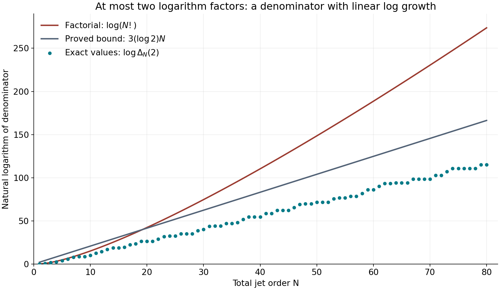
Figure 22.11. For integer orders \(1\le N\le80\), the lower dots give \(\log\Delta_N(2)\) exactly; the straight line is the bound \(3(\log2)N\) from Lemma 22.137. The other curve gives \(\log(N!)\). The denominator \(\Delta_N(2)\) clears products from at most two logarithm factors. The additive degree, rather than the derivative order, bounds that number of factors in (22.457). The plotted values illustrate the proved estimate; they do not prove it.
The translation to an identity-centered first jet and the use of formal logarithms are treated in É. Gaudron, Mesures d'indépendance linéaire de logarithmes dans un groupe algébrique commutatif, Sections 6.11–6.13. The bounds above give these steps for the stated plane cubic models and specify the homogeneous normalization used by the analytic function.
A quantitative estimate with fixed elliptic data
Fix \(E_1,\ldots,E_g\), algebraic points \(p_i\), and logarithms \(u_i\) in the normalization of Proposition 22.136. Fix a number field \(K\) containing the curve equations, the points and the addition tuples. Fix an integer \(D_*\ge[K:\mathbf Q]\). Constants in this section may depend on these data and on \(D_*\), but not on the variable coefficients of the linear form. Use the entire lifts of Proposition 22.165. Write
\[ n=g+1,\quad K_g=n!3^g,\quad k_g=n!2^n(3n)^g,\quad a_0=\frac{\log2}{4}. \tag{22.470} \]The symbol \(K_g\) is a numerical constant; \(K\) is the fixed number field.
Initially assume \(\beta_i\ne0\) and \(\max(|u_0|,|\beta_1|,\ldots,|\beta_g|)\le1\). Set \(L=K(u_0,\beta_1,\ldots,\beta_g)\), \(D_L=[L:\mathbf Q]\le D_*\), \(H=h(1:u_0:\beta_1:\cdots:\beta_g)\), \(u=(u_0,u_1,\ldots,u_g)\), \(p=(u_0,p_1,\ldots,p_g)\), and \(w=(\sum_i\beta_i u_i,u_1,\ldots,u_g)\in W\). Thus \(u-w=\Lambda e_0\), where \(\Lambda=u_0-\sum_i\beta_i u_i\).
Lemma 22.169. Uniform growth and arithmetic bookkeeping
Fix \(C_0\ge2\). There are an integer \(m\ge5\), a constant \(R_0\ge C_0^2\), and constants \(b_0,c\ge1\) with the following properties. The constant \(c\) can be chosen independently of \(C_0\). For an integer \(S\ge1\), put
\[ R=R_0(S+1)^m,\qquad d=\left\lceil\frac{(S+1)R^g}{C_0K_g}\right\rceil, \qquad U=A(H+1), \tag{22.471} \]where
\[ A\ge C_0^2(d+1)+b_0(d+1)(1+\log(S+1)). \tag{22.472} \]Suppose \(1\le D_i\le U/R\) for \(i\ge1\) and \(0\le D_0\le d\). Use the monomial basis of Proposition 22.149, and the field basis \(\xi_j\) of Lemma 22.142. Let \(\ell=\dim H^0(X,\mathcal L_D)\) and \(\nu=D_L\ell\).
For every basis monomial, use its entire expression \(M_\lambda(z)=X^\lambda(1,z_0,\Phi_1(z_1),\ldots, \Phi_g(z_g))\). Sampling divided jets of \(\xi_jM_\lambda\) in either basis specified below gives matrix rows with sum of moduli at most \(e^{cU}\). Also \(\log(1+4\nu)\le cU\).
More generally, if \(|a_{\lambda j}|\le e^\delta\) and \(F=\sum_{\lambda,j}a_{\lambda j}\xi_jM_\lambda\), then
\[ \left|D_f^\alpha F(z)/\alpha!\right| \le e^{\delta+cU},\qquad \left|\partial_0D_f^\alpha F(z)/\alpha!\right| \le e^{\delta+cU}. \tag{22.473} \]These bounds hold for every order \(\alpha\), at \(z=\zeta w\) for \(|\zeta|\le8(4n+2)(S+1)\), and on segments joining \(su\) to \(sw\), \(0\le s\le2nS\). They hold for the canonical graph basis and for an orthonormal graph basis, with or without replacing its last member by \(w\). Independence of the replaced basis is not needed for this growth assertion.
For integer \(a_{\lambda j}\), the first nonzero canonical jet at a point \(sp\), \(0\le s\le nS\), of order \(N\le nU\), satisfies
\[ \log|f_\alpha|\ge-D_L\delta-C_aU(1+\log(S+1)), \tag{22.474} \]for a constant \(C_a\) independent of \(S,A,H,L\). Here \(C_a\) may depend on the already fixed \(C_0,R_0\).
Proof. Fix a field basis \(\theta\) of \(K\) containing one. At the specified embedding the basis in Lemma 22.142 satisfies \(\max_j|\xi_j|\le\Theta:=\max_j|\theta_j|\), since the generators \(u_0,\beta_i\) have modulus at most one. All the stated directions have coordinates bounded by a constant depending only on \(g,u_1,\ldots,u_g\). The stated centers, their segments, and their translates by a unit polydisc in any of these directions and in \(e_0\), have all coordinates at most \(C(S+1)\). This follows directly from \(|u_0|,|\beta_i|\le1\).
The two-sided lift estimate, using its upper half, bounds every monomial on those polydiscs by
\[ \{C(S+1)\}^{d} \exp\left(C'(S+1)^5\sum_iD_i\right). \tag{22.475} \]Choose \(m\) at least five and at least the fixed point-height exponents in Corollary 22.166. Choose \(R_0\ge gC'\), as well as \(R_0\ge C_0^2\). After enlarging \(b_0\), (22.472) makes the logarithm of (22.475) at most \(2U\).
Cauchy's coefficient formula on the unit polydisc in the direction parameters bounds every divided jet by the same supremum. Adding an independent parameter in direction \(e_0\) bounds the mixed coefficient with exponent one in that parameter as well. This proves the derivative estimates for a single monomial, without an order-dependent factorial.
There are \(\nu=D_L(D_0+1)\prod_i3D_i \le D_*(d+1)3^gU^g\) columns. Hence row sums and the function \(F\) are bounded by \(\nu\Theta e^{2U}\) and \(\nu\Theta e^{\delta+2U}\). Since \(\log U\le U\) for \(U\ge1\), increasing \(b_0\) absorbs \(\log(d+1)+\log(5D_*3^g\Theta)\) into \(U\). A constant \(c\) depending only on \(g\) and the fixed data then proves (22.473), the row bound, and the bound for \(\log(1+4\nu)\). Larger fixed choices of \(c\) preserve all these assertions.
For the last assertion, Lemmas 22.142 and 22.145 give
\[ D_L h_c(P)\le D_L\delta+ D_L\log D_L+D_L h(\theta)+D_L([L:K]-1)H. \tag{22.476} \]Increase \(b_0\) so that the terms after \(D_L\delta\), the term \(D_L dH\), and the term \(D_L d\log((g+1)((g+1)S+1))\) in (22.463) are each at most a fixed multiple of \(U\). This is possible uniformly: \(H/U\le1/A\), \(1/U\le1/A\), and \(D_L\le D_*\), whereas (22.472) contains both \(d+1\) and \((d+1)\log(S+1)\). The elliptic point term in (22.463) is at most \(CgU/R_0\). The monomial count contributes at most \(D_L\log((d+1)3^gU^g)\). Finally
\[ \log(d+1)\le C''+(mg+1)\log(S+1),\qquad H_d\le1+\log(d+1). \tag{22.477} \]The first bound follows from the ceiling in (22.471). Insert these estimates and \(N\le nU\) into (22.463). All remaining terms are bounded by \(C_aU(1+\log(S+1))\). This proves (22.474) with \(C_a\) independent of the choices made after \(C_0,R_0\). \(\square\)
Lemma 22.170. A uniformly controlled sampling basis
Assume the hypotheses of Lemma 22.151 with \(\widetilde D=(d,U/R,\ldots,U/R)\) from (22.471), and let \(B_*\) be its minimizing subgroup. Throughout the remainder of this section use \(t=x\widetilde D\) and \(D_i=\lfloor t_i\rfloor\) supplied by that lemma. These hypotheses hold if \(C_0\ge4K_g\) and (22.472) holds. Indeed \(Q_{\{0\}}\le S+1\), so the last inequality in (22.411) is precisely \(Q_{\{0\}}R^g/(C_0K_gd)\le1\).
There are constants \(b_1\ge1\), \(J\ge1\), independent of \(S,A,H,L\), such that the following dichotomy holds when \(\Lambda\ne0\).
If no \(sp\), \(1\le s\le2nS\), belongs to \(\{0\}\times B_*\), then \(Q_{B_*}=S+1\), and use an orthonormal graph basis \(f\) of \(W\). Otherwise, provided
\[ |\Lambda|<b_1^{-1}(S+1)^{-J}, \tag{22.478} \]there is a basis \(f=(e'_1,\ldots,e'_{g-1},w)\) as in Corollary 22.155, whose first \(\dim B_*\) members span \(\operatorname{Lie}B_*\). In both cases conversion from \(f\)-jets of order \(N\) to canonical graph jets costs at most \(K_S^N\), where
\[ K_S=b_1(S+1)^J. \tag{22.479} \]Proof. In the first case, equality of two cosets with indices between zero and \(S\) would give a forbidden positive multiple of \(p\) in the subgroup. The orthonormal change costs at most \(g^{3N/2}\), by Lemma 22.143.
In the second case write \(h=\dim B_*\le g-1\). The refined bound (22.430) gives \(\deg B_*\le C_0K_gdR^{h-g}\le C_0K_gd\). The ceiling formula for \(d\) bounds this by \(C_1(S+1)^{mg+1}\). Equation (22.429) therefore gives \(\operatorname{dist}(u,\operatorname{Lie}B_*) \ge C_2(S+1)^{-(mg+2)}\), with \(C_2>0\). Choose \(J\ge mg+2\) and \(b_1\) sufficiently large. Then (22.478) makes \(|\Lambda|\) smaller than half this distance. Equations (22.381)–(22.382) bound the inverse basis entry sum by \(C_3(S+1)^J\), because \(\sum|w_i|\le\sqrt g(\sum|u_i|^2)^{1/2}\). Include the orthonormal-to-canonical conversion by enlarging \(b_1\) once more, and apply (22.378). The forward basis remains bounded as required in Lemma 22.169. \(\square\)
Lemma 22.171. An auxiliary polynomial with small sampled jets
Assume
\[ C_0\ge\max\{4K_g,8k_g,2^{2n}(n-1)!\},\qquad X=\frac{S+1}{C_0^2}\ge4, \tag{22.480} \]and use Lemma 22.170. Put
\[ T=\lfloor U\rfloor,\quad S_0=\lfloor X\rfloor, \quad T_0=\lfloor U/C_0^2\rfloor,\quad L_0=\log(576nC_0^2),\quad b=2n+1. \tag{22.481} \]Fix a constant \(c\) as in Lemma 22.169, enlarged if necessary as specified in the next lemma, and set
\[ p_*=4bL_0X+4c,\qquad \delta=\frac{4k_g}{D_L C_0}(p_*+2c)U. \tag{22.482} \]There is a nonzero section \(P\), with integer coefficients \(a_{\lambda j}\) in its field-basis expression, \(|a_{\lambda j}|\le e^\delta\), such that the following sampled divided jets have modulus at most \(e^{-p_*U}\):
- in the first case of Lemma 22.170, all \(f\)-jets of total order at most \(2nT\) at \(su\), \(0\le s<S_0\);
- in the second case, all \(f\)-jets of total order at most \(2nT\) with last exponent less than \(T_0\), at \(su\), \(0\le s\le2nS\).
Proof. Both are the systems of Corollary 22.152. Multiplication of a column by \(\xi_j\) does not increase the complex rank, so their matrix has rank \(\rho\) satisfying
\[ \frac\rho\nu\le\frac{k_g}{D_L C_0}=:\vartheta\le\frac18. \tag{22.483} \]Here \(\ell=(D_0+1)\prod_i3D_i\ge \mathcal H_G(D)/n!\), and \(\nu=D_L\ell\). Entire frames do not change the rank bound: the prescribed exponent sets are closed under decreasing any exponent, so multiplication by a local unit is an invertible triangular operation on the jet values.
For \(\rho>0\), the logarithm of the left side of (22.386), with its \(p=p_*U\) and \(m=cU\), is at most \(2\rho\{\delta+(p_*+2c)U\}\). We used \(\log(1+4\rho)\le\log(1+4\nu)\le cU\). The inequality \(2\rho/(\nu-2\rho)\le4\vartheta\) and (22.482) make this at most \(\nu\delta\). Lemmas 22.144–22.145 give the required nonzero integer vector and section. For \(\rho=0\), a coordinate unit vector suffices. The coefficient and field-basis height bounds of Lemma 22.169 apply in either case. \(\square\)
Lemma 22.172. Analytic continuation in both sampling cases
There is a constant \(L_*\), depending on the fixed choices through \(S\), but independent of \(H,L\), such that the assumption \(0<|\Lambda|<e^{-L_*U}\) ensures (22.478) and the following bound for every canonical divided jet of total order at most \(nT\), at \(su\), \(0\le s\le nS\):
\[ |\text{jet}|\le K_S^{nT} \left\{2e^{\delta+cU-a_0XU} +e^{-p_*U+cU+bL_0XU}\right\}+e^{-p_*U}. \tag{22.484} \]The constant \(c\) can be fixed before \(C_0,S\).
Proof. The fundamental theorem of calculus along the segment from \(sw\) to \(su\), applied to (22.473), bounds the difference of any stated divided jet by \(s|\Lambda|e^{\delta+cU}\). Since \(\delta/U\le4k_g(p_*+2c)/C_0\), choose \(L_*\) large enough that
\[ \begin{split} L_*&\ge p_*+4k_g(p_*+2c)/C_0+c +\log(2n(S+1))+1,\\ L_*&\ge\log b_1+J\log(S+1)+1. \end{split} \tag{22.485} \]These inequalities work for all \(U\ge1\). Every sampled jet at \(sw\) then has modulus at most \(2e^{-p_*U}\), and conversion back at the end costs at most \(e^{-p_*U}\), in the canonical directions.
In the first case, fix \(|\alpha|\le nT\) and put \(G_\alpha(z)=D_f^\alpha F(zw)/\alpha!\). Write \(w=\sum_jw_jf_j\). For \(0\le m<T\),
\[ \frac{G_\alpha^{(m)}(s)}{m!} =\sum_{|\gamma|=m}w^\gamma \binom{\alpha+\gamma}{\alpha} \frac{D_f^{\alpha+\gamma}F(sw)}{(\alpha+\gamma)!}. \tag{22.486} \]The total order on the right is at most \((n+1)T\le2nT\). Its coefficient sum is at most \(2^{|\alpha|+m}\max(1,\sum|w_j|)^m\), because \(\binom{\alpha+\gamma}{\alpha}\le2^{|\alpha|+m}\) and the multinomial expansion dominates \(\sum_{|\gamma|=m}|w^\gamma|\). The sum \(\sum|w_j|\le\sqrt g\,|w|\) is bounded by the fixed logarithms. Enlarge the fixed \(c\) to absorb this factor and the preceding factor two. Thus the \(S_0\) sampled one-variable jets are bounded by \(e^{-p_*U+cU}\).
Apply Lemma 22.146 with \(r=2n(S+1)\) and outer radius \(8r\). The norm term is bounded by \(e^{\delta+cU}\), by (22.473). Since \(S_0\ge X/2\), \(T\ge U/2\), and \(144r/S_0\le576nC_0^2\), its conclusion gives
\[ |G_\alpha(z)|\le 2e^{\delta+cU-a_0XU} +e^{-p_*U+cU+L_0XU} \quad(|z|\le2r). \tag{22.487} \]In particular it bounds all required \(f\)-jets at \(sw\), \(0\le s\le nS\). This includes \(w=0\); formula (22.486) then has zero terms for \(m>0\).
In the second case write \(f=(f',w)\). For a multi-index \(\alpha'\) of length \(g-1\), \(|\alpha'|\le nT\), put \(G_{\alpha'}(z)=D_{f'}^{\alpha'}F(zw)/\alpha'!\). Its divided derivative of order \(m<T_0\) is exactly the sampled jet with exponents \((\alpha',m)\). The total order is at most \(nT+T_0\le2nT\), since \(T_0\le T\). Take \(S_1=2nS+1\), \(r=2S_1\), and outer radius \(8r\) in Lemma 22.146. Here \(T_0\ge U/(2C_0^2)\), so \(S_1T_0\ge XU/2\); also \(S_1T_0\le bXU\) and \(144r/S_1=288\le e^{L_0}\). Consequently the same bound as the braces in (22.484) holds for \(G_{\alpha'}\) throughout \(|z|\le2r\). For every \(s\le nS\), its closed unit circle about \(s\) lies in that disc. Cauchy's formula bounds \(G_{\alpha'}^{(j)}(s)/j!\) by that supremum for every \(j\), including \(|\alpha'|+j\le nT\). These are precisely all the remaining \(f\)-jets. This also covers \(g=1\), when \(\alpha'\) is empty.
Finally use Lemma 22.170 to convert the \(f\)-jets to canonical graph jets at \(sw\). The conversion cost is at most \(K_S^{nT}\), since \(K_S\ge1\). Apply the earlier segment estimate in the canonical directions to return to \(su\). This proves (22.484). \(\square\)
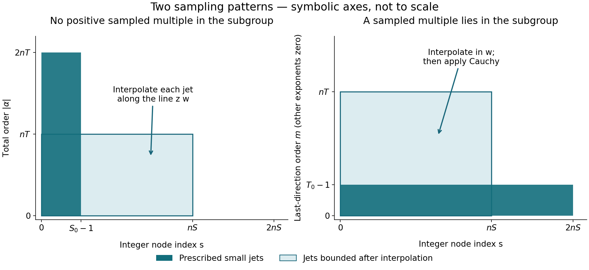
Figure 22.12. Rectangles indicate sets of integer indices; the symbolic axes are not to scale. On the left, no positive multiple \(sp\), \(s\le2nS\), lies in the minimizing subgroup. Few nodes carry every jet through order \(2nT\). On the right, many nodes carry only low orders in the last direction \(w\); the panel fixes all other exponents at zero. The proof of Lemma 22.172 uses every \(|\alpha'|\le nT\), recovering last orders through \(nT-|\alpha'|\) by Cauchy's formula. Both arguments bound all required jets at the target nodes \(0\le s\le nS\).
Theorem 22.173. A fixed-data coefficient-height estimate
For the fixed elliptic curves, algebraic points, logarithms and degree bound above, there is \(C>0\) such that every algebraic tuple with \([K(u_0,\beta_1,\ldots,\beta_g):\mathbf Q]\le D_*\) and \(\Lambda=u_0-\sum_i\beta_i u_i\ne0\) satisfies
\[ \log|\Lambda|\ge -C\{h(1:u_0:\beta_1:\cdots:\beta_g)+1\}. \tag{22.488} \]The constant may depend on the fixed logarithms and their points. The assertion is not a numerical bound uniform in varying elliptic curves or varying points.
Proof. First retain the normalization and nonzero \(\beta_i\) used above. Fix the common constant \(c\) in Lemmas 22.169 and 22.172. Choose \(C_0\) satisfying (22.480) and
\[ \frac{16k_gb\log(576nC_0^2)}{C_0}\le\frac{a_0}{16}. \tag{22.489} \]Such a choice exists since \(\log C_0/C_0\to0\). Now fix \(R_0,m,b_0,C_a,b_1,J\) from Lemmas 22.169–22.170. Choose the integer \(S\) so large that \(X=(S+1)/C_0^2\ge4\) and
\[ \frac{24k_gc}{C_0}\le\frac{a_0X}{16},\qquad c+n\log K_S+C_a(1+\log(S+1))+\log4 \le\frac{a_0X}{8}. \tag{22.490} \]The left side of the second inequality grows at most logarithmically in \(S\), whereas its right side grows linearly. This proves existence. These limiting comparisons need no unproved rate assertion: \(\log t=\int_1^t dx/x\le2\sqrt t\) for \(t\ge1\) already suffices. Finally define \(d,R\), choose a fixed \(A\) satisfying (22.472), and set \(U=A(H+1)\). Every choice before \(U\) is independent of the variable coefficient tuple and of \(H\).
Apply Lemma 22.151 to obtain the positive integer degrees \(D_i\). Its subgroup may depend on the coefficient tuple, but all estimates in Lemma 22.170 are uniform. Fix \(L_*\) by (22.485). Suppose, for a contradiction, that \(0<|\Lambda|<e^{-L_*U}\). The dichotomy supplies the appropriate basis, and Lemma 22.171 supplies a nonzero auxiliary section. By (22.482), (22.489) and the first part of (22.490),
\[ \frac{D_L\delta}{U} =\frac{16k_gbL_0}{C_0}X+\frac{24k_gc}{C_0} \le\frac{a_0X}{8}. \tag{22.491} \]Corollary 22.161 supplies a nonzero canonical jet at some \(sp\), \(0\le s\le nS\), of order at most \(nT\). At that point take its least nonzero total order and a nonzero coefficient \(f_\alpha\) of that order. Entire frames preserve the order of a section, so Lemma 22.169 applies to this very coefficient. Equations (22.474), (22.490) and (22.491) give
\[ |f_\alpha|\ge e^{-a_0XU/4}. \tag{22.492} \]On the other hand, \(T\le U\), \(\delta\le D_L\delta\), and the second inequality in (22.490) bound the first term of (22.484) by \(2e^{-3a_0XU/4}\). Its second term is at most \(e^{-(3bL_0-a_0/8)XU}\), using \(p_*=4bL_0X+4c\). Since \(bL_0\ge a_0\), this is at most \(e^{-23a_0XU/8}\). The last term is at most \(e^{-4a_0XU}\). Their sum is at most \(4e^{-3a_0XU/4}\). Since (22.490) also gives \(\log4\le a_0X/8\) and \(U\ge1\),
\[ |f_\alpha|\le e^{-5a_0XU/8}<e^{-a_0XU/4}, \tag{22.493} \]contradicting (22.492). Thus the normalized form satisfies \(\log|\Lambda|\ge-L_*A(H+1)\).
For an arbitrary tuple, omit its zero \(\beta_i\). If none remain, Lemma 22.47 gives the assertion directly. Otherwise normalize by Lemma 22.141. The normalized height is at most the original one, and the normalization scalar has logarithm at least \(-D_*H\). Add this loss to the preceding estimate. There are finitely many nonempty subsets of the fixed elliptic factors; take the maximum of their constants and \(D_*\). This proves (22.488) for every tuple. \(\square\)
Exercise 22.174. Rational approximation to a real elliptic period
Let \(\omega>0\) be a nonzero real period of \(y^2=x^3-x\) for \(dx/(2y)\). Show that there are constants \(c_\omega>0\) and \(\mu_\omega>0\) such that
\[ \left|\omega-\frac ab\right| \ge c_\omega |b|^{-\mu_\omega} \qquad(a,b\in\mathbf Z,\ b\ne0). \tag{22.494} \]No explicit numerical value of \(\mu_\omega\) is asserted.
Solution. The transcendence of the nonzero period was proved in Proposition 22.9 using Theorem 22.64, so \(a-b\omega\ne0\). Apply Theorem 22.173 with the fixed point equal to the identity and its fixed logarithm equal to \(\omega\). For \(B=\max(2,|a|,|b|)\), the coefficient height is at most \(\log B\), and \(|a-b\omega|\ge e^{-C}B^{-C}\). If \(|\omega-a/b|<1\), then \(|a|\le(\omega+1)|b|\) and \(B\le(\omega+2)|b|\). Dividing the lower bound by \(|b|\) proves (22.494) with \(\mu_\omega=C+1\) and \(c_\omega=\min(1,e^{-C}(\omega+2)^{-C})\). If \(|\omega-a/b|\ge1\), the same inequality follows from \(|b|\ge1\) and \(c_\omega\le1\).
For comparison, the freely accessible author version of É. Gaudron's Mesures d'indépendance linéaire de logarithmes dans un groupe algébrique commutatif, Theorem 3 and Sections 6.6–6.13, gives a general commutative-group estimate with the same linear coefficient-height dependence when the group, nonadditive points, logarithms and field degree are fixed. The proof above treats the product of the specified plane cubic models and makes both sampling cases explicit.
Explicit growth of elliptic homogeneous coordinates
Let \(\tau\) lie in the upper half-plane, put \(y=\operatorname{Im}\tau\), and write \(L_\tau=\mathbf Z+\tau\mathbf Z\). We use the normalization \(\wp_\tau(z)=z^{-2}+O(z^2)\). Its construction, periodicity, Laurent expansion and cubic equation are proved in Weierstrass functions, elliptic values and periods, Propositions 8.1–8.2. The following estimates make the dependence on the lattice explicit. All terminating decimals in the inequalities below denote exact rational numbers.
Proposition 22.175. An entire denominator and its transformation law
Put \(q=e^{2\pi i\tau}\), \(w=e^{2\pi iz}\), and define
\[ \phi_\tau(z)=\frac{w-1}{2\pi i} \prod_{r=1}^{\infty} \frac{(1-q^rw)(1-q^r/w)}{(1-q^r)^2}. \tag{22.495} \]This is entire, has exactly the simple zeros \(L_\tau\), and \(\phi_\tau'(0)=1\). For integers \(m,n\),
\[ \begin{split} \phi_\tau(z+m+n\tau)&=A_n(z)\phi_\tau(z),\\ A_n(z)&=(-1)^n \exp\{-2\pi inz-\pi in(n-1)\tau\},\\ \phi_\tau(-z)&=-e^{-2\pi iz}\phi_\tau(z). \end{split} \tag{22.496} \]Proof. On any compact set of \(z\)'s, both \(|w|\) and \(|w|^{-1}\) are bounded. The sum of the deviations of the product factors from one is consequently bounded by a constant times \(\sum_r|q|^r\). For a tail with deviations at most \(1/2\), the power series for \(\log(1+u)\) converges uniformly and absolutely. Its sum exponentiates to a holomorphic, nowhere-zero tail product. The finitely many other factors show normal convergence, holomorphy and the asserted zeros. Each zero belongs to exactly one numerator factor or to \(w-1\); that factor has a simple zero. At zero all product factors equal one, and \((w-1)/(2\pi i)=z+O(z^2)\).
Period one is immediate. Substituting \(qw\) for \(w\) and shifting the indices in the two numerator products gives \(\phi_\tau(z+\tau)=-w^{-1}\phi_\tau(z)\). The identity initially holds away from the zeros and extends across them by continuity. Iteration gives (22.496) for positive \(n\); solving the same identity backwards gives it for negative \(n\). Replacing \(w\) by \(w^{-1}\) interchanges the two products and multiplies their prefactor by \(-w^{-1}\). This proves the reflection formula. \(\square\)
Proposition 22.176. Fourier and half-period identities
Away from \(L_\tau\), the normally convergent expression
\[ \wp_\tau(z)=-4\pi^2\left\{ \frac1{12}+\frac{w}{(w-1)^2} +\sum_{r\ge1}\left[ \frac{wq^r}{(1-wq^r)^2} +\frac{w^{-1}q^r}{(1-w^{-1}q^r)^2} -\frac{2q^r}{(1-q^r)^2}\right]\right\} \tag{22.497} \]holds. For \(v\notin L_\tau\),
\[ \frac{\phi_\tau(z+v)\phi_\tau(z-v)}{\phi_\tau(z)^2} =e^{-2\pi iv}\phi_\tau(v)^2 \bigl(\wp_\tau(v)-\wp_\tau(z)\bigr). \tag{22.498} \]In particular, with \(e_1=\wp_\tau(1/2)\) and \(G(z)=\phi_\tau(z+1/2)\phi_\tau(z-1/2)/\phi_\tau(1/2)^2\),
\[ \phi_\tau^2\wp_\tau=e_1\phi_\tau^2+G, \qquad \phi_\tau^3\wp_\tau'=\phi_\tau G'-2\phi_\tau'G. \tag{22.499} \]The products on the left extend holomorphically across the lattice.
Proof. Logarithmic differentiation of (22.495) is valid on compact sets away from its zeros: the differentiated tails are still bounded by a convergent geometric series. The meromorphic function \(F=-(\phi_\tau'/\phi_\tau)'\) is periodic by (22.496). At every simple zero of \(\phi_\tau\) it has principal part \((z-\lambda)^{-2}\), with no simple-pole term. Thus \(F-\wp_\tau\) is entire and periodic, hence constant. Indeed, it is bounded on a closed fundamental parallelogram and therefore on the plane; Cauchy's derivative estimate on circles of radius tending to infinity makes its derivative zero.
The differentiated product gives the expression in braces in (22.497) without its constant \(1/12\) and without the last summand \(-2q^r/(1-q^r)^2\). Since
\[ \frac{w}{(w-1)^2} =-\frac1{4\sin^2(\pi z)} =-\frac1{4\pi^2z^2}-\frac1{12}+O(z^2), \tag{22.500} \]the constant Laurent coefficient of \(F\) is \(\pi^2/3-8\pi^2\sum_{r\ge1}q^r/(1-q^r)^2\). Subtracting it yields (22.497), because the constant coefficient of \(\wp_\tau\) is zero.
The left side of (22.498) is periodic by the transformation law and even by the reflection formula. Its only possible poles are double poles at the lattice, and the coefficient at zero is \(\phi_\tau(v)\phi_\tau(-v) =-e^{-2\pi iv}\phi_\tau(v)^2\). Evenness excludes a simple-pole term. Subtract the right side of (22.498). All poles cancel, so the difference is constant. Its value at \(z=v\) is zero. This proves the identity. For \(v=1/2\), \(e^{-2\pi iv}=-1\), which gives the first formula (22.499). Differentiate it and multiply by \(\phi_\tau\); the terms containing \(e_1\) cancel and give the second. The pole orders of \(\wp\) and \(\wp'\) are two and three, so the stated products are entire. \(\square\)
Lemma 22.177. Rational bounds for the numerical constants
Suppose \(y\ge\sqrt3/2\), and put \(Q=e^{-2\pi y}\). Then
\[ Q<\frac1{230},\qquad \sqrt Q<\frac{33}{500},\qquad e^{-\pi y/4}<\frac{507}{1000}. \tag{22.501} \]The following bounds will be used:
\[ \begin{split} \frac{2Q}{(1-Q)^2}+\frac{\sqrt Q(1+Q)}{1-Q}&<\frac{19}{250},\\ e^{19/250}&<1.079,\\ \frac{\sqrt Q(1+Q)}{(1-Q)(1-\sqrt Q)}&<0.072. \end{split} \tag{22.502} \]Proof. Here are finite rational certificates, including the bounds for \(\pi\) used in them. For \(0<t<1\), let \(a_N(t)=\sum_{j=0}^N(-1)^jt^{2j+1}/(2j+1)\). Integration of the finite geometric identity for \(1/(1+t^2)\) shows that \(a_5(t)<\arctan t<a_4(t)\). The tangent addition formula and the fact that both angles are in \((0,\pi/2)\) give \(\arctan(1/2)+\arctan(1/3)=\pi/4\). Direct rational comparison therefore gives
\[ \frac{157}{50} <4\{a_5(1/2)+a_5(1/3)\}<\pi <4\{a_4(1/2)+a_4(1/3)\}<\frac{22}{7}. \tag{22.503} \]Also \((433/250)^2<3\). Put \(x=67981/12500 =(157/50)(433/250)\). With \(T_N(t)=\sum_{j=0}^Nt^j/j!\), rational arithmetic gives
\[ T_{30}(x)>230,\quad T_{25}(x/2)>500/33,\quad T_{20}(x/8)>1000/507. \tag{22.504} \]Every omitted term in the exponential series is positive, so (22.503)–(22.504) imply (22.501). These rational tests can also be performed without large denominators by multiplying each inequality by the corresponding positive power of \(12500\) and by \(30!\).
The first and third expressions in (22.502) increase with both \(Q\) and \(\sqrt Q\) in \((0,1)\). Substitution of \(1/230\) and \(33/500\) gives the stated rational inequalities. For the exponential, put \(b=19/250\). From the twelfth term onwards, successive term ratios are at most \(b/13\). Hence
\[ e^b\le T_{11}(b)+\frac{b^{12}}{12!}\frac1{1-b/13} <\frac{1079}{1000}. \tag{22.505} \]The last comparison is rational. These arguments prove strict upper bounds, rather than decimal approximations to the constants. \(\square\)
Proposition 22.178. Estimates on a fundamental cell
Assume \(y\ge\sqrt3/2\). For \(z_0=s+t\tau\) with \(|s|,|t|\le1/2\), set
\[ J_\tau(z)=\frac{(\operatorname{Im}z)^2}{y} -\operatorname{Im}z+\frac y4, \qquad J_\tau(z_0)=y(t-1/2)^2. \tag{22.506} \]Then
\[ \begin{split} |\phi_\tau(z_0)|&<0.26e^{\pi J_\tau(z_0)},\\ |\phi_\tau'(z_0)|&<1.197e^{\pi J_\tau(z_0)},\\ |\phi_\tau(1/2)|&>0.312,\qquad |\wp_\tau(1/2)|<7.3. \end{split} \tag{22.507} \]The first two estimates also hold at \(z_0+1/2\) and \(z_0-1/2\), with the same value of \(J_\tau\).
Proof. Write \(a=|e^{2\pi iz_0}|=Q^t\). Thus both \(aQ\) and \(a^{-1}Q\) are at most \(\sqrt Q\). The absolute value of the product part of (22.495) is at most
\[ P=\prod_{r\ge1} \frac{(1+aQ^r)(1+a^{-1}Q^r)}{(1-Q^r)^2} \le\exp\left\{\frac{2Q}{(1-Q)^2} +\frac{\sqrt Q(1+Q)}{1-Q}\right\}<1.079. \tag{22.508} \]Indeed, \(\log(1+u)\le u\) and \(-\log(1-u)\le u/(1-u)\) follow by integrating their respective derivatives. Also \(a+a^{-1}\le Q^{-1/2}+Q^{1/2}\): the even function \(Q^t+Q^{-t}\) increases with \(|t|\). Summing the geometric majorants proves (22.508).
Differentiate the numerator factors in (22.495). The sum of the absolute logarithmic derivatives of the product, divided by \(2\pi\), is bounded by
\[ S=\sum_{r\ge1}\left\{ \frac{aQ^r}{1-aQ^r}+\frac{a^{-1}Q^r}{1-a^{-1}Q^r}\right\} \le\frac{\sqrt Q(1+Q)}{(1-Q)(1-\sqrt Q)}<0.072. \tag{22.509} \]No numerator factor vanishes in this cell: its modulus parameter is at most \(\sqrt Q<1\). Direct differentiation of the prefactor, including at its zeros, now yields
\[ |\phi_\tau(z_0)|<0.172(1+a),\qquad |\phi_\tau'(z_0)|<1.079\{a+0.072(1+a)\}. \tag{22.510} \]Here \(1.079/(2\pi)<0.172\) by (22.503).
Both
\[ \begin{split} a e^{-\pi J_\tau(z_0)}&=e^{-\pi y(t+1/2)^2}\le1,\\ (1+a)e^{-\pi J_\tau(z_0)} &=e^{-\pi y(t-1/2)^2}+e^{-\pi y(t+1/2)^2}<1.507 \end{split} \tag{22.511} \]hold: at least one of \(|t-1/2|,|t+1/2|\) is at least \(1/2\). The other exponential is at most one, and (22.501) bounds the first by \(0.507\). The rational inequalities \(0.172\cdot1.507<0.26\) and \(1.079(1+0.072\cdot1.507)<1.197\) prove the first two assertions of (22.507). Integer real translations reduce \(s\pm1/2\) to the same cell and leave both \(J_\tau\) and \(\phi_\tau,\phi_\tau'\) unchanged.
At \(z=1/2\), formula (22.495) and the reverse triangle inequality give
\[ |\phi_\tau(1/2)|\ge\frac1\pi \prod_{r\ge1}\left(\frac{1-Q^r}{1+Q^r}\right)^2 \ge\frac1\pi e^{-4Q/(1-Q)^2} >\frac7{22}\left(1-\frac{920}{52441}\right)>0.312. \tag{22.512} \]For the middle inequality use \(\log(1-u)-\log(1+u)\ge-2u/(1-u)\), then sum and use \(1-Q^r\ge1-Q\). For the next one use \(e^{-v}\ge1-v\) and (22.501),(22.503).
Finally set \(w=-1\) in (22.497). The constant part has modulus \(2\pi^2/3\). The remaining four terms for each \(r\) have total modulus at most \(16\pi^2Q^r/(1-Q^r)^2\). Consequently
\[ |\wp_\tau(1/2)|\le\frac{2\pi^2}{3} +\frac{16\pi^2Q}{(1-Q)^3}<7.3, \tag{22.513} \]by substituting \(\pi<22/7\) and \(Q<1/230\). \(\square\)
Theorem 22.179. A global Gaussian upper bound
For \(y\ge\sqrt3/2\), the entire tuple
\[ \Phi_\tau(z)= \bigl(\phi_\tau(z)^3,\; \phi_\tau(z)^3\wp_\tau(z),\; \phi_\tau(z)^3\wp_\tau'(z)\bigr) \tag{22.514} \]has no common zero and represents \([1:\wp_\tau:\wp_\tau']\). With \(\|\cdot\|_\infty\) the maximum coordinate norm,
\[ \|\Phi_\tau(z)\|_\infty \le3.33\exp\left\{3\pi\left( \frac{(\operatorname{Im}z)^2}{y} -\operatorname{Im}z+\frac y4\right)\right\}. \tag{22.515} \]In particular it is at most \(3.33\exp\{3\pi((\operatorname{Im}z)^2/y +|\operatorname{Im}z|+y/4)\}\).
For a scaled lattice \(L=\omega_1 L_\tau\), \(\omega_1\ne0\), set \(\phi_L(z)=\omega_1\phi_\tau(z/\omega_1)\) and form \(\Phi_L=(\phi_L^3,\phi_L^3\wp_L,\phi_L^3\wp_L')\). Then
\[ \|\Phi_L(z)\|_\infty \le3.33\max\{1,|\omega_1|^3\} e^{3\pi J_\tau(z/\omega_1)}. \tag{22.516} \]Proof. First work on the cell of Proposition 22.178 and abbreviate \(J=J_\tau(z_0)\). By (22.499),(22.507), the three coordinates have respective upper bounds
\[ \begin{split} 0.26^3 e^{3\pi J}&<0.0176e^{3\pi J},\\ 0.26^3(7.3+0.312^{-2})e^{3\pi J}&<0.309e^{3\pi J},\\ \frac{4\cdot0.26^2\cdot1.197}{0.312^2}e^{3\pi J} &=3.325e^{3\pi J}<3.33e^{3\pi J}. \end{split} \tag{22.517} \]In the third line, \(\phi G'\) supplies two summands and \(2\phi'G\) supplies two more, each bounded by \(0.26^2\cdot1.197e^{3\pi J}/0.312^2\). These are finite rational comparisons.
Every \(z\) can be written \(z=z_0+m+n\tau\) with \(z_0\) in that cell. Periodicity of \(\wp\) and \(\wp'\) and (22.496) give the exact scalar law
\[ \Phi_\tau(z)=A_n(z_0)^3\Phi_\tau(z_0),\qquad \log|A_n(z_0)|=\pi\{2n\operatorname{Im}z_0+(n^2-n)y\}. \tag{22.518} \]The expression in braces plus \(J_\tau(z_0)\) is exactly \(J_\tau(z)\). Multiplication of (22.517) by \(|A_n(z_0)|^3\) proves (22.515) globally. At zero, \(\phi=z+O(z^2)\), \(\wp=z^{-2}+O(z^2)\) and \(\wp'=-2z^{-3}+O(z)\); thus the tuple is \((0,0,-2)\). Its scalar transformation law proves nonvanishing at every lattice point. Away from the lattice its first coordinate is nonzero.
Changing variables in the defining lattice series gives \(\wp_L(z)=\omega_1^{-2}\wp_\tau(z/\omega_1)\) and \(\wp_L'(z)=\omega_1^{-3}\wp_\tau'(z/\omega_1)\). Thus the three coordinates of \(\Phi_L\) are those of \(\Phi_\tau(z/\omega_1)\) multiplied by \(\omega_1^3,\omega_1,1\), respectively. Since \(\max\{1,|\omega_1|,|\omega_1|^3\} =\max\{1,|\omega_1|^3\}\), (22.516) follows. \(\square\)
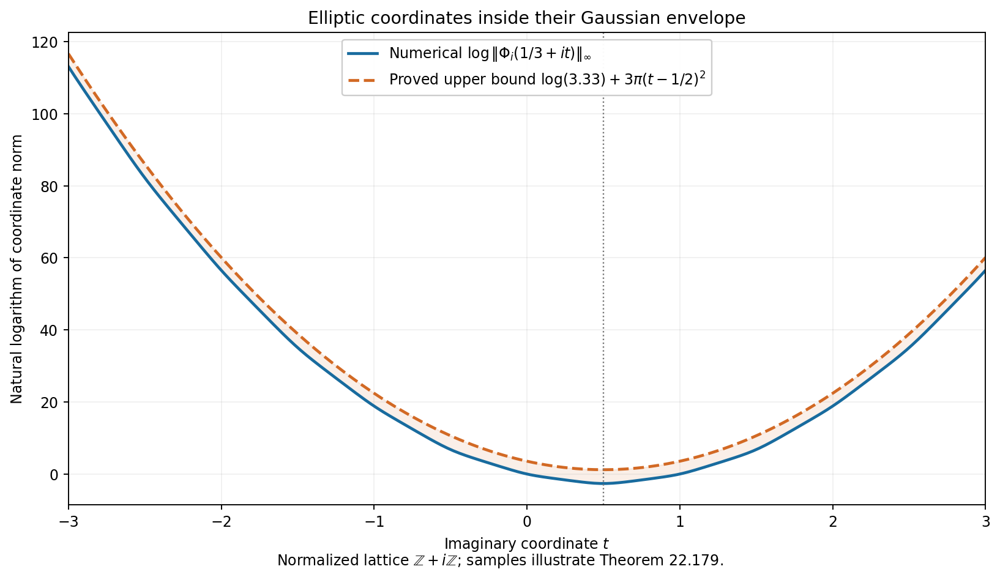
Figure 22.13. For \(\tau=i\), the blue curve shows numerically sampled values of \(\log\|\Phi_i(1/3+it)\|_\infty\). The orange curve is the proved upper bound \(\log(3.33)+3\pi(t-1/2)^2\). Its centre at \(t=1/2\) comes from the chosen denominator's transformation law. The samples illustrate (22.515); its proof is independent of them.
Exercise 22.180. Differentiation and lattice translation
Find the transformation law for \(\phi_\tau'\). Explain why the estimate for this derivative in (22.507) cannot simply be translated with the scalar \(A_n\). For \(\tau=i\), show that there is no constant \(C\) such that
\[ |\phi_i'(z)|\le C e^{\pi J_i(z)}\qquad(z\in\mathbf C). \tag{22.519} \]Why does this not obstruct the bound for the tuple \(\Phi_i\)?
Solution. Differentiate (22.496):
\[ \phi_\tau'(z+m+n\tau)= A_n(z)\{\phi_\tau'(z)-2\pi in\phi_\tau(z)\}. \tag{22.520} \]At \(z=1/3\), \(\phi_i(z)\ne0\). Dividing the absolute value of (22.520) by \(e^{\pi J_i(z+ni)}\) gives exactly
\[ e^{-\pi/4} |\phi_i'(1/3)-2\pi in\phi_i(1/3)|, \tag{22.521} \]which tends to infinity with \(|n|\), by the reverse triangle inequality. This disproves (22.519) for every fixed \(C\). In contrast, \(\wp\) and \(\wp'\) are periodic. Their products with \(\phi^3\) therefore obey (22.518) with no derivative term. One first estimates those complete products on a fundamental cell, then translates them. Formula (22.499) is only needed for the cell estimate. \(\square\)
Lemma 22.181. Product lower bounds on the cell
Keep the cell and notation of Proposition 22.178. Write \(P_\tau(z)\) for the product in (22.495), without its prefactor. Then
\[ |P_\tau(z_0)|>0.919,\qquad |\phi_\tau(z_0)|\ge0.146|w-1|. \tag{22.522} \]The second inequality is strict when \(w\ne1\). For \(g(b)=b(1+b)/(1-b)^3\), one also has
\[ \begin{split} \sum_{r\ge1}\{|g(wq^r)|+|g(q^r/w)|\}&<\frac1{10},\\ \frac1{12}+\sum_{r\ge1}\left\{ \frac{aQ^r}{(1-aQ^r)^2} +\frac{a^{-1}Q^r}{(1-a^{-1}Q^r)^2} +\frac{2Q^r}{(1-Q^r)^2}\right\}&<\frac15. \end{split} \tag{22.523} \]Proof. The reverse triangle inequality and \(\log(1-u)\ge-u/(1-u)\), \(\log(1+u)\le u\), give
\[ \log|P_\tau(z_0)|\ge -\frac{\sqrt Q(1+Q)}{(1-Q)(1-\sqrt Q)} -\frac{2Q}{1-Q}>-0.081. \tag{22.524} \]The last inequality follows from (22.501)–(22.502), since \(0.072+2/229<0.081\). Thus \(|P_\tau(z_0)|>e^{-0.081}\ge1-0.081=0.919\). As \(0.919\cdot7/44>0.146\), (22.503) proves (22.522).
For \(|b|\le h=\sqrt Q\), \(|g(b)|\le |b|(1+h)/(1-h)^3\). Summing \(|wq^r|+|q^r/w|\) therefore bounds the first expression in (22.523) by
\[ \frac{\sqrt Q(1+Q)}{1-Q} \frac{1+\sqrt Q}{(1-\sqrt Q)^3}<\frac1{10}. \tag{22.525} \]Similarly the second expression is at most
\[ \frac1{12} +\frac{\sqrt Q(1+Q)}{(1-Q)(1-\sqrt Q)^2} +\frac{2Q}{(1-Q)^3}<\frac15. \tag{22.526} \]In both cases the expressions increase with \(Q\) and \(\sqrt Q\). Substitute \(1/230\) and \(33/500\) to obtain the displayed strict rational inequalities. \(\square\)
Theorem 22.182. An explicit lower bound for the entire tuple
For every \(z\in\mathbf C\), \(y\ge\sqrt3/2\),
\[ \begin{split} \|\Phi_\tau(z)\|_\infty &\ge 0.073^3 e^{3\pi(J_\tau(z)-y)}\\ &\ge 7\cdot10^{-4} \exp\left\{\pi\left( -2.51y-3|\operatorname{Im}z| +\frac{3(\operatorname{Im}z)^2}{y}\right)\right\}. \end{split} \tag{22.527} \]For a scaled lattice as in Theorem 22.179,
\[ \|\Phi_L(z)\|_\infty \ge\min\{1,|\omega_1|^3\}\,0.073^3 e^{3\pi(J_\tau(z/\omega_1)-y)}. \tag{22.528} \]Proof. First prove that the tuple norm on the cell is at least \(c=0.073^3\). If \(|w-1|\ge1/2\), (22.522) gives \(|\phi_\tau|\ge0.073\), so its first coordinate suffices. Suppose instead \(|w-1|<1/2\). Differentiating (22.497) gives
\[ \phi_\tau(z_0)^3\wp_\tau'(z_0) =P_\tau(z_0)^3\left\{ -w(1+w)+(w-1)^3 \sum_{r\ge1}\bigl(g(wq^r)-g(q^r/w)\bigr)\right\}. \tag{22.529} \]Multiplication removes the pole, so this identity also holds when \(w=1\). In the present case \(|w|>1/2\) and \(|1+w|>3/2\). Lemma 22.181 gives the lower bound \(0.919^3(3/4-1/80)>0.073^3\) for the absolute value in (22.529). This proves the cell bound, including the lattice point.
Write \(z=z_0+m+n\tau\) as before. Since \(J_\tau(z_0)=y(t-1/2)^2\le y\), (22.518) gives the first inequality in (22.527). If \(v=\operatorname{Im}z\), its exponent minus the second exponent is \(\pi\{0.26y+3(|v|-v)\}\ge0.26\pi y\). This is larger than \(b=(13/100)(67981/12500)\), by (22.503) and \(y\ge\sqrt3/2\). The rational comparison \(0.073^3(1+b+b^2/2)>7\cdot10^{-4}\), together with \(e^b\ge1+b+b^2/2\), proves the second inequality. Finally the three scaling factors from (22.516) have minimum \(\min\{1,|\omega_1|^3\}\). This proves (22.528). \(\square\)
Proposition 22.183. A lower bound for the denominator itself
For \(z\notin L_\tau\), \(y\ge\sqrt3/2\),
\[ |\phi_\tau(z)|(1+|\wp_\tau(z)|) \ge0.073e^{-2\pi|\operatorname{Im}z|} \ge10^{-2}e^{-\pi y/2-4\pi|\operatorname{Im}z|}. \tag{22.530} \]For the scaled lattice \(L=\omega_1L_\tau\) and \(z\notin L\),
\[ |\phi_L(z)|(1+|\wp_L(z)|) \ge\frac{0.073|\omega_1|}{\max\{1,|\omega_1|^2\}} e^{-2\pi|\operatorname{Im}(z/\omega_1)|}. \tag{22.531} \]Proof. On the cell, if \(d=|w-1|\ge1/2\), the estimate \(|\phi_\tau|\ge0.073\) suffices. If \(0<d<1/2\), isolate the term \(w/(w-1)^2\) in (22.497) and use (22.523). Since \(|w|>1/2\), the reverse triangle inequality gives
\[ |\wp_\tau(z_0)| >4\pi^2\left(\frac1{2d^2}-\frac15\right) >\frac{4\pi^2\cdot0.45}{d^2}. \tag{22.532} \]Multiply by \(|\phi_\tau(z_0)|>0.146d\). The resulting bound is greater than \(8(157/50)^2\cdot0.45\cdot0.146>0.073\), because \(d<1/2\). Thus the first product in (22.530) is at least \(0.073\) throughout the cell away from the lattice.
For the translation \(z=z_0+m+n\tau\), set \(M/y=n^2-n+2nt\), so that \(|A_n(z_0)|=e^{\pi M}\). If \(n\le0\), then \(M/y\ge n^2\ge0\); if \(n\ge2\), then \(M/y\ge n(n-2)\ge0\). For \(n=0\) it is zero. The remaining case is \(n=1\). If \(t\ge0\), again \(M\ge0\). If \(-1/2\le t<0\), then \(M=2ty\ge-2(1+t)y=-2|\operatorname{Im}z|\). Thus \(M\ge-2|\operatorname{Im}z|\) in every case. Periodicity of \(\wp\) and (22.496) prove the first inequality in (22.530). The second follows from \(0.073>0.01\) and \(y>0\). Finally \(1+|\omega_1|^2|\wp_L|\le \max\{1,|\omega_1|^2\}(1+|\wp_L|)\), so the scaling identities prove (22.531). \(\square\)
The three bounds (22.515), (22.527) and (22.530) include the growth estimates of S. David, Minorations de formes linéaires de logarithmes elliptiques, Proposition 3.1. The product identities, constants and lattice scalings above give their proofs in the present normalization.
Periods, curve heights and explicit derivative bounds
We use the functions and lattice normalization of Propositions 22.175–22.183. Put \(Q=|q|=e^{-2\pi y}\), where \(q=e^{2\pi i\tau}\) and \(y=\operatorname{Im}\tau\ge\sqrt3/2\). In particular \(Q<1/230\). Decimal constants below are exact rational numbers. The algebraic curve convention in this section is \(Y^2=4X^3-g_2X-g_3\); its projective coordinates are \([1:\wp:\wp']\).
Proposition 22.184. Fourier expansions of the invariants
For \(r\ge1\), let \(\sigma_r(n)=\sum_{d\mid n}d^r\). Define
\[ E_4(q)=1+240\sum_{n\ge1}\sigma_3(n)q^n, \qquad E_6(q)=1-504\sum_{n\ge1}\sigma_5(n)q^n. \tag{22.533} \]Then
\[ g_2(L_\tau)=\frac{4\pi^4}{3}E_4(q),\qquad g_3(L_\tau)=\frac{8\pi^6}{27}E_6(q), \qquad |g_2(L_\tau)|<272,\quad |g_3(L_\tau)|<1005. \tag{22.534} \]Proof. In a small disc around zero, expand \(b/(1-b)^2=\sum_{m\ge1}mb^m\) in (22.497). Absolute convergence permits both summation and differentiation. Thus
\[ \wp_\tau(z)=\frac{\pi^2}{\sin^2(\pi z)}-\frac{\pi^2}{3} -4\pi^2\sum_{r,m\ge1}m q^{rm} (e^{2\pi imz}+e^{-2\pi imz}-2). \tag{22.535} \]The first term minus its constant has expansion \(z^{-2}+\pi^4z^2/15+2\pi^6z^4/189+O(z^6)\), obtained by squaring and inverting the sine series. The coefficients of \(z^2\) and \(z^4\) in \(\wp\) are \(g_2/20\) and \(g_3/28\). Indeed, inserting \(\wp=z^{-2}+az^2+bz^4+O(z^6)\) in \(\wp'^2=4\wp^3-g_2\wp-g_3\) gives \(20a=g_2\) and \(28b=g_3\) by comparing the coefficients of \(z^{-2}\) and one. Comparison in (22.535) gives (22.533)–(22.534), because \(\sum_{r,m\ge1}m^j q^{rm}=\sum_n\sigma_j(n)q^n\).
Applying \(Q\,d/dQ\) repeatedly to \(Q/(1-Q)\) gives
\[ \begin{split} \sum_{n\ge1}\frac{n^3Q^n}{1-Q^n} &\le\frac{Q(1+4Q+Q^2)}{(1-Q)^5}=:S_3(Q),\\ \sum_{n\ge1}\frac{n^5Q^n}{1-Q^n} &\le\frac{Q(1+26Q+66Q^2+26Q^3+Q^4)}{(1-Q)^7}=:S_5(Q). \end{split} \tag{22.536} \]Here \((1-Q^n)^{-1}\le(1-Q)^{-1}\). The identities for \(\sum n^jQ^n\) follow inductively by differentiation, so no divisor-sum estimate has been omitted. Substituting \(Q=1/230\) and \(\pi<22/7\) gives the rational bounds
\[ \frac43(22/7)^4(1+240S_3(1/230))<272,\quad \frac8{27}(22/7)^6(1+504S_5(1/230))<1005. \tag{22.537} \]All relevant series majorants increase with \(Q\), proving the assertions. \(\square\)
Lemma 22.185. A finite discriminant estimate
For \(0<|q|\le1/230\),
\[ \left|\frac{E_4(q)^3-E_6(q)^2}{1728q}-1\right|<\frac{11}{100}. \tag{22.538} \]Consequently, with \(\Delta_\tau=g_2(L_\tau)^3-27g_3(L_\tau)^2\),
\[ \frac{89}{100}(2\pi)^{12}Q <|\Delta_\tau|<\frac{111}{100}(2\pi)^{12}Q. \tag{22.539} \]Proof. We give a finite polynomial and tail calculation. The degree-four truncations of the two series are
\[ \begin{split} A(q)&=1+240q+2160q^2+6720q^3+17520q^4,\\ B(q)&=1-504q-16632q^2-122976q^3-532728q^4. \end{split} \tag{22.540} \]For \(j>1\), \(\sigma_j(n)=n^j\sum_{d\mid n}d^{-j} \le n^j(1+\int_1^\infty t^{-j}\,dt) =j n^j/(j-1)\). The ratio of consecutive \(n^jQ^n\), for \(n\ge5\), is at most \((6/5)^jQ\). Therefore, for \(|q|\le Q\le1/230\),
\[ |E_4-A|\le R_4:=\frac{360\cdot5^3Q^5}{1-(6/5)^3Q}, \qquad |E_6-B|\le R_6:=\frac{630\cdot5^5Q^5}{1-(6/5)^5Q}. \tag{22.541} \]Put \(A_+=1+240Q+2160Q^2+6720Q^3+17520Q^4\) and \(B_+=1+504Q+16632Q^2+122976Q^3+532728Q^4\). Let \(d_j=[q^j](A^3-B^2)\). Its coefficients for \(j=0,\ldots,12\) are, in that order,
\[ \begin{gathered} 0,\ 1728,\ -41472,\ 435456,\ -2543616,\ 5104512,\\ 1525813632,\ 50747641344,\ 424509633216,\\ 2050306560000,\ 4362564096000,\ 6188120064000,\ 5377771008000. \end{gathered} \tag{22.542} \]It follows that the left side of (22.538) is at most
\[ \frac{\sum_{j=2}^{12}|d_j|Q^j +R_4(3A_+^2+3A_+R_4+R_4^2)+R_6(2B_++R_6)}{1728Q}. \tag{22.543} \]Every summand after division by \(Q\) is increasing on this interval. Substitution of \(Q=1/230\) is a rational calculation and gives a value less than \(10924/100000<11/100\). Thus (22.538) follows. Finally \(\Delta_\tau=(64\pi^{12}/27)(E_4^3-E_6^2)\), and \((64/27)1728=4096=2^{12}\), giving (22.539). \(\square\)
Proposition 22.186. Period bounds and the imaginary part of the lattice
Let \(L=\omega_1(\mathbf Z+\tau\mathbf Z)\), \(g_2=g_2(L)\), \(g_3=g_3(L)\), and \(j=1728g_2^3/(g_2^3-27g_3^2)\). If \(j\ne0\), then
\[ \frac{e^{1.825-\pi y/6}|j|^{1/12}}{(12|g_2|)^{1/4}} \le |\omega_1|\le \frac{e^{1.85-\pi y/6}|j|^{1/12}}{(12|g_2|)^{1/4}}. \tag{22.544} \]Suppose now that \(g_2,g_3\) belong to a number field of degree \(D\), at the given complex embedding, and put
\[ h_E=h(1:g_2:g_3),\qquad h=\max\{1,h_E,h(j)\}. \tag{22.545} \]Then \(y\le Dh\), including when \(j=0\).
Proof. Lattice scaling gives \(g_2(L_\tau)=\omega_1^4g_2\) and \(g_3(L_\tau)=\omega_1^6g_3\), either from their lattice sums or their Laurent coefficients. Thus \(j\) is unchanged by scaling. If \(j\ne0\), then \(g_2\ne0\), and
\[ |\omega_1| =\frac{|\Delta_\tau|^{1/12}|j|^{1/12}} {(12|g_2|)^{1/4}}. \tag{22.546} \]Apply (22.539). The elementary numerical comparisons required are \(2\pi(0.89)^{1/12}>e^{1.825}\) and \(2\pi(1.11)^{1/12}<e^{1.85}\). They follow using \(157/50<\pi<22/7\) from (22.503): the degree-twenty exponential sum with geometric remainder bounds \(e^{1.825}\) from above, and its degree-twenty sum bounds \(e^{1.85}\) from below. Raising the resulting positive rational inequalities to the twelfth power verifies both comparisons. This proves (22.544).
To control \(y\), there is nothing to prove if \(y\le1\). If \(y>1\), then \(Q<1/500\): the positive exponential sum \(\sum_{r=0}^{30}(157/25)^r/r!\) is greater than \(500\), and \(2\pi>157/25\). Equation (22.536) gives \(240S_3(1/500)<1/2\). Hence \(|E_4|>1/2\), and (22.538) gives
\[ |j|=\left|\frac{1728E_4^3}{E_4^3-E_6^2}\right| >\frac{25}{222Q}=\frac{25}{222}e^{2\pi y}>e^y. \tag{22.547} \]For the last inequality, \((2\pi-1)y>5\) and \(e^5>1+5+25/2>222/25\). The chosen-embedding height bound \(\log\max\{1,|j|\}\le D h(j)\) now gives \(y<Dh\). This also shows that \(j=0\) forces \(y<1\), so no exceptional case has been omitted.
Every lattice admits the stipulated normalization. Choose a shortest nonzero vector \(\omega_1\). It is primitive in a lattice basis and therefore extends to a basis, by the integer Bézout identity. Choose the other vector's sign to make \(y>0\), and add an integer multiple of \(\omega_1\) so that \(|\operatorname{Re}\tau|\le1/2\). Minimality gives \(|\tau|\ge1\), whence \(y\ge\sqrt3/2\). \(\square\)
Theorem 22.187. Entire growth controlled by the curve height
For the curve and embedding of (22.545), the entire tuple \(\Phi_L\) of Theorem 22.179 satisfies
\[ \|\Phi_L(z)\|_\infty \le3.33\exp\left\{\frac34Dh_E +3\pi J_\tau(z/\omega_1)\right\}. \tag{22.548} \]In particular this remains valid with \(J_\tau(w)\) replaced by \((\operatorname{Im}w)^2/y+|\operatorname{Im}w|+y/4\). The assertion includes curves with \(g_2=0\) or \(g_3=0\).
Proof. The separate bounds in (22.517) transform by the same scalar law as the tuple. They therefore give, for \(r=|\omega_1|\),
\[ \|\Phi_L(z)\|_\infty \le \max\{0.0176r^3,\ 0.309r,\ 3.33\} e^{3\pi J_\tau(z/\omega_1)}. \tag{22.549} \]For a nonzero \(g_i\), the height definitions give \(\log\max\{1,|g_i|^{-1}\}\le D h_E\): projection bounds \(h(g_i)\) by \(h_E\), the product formula gives \(h(g_i^{-1})=h(g_i)\), and the nonnegative contribution of the chosen archimedean place is at least \(1/D\) times the relevant logarithm. These are the same height identities used in Lemma 22.141.
If \(g_2\ne0\), (22.534) implies \(r^4<272e^{Dh_E}\). Thus the first two factors in (22.549) are bounded by \(0.0176\,272^{3/4}e^{3Dh_E/4}\) and \(0.309\,272^{1/4}e^{Dh_E/4}\), respectively. Their constant factors are less than \(3.33\), as is checked by fourth powers. If \(g_2=0\), nonsingularity gives \(g_3\ne0\), and \(r^6<1005e^{Dh_E}\). The corresponding constants are \(0.0176\sqrt{1005}\) and \(0.309\,1005^{1/6}\), again less than \(3.33\); their height exponents are \(Dh_E/2\) and \(Dh_E/6\). Since \(h_E\ge0\), every case is bounded by (22.548). \(\square\)
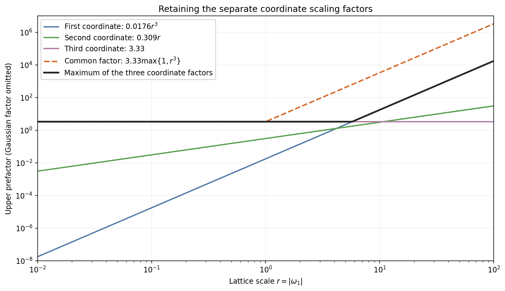
Figure 22.14. Scaling the lattice by a complex number of modulus \(r\) multiplies the three coordinate bounds by \(r^3,r,1\). The solid black envelope in (22.549) retains these separate factors. The dashed curve is the coarser common factor \(3.33\max\{1,r^3\}\) from (22.516). Both are upper bounds; the curves do not plot values of an elliptic function.
Proposition 22.188. Explicit bounds for mixed directional derivatives
For \(i=1,\ldots,k\), let \(E_i\) and \(L_i=\omega_iL_{\tau_i}\) have the preceding normalization over a common field of degree \(D\). Put \(y_i=\operatorname{Im}\tau_i\) and \(h_i=h(1:g_{2,i}:g_{3,i})\). Let \(P\) be a polynomial of degree at most \(d_0\) in its additive variable and homogeneous degree \(d_i\) in the three coordinates of its \(i\)-th elliptic block. Suppose its \(N_P\ge1\) nonzero coefficients have modulus at most \(H_P\). Set
\[ F(z_0,\ldots,z_k)=P(z_0,\Phi_{L_1}(z_1),\ldots,\Phi_{L_k}(z_k)). \tag{22.550} \]Choose directions \(x_1,\ldots,x_l\in\mathbf C^{k+1}\), nonnegative integers \(t_1,\ldots,t_l\), and write
\[ \begin{split} T&=\sum_at_a,\quad M_0=\min\{d_0,T\},\\ \xi_0&=\max\{1,|x_{a,0}|:1\le a\le l\},\\ \xi_1&=\max\{1,|x_{a,i}|:1\le a\le l,1\le i\le k\},\\ b_i&=|\operatorname{Im}(v_i/\omega_i)|+|\omega_i|^{-1}. \end{split} \tag{22.551} \]With \(D_x=\sum_{i=0}^kx_i\partial/\partial z_i\),
\[ \begin{split} |D_{x_1}^{t_1}\cdots D_{x_l}^{t_l}F(v)| \le{}&N_PH_P\,T!(k+1)^T\xi_0^{M_0}\xi_1^T (|v_0|+1)^{d_0}\\ &\times\exp\left\{\sum_{i=1}^kd_i \left[\log(3.33)+\frac34Dh_i +3\pi\left(\frac{b_i^2}{y_i}+b_i+\frac{y_i}{4}\right)\right]\right\}. \end{split} \tag{22.552} \]Here \(0!=1\); the estimate includes \(T=0\).
Proof. On the closed unit polydisc about \(v\), \(|z_0|\le|v_0|+1\), and \(|\operatorname{Im}(z_i/\omega_i)|\le b_i\). Bound each monomial by (22.548) and sum over the \(N_P\) coefficients. This gives the right side of (22.552) without its factor \(T!(k+1)^T\xi_0^{M_0}\xi_1^T\); denote that bound by \(M\). Iterating the one-variable Cauchy integral formula yields \(|\partial^\alpha F(v)|\le\alpha!M\) for \(|\alpha|=T\). This follows directly by integrating each variable on its unit circle, so the normalization of the derivatives is specified.
Expand the \(T\) directional derivative factors one at a time. There are \((k+1)^T\) terms before collecting equal partial derivatives. A surviving term chooses coordinate zero at most \(d_0\) times, since higher additive derivatives vanish. Its coefficient is at most \(\xi_0^{M_0}\xi_1^T\), and its partial derivative is at most \(T!M\), because \(\alpha!\le T!\). Summation proves (22.552). No estimate of \(N_P\) by an unspecified dimension is needed. \(\square\)
Exercise 22.189. The zero invariant case and height normalization
For \(E:Y^2=4X^3-1/2\), compute \(h_E\), \(h(j)\), and the exponents of \(r=|\omega_1|\) in its homogeneous lift. Give an explicit height-dependent upper bound for its tuple norm. Explain why a formula that divides by \(g_2\) cannot be used for this curve.
Solution. The primitive integral coordinates of \((1:0:1/2)\) are \((2:0:1)\), so \(h_E=\log2\). The invariant \(j\) is zero and has height zero. Scaling from \(L_\tau\) gives multipliers \(\omega_1^3,\omega_1,1\) on the three coordinates. Since \(g_3=1/2\), (22.534) gives \(r^6<2010\). Formula (22.549) therefore gives
\[ \|\Phi_L(z)\|_\infty \le\max\{0.0176\sqrt{2010},\ 0.309\,2010^{1/6},\ 3.33\} e^{3\pi J_\tau(z/\omega_1)} =3.33e^{3\pi J_\tau(z/\omega_1)}. \tag{22.553} \]The equality of the constant to \(3.33\) is a finite positive-power comparison. The general height bound (22.548) also applies and gives the slightly larger prefactor \(3.33\,2^{3/4}\). Formula (22.544) does not apply: both \(j\) and \(g_2\) vanish, whereas the \(g_3\)-based argument above has a nonzero denominator. \(\square\)
Lemma 22.190. A uniform estimate near the pole
For \(0<|z|\le1/10\),
\[ |\wp_\tau(z)|\ge\frac{0.9}{|z|^2}. \tag{22.554} \]Proof. The sine series and \(|z|\le1/10\) give
\[ |\sin(\pi z)|\le\pi|z|\, \frac{\sinh(\pi/10)}{\pi/10}<1.02\pi|z|. \tag{22.555} \]For the last inequality, put \(u=11/35>\pi/10\). The series \(\sinh u/u\) is bounded by \(1+u^2/(6(1-u^2/20))<1.02\): after its quadratic term, successive ratios are at most \(u^2/20\).
Now \(|w|,|w|^{-1}\le e^{\pi/5}<15/8\). The last comparison follows from \(\pi/5<22/35\) and the degree-twenty exponential sum with geometric remainder. Isolating the trigonometric term in (22.497), its other terms have total modulus at most
\[ 4\pi^2\left\{\frac1{12} +\frac{(15/4)Q}{(1-Q)(1-15Q/8)^2} +\frac{2Q}{(1-Q)^3}\right\}<4.3. \tag{22.556} \]Substitute \(Q=1/230\) and \(\pi=22/7\) to check the rational upper bound. Consequently \(|\wp_\tau(z)|\ge1/(1.02^2|z|^2)-4.3\). Since \(1/1.02^2-4.3/100>0.9\), (22.554) follows. \(\square\)
The period inequalities (22.544) are the estimates in S. David, Minorations de formes linéaires de logarithmes elliptiques, Lemma 3.2. The finite discriminant argument proves them here. Theorem 22.187 and Proposition 22.188 supply height-sensitive growth and derivative estimates with the support size of the polynomial explicitly retained.
Canonical heights from explicit duplication certificates
Let \(E/K\) be the nonsingular cubic
\[ E:\quad Y^2=4x^3-ax-b,\qquad \Delta=a^3-27b^2\ne0, \qquad h_E=h(1:a:b). \tag{22.557} \]The absolute values and weights \(n_v/[K:\mathbf Q]\) are those of Lemma 22.47. For a finite point put \(h_x(P)=h(1:x(P))\) and \(h_3(P)=h(1:x(P):Y(P))\). Both heights are zero at \(O\). The subscript three records the plane embedding associated with \(3O\).
Proposition 22.191. The homogeneous duplication map
Define the binary quartics
\[ \begin{split} F(X,Z)&=16X^4+8aX^2Z^2+32bXZ^3+a^2Z^4,\\ G(X,Z)&=64X^3Z-16aXZ^3-16bZ^4. \end{split} \tag{22.558} \]They have no common projective zero. If \(x(P)=[X:Z]\), with \(x(O)=[1:0]\), then \(x(2P)=[F(X,Z):G(X,Z)]\).
Proof. For \(Y(P)\ne0\), the tangent slope is \(m=(12x^2-a)/(2Y)\). The chord law on the cubic gives \(x(2P)=m^2/4-2x\), which is (22.558) after substituting \(Y^2=4x^3-ax-b\). To check that the formula extends everywhere, put \(f(x)=4x^3-ax-b\). Direct expansion gives
\[ F(x,1)=f'(x)^2-32xf(x),\qquad G(x,1)=16f(x). \tag{22.559} \]A finite common zero would be a multiple root of \(f\), contrary to \(\Delta\ne0\). At \([1:0]\), \(F=16\) and \(G=0\). Thus the displayed pair defines a morphism on \(\mathbf P^1\). At a point with \(Y=0\) it gives infinity, as required for a point of order two; it fixes infinity. Equality on the remaining dense open set proves the duplication formula everywhere. \(\square\)
Lemma 22.192. Two polynomial identities with controlled coefficients
For a vector \(c=(c_0,\ldots,c_7)\), write
\[ A_c=\sum_{i=0}^3c_iX^{3-i}Z^i,\qquad B_c=\sum_{i=0}^3c_{i+4}X^{3-i}Z^i. \tag{22.560} \]The two columns of the following table define vectors \(c,d\):
| Index | \(c_i\) | \(d_i\) |
|---|---|---|
| 0 | \(256a^3-6912b^2\) | \(0\) |
| 1 | \(-64a^2b\) | \(-12288\) |
| 2 | \(-48a^4+1408ab^2\) | \(0\) |
| 3 | \(-48a^3b+1536b^3\) | \(4096a\) |
| 4 | \(16a^2b\) | \(3072\) |
| 5 | \(-20a^4+512ab^2\) | \(0\) |
| 6 | \(-104a^3b+3072b^3\) | \(1280a\) |
| 7 | \(-3a^5+96a^2b^2\) | \(6912b\) |
Then
\[ A_cF+B_cG=4096\Delta X^7,\qquad A_dF+B_dG=4096\Delta Z^7. \tag{22.561} \]Every coefficient polynomial in this table has total degree at most five. The sums of the absolute integer coefficients in the two columns are \(14095\) and \(27648\), respectively.
Proof. Multiply (22.558) by the degree-three polynomials in (22.560). In the first identity, the coefficient of \(X^7\) is \(16(256a^3-6912b^2)=4096\Delta\), and the coefficients of \(X^{7-i}Z^i\), \(1\le i\le7\), cancel. In the second, the only surviving coefficient is that of \(Z^7\), namely \(4096a\cdot a^2+6912b\cdot(-16b)=4096\Delta\). This proves the identities by coefficient comparison. The degrees and column sums follow directly from the table. \(\square\)
Proposition 22.193. Explicit errors in doubling the height
At an archimedean place, let
\[ U_v=\max\left\{\sum|\operatorname{coeff}(F)|_v, \sum|\operatorname{coeff}(G)|_v\right\}, \quad B_v=\max\left\{\sum_{i=0}^7|c_i|_v, \sum_{i=0}^7|d_i|_v\right\}. \tag{22.562} \]At a nonarchimedean place replace each sum by a maximum. Define
\[ U_E=\sum_v\frac{n_v}{[K:\mathbf Q]}\log U_v, \qquad B_E=\sum_v\frac{n_v}{[K:\mathbf Q]}\log B_v. \tag{22.563} \]These are nonnegative, finite, and unchanged by extending \(K\). For every \(P\in E(\overline{\mathbf Q})\),
\[ 4h_x(P)-B_E\le h_x(2P)\le4h_x(P)+U_E, \quad U_E\le2h_E+\log96,\quad B_E\le5h_E+\log27648. \tag{22.564} \]Proof. Write \(N_v=\max\{|X|_v,|Z|_v\}\) and \(T_v=\max\{|F(X,Z)|_v,|G(X,Z)|_v\}\). The triangle or ultrametric inequality gives \(T_v\le U_vN_v^4\). Choose the identity (22.561) whose right side uses a coordinate of modulus \(N_v\). Its left side has modulus at most \(B_vN_v^3T_v\). Therefore
\[ \frac{|4096\Delta|_v}{B_v}N_v^4\le T_v\le U_vN_v^4. \tag{22.565} \]Take weighted logarithms and sum. The product formula removes \(4096\Delta\), proving the height inequalities. This cancellation is why no inverse discriminant remains in the global error.
Set \(M_v=\max\{1,|a|_v,|b|_v\}\). At an archimedean place, \(U_v\le96M_v^2\) and \(B_v\le27648M_v^5\), by (22.558) and the table. At a finite place the corresponding bounds are \(M_v^2\) and \(M_v^5\), since the table has integer coefficients. The sum of archimedean weights is one. These facts give the last two assertions in (22.564).
Only finitely many finite places contribute to (22.563). Moreover \(U_v\ge|16|_v\) and \(B_v\ge|3072|_v\), so their global sums are nonnegative by the product formula. The local-degree identity under a field extension preserves the sums, exactly as in Lemma 22.47. Thus the inequalities hold for points over every finite extension and hence over \(\overline{\mathbf Q}\). \(\square\)
Theorem 22.194. Canonical height and a certified convergence interval
The limit
\[ \widehat h_x(P)=\lim_{r\to\infty}4^{-r}h_x(2^rP) \tag{22.566} \]exists, is nonnegative, and satisfies
\[ h_x(P)-B_E/3\le\widehat h_x(P)\le h_x(P)+U_E/3, \qquad \widehat h_x(2P)=4\widehat h_x(P). \tag{22.567} \]More generally, every integer \(r\ge0\) supplies the interval
\[ 4^{-r}h_x(2^rP)-\frac{B_E}{3\cdot4^r} \le\widehat h_x(P)\le 4^{-r}h_x(2^rP)+\frac{U_E}{3\cdot4^r}. \tag{22.568} \]Proof. If \(a_r=4^{-r}h_x(2^rP)\), (22.564) gives \(-B_E4^{-r-1}\le a_{r+1}-a_r\le U_E4^{-r-1}\). The series of absolute differences converges, because its tail is bounded by a geometric series. Summing that tail from \(r\) to infinity gives (22.568). Nonnegativity follows from \(a_r\ge0\), and shifting the index in the limit gives the doubling law. The case \(r=0\) gives (22.567). \(\square\)
Proposition 22.195. Conversion to the plane height
For all \(P\in E(\overline{\mathbf Q})\),
\[ -\frac12h_E-\log2\le h_3(P)-\frac32h_x(P) \le\frac12h_E+\frac12\log6. \tag{22.569} \]Consequently the canonical height for \(3O\) is
\[ \widehat h_3(P)=\lim_{r\to\infty}4^{-r}h_3(2^rP) =\frac32\widehat h_x(P), \tag{22.570} \]and
\[ -C_-\le h_3(P)-\widehat h_3(P)\le C_+, \quad C_-=\frac12h_E+\log2+\frac12U_E, \quad C_+=\frac12h_E+\frac12\log6+\frac12B_E. \tag{22.571} \]In particular,
\[ -\frac32h_E-\frac12\log384 \le h_3(P)-\widehat h_3(P) \le3h_E+\frac12\log165888. \tag{22.572} \]Proof. At a finite point put \(u_v=\max\{1,|x|_v\}\), \(v_v=\max\{1,|x|_v,|Y|_v\}\), and use \(M_v\) from Proposition 22.193. The curve equation gives \(v_v\le\sqrt6\,M_v^{1/2}u_v^{3/2}\) at an archimedean place and \(v_v\le M_v^{1/2}u_v^{3/2}\) at a finite place. Indeed, the three terms \(4x^3,-ax,-b\) have total absolute value at most \(6M_vu_v^3\) in the first case and maximum at most \(M_vu_v^3\) in the second. Also \(u_v\le u_v^{3/2}\).
For the opposite inequality there is nothing to prove if \(u_v=1\). Otherwise write \(4x^3=Y^2+ax+b\). At an archimedean place, \(4u_v^3\le3M_vv_v^2\), and hence \(u_v^3\le M_vv_v^2\). At a finite place, \(u_v^3\le |4|_v^{-1}M_vv_v^2\). The same inequalities hold when \(u_v=1\), since \(M_v,v_v\ge1\) and \(|4|_v\le1\) at finite places. The sum of the finite-place contributions \(-\log|4|_v\) is \(\log4\), by the product formula. Weighted logarithms of these upper and lower estimates prove (22.569), including the contribution at primes above two. At \(O\) both point heights vanish, so the assertion still holds.
Apply (22.569) to \(2^rP\) and divide by \(4^r\); its error tends to zero, proving (22.570). Combining (22.569) with (22.567) gives (22.571). Substitution of the last two bounds in (22.564) gives (22.572), since \(4\cdot96=384\) and \(6\cdot27648=165888\). \(\square\)
Corollary 22.196. Quadratic heights of arbitrary multiples
For every integer \(n\),
\[ \widehat h_3(nP)=n^2\widehat h_3(P),\qquad n^2\widehat h_3(P)-C_- \le h_3(nP)\le n^2\widehat h_3(P)+C_+. \tag{22.573} \]In particular \(\widehat h_3(P)=\lim_{n\to\infty}n^{-2}h_3(nP)\). If \(V\ge\max\{1,h_E,\widehat h_3(P)\}\), then
\[ h_3(nP)\le(n^2+10)V\qquad(n\in\mathbf Z). \tag{22.574} \]Proof. The morphism \(x:E\to\mathbf P^1\) has pole divisor \(2O\); its local pole has order two, as in the Weierstrass uniformization. Thus \(h_x\) is a height of the symmetric line bundle \(\mathcal O_E(2O)\). The identity \([n]^*M\simeq M^{\otimes n^2}\) for a symmetric line bundle is proved in Abelian varieties, Theorem 5.1. The height identities proved in Proposition 22.49 therefore give, for each fixed \(n\), a bound \(|h_x(nQ)-n^2h_x(Q)|\le A_n\) independent of \(Q\). Use \(Q=2^rP\), divide by \(4^r\), and let \(r\to\infty\). Commutation of multiplication maps proves the scaling law for \(\widehat h_x\), and (22.570) proves it for \(\widehat h_3\). The case \(n=0\) follows from \(h_x(O)=0\); negative \(n\) also follow from \(x(-P)=x(P)\). Now apply (22.571) to \(nP\). Dividing its uniform error by \(n^2\) proves the stated limit.
Finally \(\tfrac12\log165888<7\): the positive exponential sum \(\sum_{r=0}^{20}14^r/r!\) already exceeds \(165888\). Thus (22.572) gives \(C_+\le3h_E+\tfrac12\log165888<10V\), proving (22.574). The constant \(A_n\) was used only to identify the exact scaling law; it does not occur in either explicit bound. \(\square\)
Exercise 22.197. A rational point with certified positive height
Let \(E:Y^2=4x^3-8\) and \(P=(3,10)\). Compute \(U_E,B_E\) from (22.562)–(22.563), compute \(2P\), and use one doubling to prove that \(P\) is nontorsion.
Solution. For integral coefficients, the finite-place contribution to \(U_E\) is minus the logarithm of the gcd of all coefficients of \(F,G\). For \(B_E\) it is minus the logarithm of the gcd of all entries of the two columns in Lemma 22.192. This follows prime by prime from the maximum in the nonarchimedean norm. Here the respective archimedean maxima and gcds are
\[ U_\infty=272,\quad \gcd(\operatorname{coeff}F, \operatorname{coeff}G)=16,\qquad B_\infty=2801664,\quad \gcd(c_0,\ldots,d_7)=3072. \tag{22.575} \]Hence \(U_E=\log17\), \(B_E=\log912\), and \(h_E=\log8\). The tangent slope is \(27/5\), so \(2P=(129/100,-383/500)\). These coordinates satisfy the curve equation. Their plane height is \(\log645\), while \(h_x(2P)=\log129\). From (22.568) and (22.570),
\[ \frac18\log\frac{129^3}{912} \le\widehat h_3(P)\le\frac18\log(129^3\cdot17). \tag{22.576} \]The left endpoint is positive because \(129^3>912\). A torsion point has canonical height zero by (22.573), so \(P\) is nontorsion.
For additional precision, reduce the integer pair
\[ (N,D)\longmapsto (N^4+16ND^3,\ 4N^3D-8D^4) \tag{22.577} \]by its gcd after each step, starting from \((3,1)\). If \(H_r=\max\{|N_r|,|D_r|\}\), the exact interval is
\[ \frac{3\log H_r-\log912}{2\cdot4^r} \le\widehat h_3(P)\le \frac{3\log H_r+\log17}{2\cdot4^r}. \tag{22.578} \]Its width is \(\log(912\cdot17)/(2\cdot4^r)\). Every endpoint is determined by integer arithmetic and a logarithm; the validity of the interval follows from the proved tail bound. \(\square\)
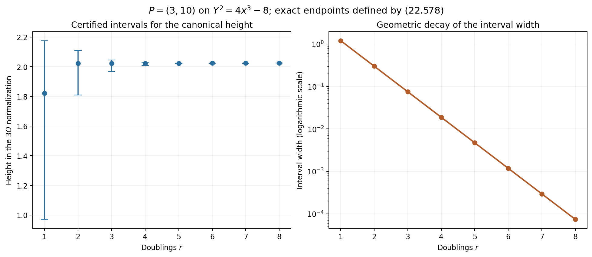
Figure 22.15. The intervals in (22.578) for successive doublings of \((3,10)\) on \(Y^2=4x^3-8\). The endpoints are displayed numerically; their defining integer recurrence and logarithmic expressions are exact. The width decreases by a factor of four at every step.
Canonical versus projective height estimates are used in S. David, Minorations de formes linéaires de logarithmes elliptiques, Lemma 3.4. The estimates (22.571)–(22.572) use the explicit duplication certificates displayed here and the plane-height normalization specified in (22.557).
A uniform arithmetic estimate for the first elliptic jet
Let \(E:y^2=x^3+Ax+B\) be nonsingular over a number field. Use plane coordinates \([X:Y:Z]\), with identity \([0:1:0]\). Write \(Q=[u:v:w]\) for a second point, so \(v^2w=u^3+Auw^2+Bw^3\). All logarithmic heights use the absolute normalization of Lemma 22.47.
Lemma 22.198. An explicit translation tuple at the identity
Define the following polynomials of bidegree \((2,2)\):
\[ \begin{split} T_X={}&-Au^2Z^2+Aw^2X^2-3BuwZ^2+3Bw^2XZ\\ &+2uvYZ+uwY^2-v^2XZ-2vwXY,\\ T_Y={}&AuvZ^2-2AuwYZ+2AvwXZ-Aw^2XY\\ &+3BvwZ^2-3Bw^2YZ-3u^2XY+3uvX^2-v^2YZ+vwY^2,\\ T_Z={}&AuwZ^2-Aw^2XZ+3u^2XZ-3uwX^2-v^2Z^2+w^2Y^2. \end{split} \tag{22.579} \]Where this tuple is nonzero it represents addition of the two points. For every finite \(Q\), it is nonzero at the first identity, and
\[ T((0,1,0),Q)=wQ. \tag{22.580} \]At an archimedean place the sum of the absolute coefficients of each coordinate polynomial is at most \(20\max(1,|A|,|B|)\). At a finite place its maximum coefficient modulus is at most \(\max(1,|A|,|B|)\).
Proof. On the affine open \(Z=w=1\), put \(d=x-u\) and \(N_x=(y-v)^2-(x+u)d^2\). Reduction by the two curve equations gives the three polynomial identities
\[ T_Z=d^3,\qquad T_X=dN_x,\qquad T_Y=-yd^3+(y-v)(xd^2-N_x). \tag{22.581} \]For example, replace \(x^3\) by \(y^2-Ax-B\) and \(u^3\) by \(v^2-Au-B\), and expand. The resulting expressions are exactly (22.579) with \(Z=w=1\). When \(d\ne0\), the ratios are the chord formulas \(x(P+Q)=N_x/d^2\) and \(y(P+Q)=-y+(y-v)(x-N_x/d^2)/d\). Homogenization and equality of projective cross products extend this identity wherever the tuple is nonzero. Substitution of \((X,Y,Z)=(0,1,0)\) gives (22.580); a finite point has \(w\ne0\).
The three coefficient sums are bounded respectively by \(2|A|+6|B|+6\), \(6|A|+6|B|+8\), and \(2|A|+8\). Each is at most the asserted archimedean bound. All coefficients are integers times \(1,A,B\); integers have finite-place modulus at most one. This proves the other bound. At \(Q=O\), translation is instead represented by the identity tuple \((X,Y,Z)\). Thus the displayed law supplies a frame near the first identity for every translation. It is not asserted to be nonzero at every pair of points. \(\square\)
Proposition 22.199. A formal coefficient bound with specified constants
For \(1\le i\le g\), let \(E_i:y^2=x^3+A_ix+B_i\) and \(q_i\in E_i(L)\), where \(L\) is a number field of degree \(e\). Put
\[ H_i=h(1:A_i:B_i),\qquad \mu_E=\sum_v w_v\log\max_i(1,|A_i|_v^{1/4},|B_i|_v^{1/6}), \qquad \mu_E\le\frac14\sum_iH_i. \tag{22.582} \]Here \(w_v=[L_v:\mathbf Q_v]/e\). Normalize a representative \(Q_i\) of each finite \(q_i\) to have one coordinate equal to one. Let \(V_i(t)=(-t,1,-s_i(t))\), as in Lemma 22.163, and set \(G_i(t)=T_i(V_i(t),Q_i)\). If \(q_i=O\), set \(G_i=V_i\).
Let \(P\) have multidegree \((d,D_1,\ldots,D_g)\), with nonnegative integer degrees and \(N_P\ge1\) nonzero coefficients. For \(a,\beta_i\in L\), put
\[ \mathscr H(t)=P\left(1,a+\sum_i\beta_i\ell_i(t_i), G_1(t_1),\ldots,G_g(t_g)\right), \qquad H_{a,\beta}=h(1:a:\beta_1:\cdots:\beta_g). \tag{22.583} \]For \(|\nu|=N\), its coefficient \(c_\nu=[t^\nu]\mathscr H\) satisfies
\[ \begin{split} h(c_\nu)\le\mathcal B_N:={}&h_c(P)+\log N_P +d\{H_{a,\beta}+\log(g+1)\}\\ &+\sum_iD_i\{2h(q_i)+H_i+\log20\}\\ &+N(\log8+\mu_E)+\log\Delta_N(d). \end{split} \tag{22.584} \]The denominator \(\Delta_N(d)\) is defined in Lemma 22.137. If \(c_\nu\ne0\), then \(\log|c_\nu|\ge-e\mathcal B_N\) at any specified complex embedding.
Proof. Put \(M_{i,v}=\max(1,|A_i|_v,|B_i|_v)\), \(q_{i,v}=\max_j|Q_{i,j}|_v\), and let \(M_v\) be the maximum inside (22.582). At a finite place, Lemmas 22.163 and 22.198 give
\[ |[t^m]G_{i,j}|_v\le M_{i,v}q_{i,v}^2M_v^m. \tag{22.585} \]For \(q_i=O\), take \(q_{i,v}=1\); the same bound follows directly from \(G_i=V_i\). At an infinite place, the series norm at radius \((8M_v)^{-1}\) is at most \(20M_{i,v}q_{i,v}^2\), by the coefficient sum in Lemma 22.198. The coefficient argument in Proposition 22.164 now applies: an additive monomial uses at most \(d\) logarithm factors, whose denominators divide \(\Delta_N(d)\), and its \(a,\beta\) degree is at most \(d\). At infinity its series norm is bounded by \(((g+1)\max(1,|a|_v,|\beta|_v))^d\). The \(N_P\) monomials contribute the factor \(N_P\) at infinity. Taking weighted logarithms yields exactly (22.584).
The inequality for \(\mu_E\) follows place by place from \(M_v\le\prod_iM_{i,v}^{1/4}\). All constants are nonnegative and unchanged by a field extension. The product-formula lower bound of Lemma 22.47 proves the assertion about a nonzero coefficient. This proof includes \(N=0\), \(d=0\), and identity translations; in the first two cases \(\Delta_N(d)=1\). \(\square\)
Lemma 22.200. A lower bound for the entire lift at every logarithm
Put \(a=-4A\), \(b=-4B\), and
\[ h_E=h(1:a:b),\qquad h_* =\max\{1,h_E,h(j(E))\}. \tag{22.586} \]Let \(L_E=\omega_1(\mathbf Z+\tau\mathbf Z)\) be a reduced period lattice for the differential \(dx/(2y)\). Use the entire tuple \(\Phi_{L_E}\) of Theorem 22.179, in its coordinate order \((\phi^3,\phi^3\wp,\phi^3\wp')\). The tuple
\[ \Psi_E(z)=\bigl(\Phi_{L_E,1}(z), \tfrac12\Phi_{L_E,2}(z), \Phi_{L_E,0}(z)\bigr) \tag{22.587} \]represents \([x(z):y(z):1]\), and for every \(z\in\mathbf C\),
\[ \|\Psi_E(z)\|_\infty\ge \exp(-21eh_*). \tag{22.588} \]Proof. Write \(y_\tau=\operatorname{Im}\tau\). Proposition 22.186 gives \(y_\tau\le eh_*\). The discriminant estimate of Proposition 22.185 and lattice scaling give
\[ |\omega_1|^{12}|a^3-27b^2| \ge0.89(2\pi)^{12}e^{-2\pi y_\tau},\qquad |a^3-27b^2|\le28e^{3eh_E}. \tag{22.589} \]The constant \(0.89(2\pi)^{12}/28\) exceeds one, since \(2\pi>6\). Therefore \(\log|\omega_1|\ge-(\pi/6+1/4)eh_*>-eh_*\). This argument includes \(a=0\) and \(b=0\); the discriminant itself is nonzero.
In (22.528), \(J_\tau(w)=(\operatorname{Im}w-y_\tau/2)^2/y_\tau\ge0\). The coordinate permutation and the factor \(1/2\) in (22.587) thus give
\[ \|\Psi_E(z)\|_\infty \ge\frac{0.073^3}{2} \exp\{-(3+3\pi)eh_*\}. \tag{22.590} \]Finally \(\log(2/0.073^3)<60/7\): the rational sum \(\sum_{r=0}^{30}(60/7)^r/r!\) exceeds \(2/0.073^3\). Together with \(\pi<22/7\), this implies \(3+3\pi+\log(2/0.073^3)<21\). Since \(eh_*\ge1\), (22.590) proves (22.588). The argument is uniform in \(z\), including lattice points and every choice of logarithm branch. \(\square\)
Theorem 22.201. A completely specified first-jet lower bound
For the curves and polynomial of Proposition 22.199, write \(h_{*,i}\) for (22.586). Choose logarithms \(v_i\) of \(q_i\) and use the lifts \(\Psi_i\) from (22.587). Define
\[ F_q(z)=P\left(1,a+\sum_i\beta_i z_i, \Psi_1(v_1+z_1),\ldots,\Psi_g(v_g+z_g)\right). \tag{22.591} \]If its first nonzero total degree is \(N\), every nonzero degree-\(N\) coefficient \(f_\nu\) satisfies
\[ \log|f_\nu|\ge -e\left(\mathcal B_N+21\sum_iD_i h_{*,i}\right). \tag{22.592} \]In particular, let \(p_i\in E_i(L)\) have logarithms \(u_i\), let \(a=su_0\), \(q_i=[s]p_i\), \(v_i=su_i\), and let \(s\in\mathbf Z\). Write \(H=h(1:u_0:\beta_1:\cdots:\beta_g)\) and choose real numbers \(\mathcal V_i\ge\max\{h_{*,i},\widehat h_3(p_i)\}\), where \(\widehat h_3\) has the normalization of (22.570). Then
\[ \begin{split} \log|f_\nu|\ge-e\bigg[&h_c(P)+\log N_P +d\{H+\log((g+1)\max(1,|s|))\}\\ &+\sum_iD_i(2s^2+48)\mathcal V_i\\ &+N\left\{\log8+\frac14\sum_i(\mathcal V_i+\log4) +2(\log2)H_{\min(d,N)}\right\}\bigg]. \end{split} \tag{22.593} \]Here \(H_m=\sum_{r=1}^m1/r\) and \(H_0=0\).
Proof. Normalize \(Q_i\) at a coordinate where \(\Psi_i(v_i)\) has largest modulus. Thus all coordinates of \(Q_i\) have modulus at most one at the chosen embedding, and \(\Psi_i(v_i)=\kappa_iQ_i\), with \(|\kappa_i|=\|\Psi_i(v_i)\|_\infty\). For finite \(q_i\), Lemma 22.198 gives \(G_i(0)=b_iQ_i\), where \(b_i=Q_{i,Z}\ne0\) and \(|b_i|\le1\). At \(q_i=O\), take \(Q_i=(0,1,0)\) and \(b_i=1\).
The first homogeneous part is unchanged by \(z_i=\ell_i(t_i)=t_i+O(t_i^2)\), as proved in Proposition 22.138. The two local lifts differ by holomorphic units, so the same first-degree comparison as (22.462) gives
\[ f_\nu=c_\nu\prod_i(\kappa_i/b_i)^{D_i},\qquad c_\nu\ne0. \tag{22.594} \]Use Proposition 22.199, \(|b_i|\le1\), and (22.588) to prove (22.592). No estimate for the inverse translation scalar is needed.
For the sampled assertion, multiplication of one homogeneous coordinate by \(s\) gives \(H_{su_0,\beta}\le H+\log\max(1,|s|)\), also for \(s=0\). Changing from \([1:x:2y]\) to \([x:y:1]\) changes height by at most \(\log2\). Corollary 22.196 therefore gives \(h(q_i)\le(s^2+10)\mathcal V_i+\log2\). Also \(H_i\le h_{E_i}+\log4\le\mathcal V_i+\log4\). Consequently
\[ 2h(q_i)+H_i+\log20+21h_{*,i} \le(2s^2+42)\mathcal V_i+\log320 <(2s^2+48)\mathcal V_i. \tag{22.595} \]Here \(\log320<6\), as follows already by summing \(\sum_{r=0}^{12}6^r/r!>320\). Finally use (22.582) and \(\log\Delta_N(d)\le2(\log2)N H_{\min(d,N)}\) from Lemma 22.137. This proves (22.593), including zero coordinates, torsion samples, negative \(s\), \(d=0\), and \(N=0\). \(\square\)
Exercise 22.202. Translation by a point of order two
On \(E:y^2=x^3-x\), let \(q=(0,0)\). Find the tuple (22.579) for translation by \(q\), prove that its square represents the identity wherever defined, and compute its first jet at \(O\).
Solution. Substitution gives
\[ T_q(X,Y,Z)=(-X^2,XY,Y^2+XZ),\qquad T_q(T_q(X,Y,Z))=-X^3(X,Y,Z). \tag{22.596} \]The second identity is a direct polynomial identity in three independent variables. Thus the translation is an involution on a dense open set, hence on the curve; \(q\ne O\) has order two. The tuple is nonzero at \(O\), where it equals \((0,0,1)\).
Here \(s=t^3-ts^2=t^3-t^7+O(t^{11})\), so evaluation at \(V(t)=(-t,1,-s(t))\) gives
\[ (x_q(t),y_q(t))= \left(\frac{-t^2}{1+ts(t)},\frac{-t}{1+ts(t)}\right), \qquad (x_q'(0),y_q'(0))=(0,-1). \tag{22.597} \]This agrees with the invariant vector field \((2y,3x^2-1)\) at \((0,0)\), since \(\ell'(0)=1\). In particular the \(y\)-coordinate has first coefficient \(-1\). The local scalar is one even though \(q\) is a point with zero \(y\)-coordinate. For \(P=Y\), (22.584) gives the explicit upper bound \(\log160\) for the height of this coefficient; its actual height is zero. \(\square\)
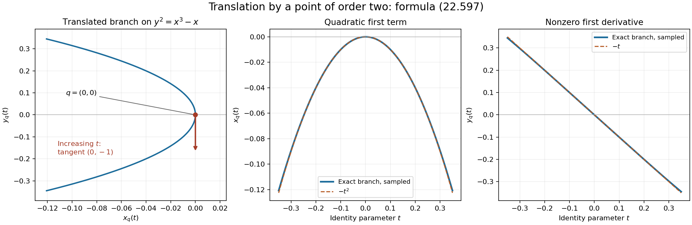
Figure 22.16. The map in (22.597) sends a neighborhood of the identity, parametrized by \(t\), to the branch through \((0,0)\). The left panel shows its image and the tangent direction for increasing \(t\). The two right panels show the coordinate functions and their first terms \(-t^2\) and \(-t\). The algebraic formula and the derivative are exact; plotted points are numerical evaluations of the formal branch.
The first-jet method is discussed in É. Gaudron, Mesures d'indépendance linéaire de logarithmes dans un groupe algébrique commutatif, Sections 6.11–6.13. The entire-coordinate bounds used here are proved in Theorems 22.179 and 22.182, with comparison to S. David, Minorations de formes linéaires de logarithmes elliptiques, Proposition 3.1. All constants in (22.593) are specified by the displayed curve, polynomial and height data.
Numerical weights and a stronger multiplicity estimate
Let \(g\ge1\), \(n=g+1\), and let \(E_i\) and \(p_i\in E_i(K)\) be elliptic curves and points over a number field \(K\) of degree \(D\), in the models of (22.557) and (22.586). Choose nonzero complex logarithms \(u_i\) of \(p_i\). Put \(h=\max_i h_{*,i}\). Choose real height budgets \(v_i\) and parameters \(B,E\) satisfying
\[ \begin{gathered} b=\log B\ge \mathrm e h,\qquad Db\ge v_1\ge\cdots\ge v_g\ge h,\qquad v_i\ge\widehat h_3(p_i),\qquad \ell=\log E\ge1,\\ E\le\frac{\mathrm e\sqrt{Dv_i}\,|\omega_{1,i}| \sqrt{\operatorname{Im}\tau_i}} {\sqrt{3\pi}\,|u_i|}\quad(1\le i\le g). \end{gathered} \tag{22.598} \]The requirement \(u_i\ne0\) makes each denominator meaningful. Terms with zero logarithm can be omitted before choosing these parameters. Throughout this section \(\mathrm e=\exp(1)\).
Lemma 22.203. A height bound for the analytic parameter
Under (22.598),
\[ \ell\le5Dv_g,\qquad L=\log b+h+\log D+\ell\le R=b+\log D+\ell,\qquad L\ge\ell. \tag{22.599} \]Proof. Fix one index, write \(H=Dv_i\ge1\), \(y=\operatorname{Im}\tau_i\), \(\omega=\omega_{1,i}\), and \(r=|u_i/\omega|>0\). Proposition 22.186 gives \(y\le H\). If \(r\ge1/10\), (22.598) gives \(\ell\le1+\log H+\log(10/3)<3H\), since \(\pi>3\), \(\log H\le H-1\), and \(\log(10/3)<2\).
Suppose \(r<1/10\). A nonzero point of a reduced normalized lattice has modulus at least one, by the shortest-vector construction in Proposition 22.186. Thus \(p_i\ne O\). Proposition 22.190 gives \(|u_i|^2\ge0.9/|x(p_i)|\). The canonical-height bound (22.567) implies
\[ h_x(p_i)\le\tfrac23\widehat h_3(p_i) +\tfrac53h_{E_i}+\tfrac13\log27648\le6v_i. \tag{22.600} \]Here \(\log27648<11\), as is certified by the positive sum \(\sum_{j=0}^{25}11^j/j!>27648\).
We also have \(\log(|\omega|\sqrt y/\sqrt{3\pi})\le H/3\). For a nonzero invariant \(a_i\), (22.544) gives \(\log|\omega|\le1.85-\tfrac14\log12-\pi y/6+H/3\). The maximum of \(\tfrac12\log y-\pi y/6\) is \(\tfrac12\log(3/\pi)-1/2\), by differentiation. The remaining constant is \(1.35-\tfrac14\log12-\log\pi<0\): use \(\pi>3\), \(\mathrm e<3\), and \(9<12\). If \(a_i=0\), then \(j(E_i)=0\), hence \(y\le1\) by Proposition 22.186. The bound \(|g_3(\tau_i)|<1005\) gives \(\log|\omega|\le(\log1005+H)/6\). Since \(1005<2\cdot729<\mathrm e(3\pi)^3\), the same assertion follows from \(H\ge1\).
The height bound for a complex coordinate now yields
\[ \ell\le1+\tfrac12\log H+\tfrac D2h_x(p_i) +H/3+\tfrac12\log(10/9)<\tfrac92H<5H. \tag{22.601} \]Indeed \(1+\tfrac12\log H\le H\) and \(\tfrac12\log(10/9)<1/6\), because \(\exp(1/3)>1+1/3>10/9\). Apply the result to every index. Finally \(b\ge\mathrm e\) gives \(\log b\le b/\mathrm e\), by maximizing \(\log t/t\). Also \(h\le b/\mathrm e\). Thus \(\log b+h\le2b/\mathrm e<b\), proving the last claims of (22.599). \(\square\)
Lemma 22.204. Explicit preliminary degrees
Define positive constants, depending only on \(g\), by
\[ \begin{gathered} \epsilon=\frac1{200g^2},\quad \lambda=2\epsilon,\quad A_g=g\log(4n)+5\log n+15,\\ J_g=\frac{12(13+4\mathrm e^2)}{25+4\mathrm e^2} n\log(4n)+56\log n+54,\\ c_4=4^g n^{g+1}(1+\lambda)8n A_gJ_g,\qquad c_6=n2^g,\\ c_7=\frac{4\log(4n)}{13+4\mathrm e^2} +\frac{60+20\log n}{(13+4\mathrm e^2)g},\qquad c_5=\frac{c_6c_4^{2g+1}}{n!6^gc_7^g}. \end{gathered} \tag{22.602} \]Set
\[ \begin{gathered} S=\left\lfloor\frac{c_4DL}{\ell}\right\rfloor,\qquad U_0=c_5D^{2g+2}RL^{g+1}\left(\prod_i v_i\right)\ell^{-2g-1},\\ \Theta=\frac{U_0}{DL},\qquad t_i=\frac{c_7U_0}{DS^2v_i}\quad(1\le i\le g),\qquad C=(1+\epsilon)2^g. \end{gathered} \tag{22.603} \]These numbers satisfy
\[ \begin{gathered} \frac{c_4DL}{2\ell}\le S\le\frac{c_4DL}{\ell},\qquad \Theta>800g^3n,\quad \Theta\ge c_4,\quad t_i>400g^3+1,\\ M:=\min_i\frac{\Theta}{t_i} =\frac{S^2v_g}{c_7L}\ge\frac{c_4^2}{20c_7}>6n. \end{gathered} \tag{22.604} \]Proof. The elementary estimates
\[ c_4\ge6480\,4^gn^{g+2},\qquad c_4>10^5n^2, \qquad 0<c_7<5n \tag{22.605} \]are useful. The first uses \(A_g>15\), \(J_g>54\). For the second, \(\log2>3/5\) follows from \(\mathrm e<3\) and \(3^3<2^5\). Hence \(A_g>19\), \(J_g>85\), and \(4^gn^g\ge8\), giving \(c_4>103360n^2\). For the last use \(\log(4n)\le2n\), \(\log n\le n\), and \(n\ge2\): the numerator defining \(c_7\), with \(1/g\le1\), is at most \(28n+60\le58n\), while its denominator exceeds 13.
Since \(DL/\ell\ge1\), taking the floor loses at most half. Moreover (22.599) gives \(v_i\ge\ell/(5D)\). Substitution into (22.603), using \(R,L\ge\ell\), gives
\[ \Theta\ge c_5/5^g,\qquad t_i\ge\frac{c_7c_5}{5^{g-1}c_4^2}. \tag{22.606} \]Using \(n!\le n^n\), \(c_7<5n\), and \(c_6\ge1\), the first bound is greater than \(10^5n^{2g+1}\), and its ratio to \(c_4\) is at least \(c_4^{2g}/(150^gn^{2g+1})>1\). Since \(n^{2g}\ge g^3\), this proves both assertions about \(\Theta\). The second bound is at least
\[ \frac{c_4^{2g-1}}{150^gn^{2g}} >\frac{2000}{3}\left(\frac{10^{10}}{150}\right)^{g-1} n^{2g-2}\ge\frac{2000}{3}g^3>400g^3+1. \tag{22.607} \]For \(g=1,2\), the penultimate comparison is direct; for \(g\ge3\), use \(2g-2\ge3\) and \(n\ge g\). Finally the lower bound for \(S\), followed by \(v_g\ge\ell/(5D)\) and \(L\ge\ell\), proves the bound for \(M\). In fact (22.605) gives \(c_4^2/(20c_7)>10^8n^3>6n\). \(\square\)
Proposition 22.205. An extremal additive degree
Let \(p\in G=\mathbf G_a\times\prod_iE_i\), and let \(W=\{z_0=\sum_i\beta_i z_i\}\), with every \(\beta_i\ne0\). For each connected subgroup \(H=\{0\}\times B\) whose Lie algebra is contained in \(W\), put \(h_B=\dim B\), \(q_B=g-h_B\), and \(Q_B=\#\{sp+H:0\le s<S\}\). Write \(P_q(z)=\prod_{j=1}^q(z+j)\), and define
\[ t_0=\min_B \frac{P_{q_B}(\Theta)Q_B\mathcal H_B(t_1,\ldots,t_g)} {C n!3^g\prod_i t_i}. \tag{22.608} \]The minimum exists, is attained, and satisfies
\[ 400g^3+1<t_0\le\frac{U_0}{c_6DR},\qquad P_{q_B}(\Theta)Q_B\mathcal H_B(t)\ge C\mathcal H_G(t) \tag{22.609} \]for every such \(B\), with equality for a minimizing \(B_*\). Every integer \(L_i=\lfloor t_i\rfloor\), including \(i=0\), is greater than \(400g^3\).
Proof. The multidegree polynomials in Proposition 22.149 have nonnegative integer coefficients and a positive coefficient. At fixed positive weights, a bounded value bounds each of those integers. The dimension has finitely many possibilities and \(1\le Q_B\le S\). Hence the same finite-coefficient argument as in Lemma 22.151 gives a positive attained minimum.
For the point subgroup, \(\mathcal H_{\{0\}}=1\) and \(Q_{\{0\}}\le S\). Direct substitution of (22.602)–(22.603) shows that its value divided by \(U_0/(c_6DR)\) is at most
\[ \frac1{1+\epsilon}\prod_{j=1}^g(1+j/\Theta)\le1. \tag{22.610} \]Indeed \(\sum j/\Theta<\epsilon/8\), by (22.604), and \(\prod(1+x_j)\le\exp(\sum x_j)\le1+\epsilon/4\). The last step follows from \(e^x\le(1-x)^{-1}\le1+2x\) for \(0\le x\le1/2\). This proves the upper bound.
At a minimizing subgroup of dimension \(h_B\), set \(q=g-h_B\ge1\). A positive monomial of \(\mathcal H_B\) has coefficient at least \(h_B!3^{h_B}\). Equality in (22.609) and \(P_q(\Theta)\ge\Theta^q\) give
\[ t_0\ge\frac{h_B!}{Cn!} \left(\frac{c_4^2}{60c_7}\right)^q. \tag{22.611} \]Put \(A=c_4^2/(60c_7)\). There are \(q+1\) factors in \(n!/h_B!\), each at most \(n\), and \(A>n\). Thus the right side is at least \(A/(Cn^2)\). From (22.605) and \(C<2^{g+1}\), this exceeds \(69984\,8^gn^{2g+1}>400g^3+1\). The remaining assertions follow from the definition of the minimum and (22.604). \(\square\)
Lemma 22.206. Counting powers of an ideal
Let \(R\) be a regular local ring of dimension \(r\), containing a characteristic-zero field. Let \(I\) be primary for its maximal ideal. Suppose \(\rho\) transverse derivations, normalized as in (22.61), send every element of \(I\) into the maximal ideal after every word of length at most \(T\). Assume that these derivations extend to a set of \(r\) derivations dual modulo the maximal ideal to a regular parameter system. If a parameter ideal \(J\subset I\) is generated by a regular sequence, then
\[ \operatorname{length}(R/J)\ge(T+1)^\rho. \tag{22.612} \]The assertion includes \(\rho=0\).
Proof. Put \(a=T+1\). For a word applied to a product of \(m\) elements of \(I\), call the first \(\rho\) derivations the selected ones. If it has \(b\) other derivations and fewer than \(a(m-b)\) selected derivations, one of the \(m\) factors receives no other derivation and at most \(T\) selected ones. Every term of the product rule therefore vanishes in the residue field. This applies to every element of \(I^m\).
Use the filtration and coefficient-lifting proof of Theorem 22.25, now with all \(r\) parameters. In each ordinary degree it proves independence, modulo \(I^m\) and the next maximal-ideal power, of the monomials \(z^\alpha\) satisfying
\[ |\alpha_{1:\rho}|<a\bigl(m-|\alpha_{\rho+1:r}|\bigr). \tag{22.613} \]For each selected multiindex, use the word with those exact derivation counts. The normalized linear action kills every other monomial of the same total degree, just as in (22.64). Consequently \(\operatorname{length}(R/I^m)\) is at least the number \(N_m\) of these monomials.
If \(0<\rho<r\), this count is
\[ N_m=\sum_{b=0}^{m-1} \binom{b+r-\rho-1}{r-\rho-1} \binom{a(m-b)+\rho-1}{\rho},\qquad \lim_{m\to\infty}\frac{r!N_m}{m^r}=a^\rho. \tag{22.614} \]To obtain the limit, use the leading terms of the two binomial polynomials and the Riemann sum on \([0,1]\). Repeated integration by parts gives \(\int_0^1t^{r-\rho-1}(1-t)^\rho dt =(r-\rho-1)!\rho!/r!\). For \(\rho=r\), the count is \(\binom{am+r-1}{r}\); for \(\rho=0\), it is \(\binom{m+r-1}{r}\). These give the same limit.
We spell out the corresponding regular-sequence count. If \(J=(f_1,\ldots,f_r)\), then \(J^d/J^{d+1}\) is free over \(R/J\) on the degree-\(d\) monomials in the \(f_i\). Here is an induction proof. For \(I'=(f_1,\ldots,f_{r-1})\), the induction hypothesis gives the same description of its graded pieces. Since \(f_r\) is regular on \(R/I'\), it is regular on each such piece and hence on \(R/I'^m\). It follows that \((I'^m:f_r)=I'^m\). Expanding \(J^{m+1}=\sum_jf_r^jI'^{m+1-j}\) then gives \((J^{m+1}:f_r)=J^m\). To prove independence of the degree-\(d\) monomials, reduce a relation modulo \(f_r\). The induction hypothesis for the regular sequence in \(R/(f_r)\) puts the coefficients of the terms without \(f_r\) in \(J\). Remove these terms, divide the remainder by \(f_r\), and use the colon identity and induction on \(d\). All coefficients lie in \(J\). Permutation of a regular sequence in a local ring is the proved Proposition 1.2 of Regular sequences, depth and Cohen–Macaulay modules. The base case is cancellation of a nonzerodivisor.
Adding the graded lengths gives
\[ \operatorname{length}(R/J^m) =\binom{m+r-1}{r}\operatorname{length}(R/J). \tag{22.615} \]Since \(J^m\subset I^m\), this is at least \(N_m\). Divide by \(m^r/r!\) and use (22.614) to prove (22.612). \(\square\)
Theorem 22.207. A multiplicity estimate from powers
Use the notation and hypotheses of Theorem 22.159, so that a nonzero section of multidegree \(L\) vanishes to order at least \(nT+1\) along \(W\) on \(\Sigma(n)\). There is a connected proper subgroup \(H\), of codimension \(r\), such that, with \(\rho=\dim W-\dim(W\cap\operatorname{Lie}H)\),
\[ (T+1)^\rho\,\#\{s+H:s\in\Sigma\}\, \mathcal H_H(L) \le2^{r-1}\mathcal H_G(L). \tag{22.616} \]Proof. Repeat the ideal chain and the finite-coset construction of Theorem 22.159 through (22.439), keeping the ideal \(\mathcal J\) and its coset components rather than the numerical length bound. Choose \(v_0\in V\), and replace \(\mathcal J\) by \(t_{-v_0}^*\mathcal J\). This ideal contains the original section \(P\): the summand with translation \(v_0\) contains \(t_{v_0}^*P\). Its zero set is the translate of the same finite union of cosets, with the same degrees and derivative conditions.
In the embedding given by \(\mathcal L_L\), \(P\) has degree one, and the translated ideal has quadratic generators by Lemma 22.157. Start the complete intersection with \(P\), then choose \(r-1\) linear combinations of those quadrics. At each stage before codimension \(r\), no component of the current intersection is contained in the ideal's zero set, whose pure codimension is \(r\). Avoiding the finitely many corresponding proper linear conditions chooses the next equation. The regular-sequence argument of Lemma 22.30 applies.
At the generic point of each retained coset, the localized ideal is primary in a regular local ring of dimension \(r\). The \(W\)-directions have transverse rank \(\rho\). Normalize them as in Corollary 22.26, and extend them to \(r\) transverse derivations using invariant vector fields of the smooth group. The coefficient changes preserve the derivative-vanishing condition by the product rule. Lemma 22.206 gives intersection length at least \((T+1)^\rho\).
Lemma 22.30 bounds the total weighted degree by \(1\cdot2^{r-1}\mathcal H_G(L)\). There are at least \(\#(\Sigma+H)/H\) retained cosets, all of degree \(\mathcal H_H(L)\). This proves (22.616). \(\square\)
Corollary 22.208. The explicit weights force a nonzero jet
Choose \(t_0\) by Proposition 22.205, let \(L_i=\lfloor t_i\rfloor\), and put \(T=\lfloor\Theta\rfloor\). Every section of this multidegree that is not identically zero on \(G\) has a nonzero \(W\)-jet of order at most \(nT\) at some \(sp\), where \(0\le s\le n(S-1)\).
Proof. Suppose all these jets vanish. Apply (22.616) with \(\Sigma=\{sp:0\le s<S\}\). First suppose \(\operatorname{Lie}H\subset W\). Write \(H=0\times B\), \(q=g-\dim B\), and \(\eta=(400g^3+1)^{-1}\). Since \(L_i>(1-\eta)t_i\), \(T+1>\Theta\), and \(P_q(\Theta)\le(1+\epsilon/4)\Theta^q\), (22.609) gives
\[ \frac{(T+1)^qQ_B\mathcal H_B(L)}{2^g\mathcal H_G(L)} \ge\frac{(1+\epsilon)(1-\eta)^{\dim B}} {1+\epsilon/4} \ge\frac{(1+\epsilon)(1-\epsilon/2)}{1+\epsilon/4}>1. \tag{22.617} \]The second inequality uses Bernoulli's inequality and \(g\eta<\epsilon/2\); the last uses \(\epsilon<1/2\). This contradicts (22.616), since \(r-1\le g\).
Otherwise \(\rho=r\), since \(W\) is a hyperplane. Every connected subgroup is either \(0\times B\) or \(\mathbf G_a\times B\), by Lemma 22.71. The multidegree calculation of Proposition 22.149 applies to an arbitrary abelian subvariety \(B\); only its final assertion about an omitted coordinate required \(\operatorname{Lie}H\subset W\).
If \(H=0\times B\) has dimension \(h_B=n-r\), choose one positive monomial of its multidegree polynomial. Cancel its coordinates from (22.616), use \(Q_B\ge1\), and use \(L_i\le t_i\). The result is
\[ 1\le\frac{2^{r-1}n!3^{r-1}}{h_B!} \frac{t_0}{\Theta} \prod_{j\notin I}\frac{t_j}{\Theta} \le\frac1{2^g}\frac LR \left(\frac{6n}{M}\right)^{r-1}<1. \tag{22.618} \]Here \(|I|=h_B\), \(t_0/\Theta\le L/(c_6R)\), and there are \(r-1\) missing elliptic coordinates. The factorial ratio is at most \(n^r\). If \(H=\mathbf G_a\times B\), the additive degree cancels instead; the same calculation gives
\[ 1\le\frac12\left(\frac{6n}{M}\right)^r<1. \tag{22.619} \]Indeed its dimension is \(n-r\) and its multidegree has a positive monomial with coefficient \((n-r)!3^{g-r}\) times \(L_0\). Both contradictions use \(M>6n\). No possible subgroup remains, proving the assertion. \(\square\)
Proposition 22.209. Explicit small-rank sampling ranges
For a minimizing \(B_*\), put \(h_B=\dim B_*\), \(q=g-h_B\), and \(Q=Q_{B_*}\). The following two systems of jets have rank at most \((1+\epsilon)\dim H^0(X,\mathcal L_L)/J_g\):
- If \(Q=S\), use all jets of total order at most \(nT\) at \(sp\), \(0\le s<S_0\), where \(S_0=\lfloor S/((1+\lambda)4^gn^{g+1}J_g)\rfloor\).
- Choose a basis of \(W\) beginning with \(\operatorname{Lie}B_*\), and designate one normal direction. Use points \(sp\), \(0\le s<2nS\), and all jets of total order at most \(nT\) with designated exponent less than \(T_0=\lfloor\Theta/(2g(1+\lambda)4^gn^{g+1}J_g)\rfloor\).
Both \(S_0\) and \(T_0\) are positive.
Proof. The ratio \(\mathcal H_G(t)/\mathcal H_G(L)\) is at most \((1-\eta)^{-n}\le1+\lambda\). Indeed \((1-\eta)^n\ge1-n\eta\ge(1+\lambda)^{-1}\); the last inequality is \(n(100g^2+1)\le400g^3+1\). The rank formula (22.404), the extremal equality, and \(\dim H^0(X,\mathcal L_L)\ge\mathcal H_G(L)/n!\) bound the rank divided by this dimension by
\[ C(1+\lambda)\frac{n!}{h_B!}\frac cQ \frac{|\mathcal A|}{P_q(\Theta)}. \tag{22.620} \]For total order \(nT\), the last fraction is at most \(n^q/q!\). Since \(n!/(h_B!q!)=n\binom gq\le n2^g\), the first assertion follows from \(c\le S_0\).
In the second case, at most \(2nQ\) cosets occur, as in Corollary 22.152. The last fraction in (22.620) is at most \((T_0/\Theta)n^{q-1}/(q-1)!\). Using \(n!/(h_B!(q-1)!)=nq\binom gq\) gives the asserted bound from the definition of \(T_0\).
Finally the denominator defining \(S_0\) equals \(c_4/(8nA_g)\), so (22.604) gives a quotient at least \(4nA_g>1\). The denominator defining \(T_0\) equals \(gc_4/(4nA_g)\); since \(\Theta\ge c_4\), its quotient is at least \(4nA_g/g>1\). \(\square\)
Exercise 22.210. A power count in two transverse directions
In \(R=\mathbf Q[x,y]_{(x,y)}\), put \(I=(x,y)^4\). Compute \(\operatorname{length}(R/I^m)\), and show that every regular-sequence parameter ideal \(J\subset I\) has colength at least 16. Give a parameter ideal attaining this value.
Solution. The monomials with total degree less than \(4m\) form a basis of \(R/I^m\), hence
\[ \operatorname{length}(R/I^m)=\binom{4m+1}{2}=8m^2+2m, \qquad \lim_{m\to\infty}\frac{2\operatorname{length}(R/I^m)}{m^2}=16. \tag{22.621} \]Equation (22.615) and \(J^m\subset I^m\) give the lower bound 16. The regular sequence \((x^4,y^4)\) lies in \(I\); its quotient has the 16 basis monomials \(x^iy^j\), \(0\le i,j<4\). In contrast \(\operatorname{length}(R/I)=10\). The leading count of the powers therefore gives a stronger intersection bound than the first colength alone. \(\square\)
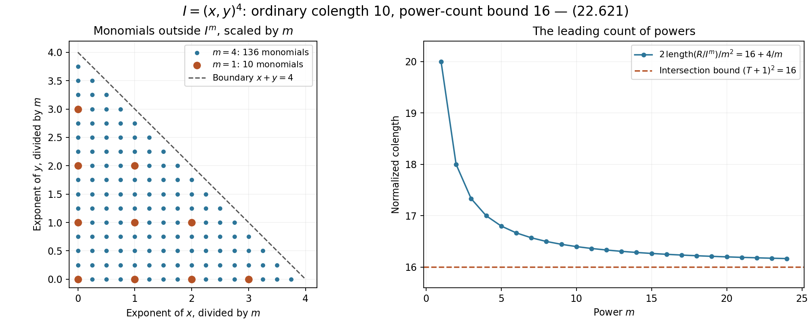
Figure 22.17. For \(I=(x,y)^4\), the scaled monomials outside \(I^m\) fill the triangle \(x+y<4\). Its area is eight. Twice the monomial count divided by \(m^2\) tends to 16, the intersection lower bound in Exercise 22.210. The finite counts and the limiting value follow from (22.621).
The parameter shape and extremal additive degree are those of S. David, Minorations de formes linéaires de logarithmes elliptiques, Section 5. The estimate \(\ell\le5Dv_g\) and the complete rounding arguments above use the height bounds proved here. The use of powers to retain multiplicity is related to A. Galateau, Un théorème de zéros dans les groupes algébriques commutatifs, Section 2.1. Lemmas 22.206–22.207 give the local count and intersection argument needed for (22.616) explicitly.
Numerical auxiliary sections
Use the parameters of Propositions 22.203–205. In particular, \(n=g+1\), \(T=\lfloor\Theta\rfloor\), \(L_i=\lfloor t_i\rfloor\), and \(L=\log b+h+\log D+\ell\), whereas \(L_i\) denotes an integer degree. Write
\[ \kappa=1+\epsilon,\qquad \mathcal M=(L_0+1)3^g\prod_{i=1}^gL_i, \qquad Z_g=(1+\lambda)4^gn^{g+1}J_g. \tag{22.622} \]Thus \(\mathcal M\) is the dimension of the space of sections on the product of the additive projective line and the plane cubics. Its monomial basis is the basis of Proposition 22.149. For the long Weierstrass equation, division by the cubic after normalizing its leading coefficient to one gives the same condition: the exponent of the elliptic \(X_i\) is at most two.
Proposition 22.211. Sampling through twice the target order
Let \(B_*\) minimize (22.608), put \(j=\dim B_*\), \(q=g-j\), and write \(Q=Q_{B_*}\). Set
\[ S_0=\lfloor S/Z_g\rfloor,\qquad T_0=\lfloor\Theta/(gZ_g)\rfloor. \tag{22.623} \]Both integers are positive. The following are bounds for the complex rank of the indicated systems of divided \(W\)-jets:
- If \(Q=S\), use all orders at most \(2nT\) at the points \(sp\), \(0\le s<S_0\). Their rank is at most \(\kappa\mathcal M/(2^j j!J_g)\).
- In a basis beginning with \(\operatorname{Lie}B_*\), designate one of its normal directions. Use \(0\le s<2nS\), all total orders at most \(2nT\), and designated exponent less than \(T_0\). Their rank is at most \(\kappa(q/g)\mathcal M/(2^j j!J_g)\).
Proof. Put \(P_q(X)=\prod_{a=1}^q(X+a)\). The rank ratio in (22.620) remains valid for either normal index set. Multiplication by an analytic trivializing unit changes a divided jet only by an invertible triangular combination of its lower jets. The two index sets are downward closed, so the rank bound applies equally to the entire lifts used below. For the first set,
\[ \frac{\binom{2nT+q}{q}}{P_q(\Theta)} \le\frac{(2n)^q}{q!},\qquad \frac{n!}{j!q!}=n\binom gj\le\frac{n^{j+1}}{j!}. \tag{22.624} \]The first inequality follows factor by factor from \(2nT+a\le2n(\Theta+a)\). The second follows by writing \(\binom gj=g(g-1)\cdots(g-j+1)/j!\) and bounding each numerator by \(n\); the empty product is one. Since there are at most \(S_0\) cosets, substitution in (22.620) gives the first bound: the powers of two leave \(2^{g+q}/4^g=2^{-j}\), and the powers of \(n\) cancel.
For the second set, summing over the designated exponent gives
\[ \frac{|\mathcal A|}{P_q(\Theta)} \le\frac{T_0}{\Theta}\frac{(2n)^{q-1}}{(q-1)!}, \qquad \frac{n!}{j!(q-1)!}\le\frac{q n^{j+1}}{j!}. \tag{22.625} \]Indeed each summand is at most \(\binom{2nT+q-1}{q-1}\); cancel its \(q-1\) factors against the first factors of \(P_q\), and bound the remaining factor below by \(\Theta\). This also proves the formula when \(q=1\). There are at most \(2nQ\) cosets among these points: if the order of the coset of \(p\) is below \(S\), it is \(Q\); otherwise \(Q=S\) and there are at most \(2nS\) points. Substitution proves the second bound.
Finally \(Z_g=c_4/(8nA_g)\). The lower bound for \(S\) in (22.604) and \(DL/\ell\ge1\) give \(S/Z_g\ge4nA_g>1\). Since \(\Theta\ge c_4\), \(\Theta/(gZ_g)\ge8nA_g/g>1\). Taking floors therefore gives positive integers. \(\square\)
Lemma 22.212. The coefficient field and its height budget
Assume the normalized coefficients satisfy \(|u_0|,|\beta_i|\le1\) and \(H=h(1:u_0:\beta_1:\cdots:\beta_g)\le nb\). Let \(K_0\) be the subfield generated over \(\mathbf Q\) by these coefficients, all curve coefficients \(g_{2,i},g_{3,i}\), and the affine coordinates of the finite points \(p_i\). Points equal to the identity require no coordinates. Put \(d=[K_0:\mathbf Q]\le D\). There is a basis \((\xi_1,\ldots,\xi_d)\), with \(\xi_1=1\), for which
\[ H_\xi:=h(\xi_1:\cdots:\xi_d) \le(d-1)(13g+1)Db, \quad dH_\xi\le\frac{(13g+1)5^g}{c_5}U_0, \quad d(\log d+H_\xi)\le\mathfrak e_gU_0, \tag{22.626} \]where \(\mathfrak e_g=(13g+2)5^g/c_5\).
The following bounds also hold:
\[ \begin{split} \mathfrak b_g&=\log c_5+4g+4,\\ \log U_0&\le\mathfrak b_gDL,\\ \mathfrak v_g&= \frac{n\mathfrak b_g+g\log3+\log2+1}{c_4},\\ \log(d\mathcal M)&\le\mathfrak v_gU_0. \end{split} \tag{22.627} \]Proof. The height of the tuple of generators, with one adjoined, is at most the sum of the heights of its separate blocks. By (22.574), \(h_3(p_i)\le11v_i\), so this sum is at most \(H+12\sum_i v_i\le(13g+1)Db\). Apply Lemma 22.142 over \(\mathbf Q\). Moreover
\[ U_0\ge c_5D^{2g+2}b\frac{\prod_i v_i}{\ell^g} \ge\frac{c_5}{5^g}D^{g+2}b \ge\frac{c_5}{5^g}D^3b. \tag{22.628} \]Here \(L\ge\ell\), \(R\ge b\), \(\ell\le5Dv_g\), and \(v_i\ge v_g\). Since \(d(d-1)\le D^2\), this proves the second bound in (22.626). The elementary inequality \(D\log D\le D^3b\) supplies the last one.
To bound \(\log U_0\), discard the nonpositive term \(-(2g+1)\log\ell\) from its defining formula. Since \(v_i\le Db\), this gives
\[ \log U_0\le\log c_5+(3g+2)\log D+g\log b +\log R+(g+1)\log L. \tag{22.629} \]We have \(\log L\le L\) and \(\log R\le L\). For the latter, put \(x=\log D+\ell\ge0\); then \(R=b+x\le b e^x\le e^L\), using \(b\ge1\). Also \(\log D+\log b\le L\). Thus (22.629) is at most \(\log c_5+(4g+4)L\le\mathfrak b_gDL\). Here \(c_5>1\): the bounds \(n!\le n^n\) and \(c_7<5n\) give \(c_5>c_4^{2g+1}/(15^gn^{2g})>1\), using \(c_4>10^5n^2\).
Every \(t_i\le U_0\). For \(i=0\) this follows from (22.609), and for \(i>0\) from \(c_7<5n\) and \(S\ge c_4/2\). Consequently \(\mathcal M\le2\cdot3^gU_0^n\). Add \(\log d\le\log D\le DL\) and use \(U_0=\Theta DL\ge c_4DL\). This proves (22.627). \(\square\)
Proposition 22.213. A numerical bound for the sampling matrix
Retain Lemma 22.212 and suppose \(|\Lambda|\le1\). Take a basis \(e'_1,\ldots,e'_g\) of \(W\) which is unitary in the elliptic coordinates and begins with \(\operatorname{Lie}B_*\). Use either \(f=e'\), or \(f=(e'_1,\ldots,e'_{g-1},w)\) when this is a basis, where \(w=(\sum_i\beta_i u_i,u_1,\ldots,u_g)\). Evaluate all divided derivatives of order at most \(2nT\) of the monomials \(\xi_a m\) at \(su\), \(0\le s<2nS\), after substituting the entire lifts \(\Phi_{L_i}\). The maximum absolute row sum of this matrix is at most \(\exp(\mathfrak m_gU_0)\), where
\[ \begin{split} \mathfrak m_g={}&\mathfrak v_g+ \frac{(13g+1)5^g}{c_5} +\frac{\log(4nc_4)+2}{c_6}\\ &+g c_7(12n^2+1) +2n\left(3+\log2+\frac32\log g\right). \end{split} \tag{22.630} \]Proof. Put \(r_i=\min(1,|\omega_i|)\) and
\[ K_f=g\max\left(1,\max_a|f_{a,0}|, \max_{a,i\ge1}\frac{|f_{a,i}|}{r_i}\right). \tag{22.631} \]For \(|z_a|\le K_f^{-1}\), the displacement \(\sum_a z_af_a\) has additive coordinate of modulus at most one and elliptic coordinate \(i\) of modulus at most \(r_i\). We bound the function on this polydisc and apply Cauchy's coefficient formula in the variables \(z_a\). This yields divided derivatives, without a factorial loss.
The period bounds give \(e^{-Dh}\le|\omega_i|\le e^{2Dh}\). The lower bound is the discriminant argument in Proposition 22.200. For the upper bound, use \(|g_2(\tau_i)|<272\) if \(g_{2,i}\ne0\), and \(|g_3(\tau_i)|<1005\) otherwise, together with the nonzero algebraic-coordinate lower bound \(e^{-Dh}\). The inequalities \(\log272<6\), \(\log1005<7\), and \(Dh\ge1\) imply the asserted upper bound in both cases. The analytic parameter condition gives
\[ \frac{|u_i|}{|\omega_i|} \le\sqrt{\frac{Dv_i y_i}{3\pi}},\qquad \log\max\left(1,\frac{|u_i|}{r_i}\right)\le3DL. \tag{22.632} \]Indeed \(y_i\le Dh\), \(v_i\le Db\), and the preceding upper period bound make the logarithm at most \(2Dh+\tfrac32\log D+\tfrac12\log h+\tfrac12\log b\), which is at most \(3DL\). In the unitary directions the elliptic coordinates have modulus at most one and the additive coordinate at most \(\sqrt g\). The last periodic direction has additive coordinate \(u_0-\Lambda\), of modulus at most two. Thus
\[ \log K_f\le3DL+\log2+\frac32\log g. \tag{22.633} \]For the elliptic block at \(su\), write \(a_i=|s u_i/\omega_i|\). Throughout the polydisc the absolute imaginary part of the normalized coordinate is at most \(a_i+1\). The inequalities \((a_i+1)^2\le2a_i^2+2\) and \(a_i\le a_i^2/y_i+y_i/4\) show that
\[ \log(3.33)+\tfrac34Dh_i+ 3\pi\left(\frac{(a_i+1)^2}{y_i}+a_i+1+\frac{y_i}{4}\right) \le (3s^2+40)Dv_i. \tag{22.634} \]Here \(a_i^2/y_i\le s^2Dv_i/(3\pi)\), \(y_i\le Dh\le Dv_i\), and \(y_i\ge\sqrt3/2>6/7\). The constant terms are bounded by \(10\pi+2\), and the coefficient of \(Dh\) is \(3/4+3\pi/2\); their sum is less than 40, since \(\pi<22/7\). Multiplication by \(L_i\le t_i\) and summation give at most \(g c_7(12n^2+1)U_0\): use \(s<2nS\) and \(40/S^2<1\).
The additive monomial contributes at most
\[ t_0\log(2nS+1) \le\frac{\log(4nc_4)+2}{c_6}U_0, \tag{22.635} \]because \(S\le c_4DL/\ell\), \(\log D,\log L\le R\), and \(t_0\le U_0/(c_6DR)\). Cauchy's formula contributes at most \(2nT\log K_f\), bounded by the last term of (22.630) times \(U_0\). Finally the scalar \(\xi_a\) contributes at most \(dH_\xi\), by the elementary height inequality at the chosen embedding. There are \(d\mathcal M\) columns. Bounds (22.626) and (22.627) give the remaining two terms in (22.630). \(\square\)
Theorem 22.214. An auxiliary polynomial with numerical height
Under the preceding hypotheses, let \(a\ge0\). Choose one of the sampling systems in Proposition 22.211, with the basis specified in Proposition 22.213. There is a polynomial \(P\), nonzero on \(G\), of the prescribed multidegree, with coefficients in \(K_0\), such that every sampled divided derivative of its entire pullback has modulus at most \(e^{-aU_0}\). Its coefficient height satisfies
\[ d h_c(P)\le\left[ \frac{4\kappa}{J_g} \left(a+\mathfrak m_g+\mathfrak v_g+ \frac{\log5}{c_4}\right) +\mathfrak e_g\right]U_0. \tag{22.636} \]In particular, the field degree on the left is the degree of the field actually generated by the algebraic data. The original upper bound \(D\) remains in the parameters.
Proof. Set \(\nu=d\mathcal M\). The matrix with columns \(\xi_a m\) has the same complex rank \(\rho\) as the matrix with columns \(m\): it contains those columns since \(\xi_1=1\), and every other column is a scalar multiple. Thus \(\rho/\nu\le\kappa/(dJ_g)=:\eta\), by Proposition 22.211. Since \(J_g>54\) and \(\kappa\le201/200\), \(\eta<1/4\).
Write \(p=aU_0\), \(m=\mathfrak m_gU_0\), and put
\[ \delta=\frac{4\kappa}{dJ_g} \left(a+\mathfrak m_g+\mathfrak v_g+ \frac{\log5}{c_4}\right)U_0. \tag{22.637} \]Since \(\nu\ge1\), \(U_0\ge c_4\), and (22.627) holds, \(\log(1+4\nu)\le(\mathfrak v_g+\log5/c_4)U_0\). Consequently
\[ 2\rho\log(1+4\rho e^{\delta+m+p}) \le2\eta\nu\bigl(\delta+m+p+\log(1+4\nu)\bigr) <\nu\delta. \tag{22.638} \]For the strict last inequality, let \(B=m+p+(\mathfrak v_g+\log5/c_4)U_0>0\). Then \(\delta=4\eta B\), and \(2\eta(4\eta+1)<4\eta\) because \(\eta<1/4\).
If \(\rho=0\), any single nonzero basis monomial works. Otherwise Lemma 22.144, with integer box radius \(\lfloor e^\delta\rfloor\), supplies a nonzero integer array \((a_{m,b})\) with \(|a_{m,b}|\le e^\delta\) and all sampled values at most \(e^{-p}\). Set \(P=\sum_m(\sum_b a_{m,b}\xi_b)m\). Linear independence of the field basis and then of the section monomials shows that \(P\) is nonzero on \(G\). Lemma 22.145 gives \(h_c(P)\le\delta+\log d+H_\xi\). Multiply by \(d\) and apply (22.626). This is (22.636). \(\square\)
Proposition 22.215. A numerical separation in the periodic case
Define
\[ \begin{split} \mathfrak k_g&=\log(\kappa2^g n!3^g)+g(\mathfrak b_g+1),\\ \mathfrak p_g&=\mathfrak k_g+7g+3+2g\log2+\log(2nc_4). \end{split} \tag{22.639} \]Then \(\deg B_*\le\exp(\mathfrak k_gDL)\). If \(\Lambda\ne0\) and \(sp\in\{0\}\times B_*\) for some \(1\le s\le2nS\), then
\[ \operatorname{dist}(u,\operatorname{Lie}(\{0\}\times B_*)) \ge e^{-\mathfrak p_gDL}. \tag{22.640} \]Proof. Write \(j=\dim B_*\) and \(q=g-j\). Since all \(t_i>1\), the extremal equality implies
\[ \deg B_*\le\mathcal H_{B_*}(t) \le\kappa2^g n!3^g U_0^{j+1}(DL)^q. \tag{22.641} \]Indeed \(Q\ge1\), \(P_q(\Theta)\ge\Theta^q\), and every \(t_i\le U_0\). Use \(j+1\le g\), \(q\le g\), \(\log(DL)\le DL\), and (22.627) to get the degree bound.
For the product lattice, its block with basis \((\omega_i,\omega_i\tau_i)\) has smallest singular value at least \(|\omega_i|y_i/\sqrt{1+|\tau_i|^2}\). This follows by bounding the largest singular value by the square root of the sum of the squared matrix entries and using that the product of the two singular values is \(|\omega_i|^2y_i\). Reducedness gives \(|\operatorname{Re}\tau_i|\le1/2\), \(y_i\ge\sqrt3/2\), so the ratio is greater than \(1/2\). Thus the \(\sigma\) and \(v_*\) of Proposition 22.154 satisfy
\[ \sigma\ge\tfrac12e^{-Dh},\qquad v_*\le e^{5Dh},\qquad \frac{\sigma^{2j+1}j!3^j}{v_*^j} \ge e^{-(7g+1)Dh-2g\log2}. \tag{22.642} \]Here the lattice areas satisfy \(|\omega_i|^2y_i\le e^{4Dh}Dh\le e^{5Dh}\).
Lift \(sp\) to \(v\in\operatorname{Lie}(\{0\}\times B_*)\). Then \(su-v\) is a period outside that Lie algebra: membership would force \(u\in W\), contrary to \(\Lambda\ne0\). Equation (22.421) therefore bounds \(s\operatorname{dist}(u,\operatorname{Lie}(\{0\}\times B_*))\) below by the last expression in (22.642) divided by \(\deg B_*\). Finally \(\log(2nS)\le\log(2nc_4)+2DL\). Using \(h\le L\), \(DL\ge1\), and (22.639) proves (22.640). \(\square\)
Corollary 22.216. Numerical changes of derivative basis
Under the periodic hypothesis of Proposition 22.215, assume \(0<|\Lambda|<\tfrac12e^{-\mathfrak p_gDL}\). The normal unitary directions may be ordered so that \(f=(e'_1,\ldots,e'_{g-1},w)\) is a basis and
\[ |w_g|\ge\frac{e^{-\mathfrak p_gDL}}{2n}. \tag{22.643} \]Put
\[ \mathfrak c_g=\mathfrak p_g+3+ \log\left(g^{3/2}\{g+2n(1+g^{3/2})\}\right). \tag{22.644} \]For any analytic function, converting divided jets of total order at most \(2nT\) between \(f\) and the canonical graph directions \(e_i+\beta_i e_0\) increases their maximum modulus by at most \(e^{2n\mathfrak c_gU_0}\), in either direction. The same bound holds for the unitary basis alone.
Proof. Apply (22.381) to (22.640), ordering the normal coordinates so that the last has maximal modulus. This proves (22.643). In the unitary coordinates, \(\sum_i|w_i|\le g^{3/2}e^{3DL}\), by (22.632). The sums of absolute entries of the two passage matrices in (22.382) are therefore bounded by
\[ \{g+2n(1+g^{3/2})\}e^{(\mathfrak p_g+3)DL}. \tag{22.645} \]The unitary passage to the graph directions contributes at most \(g^{3/2}\). Formula (22.378) bounds the induced map on divided jets of degree \(N\) by the \(N\)-th power of the entry sum. Since \(N\le2nT\le2nU_0/(DL)\), (22.644) gives the claimed bound. \(\square\)
Exercise 22.217. Counting a truncated normal-jet triangle
For two normal coordinates, count the nonnegative pairs \((\alpha_1,\alpha_2)\) with \(\alpha_1+\alpha_2\le N\) and \(\alpha_2<t\), where \(1\le t\le N+1\). Evaluate the count for \(N=12\), \(t=3\), and identify the factor in (22.625) which estimates it.
Solution. Row \(\alpha_2=a\) contains \(N-a+1\) pairs. Summing the arithmetic progression gives
\[ |\mathcal A|=t(N+1)-\frac{t(t-1)}2 =\binom{N+2}{2}-\binom{N-t+2}{2}\le t(N+1). \tag{22.646} \]The full triangle has 91 pairs and the first three rows have \(13+12+11=36\). For \(q=2\), (22.625) bounds this count by \(T_0(2nT+1)\) before division by \(P_2(\Theta)\). The tangential directions are accounted for by the restricted section dimension in (22.404), rather than by additional normal indices. \(\square\)
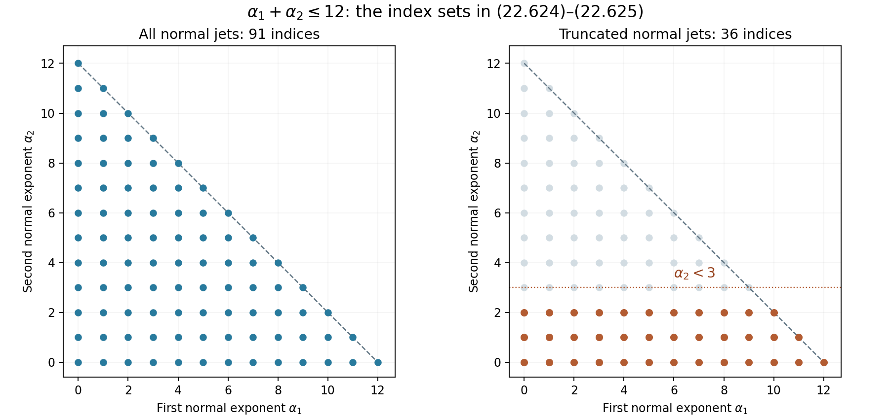
Figure 22.18. The normal indices for \(N=12\): all 91 pairs on the left, and the 36 pairs with \(\alpha_2<3\) on the right. These are finite examples of the sets in Proposition 22.211; their exact counts are given in Exercise 22.217.
The auxiliary-section method and its two sampling patterns are developed in S. David, Minorations de formes linéaires de logarithmes elliptiques, Sections 5–7.
The numerical elliptic logarithm bound
Throughout this section the parameters have the meaning of Propositions 22.203–205 and 22.211–216. In particular, all retained elliptic logarithms are nonzero. Put \(B_g=\mathfrak b_g\), \(V_g=\mathfrak v_g\), and \(E_g=\mathfrak e_g\), with the values in (22.626)–(22.627). The letter \(E=\exp\ell\) continues to denote the analytic parameter; it is distinct from \(E_g\).
Lemma 22.218. Logarithmic and factorial budgets
The parameters satisfy
\[ \log U_0\le B_gL, \qquad d\log\mathcal M\le V_gU_0, \qquad \frac{5^g}{c_5}<\frac1{10^{13}n^4}. \tag{22.647} \]For the bounded-product denominator of Proposition 22.168,
\[ \Delta_N(a)\mid N!,\qquad \log\Delta_N(a)\le N\log\max(1,N). \tag{22.648} \]The last expression is zero when \(N=0\).
Proof. The proof of (22.629), before its final multiplication by \(D\), gives \(\log U_0\le\log c_5+(4g+4)L\le B_gL\). Hence \(d\log\mathcal M\le D(nB_g+g\log3+\log2)L\), and \(\Theta\ge c_4\) proves the second assertion. The lower bound for \(c_5\) in Lemma 22.212 gives
\[ \frac{c_5}{5^g}> \frac{c_4^{2g+1}}{75^g n^{2g}} =\frac{c_4^3}{75n^2} \left(\frac{c_4^2}{75n^2}\right)^{g-1} >10^{13}n^4. \]For positive integers \(a_1,\ldots,a_k\) with sum \(s\le N\), the product \(a_1\cdots a_k\) divides \(s!\): indeed \(s!/(a_1!\cdots a_k!)\) and every \((a_i-1)!\) are integers. Thus it divides \(N!\). Taking the least common multiple proves (22.648), and \(N!\le\max(1,N)^N\) gives its logarithmic form. \(\square\)
Proposition 22.219. Repeated cosets and a sharper periodic basis
Partition the sampling cases by \(Q=S\) and \(Q<S\). In the second case use
\[ S_1=2nS,\qquad T_1=\lfloor\Theta/Z_g\rfloor. \tag{22.649} \]All total orders at most \(2nT\), with last normal exponent less than \(T_1\), at \(sp\), \(0\le s<S_1\), have complex rank at most \(\kappa\mathcal M/(2J_g)\). Moreover, writing \(j=\dim B_*\),
\[ \deg B_*\le\kappa2^g n!3^g U_0(Db)^j \le e^{K_g'L},\qquad K_g'=\log(\kappa2^g n!3^g)+B_g+g. \tag{22.650} \]Define
\[ \begin{split} P_g'&=K_g'+7g+3+2g\log2+\log(2nc_4),\\ C_g'&=P_g'+3+ \log\left(g^{3/2}\{g+2n(1+g^{3/2})\}\right). \end{split} \tag{22.651} \]If \(0<|\Lambda|<\tfrac12e^{-P_g'DL}\), a basis \(f=(e'_1,\ldots,e'_{g-1},w)\) exists, with the first \(j\) directions in \(\operatorname{Lie}B_*\), and
\[ |w_g|\ge e^{-P_g'DL}/(2n). \tag{22.652} \]Conversion of divided jets through order \(nT\) between \(f\) and the graph directions costs at most \(e^{nC_g'U_0}\), in either direction.
Proof. When \(Q<S\), the coset of \(p\) has order exactly \(Q\), so every sample lies in these same \(Q\) cosets. Use \(c/Q=1\) in (22.620), together with (22.625). The rank ratio is at most \(\kappa q/(2n2^j j!J_g)\le\kappa/(2J_g)\), since \(q=g-j\le g<n\). Also \(T_1\le T\).
Set \(t_{\min}=c_7U_0/(DS^2v_1)\). Homogeneity and the extremal equality give
\[ \deg B_*\le \kappa2^g n!3^g t_0 \left(\frac{c_7L}{S^2}\right)^q \frac{v_1^j}{\prod_i v_i}. \]By (22.604), \(c_7L/S^2<v_g\). Since every \(v_i\ge v_g\ge1\) and \(v_1\le Db\), the remaining factor is at most \((v_1/v_g)^j\le(Db)^j\). Now use \(t_0\le U_0\), (22.647), and \(\log(Db)\le L\). This proves (22.650). There is a positive multiple \(Qp\) in the subgroup, with \(Q<S\). Apply the lattice argument (22.642) and then the proof of Corollary 22.216, using (22.650) in place of (22.641). This gives exactly (22.651)–(22.652) and the stated change-of-basis bound. \(\square\)
Lemma 22.220. Centered interpolation with a small jet term
Let \(s\ge100\), \(t\ge1\) be integers. Suppose the nodes \(0,\ldots,s-1\) lie in \(|z-c|\le b_0\), put \(\Delta=X+b_0\ge s\), and assume \(R\ge2X\), \(R>b_0\). For a function holomorphic near \(|z-c|\le R\), set \(M_R=\max_{|z-c|\le R}|F(z)|\) and \(\eta=\max_{h<s,m<t}|F^{(m)}(h)/m!|\). Then
\[ \max_{|z-c|\le X}|F(z)| \le2M_R\left(\frac{\Delta}{R-b_0}\right)^{st} +\eta\left(\frac{12\Delta}{s}\right)^{st}. \tag{22.653} \]Proof. Use the same Hermite polynomial and contour identity as (22.391)–(22.392), with the contour centered at \(c\). The product of the node factors is at most \(\Delta^{st}\) on the inner disc and at least \((R-b_0)^{st}\) on the contour. The Cauchy prefactor is at most two. The coefficient estimate (22.393) gives
\[ |H(z)|\le \eta s t^2\Delta^{st-1}2^{st}(2e/s)^{t(s-1)} \le\eta\left(\frac{4e\Delta}{s}\right)^{st} t^2s^t. \tag{22.654} \]The second inequality uses \(s/\Delta\le1\) and \((2e)^{-t}\le1\). Now \(2\log t\le t\), and \((1+\log s)/s\le(1+\log100)/100<3/50\), since \(s\mapsto(1+\log s)/s\) decreases for \(s>1\). Therefore \(t^2s^t\le e^{3st/50}\). Finally \(e<11/4\) and \(e^{3/50}\le(1-3/50)^{-1}=50/47\) show that \(4e e^{3/50}<12\). Combining the two bounds proves (22.653). \(\square\)
Proposition 22.221. The arithmetic lower bound at the target nodes
For a polynomial in the long Weierstrass coordinates, put
\[ \mathcal A_g=V_g+ \frac{n+\log(n^2c_4)+2}{c_6} +g c_7(2n^2+2) +n\left[\log8+\frac g4(1+\log4)+B_g+\log n\right]. \tag{22.655} \]Suppose \(d h_c(P)\le H_PU_0\). At an integer node \(0\le s\le n(S-1)\), let \(f_\nu\ne0\) be a coefficient of the first nonzero homogeneous Taylor term of the entire pullback in the graph directions, of degree \(N\le nT\). Then
\[ \log|f_\nu|\ge-(H_P+\mathcal A_g)U_0. \tag{22.656} \]Proof. In each elliptic block, the short-coordinate lift is \((\Phi_{L,1},\Phi_{L,2}/2,\Phi_{L,0})\). The corresponding polynomial has coefficient height at most \(h_c(P)+\sum_iL_i\log2\), by substitution, and the same number of monomials. Apply Propositions 22.199–201 over the generated field of degree \(d\). Retain the curve bound \(\mu_E\le g(h+\log4)/4\) from (22.582), instead of replacing the curve heights by the point budgets. The remaining point and lift terms are bounded by \(\sum_iL_i(2s^2+48)v_i\), as in (22.593).
The monomial-count contribution is at most \(V_gU_0\), by (22.647). The additive contribution is bounded by \(L_0d\{nb+\log(n\max(1,s))\}\), hence by the second term of (22.655) times \(U_0\); use \(\log(n^2S)\le\log(n^2c_4)+2R\). The point terms and the coordinate-scaling term together are at most \(g c_7(2n^2+2)U_0\), since \(d\le D\), \(v_i\ge1\), and \(S^2>49\). Finally (22.648), \(N\le nU_0/(DL)\), and (22.647) give \(\log\Delta_N(L_0)\le N(B_gL+\log n)\). Together with \(\log8+\mu_E\), this is bounded by the last term of (22.655) times \(U_0/d\). These are all the terms in the first-jet estimate, proving (22.656), including \(N=0\). \(\square\)
Proposition 22.222. Constants for the auxiliary section and its growth
Define
\[ D_g=3+\log2+\tfrac32\log g, \qquad M_g=\mathfrak m_g+V_g+\frac{\log5}{c_4}. \tag{22.657} \]Use subscripts \(N\) and \(P\) for the cases \(Q=S\) and \(Q<S\), respectively. Set
\[ \begin{split} G_N&=V_g+\frac{\log(4nc_4)+3}{c_6} +g c_7\{(1+\lambda)e^2n^2+1\}+nD_g,\\ G_P&=V_g+\frac{\log(8nc_4)+3}{c_6} +g c_7\{(1+\lambda)(2e+1)^2n^2+1\}+nD_g. \end{split} \tag{22.658} \]The other constants are specified by the following table:
| Constant | Case \(N\) | Case \(P\) |
|---|---|---|
| \(K_\bullet\) | \(\tfrac32n\log g\) | \(nC_g'\) |
| \(W_\bullet\) | \(n(3+\tfrac32\log g+2\log2)+\log2/c_4\) | \(\log2/c_4\) |
| \(I_\bullet\) | \(8n^2A_g\log(13nZ_g)\) | \(16n^2A_g\log13\) |
| \(F_\bullet\) | \(7n^2A_g\) | \(11n^2A_g\) |
Also put
\[ \begin{split} Q_g&=V_g+\frac{B_g}{c_4}+ \frac{\log(8nc_4)+2}{c_6} +g c_7(12n^2+1)+2nD_g,\\ Z_g'&=\frac{\log(2nc_4)+2}{c_4},\qquad r_N=\frac{2\kappa}{J_g-2\kappa},\quad r_P=\frac{\kappa}{J_g-\kappa}. \end{split} \tag{22.659} \]For either subscript define
\[ \begin{split} a_\bullet&= \frac{r_\bullet M_g+E_g+\mathcal A_g+W_\bullet+ I_\bullet+K_\bullet+2}{1-r_\bullet},\\ H_\bullet&=r_\bullet(a_\bullet+M_g)+E_g,\\ L_\bullet&=a_\bullet+H_\bullet+Q_g+Z_g'+1+ \frac{P_g'+\log2}{c_4}. \end{split} \tag{22.660} \]All denominators here are positive. If \(0<|\Lambda|<e^{-L_\bullet U_0}\), there is a nonzero section \(P\) with
\[ d h_c(P)\le H_\bullet U_0, \qquad |\text{sampled divided jet at }su| \le e^{-a_\bullet U_0}. \tag{22.661} \]The sample orders in case \(N\) are those of Proposition 22.211; in case \(P\) they are those of Proposition 22.219.
Proof. The assumption implies \(|\Lambda|<1\) and, when needed, the basis condition in Proposition 22.219, because \(U_0\ge c_4DL\). The matrix ranks divided by their numbers \(d\mathcal M\) of integer unknowns are at most \(\kappa/(dJ_g)\) and \(\kappa/(2dJ_g)\). In the pigeonhole argument, use \(2\eta/(1-2\eta)\), rather than the upper bound \(4\eta\), as the multiplier of \(p+m+\log(1+4\nu)\). Inequality (22.386) still holds, with equality permitted; \(\lfloor e^\delta\rfloor+1>e^\delta\) supplies the strict box inequality. After multiplication by \(d\), these multipliers are at most \(r_N,r_P\), respectively. Propositions 22.212–214 now give (22.661).
Here are growth estimates used below. For a unitary multi-index \(\alpha\), \(|\alpha|\le nT\), the function \(D_{e'}^\alpha F(zw)/\alpha!\) has norm at most \(e^{(H_N+G_N)U_0}\) on \(|z|\le EnS\). In case \(P\), use only the first \(g-1\) directions; its norm on \(|z-(nS-1/2)|\le2EnS\) is at most \(e^{(H_P+G_P)U_0}\).
To verify these assertions, retain the factor \(e^{1-\ell}\) in the analytic parameter condition: \(|u_i/\omega_i|\le e^{1-\ell}\sqrt{Dv_i y_i/(3\pi)}\). On the two discs the normalized center coordinates have modulus at most \(enS\sqrt{Dv_i y_i/(3\pi)}\) and \((2e+1)nS\sqrt{Dv_i y_i/(3\pi)}\), respectively. If this modulus is \(A\), the scaled Cauchy polydisc from (22.631) changes it by at most one. Completing the square gives
\[ \log(3.33)+\tfrac34Dh_i+ 3\pi\left(\frac{(A+1)^2}{y_i}+A+1+\frac{y_i}{4}\right) \le(1+\lambda)\frac{3\pi A^2}{y_i} +26(1+\lambda^{-1})Dv_i. \tag{22.662} \]Indeed the linear term \(A(2/y_i+1)\) is at most \(\lambda A^2/y_i+(1/y_i+1+y_i/4)/\lambda\); use \(y_i>6/7\), \(y_i\le Dh\le Dv_i\), and \(\pi<22/7\) for the remaining constants. We have \(S^2>26(1+100g^2)\), by (22.605). Multiplying by the degrees proves the elliptic terms in (22.658). The additive factors are at most \((4EnS)^{t_0}\) and \((8EnS)^{t_0}\), respectively. Their logarithms give the displayed terms divided by \(c_6\). Cauchy's divided-derivative cost is at most \(nD_gU_0\), and the monomial count contributes \(V_gU_0\).
Finally, for every sampled jet, and for every canonical jet of order at most \(nT\), the change between \(su\) and \(sw\) is at most
\[ e^{-(a_\bullet+1)U_0}. \tag{22.663} \]For detail, differentiate in the additive coordinate along the segment. This multiplies polynomial coefficients by at most \(L_0\); its logarithm is at most \(B_gL\). The monomial, additive, elliptic and directional estimates are then precisely the four contributions to \(Q_g\). Thus the differentiated jet is at most \(e^{(H_\bullet+Q_g)U_0}\). The segment has length \(s|\Lambda|\), with \(\log(2nS)\le Z_g'U_0\). The definition of \(L_\bullet\) proves (22.663) by integration along this segment. \(\square\)
Proposition 22.223. Extrapolation in the two cases
For the section of Proposition 22.222, every divided graph jet of order at most \(nT\) at \(su\), \(0\le s\le n(S-1)\), has modulus at most
\[ 2e^{(H_\bullet+G_\bullet-F_\bullet+K_\bullet)U_0} +e^{(-a_\bullet+W_\bullet+I_\bullet+K_\bullet)U_0} +e^{-(a_\bullet+1)U_0}. \tag{22.664} \]Proof. Each real quantity whose floor defines \(S,T,S_0,T_1\) exceeds 100. This follows from \(c_4>10^5n^2\), \(\Theta\ge c_4\), and \(S/Z_g\ge4nA_g>100\). Consequently each floor is at least \(99/100\) of its argument. All interpolation node counts are at least 100.
In case \(N\), fix \(|\alpha|\le nT\) and apply Lemma 22.220 to \(G(z)=D_{e'}^\alpha F(zw)/\alpha!\), with
\[ s=S_0,\quad t=nT,\quad c=0,\quad b_0=S_0, \quad X=nS,\quad R=EnS. \tag{22.665} \]Its derivatives through order \(nT-1\) use only sampled jets through order \(2nT-1\), by (22.486). The sum of the coefficients in that formula is at most \(2^{2nT}\max(1,\sum|w_j|)^{nT}\), and \(\sum|w_j|\le g^{3/2}e^{3DL}\). Combining this with (22.663) gives \(\eta\le e^{(-a_N+W_N)U_0}\).
Put \(x_0=S_0/(nS)\le1/(nZ_g)<1/100\). Then
\[ \frac{\Delta}{R-b_0}= \frac{1+x_0}{E-x_0} \le E^{-1}\frac{101}{99} <e^{-19\ell/20}, \qquad \frac{12\Delta}{S_0}<13nZ_g. \tag{22.666} \]The second inequality uses \(S_0\ge(99/100)S/Z_g\). The norm estimate from Proposition 22.222 and \(8(99/100)^3(19/20)>7\) now give
\[ \frac{19}{20}S_0nT\ell>7n^2A_gU_0, \qquad S_0nT\log(13nZ_g)\le I_NU_0. \tag{22.667} \]This proves the first two terms of (22.664) in the unitary basis at \(sw\). Conversion to the graph basis costs \(e^{K_NU_0}\).
In case \(P\), write \(f=(f',w)\), fix \(|\alpha'|\le nT\), and apply Lemma 22.220 to \(G(z)=D_{f'}^{\alpha'}F(zw)/\alpha'!\), using
\[ s=2nS,\quad t=T_1,\quad c=nS-\tfrac12, \quad b_0=nS,\quad X=nS+1,\quad R=2EnS. \tag{22.668} \]Its derivatives of order less than \(T_1\) are exactly the sampled divided \(f\)-jets. Their total orders are at most \(nT+T_1-1\le2nT-1\). Thus \(\eta\le e^{(-a_P+W_P)U_0}\). Here \(1/(nS)\le\lambda\le1/100\), so
\[ \frac{\Delta}{R-b_0} =\frac{2+1/(nS)}{2E-1} \le e^{-3\ell/4},\qquad \frac{12\Delta}{2nS}<13. \tag{22.669} \]For the first inequality, use \(e>8/3\) and \((2+1/100)/(2-e^{-1})<5/4<e^{1/4}\). Moreover \(16(99/100)^2(3/4)>11\), whence
\[ \frac34(2nS)T_1\ell>11n^2A_gU_0, \qquad (2nS)T_1\log13\le I_PU_0. \tag{22.670} \]This bounds \(G\) on the entire inner disc. The unit circle about any target integer lies in that disc. Cauchy's coefficient formula therefore bounds every \(G^{(m)}(s)/m!\), including all remaining last exponents with \(|\alpha'|+m\le nT\). This includes \(g=1\), when \(\alpha'\) is empty. Convert the basis using Proposition 22.219, with cost \(e^{K_PU_0}\). Finally (22.663), in the graph directions, returns from \(sw\) to \(su\) in both cases. \(\square\)
Lemma 22.224. The numerical comparison
For every integer \(g\ge1\), and in both cases,
\[ F_\bullet>2H_\bullet+G_\bullet+K_\bullet+ \mathcal A_g+2, \qquad c_5L_\bullet+5^g<C(g), \tag{22.671} \]where
\[ C(g)=2.9\cdot10^6\,10^{6g}\,4^{2g^2} (g+1)^{2g^2+9g+123/10}. \tag{22.672} \]Proof. We give an elementary estimate for \(g\ge10000\) and an exact finite certificate for the remaining integers. For the first range put \(x=\log n\), \(y=\log(4n)\), and \(\Sigma=n^2A_g\). The definitions imply
\[ \begin{gathered} x>9,\quad \log y\le x/3,\quad gy\le A_g\le1.001gy,\quad 9.3ny<J_g<11ny,\quad \lambda\le10^{-10},\\ \log c_4\le gy+4x+2\log y+4.51\le gy+6x, \quad B_g\le2.01nA_g,\quad \log(13nZ_g)\le1.001gy. \end{gathered} \tag{22.673} \]Here \(5x+15\le(20/3)x\le.001gy\) proves the bound for \(A_g\). In the formula for \(J_g\), its leading coefficient lies between 9.3 and 10, while \(56x+54\le62x<ny\). Substitution in the formula for \(c_4\) proves its logarithmic bound, since \(\log(88\cdot1.001)+\log(1+10^{-10})<4.51\). The function \(x/3-\log(x+\log4)\) is positive at 9 and increasing thereafter, proving the bound for \(\log y\). For \(B_g\), discard the negative terms \(-\log(n!)\) and \(-g\log(6c_7)\) in \(\log c_5\), and use \(\log c_6=x+g\log2\). The resulting upper bound is \(2g^2y+gy+12gx+4.7g+7x+4\), which is less than \(2.01ngy\). Finally \(\log(13nZ_g)=\log c_4+\log(13/8)-\log A_g\) gives the last assertion of (22.673).
The following rational bounds now follow by substitution:
| Quantity divided by \(\Sigma\) | Upper bound |
|---|---|
| \(M_g\), \(Q_g\) | \(1.16\) |
| \(\mathcal A_g\) | \(2.21\) |
| \(G_N\), \(G_P\) | \(0.70\), \(4\) |
| \(K_N\), \(K_P\) | \(0.001\), \(2.02\) |
| \(W_N,W_P,Z_g',2,(P_g'+\log2)/c_4\) | \(0.001\) each |
| \(E_g\) | \(10^{-20}\) |
To verify the entries explicitly, use \(g c_7=4A_g/(13+4e^2)\), \(42.5<13+4e^2<43\), and \(2.718<e<2.719\). The leading terms in \(M_g,Q_g\), \(\mathcal A_g\), \(G_N\), and \(G_P\), after division by \(\Sigma\), are respectively at most \(48/42.5\), \(2.01+8(1+n^{-2})/42.5\), \((1+10^{-10})4(2.719)^2/(13+4(2.719)^2)\), and \((1+10^{-10})4(2(2.719)+1)^2/42.5\). The remaining terms in each of these rows total less than \(1/1000\): use \(V_g/\Sigma<3/c_4\), \(c_6\ge ng^2\), \(D_g\le2x\), and \(n g(1+\log4)/(4\Sigma)<0.6/(ny)\). The bound for the periodic basis follows from \(P_g'\le B_g+5gy\) and \(C_g'\le P_g'+4x+5\). These inequalities follow by using \(\log(n!)\le n\log n\) in (22.651). The bounds involving \(E_g\) and \(c_4^{-1}\) follow directly from (22.605) and (22.647).
Also \(r_N<.216/(ny)\), \(r_P<.108/(ny)\), and \((1-r_\bullet)^{-1}<1.00001\). From (22.660), equivalently,
\[ H_\bullet= \frac{r_\bullet}{1-r_\bullet} (M_g+\mathcal A_g+W_\bullet+I_\bullet+K_\bullet+2) +\frac{E_g}{1-r_\bullet}. \tag{22.674} \]Use \(I_N/\Sigma\le8.008gy\), \(I_P/\Sigma<41.6\), and \(ny>90000\). This gives \(H_N/\Sigma<1.74\) and \(H_P/\Sigma<.001\). The margins in the first inequality of (22.671), divided by \(\Sigma\), are therefore greater than \(7-3.48-.70-.001-2.21-.001>1/2\) and \(11-.002-4-2.02-2.21-.001>2\).
For the second inequality, the same bounds and \(a_\bullet=H_\bullet+\mathcal A_g+W_\bullet+ I_\bullet+K_\bullet+2\) give \(L_\bullet<9gy\Sigma<10n^4y^2\). Integral comparison gives \(\log(n!)\ge n\log n-n+1\), and \(6c_7>24y/43\), with \(\log(43/24)<.6\). Inserting the first bound for \(\log c_4\) in (22.673) into \(\log c_5\) therefore yields
\[ \log c_5<2g^2\log4+(2g^2+8g+4)x +(3g+2)\log y+12.72g+4.51. \tag{22.675} \]Here \(\log8<2.1\) suffices for the constant 12.72. On the other hand \(\log10>9/4\) and \(\log(2.9\cdot10^6)>14\). Thus \(\log C(g)-\log c_5>g/2+7x\), using \(\log y\le x/3\). Since \(y^2<n\) for \(x>9\), we obtain \(L_\bullet+5^g/c_5<11n^5<e^{g/2}n^7<C(g)/c_5\). This proves both inequalities for every \(g\ge10000\).
For \(1\le g\le9999\), the integer interval certificate verifies the stronger bounds
\[ \begin{gathered} \frac{F_N-2H_N-G_N-K_N-\mathcal A_g-2}{\Sigma}>\frac12,\\ \frac{F_P-2H_P-G_P-K_P-\mathcal A_g-2}{\Sigma}>2,\\ \log\frac{c_5L_\bullet+5^g}{C(g)}<-\frac1{25}. \end{gathered} \tag{22.676} \]Here is the complete enclosure procedure. An interval is a pair of integers divided by \(2^{128}\); addition is exact, and multiplication and division round the extremal endpoint quotients outwards using integer division. Square roots use the integer square root of the endpoint times \(2^{128}\). To enclose a logarithm, reduce its argument to \(2^k m\), \(1\le m\le2\), and use \(\log m=2\sum_{j\ge0}z^{2j+1}/(2j+1)\), \(z=(m-1)/(m+1)\). After 64 terms, the remainder is at most \(2z^{129}/(129(1-z^2))<2^{-128}\); the slightly enlarged endpoint also has \(z<1/2\). The same series at \(z=1/3\) encloses \(\log2\). The sum \(\sum_{k=0}^{64}1/k!\), with remainder less than \(2/65!<2^{-128}\), encloses \(e\). These remainder bounds follow by summing geometric series; the logarithmic identity follows by integrating one.
The certificate substitutes these intervals in (22.657)–(22.672) for each of the 9,999 integers, maintaining \(\log(n!)=\sum_{j=1}^n\log j\). It encloses \(c_4^{-1}\) by \([0,(10^5n^2)^{-1}]\) and \(5^g/c_5\) by \([0,(10^{13}n^4)^{-1}]\), as proved above. For each of the two cases it compares the lower endpoint of the first margin and the upper endpoint of the last logarithm with the rational endpoints in (22.676). All 39,996 comparisons pass. The operations and remainder bounds just given establish that each interval contains the exact expression; thus these finite comparisons, together with the preceding infinite-range proof, prove (22.671). \(\square\)
Theorem 22.225. The explicit bound for a nonzero elliptic form
Let the nonzero elliptic logarithms \(u_1,\ldots,u_g\), their algebraic exponential points, the curves, field degree \(D\), heights \(h,v_i\), and analytic parameter \(\ell=\log E\) satisfy (22.598). Let \(u_0,\beta_1,\ldots,\beta_g\) belong to that field, and suppose \(b\ge\max\{eh,h(u_0),h(\beta_1),\ldots,h(\beta_g)\}\). If \(\Lambda=u_0-\sum_i\beta_i u_i\ne0\), then
\[ \log|\Lambda|> -C(g)D^{2g+2}(b+\log D+\ell) (\log b+h+\log D+\ell)^{g+1} \left(\prod_i v_i\right)\ell^{-2g-1}, \tag{22.677} \]with the explicit constant (22.672).
Proof. First assume that every \(\beta_i\ne0\) and the coefficients are normalized as in Lemma 22.212. In the appropriate sampling case, suppose \(0<|\Lambda|<e^{-L_\bullet U_0}\), and construct the section in Proposition 22.222. Proposition 22.208 supplies a nonzero graph jet at a target node. Choose the least nonzero homogeneous degree at that node. Its coefficient \(f_\nu\) satisfies (22.656).
By definition of \(a_\bullet\), the second exponent in (22.664) equals \(-(H_\bullet+\mathcal A_g+2)U_0\). The first inequality of (22.671) makes the first exponent smaller than that value. The last exponent is also no larger. Hence
\[ |f_\nu|<4e^{-(H_\bullet+\mathcal A_g+2)U_0} <e^{-(H_\bullet+\mathcal A_g)U_0}, \tag{22.678} \]because \(U_0\ge1\) and \(e^2>4\). This contradicts (22.656). Thus \(\log|\Lambda|\ge-L_\bullet U_0\) for normalized coefficients.
For general coefficients choose a member \(x\) of \((u_0,\beta_1,\ldots,\beta_g)\) with largest complex absolute value and divide by it. Lemma 22.141 gives absolute values at most one and tuple height at most \(nb\). Also \(h(x)\le b\), so \(\log|x|\ge-Db\). All elliptic parameters remain unchanged. By (22.628),
\[ Db\le\frac{5^g}{c_5}U_0, \qquad \log|\Lambda|\ge-(L_\bullet+5^g/c_5)U_0. \tag{22.679} \]The second inequality of (22.671) and the definition of \(U_0\) now give the strict inequality (22.677).
If exactly \(m\) coefficients \(\beta_i\) are nonzero, with \(0<m<g\), apply the proved case to those terms, reordered by their height budgets. Their curve-height maximum is at most \(h\). For every omitted index, (22.599) gives \(D^2Lv_i/\ell^2\ge D/5\ge1/5\). Thus the parameter factor in dimension \(g\), without \(C(g)\), is at least \(5^{-(g-m)}\) times the factor in dimension \(m\). Formula (22.672) gives \(C(g)/C(m)>5^{g-m}\): each successive ratio exceeds \(10^6\). This proves (22.677) with its original dimension. If all \(\beta_i\) vanish, the product formula gives \(\log|u_0|\ge-Db\). The right-hand magnitude in (22.677) is greater than \(C(g)D^3b/5^g>Db\), by (22.628), so the conclusion holds in this case too. \(\square\)
Terms with zero elliptic logarithm are omitted before choosing the dimension and parameters in (22.598).
Exercise 22.226. Centering the interpolation contour
Use nodes \(0,\ldots,99\), center \(c=49.5\), \(b_0=50\), inner radius \(X=51\), and outer radius \(R=100e\). For a common interpolation order \(t\), give a bound from Lemma 22.220 and show that the unit circles about \(0,24,48\) lie in the inner disc.
Solution. We have \(\Delta=101\), so \(12\Delta/100=303/25<13\). Furthermore \((2+1/50)/(2-e^{-1})<5/4<e^{1/4}\), using \(e>8/3\). Hence \(101/(100e-50)<e^{-3/4}\), and
\[ \max_{|z-49.5|\le51}|F(z)| \le2M_{100e}e^{-75t}+\eta13^{100t}. \tag{22.680} \]The three circles have maximal distances \(50.5,26.5,2.5\) from the center, respectively, all less than 51. Their Cauchy integrals therefore recover every divided derivative at these three nodes from the inner-disc norm. \(\square\)
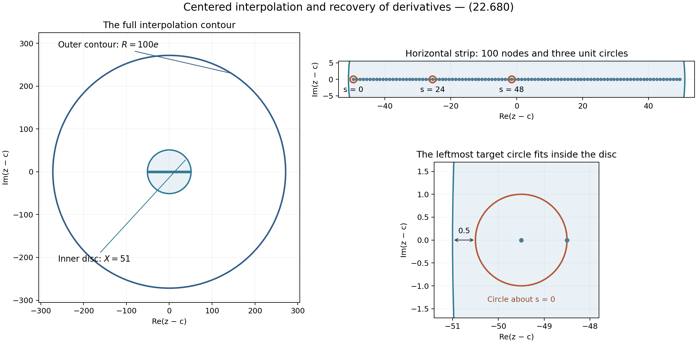
Figure 22.19. The exact geometry of Exercise 22.226. Coordinates are translated by \(49.5\). The upper right panel shows a horizontal strip of the inner disc; the lower panel shows the leftmost unit circle and its clearance of \(0.5\). The full outer contour on the left controls the Hermite remainder.
For the elliptic auxiliary-section argument and the explicit constant, see S. David, Minorations de formes linéaires de logarithmes elliptiques, Theorem 2.1 and Sections 5–9.
Integral points from elliptic logarithms
Let
\[ E:y^2=x^3+Ax+B=f(x),\qquad A,B\in\mathbf Z, \qquad 4A^3+27B^2\ne0. \]The corresponding long model is \(Y=2y\), with invariants \(g_2=-4A,g_3=-4B\). All canonical heights in this section are \(q=\widehat h_3\) from (22.570). In particular, they are three times the normalization \(\tfrac12\widehat h_x\).
The computational input is a finite torsion subgroup \(T\), a positive integer \(t\) with \(tT=0\), and rational points \(P_1,\ldots,P_r\) independent modulo torsion. Write \(\Gamma=T+\sum_i\mathbf ZP_i\). The method below determines every integral point in \(\Gamma\). It determines every integral point of \(E(\mathbf Q)\) when the equality \(\Gamma=E(\mathbf Q)\) has also been proved. A rank computation and independent points alone do not establish that equality.
Proposition 22.227. A certified quadratic lower bound
The canonical pairing
\[ \langle P,Q\rangle_q =\tfrac12\{q(P+Q)-q(P)-q(Q)\} \tag{22.681} \]is symmetric and additive in each argument. Its matrix \(G=(\langle P_i,P_j\rangle_q)\) is positive definite, and
\[ q\left(T_0+\sum_i n_iP_i\right)=n^{\mathsf T}Gn \ge\lambda\sum_i n_i^2\ge\lambda N^2, \qquad N=\max_i|n_i|, \tag{22.682} \]whenever \(T_0\in T\) and \(G-\lambda I\) is positive semidefinite. A positive rational \(\lambda\) can be certified by finite calculations.
Proof. For \(M=\mathcal O_E(2O)\), the cube identity proved in Abelian varieties, Corollary 4.2 pulled back along \((P,Q,-Q)\) gives \(m^*M\otimes d^*M\simeq p_1^*M^2\otimes p_2^*M^2\), where \(m(P,Q)=P+Q\), \(d(P,Q)=P-Q\). Proposition 22.49 therefore bounds \(h_x(P+Q)+h_x(P-Q)-2h_x(P)-2h_x(Q)\) independently of \((P,Q)\). Substitute \((2^sP,2^sQ)\), divide by \(4^s\), and use (22.570). Thus \(q\) satisfies the parallelogram identity.
Polarization gives additivity directly. Write \(B(x,y)=(q(x+y)-q(x-y))/4\). Two parallelogram identities give \(B(x+z,y)+B(x-z,y)=2B(x,y)\). Interchanging \(x,z\), using \(B(z-x,y)=-B(x-z,y)\), and adding gives \(B(x+z,y)=B(x,y)+B(z,y)\). Symmetry gives additivity in the other argument. This is (22.681), and \(B(x,x)=q(x)\). A torsion argument has pairing zero, since a nonzero integer multiple of that pairing is zero. Expansion proves the equality in (22.682).
The limit defining \(q\) is nonnegative. Bounded \(q\) gives bounded \(h_x\) by (22.567), since \(h_x\le 2q/3+B_E/3\). There are only finitely many rational \(x=a/b\) in lowest terms with \(\log\max(|a|,|b|)\) bounded, and at most two points above each \(x\). This proves the required finiteness without a separate height-finiteness theorem. In particular, \(q(P)=0\) implies that the points \(nP\) form a finite set, by (22.573), so \(P\) is torsion.
Nonnegativity on integer vectors implies nonnegativity on rational and then real vectors. If \(Gv=0\) for a nonzero real vector \(v\), round \(kv\) coordinatewise to integer vectors \(a_k\). They are unbounded, but \(a_k^{\mathsf T}Ga_k\) is bounded: the kernel term vanishes and the rounding errors have bounded norm. Independence modulo torsion gives infinitely many distinct points of bounded height, a contradiction. Thus \(G\) is positive definite.
For computation, duplication and (22.567) enclose each \(q(P_i)\) and \(q(P_i+P_j)\) in intervals of width tending to zero. Suppose a rational symmetric matrix \(R\) satisfies \(|G_{ij}-R_{ij}|\le\epsilon\). Then
\[ x^{\mathsf T}Gx\ge x^{\mathsf T}Rx-r\epsilon\|x\|_2^2. \tag{22.683} \]Indeed \((\sum|x_i|)^2\le r\sum x_i^2\), by summing the nonnegative squares \((|x_i|-|x_j|)^2\). Rational elimination certifies positivity of \(R-(\lambda+r\epsilon)I\): factor it as \(LDL^{\mathsf T}\) and check that all diagonal pivots of \(D\) are positive. The resulting expression is a sum of positive multiples of squares. Because \(G\) is positive definite, sufficiently accurate intervals and a sufficiently small positive rational \(\lambda\) pass this test. This proves both the lower bound and its effective certification. \(\square\)
Lemma 22.228. The real branch at infinity
Choose an integer \(H\ge2\) with \(H^2\ge4|A|\) and \(H^3\ge4|B|\). Let \(e_0\) be the largest real root of \(f\), and let \(\Omega>0\) generate the real periods of \(dx/(2y)\). For \(x(P)\ge H\), the real logarithm representing \(P\) is
\[ u(P)=-\operatorname{sgn}(y(P))I(x(P)),\qquad I(x)=\int_x^\infty\frac{ds}{2\sqrt{f(s)}},\qquad 0<I(x)\le\sqrt{2/x}. \tag{22.684} \]It lies in \((-\Omega/2,\Omega/2)\) and is nonzero. There are no real points with \(x\le-H\). Every real point doubles into the identity component.
Proof. For \(s\ge H\), \(f(s)\ge s^3-|A|s-|B|\ge s^3/2>0\); the analogous estimate for \(s\le-H\) gives \(f(s)\le-|s|^3/2<0\). Integration of \(s^{-3/2}/\sqrt2\) proves (22.684). The real locus consists of the two graphs \(\pm\sqrt{f(x)}\) joined at simple roots, together with \(O\). Its unbounded component is \(x\ge e_0\), closed by \(O\); if three real roots occur, there is one further oval between the other two roots. Thus its component group has order at most two, proving the doubling assertion.
The uniformization already proved identifies the differential with \(du\). Near \(O\), \(x=u^{-2}+O(u^2)\) and \(y=-u^{-3}+O(u)\), so its sign gives exactly (22.684). Following the two graphs around the unbounded component gives
\[ \Omega=2I(e_0). \tag{22.685} \]The endpoint integral converges since the root is simple. The uniformization is injective on one traversal of that component, so this is its least positive real period. Consequently \(I(x)<\Omega/2\) for \(x>e_0\).
These integrals admit certified approximations. For example
\[ I(x)=\int_{\sqrt{x-e_0}}^\infty \frac{ds}{\sqrt{s^4+3e_0s^2+3e_0^2+A}}. \tag{22.686} \]The denominator is positive for \(s\ge0\): its square equals \(f(e_0+s^2)/s^2\), with positive limiting value \(f'(e_0)\). On a bounded interval, isolating the algebraic root and subdividing gives upper and lower Riemann sums with arbitrarily small difference. Their convergence follows from continuity and the positive minimum of that denominator. The remaining tail is bounded by (22.684). This also computes logarithms of any specified real point in the identity component, with its sign and endpoint included. \(\square\)
Proposition 22.229. A nonzero form with a Gaussian upper bound
Suppose \(r\ge1\). Put \(Q_i=[2t]P_i\), and choose their real logarithms \(u_i\in(-\Omega/2,\Omega/2)\). These are nonzero. For an integral point \(P=T_0+\sum n_iP_i\) with \(x(P)\ge H\), there is an integer \(m\) such that
\[ \Lambda=2t u(P)=\sum_{i=1}^r n_i u_i+m\Omega\ne0, \qquad |m|\le t+\tfrac r2N. \tag{22.687} \]Let \(U\ge\max(0,U_E)\), where \(U_E\) is the explicit duplication constant in (22.562). With
\[ a=\lambda/3,\qquad A_0=2t\sqrt2\exp(U/6), \tag{22.688} \]one has
\[ 0<|\Lambda|\le A_0\exp(-aN^2). \tag{22.689} \]Proof. Doubling puts every \(Q_i\) in the real identity component. Independence makes it nontorsion, so its centered real logarithm is neither zero nor an endpoint. Multiplication by \(2t\) kills \(T_0\). The group law on the uniformizing torus gives (22.687) modulo the period lattice. Both sides are real, so their difference is an integer multiple of \(\Omega\). The centered representatives give the bound on \(m\). Nonvanishing follows from the integral in (22.684), even if \([2t]P=O\): a nonzero real representative must not be silently replaced by its residue modulo periods.
Since \(x(P)\) is a positive integer, \(h_x(P)=\log x(P)\). Equations (22.567) and (22.570) give \(q(P)\le\tfrac32\log x(P)+U/2\). Combine this with (22.682) and (22.684) to obtain (22.689). \(\square\)
Theorem 22.230. An explicit initial coefficient bound
Let \(\mathcal A=\operatorname{Im}(\overline{\omega_1}\omega_2)>0\) be the area of a fundamental period parallelogram. Choose rational upper bounds \(h,V,b_0,L_0\), with
\[ \begin{gathered} h\ge\max\{1,h(1:-4A:-4B),h(j(E))\},\\ V\ge\max\{h,q(Q_1),\ldots,q(Q_r),3\pi\Omega^2/\mathcal A\},\\ b_0\ge\max\{1,\mathrm e h,V,\log(t+r+1)\},\qquad L_0\ge\max\{0,\log A_0\}. \end{gathered} \tag{22.690} \]For \(N\ge1\), put \(g=r+1\), \(b=b_0+\log N\). Every integral point under consideration satisfies
\[ aN^2<L_0+C(g)V^g(b+1)(\log b+h+1)^{g+1}, \tag{22.691} \]where \(C(g)\) is the constant of Theorem 22.225. In particular define
\[ \begin{split} C_*&=3\cdot10^6\,10^{6g}4^{2g^2} (g+1)^{2g^2+9g+13},\\ k&=g+2,\qquad J=C_*V^g(b_0+1)(b_0+h+1)^{g+1}+L_0. \end{split} \tag{22.692} \]Then
\[ N<N_*:=Jk^k/a. \tag{22.693} \]Proof. Apply Theorem 22.225 to \(r+1\) copies of the long curve over \(\mathbf Q\), with logarithms \(u_1,\ldots,u_r,\Omega\). The last logarithm represents the algebraic point \(O\), has height zero, and is nonzero. Set the additive coefficient to zero, the elliptic coefficients to \(-n_1,\ldots,-n_r,-m\), and use the common budget \(v_i=V\). For a reduced lattice, \(|\omega_1|^2\operatorname{Im}\tau=\mathcal A\), independently of the chosen basis. Thus (22.690) makes the analytic parameter \(E=\mathrm e\) admissible in (22.598). Also \(D=1\), \(\ell=1\), \(b\ge V\), and every coefficient has height at most \(\log((t+r+1)N)\le b\). All hypotheses, including nonvanishing, are now checked. Comparison with (22.689) proves (22.691).
The constant \(C_*\) strictly exceeds \(C(g)\). Write \(z=\log N\ge0\). Then \(b+1\le(b_0+1)(1+z)\), and \(\log b+h+1\le(b_0+h+1)(1+z)\), using \(\log b_0\le b_0\) and \(\log(1+z)\le z\). Hence \(aN^2<J(1+z)^k\). The elementary inequality \(\log w\le w-1\), applied to \(w=(1+z)/k\), gives
\[ (1+z)^k\le k^k e^{1+z-k}\le k^k e^z=k^kN. \tag{22.694} \]Division by \(aN\) proves (22.693). All quantities in this last bound can be chosen rational; no numerical root of a transcendental equation is needed for completeness. \(\square\)
The budgets in (22.690) are effective. Duplication gives the point-height intervals. Lemma 22.228 gives a rational upper bound \(\Omega_+\) for the real period. Proposition 22.213 and reducedness give \(\mathcal A\ge(\sqrt3/2)e^{-2h}>(4/5)3^{-2\lceil h\rceil}\). Thus the rational bound \(15\Omega_+^2 3^{2\lceil h\rceil}\) suffices for the last term defining \(V\). The choices \(b_0\ge\max(1,3h,V,t+r+1)\) and \(L_0\ge3t+U/6\) suffice for the remaining budgets.
Proposition 22.231. Certified lattice reduction of the bound
Suppose \(N\le M\), and put \(\theta_i=u_i/\Omega\). Choose a positive integer \(C\) and certified integers \(a_i=\lfloor C\theta_i\rfloor\). Form the column lattice
\[ \mathcal L_C= \begin{pmatrix}I_r&0\\ a_1\ \cdots\ a_r&C\end{pmatrix} \mathbf Z^{r+1}. \tag{22.695} \]If every nonzero lattice vector has squared length at least \(l^2\), and \(\delta=\sqrt{l^2-rM^2}-rM>0\), then every integral point with \(x(P)\ge H\) and \(N\ge1\) satisfies
\[ N^2\le\frac1a\log\frac{A_0C}{\Omega\delta}. \tag{22.696} \]The lower bound \(l^2=\min_j\|b_j^*\|^2\) is valid for any certified basis \((b_j)\) of this lattice.
Proof. Apply the matrix to \((n_1,\ldots,n_r,m)\). It is nonsingular, with determinant \(C\), and its vector is nonzero because some \(n_i\ne0\). Its last coordinate \(s\) satisfies \(|s-C\Lambda/\Omega|\le rM\). Its first coordinates have squared norm at most \(rM^2\). Therefore \(C|\Lambda|/\Omega\ge\sqrt{l^2-rM^2}-rM\). Combine with (22.689) and take logarithms. The Gram--Schmidt lower bound, and exact terminating lattice reduction, are proved in Lesson 21, Propositions 21.2--21.3. An integer change-of-basis matrix of determinant \(\pm1\) and exact rational Gram--Schmidt lengths certify its use here. \(\square\)
A positive lower bound for \(\delta\), a positive lower bound for \(\Omega\), and an upper bound for \(A_0\) suffice in (22.696). If the resulting bound does not decrease \(M\), the initial finite bound remains valid. Reduction improves the search size; it does not replace the proof that the search covers all coefficients.
Theorem 22.232. Complete enumeration with specified generators
The preceding data give a terminating exact determination of the integral points in \(\Gamma\). In rank zero, enumerate \(T\). In positive rank let \(M\) be any integer upper bound from (22.693), possibly decreased by (22.696), and choose an integer \(M_s\) with
\[ M_s^2\ge\frac{\tfrac32\log H+U/2}{\lambda}. \tag{22.697} \]It suffices to enumerate
\[ T_0+\sum_i n_iP_i,\qquad T_0\in T,\quad |n_i|\le\max(M,M_s), \tag{22.698} \]discard \(O\), and keep precisely the points whose two reduced rational coordinates have denominator one.
Proof. Every integral point with \(x\ge H\) is covered by (22.693), including \(N=0\). The others satisfy \(-H<x<H\), so \(h_x\le\log H\); (22.567) and (22.682) give (22.697). Thus (22.698) covers every case. Addition is exact rational arithmetic: for distinct finite points use
\[ s=\frac{y_2-y_1}{x_2-x_1},\quad x_3=s^2-x_1-x_2,\quad y_3=s(x_1-x_3)-y_1; \tag{22.699} \]on doubling use \(s=(3x_1^2+A)/(2y_1)\), while opposite points sum to \(O\). These are the chord-and-tangent formulas from the proved group law. There are finitely many tuples in (22.698), and every accepted point is checked in the original equation. If \(\Gamma=E(\mathbf Q)\) has been established, this is the complete set of integral points of that curve. \(\square\)
The real-component, canonical-height and lattice mechanisms are used in R. J. Stroeker and N. Tzanakis, Solving elliptic diophantine equations by estimating linear forms in elliptic logarithms, Sections 2--5, and J. Gebel, A. Pethő and H. G. Zimmer, Computing integral points on elliptic curves, Sections 2--6. The normalization, constants, proofs and numerical certificate here are those displayed in this section.
Lemma 22.233. Rational intervals for a Mordell-curve integral
On \(y^2=x^3-2\), for rational \(x>\sqrt[3]2\), put \(q_x=2/x^3\) and \(c_j=\binom{2j}{j}/4^j\). Then
\[ I(x)=\frac1{\sqrt x}\sum_{j\ge0} \frac{c_jq_x^j}{6j+1},\qquad 0\le\sum_{j\ge K}\frac{c_jq_x^j}{6j+1} \le\frac{c_Kq_x^K}{(6K+1)(1-q_x)}. \tag{22.700} \]For \(P=(3,5)\), let \(I_1=I(3)\), \(I_2=I(129/100)\). The centered logarithm of \(2P\), the real period and their ratio are
\[ u(2P)=I_2,\qquad \Omega=2I_1+I_2,\qquad \theta=\frac{I_2}{2I_1+I_2}. \tag{22.701} \]Proof. Substitute \(s=v^{-2}\) in (22.684). The resulting integrand is \((1-2v^6)^{-1/2}\) on \([0,1/\sqrt x]\). The binomial series follows by differentiating its power series: \(c_0=1\), \(c_{j+1}/c_j=(2j+1)/(2j+2)\), and its sum solves \(2(1-z)F'=F\), \(F(0)=1\). Thus it equals \((1-z)^{-1/2}\). Uniform convergence on this interval permits integration. The ratios of consecutive \(c_jq_x^j\) are less than \(q_x\), proving the geometric tail bound.
Exact doubling gives \(2P=(129/100,-383/1000)\). Hence \(u(P)=-I_1\), \(u(2P)=I_2\), and \(2I_1+I_2\) is a positive integer multiple of \(\Omega\). Both integrals are less than \(\Omega/2\), so that multiple is less than \(3/2\) and equals one. This proves (22.701). \(\square\)
Example 22.234. Every integral point in a cyclic subgroup
In \(\Gamma=\mathbf Z(3,5)\) on \(y^2=x^3-2\), the integral points are exactly \((3,5)\) and \((3,-5)\).
Proof. Exercise 22.197 proves that \(P=(3,5)\) is nontorsion. More precisely, (22.576) gives \(q(P)>7/8\), because \(129^3>912\cdot3^7>912e^7\). Use \(\lambda=7/8\), \(a=7/24\), \(t=1\), \(H=3\), and \(U=3>\log17\). Then \(A_0<5\), since \(2\sqrt{2e}<2\sqrt6<5\). We may take
\[ h=3,\qquad V=b_0=100000,\qquad L_0=2,\qquad g=2. \tag{22.702} \]Here \(q(2P)<\tfrac12\log(129^3\cdot17)<10\), as \((8/3)^{20}>129^3\cdot17\) and \(e>8/3\). The interval calculation from (22.700) gives \(1<\Omega<3\). The reduced-period estimate in Proposition 22.213 gives \(|\omega_1|\ge e^{-h}\); also \(\operatorname{Im}\tau\ge\sqrt3/2>4/5\). Consequently \(\mathcal A>(4/5)3^{-6}\), and \(3\pi\Omega^2/\mathcal A<98415<100000\), using \(\pi<4\). Thus every condition in (22.690) holds.
With (22.692), take \(M=\lceil24J4^4/7\rceil\). The exact integer in the accompanying certificate has 75 decimal digits. Successive uses of (22.696) give
\[ M\longmapsto28\longmapsto7\longmapsto6. \tag{22.703} \]Here are the exact conventions that certify these numerical steps. For each current integer \(M\), use \(C=10^{2d+2}\), where \(d\) is the number of its decimal digits. Evaluate (22.700) with \(K=12000\) and outward dyadic rounding with denominator \(2^{1024}\). The square-root endpoints are found by integer square roots. The displayed geometric tail is included in the upper endpoint. Both endpoints of the resulting interval for \(C\theta\) have the same floor.
The integer certificate program and its exact data give each floor, integer basis, determinant-one-up-to-sign transformation, and rational squared Gram--Schmidt length. Put \(\delta_0=\lfloor\sqrt{l^2-M^2}\rfloor-M>0\). If \(5C/\delta_0\le10^D\), then \(\Omega>1\) and \(\log10<3\) give \(N^2<72D/7\). The first three stages have \(D=78,6,4\), respectively, giving exactly (22.703). Thus the certificate consists of rational inequalities and integer identities; rounded decimal logarithms are not inputs to the lattice.
There are no integral points with \(-3\le x<3\), by the six integer evaluations of \(x^3-2\). Finally (22.699) gives all \(nP\) for \(1\le n\le6\); their reduced coordinates, included in the certificate, have both denominators one only for \(n=1\). Negation changes only the sign of \(y\). Therefore
\[ \Gamma\cap\mathbf Z^2=\{(3,5),(3,-5)\}. \tag{22.704} \]This conclusion is about the specified subgroup; it does not assert that its generator is a basis of the entire rational-point group. \(\square\)
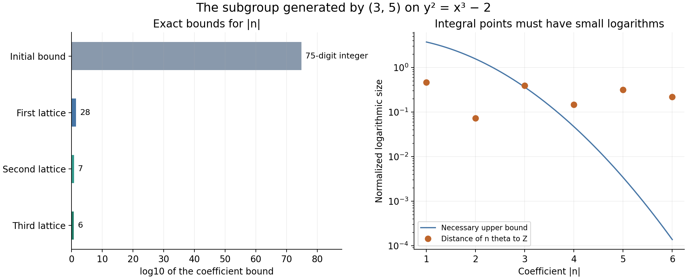
Figure 22.20. Left: the initial coefficient bound and the three certified reductions in (22.703), on a logarithmic scale. Right: the distance of \(n\theta\) to the nearest integer and the upper bound \(5e^{-7n^2/24}\) necessary for an integral multiple with \(x\ge3\). These plotted values are numerical displays of the objects in the proof. The exact lattice and final rational-coordinate calculations establish (22.704).
Exercise 22.235. Independence does not prove saturation
On the curve in Example 22.234, show that \(2P\) is independent modulo torsion but that searching only \(\mathbf Z(2P)\) misses an integral point of \(\mathbf ZP\).
Solution. The positive value \(q(P)>7/8\) and (22.573) give \(q(2P)=4q(P)>0\), so \(2P\) is nontorsion. If \(P=n(2P)\), then \(q(P)=4n^2q(P)\), hence \(1=4n^2\), impossible for an integer \(n\). Thus the integral point \(P\) is absent from \(\mathbf Z(2P)\), despite the independence of that subgroup's generator. The index of this subgroup in \(\mathbf ZP\) is two. \(\square\)
Uniform bounds, effective enumeration and algebraic independence
The height in this section is the absolute logarithmic Weil height, and \(h^*(\alpha)=\max\{1,h(\alpha)\}\). At a place above a rational prime \(p\), the valuation is normalized by \(v_p(p)=1\). All logarithms of positive real numbers are real logarithms.
Problem 22.236. The dependence on the prime
Fix positive integers \(n,D\). For each prime \(p\), define
\[ G_{n,D}(p)=\sup \frac{\max\{0,v_p(\alpha_1^{b_1}\cdots\alpha_n^{b_n}-1)\}\log p} {h^*(\alpha_1)\cdots h^*(\alpha_n)\log B}, \qquad B=\max\{3,|b_1|,\ldots,|b_n|\}. \tag{22.705} \]The supremum ranges over number fields \(K\) of degree at most \(D\), places of \(K\) above \(p\), units at that place \(\alpha_i\in K^\times\), and integers \(b_i\) for which the product is different from one. A zero coefficient is allowed. Here a unit at the place means \(v_p(\alpha_i)=0\), without requiring an algebraic integer unit at every place.
One precise form of the prime-dependence problem is to obtain sharp, effectively computable upper estimates for (22.705), uniformly in all the data being varied. A specific question is whether, for every \(n,D\) and every positive rational \(\varepsilon\), one can compute \(A(n,D,\varepsilon)>0\) such that
\[ G_{n,D}(p)\le A(n,D,\varepsilon)p^\varepsilon \quad\hbox{for every prime }p. \tag{22.706} \]This is a question, not an estimate assumed in any preceding proof. The supremum and (22.706) specify a normalization of the general problem; they are not a quotation of a named conjecture. For the prime factors in existing local estimates, see Theorem 1.3 of Bugeaud, B', pages 4–5. Fixing \(p\) before choosing a constant would change the question.
A more specific conjecture is given by Yamada, Conjecture 1.3, equation (8): except for finitely many pairs consisting of an integer \(x>1\) and a prime \(p\),
\[ v_p(x^{p-1}-1) \le 2+\frac{\log x+2\log\log x+\log\log p}{\log p}. \tag{22.707} \]The finite exceptional set here is over pairs, not a separately unspecified infinite family for each prime. No effective bound for that set is part of this formulation. Formula (22.707) concerns one special family of coefficients; it does not by itself assert (22.706) for general products.
Proposition 22.237. Two benchmarks for prime dependence
For every \(n,D\ge1\) and every prime \(p\),
\[ G_{n,D}(p)\ge \frac{\log p}{\log(p+1)\log3}. \tag{22.708} \]For a fixed integer \(x>1\) and an odd prime \(p\nmid x\), the unconditional estimate proved in Theorem 10.167 gives
\[ v_p(x^{p-1}-1) <283\frac{p}{(\log p)^2}\log(5x)\log5. \tag{22.709} \]On the other hand, (22.707) would imply that, for each fixed \(x>1\), \(v_p(x^{p-1}-1)\le2\) for all sufficiently large primes \(p\).
Proof. In (22.705) take \(K=\mathbb Q\), \(\alpha_1=p+1\), \(b_1=1\), and pad with \(\alpha_i=1,b_i=0\). The product minus one is \(p\), of valuation one, and \(h^*(p+1)=\log(p+1)\). This proves (22.708). Its right side tends to \(1/\log3\); in particular a bound tending to zero cannot hold with this normalization.
Apply Theorem 10.167, equation (10.581) with the coprime positive integers \(a=x,b=1\) to obtain (22.709). The theorem includes \(b=1\). Finally, for fixed \(x\), the fraction in (22.707) tends to zero as \(p\) tends to infinity. For example \(\log t\le\sqrt t\) for \(t\ge4\), as follows by differentiation, so \(\log t/t\longrightarrow0\). Outside the finitely many exceptional pairs, the upper bound in (22.707) is therefore less than three for large \(p\). The valuation is an integer, giving the assertion. \(\square\)
Problem 22.238. A specified constant for three real logarithms
For an integer \(D\ge1\), let \(C_3(D)\) be the supremum of
\[ \frac{\max\{0,-\log|\Lambda|\}} {h^*(\alpha_1)h^*(\alpha_2)h^*(\alpha_3)\log B}, \quad \Lambda=\sum_{i=1}^3 b_i\log\alpha_i\ne0, \quad B=\max\{3,|b_1|,|b_2|,|b_3|\}, \tag{22.710} \]over positive real algebraic \(\alpha_i\) whose generated field has degree at most \(D\), and integer coefficients \(b_i\). Determine \(C_3(D)\), or give substantially closer explicit upper and lower bounds with this same normalization. The exact constant and its growth with \(D\) are distinct quantitative questions.
The positivity restriction fixes the logarithmic branches. A question about arbitrary complex logarithms must also specify their sizes; one cannot silently transfer (22.710) to arbitrary branches. For the source context of improving three-logarithm estimates, see Mignotte and Voutier, with an appendix by Laurent, A kit for linear forms in three logarithms, §§1.2–1.5. The optimization problem (22.710) fixes a common scale on which constants can be compared. It does not presume that no sharper specialized estimates exist, or that a bound established under additional hypotheses applies to this entire supremum.
Proposition 22.239. The three-logarithm constant is finite and positive
For every \(D\ge1\),
\[ 0<C_3(D)\le 2^{39}D^5\log(eD). \tag{22.711} \]Proof. Write \(d\le D\) for the degree of the generated field. For a positive algebraic number, the selected archimedean place and the identity \(h(\alpha^{-1})=h(\alpha)\) give \(|\log\alpha|\le d h(\alpha)\). Both height facts are proved in height arithmetic. Omit zero logarithms and zero coefficients, leaving \(1\le r\le3\) terms. In Theorem 8.6 choose \(H_i=d h^*(\alpha_i)\), which satisfies every height and logarithm cutoff. The field is real at the chosen embedding. The unweighted coefficient version of that theorem and \(C_1(r,1)\le2^{6r+20}\le2^{38}\) give
\[ \log|\Lambda|> -2^{38}d^{r+2}\log(ed)\log(eB) \prod_{i\text{ retained}}h^*(\alpha_i). \tag{22.712} \]Since \(B\ge3>e\), \(\log(eB)\le2\log B\). The omitted height factors are at least one, and \(d^{r+2}\le D^5\). Division by the denominator in (22.710), followed by a supremum, proves the upper bound. Taking a supremum changes the strict pointwise bound into a weak inequality, as written in (22.711).
For positivity take \((\alpha_1,\alpha_2,\alpha_3)=(2,3,5)\) and \((b_1,b_2,b_3)=(1,1,-1)\). Then \(0<\Lambda=\log(6/5)<1\), so its quotient in (22.710) is positive. These rational bases are allowed for every \(D\ge1\). \(\square\)
Problem 22.240. Effective Mordell
Give a terminating algorithm with the following input and output. The input is a number field \(K\), represented by exact algebraic data, and homogeneous equations for a smooth, projective, geometrically integral curve \(C\subset\mathbb P^N_K\) of genus at least two. The output is an integer \(H\ge1\) such that
\[ H_{\mathbb P^N}(P)\le H\quad\hbox{for every }P\in C(K), \tag{22.713} \]where \(H_{\mathbb P^N}=\exp h_{\mathbb P^N}\) is the absolute multiplicative projective height for the given embedding. The algorithm must work for every such input, without a conjectural termination assumption or an additional restriction on the rank of the Jacobian.
This is the general effective Mordell problem in height form. A free primary account of its scope and approaches is Garcia-Fritz and Pasten, Effective Mordell for curves with enough automorphisms, §§1.1 and 1.3. Its additional automorphism and rank hypotheses matter: that setting is a restricted class within the problem above. Likewise, Proposition 22.232 addresses integral points on an elliptic curve with supplied generators. It does not produce (22.713) for all rational points on arbitrary higher-genus curves.
Proposition 22.241. A height cutoff is a stopping certificate over the rationals
For curves over \(\mathbb Q\), an algorithm producing (22.713) gives a terminating algorithm listing all rational points. Conversely, a terminating algorithm producing the complete finite list gives an algorithm producing (22.713).
Proof. Every point of \(\mathbb P^N(\mathbb Q)\) has a unique integer coordinate vector \((a_0,\ldots,a_N)\) whose coordinates have greatest common divisor one and whose first nonzero coordinate is positive. To obtain it, clear denominators, divide by the common divisor and fix the sign. Two primitive integer vectors representing the same projective point differ by a rational scalar. Writing the scalar as a reduced fraction shows, from primitivity of both vectors, that it is \(1\) or \(-1\); the sign convention removes the latter possibility. In these coordinates,
\[ H_{\mathbb P^N}([a_0:\cdots:a_N])=\max_i|a_i|. \tag{22.714} \]Indeed at every finite prime at least one coordinate is a unit, so its local maximum is one; the remaining archimedean factor is the displayed maximum. This also agrees with the projective height normalization in Proposition 22.49.
Enumerate the finite box \([-H,H]^{N+1}\cap\mathbb Z^{N+1}\), remove the zero vector and the vectors violating primitivity or the sign convention, and test the homogeneous equations by exact rational arithmetic. Formula (22.714) proves coverage and uniqueness. In the reverse direction, compute the maximum of the coordinate heights on the returned finite list; use one if the list is empty. \(\square\)
A bound for the number of points alone does not give this coordinate cutoff. Even a singleton set of projective rational points can have arbitrarily large height: \(\{[1:M]\}\) has one point and height \(M\) for every integer \(M\ge1\). Nor does an unbounded search announce that it has found its last point.
Conjecture 22.242. Schanuel
If \(z_1,\ldots,z_m\in\mathbb C\) are linearly independent over \(\mathbb Q\), then
\[ \operatorname{trdeg}_{\mathbb Q} \mathbb Q(z_1,\ldots,z_m,e^{z_1},\ldots,e^{z_m})\ge m. \tag{22.715} \]The quantifier includes arbitrary complex numbers, not only logarithms of algebraic numbers. See Waldschmidt, Open Diophantine Problems, Conjecture 3.1, printed page 267. No conclusion below that assumes (22.715) is an unconditional use of the analytic subgroup theorem.
Proposition 22.243. Conditional algebraic independence
Assume (22.715). If \(\lambda_1,\ldots,\lambda_m\) are \(\mathbb Q\)-linearly independent and every \(e^{\lambda_i}\) is algebraic, then the \(\lambda_i\) are algebraically independent over \(\overline{\mathbb Q}\). In particular \(\log2,\log3\) are algebraically independent. Also \(e,\pi\) are algebraically independent.
Proof. We use the elementary fact that a field algebraic over a rational function field in \(r\) independent variables has no \(r+1\) algebraically independent elements. Here is a finite dimensional proof of the needed direction. Any proposed finite tuple is contained in a finite extension of that function field. In a basis of this finite extension, multiplication by each tuple element is a matrix of rational functions. Choose a common polynomial denominator for their entries. Products with every exponent at most \(M\), applied to the coordinate vector of one, have, after multiplication by one common denominator power, polynomial coordinates of degree at most \(cM+c\), for a constant \(c\) independent of \(M\). Their rational span has dimension at most the basis size times \(\binom{cM+c+r}{r}\). For \(r+1\) elements there are \((M+1)^{r+1}\) such products. This eventually exceeds that dimension, which grows with degree \(r\), and gives a nonzero polynomial relation with rational coefficients.
Choose a maximal algebraically independent subtuple of the \(\lambda_i\), of size \(r\). Every other \(\lambda_i\) is algebraic over its rational function field: a polynomial relation with the maximal subtuple becomes a nonzero polynomial in that one extra element, since the subtuple is independent. Adjoining the algebraic \(e^{\lambda_i}\) does not change this property. The preceding dimension argument, together with (22.715), gives \(r\ge m\). Thus \(r=m\), proving independence over \(\mathbb Q\).
It also implies independence over \(\overline{\mathbb Q}\). Otherwise let a nonzero vanishing polynomial have its coefficients in a finite Galois extension \(L/\mathbb Q\). The product of its coefficient conjugates over \(\operatorname{Gal}(L/\mathbb Q)\) is a nonzero polynomial with rational coefficients. It still vanishes at the tuple, because one factor does. This contradicts independence over \(\mathbb Q\).
If \(a\log2+b\log3=0\) for integers \(a,b\), exponentiation and unique prime factorization give \(a=b=0\). Clearing denominators proves their rational linear independence, so the first assertion applies. For \(e,\pi\), apply (22.715) to \(1,i\pi\), which are rationally independent by their real and imaginary parts. Their exponentials are \(e,-1\). Consequently \(\mathbb Q(i\pi,e)\) has transcendence degree at least two. Adjoining the algebraic number \(i\) identifies its algebraic extension with an algebraic extension of \(\mathbb Q(\pi,e)\). If \(\pi,e\) were dependent, a maximal independent subtuple would have size at most one, contradicting the same dimension argument. \(\square\)
The logarithm assertion is Conjecture 3.3 in Waldschmidt's account; the proof above establishes it conditional on Schanuel. Algebraic independence forbids every nonzero polynomial relation. Linear independence over algebraic coefficients, as supplied earlier by the analytic subgroup theorem, forbids only relations of degree one. No polynomial version follows just by replacing the word “linear”.
Exercise 22.244. The coefficient size cannot disappear
Let \(p\) be an odd prime, \(a\ge1\), \(k\ge0\), and let \(m\) be a positive integer prime to \(p\). Prove
\[ v_p((1+p^a)^{p^k m}-1)=a+k. \tag{22.716} \]Explain why a bound independent of the coefficients is impossible even for fixed \(p\) and a fixed rational base. Determine the limiting quotient in (22.705) for this example with \(m=1\) as \(k\longrightarrow\infty\).
Solution (medium). If \(u=1+c p^s\), \(s\ge1\), and \(p\nmid c\), then the first term of \(u^p-1\) is \(c p^{s+1}\). For \(2\le j<p\), the binomial coefficient \(\binom pj\) is divisible by \(p\), so the corresponding term has valuation at least \(1+2s\ge s+2\). The last term has valuation \(ps\ge s+2\). Thus \(v_p(u^p-1)=s+1\). Induction gives \(a+k\) after the \(p^k\)-th power. Raising to the prime-to-\(p\) power \(m\) preserves that valuation: its first binomial term has valuation \(a+k\), and all later terms have strictly larger valuation. This proves (22.716).
With \(p,a\) fixed, the valuation grows without bound with \(k\). For \(m=1\) and \(k\ge1\), \(B=p^k\) and \(h^*(1+p^a)=\log(1+p^a)\). The quotient is therefore \((a+k)/(k\log(1+p^a))\), tending to \(1/\log(1+p^a)\). The factor \(\log B\) has a concrete role even before one asks about the dependence on the prime.
Exercise 22.245. A finite projective search
Apply the enumeration in Proposition 22.241 to \(X^2+Y^2=Z^2\) with supplied height bound five. List every projective rational point in that box. This exercise concerns a given cutoff on a conic, and makes no higher-genus height claim.
Solution (easy). A primitive vector with a zero coordinate is one of
\[ [1:0:1],\ [1:0:-1],\ [0:1:1],\ [0:1:-1]. \tag{22.717} \]If both \(X,Y\) are nonzero, use absolute values. Among the squares \(1,4,9,16,25\), the only sum of two positive squares that is a square at most 25 is \(9+16=25\). Thus the remaining points, with the sign convention of Proposition 22.241, are
\[ [3:\pm4:\pm5],\qquad [4:\pm3:\pm5], \tag{22.718} \]with the two signs chosen independently. These eight points and the four in (22.717) are all twelve points of height at most five. The finite comparison of squares, the gcd condition and the sign normalization prove completeness within the stated box.